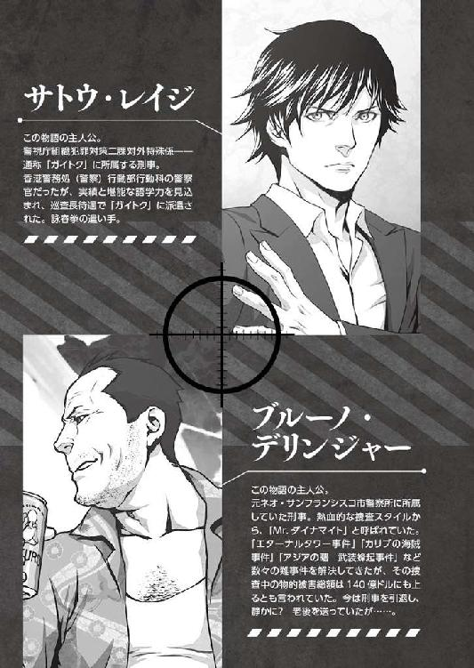

| ダイナマイト刑事 BURNING 2020（桜ノ杜ぶんこ） | |
| おかず | |
| (2014) | |
桜ノ杜ぶんこ
ダイナマイト刑事
BURNING 2020
おかず


プロローグ
会心のアッパーカットだった。
無骨な金属パーツに覆われた顎を、真下から一直線に右拳が貫く。肩の付け根にまで突き抜ける衝撃が、ブルーノ＝デリンジャーに死闘の決着を予感させた。
「終わりだウルフ＝ホンゴウ。今度こそ、余生は静かにブタ箱で暮らしてもらうぜ」
振り抜いた拳を静かに胸元へ戻し、ブルーノは言った。眼前では、その半身を狂気の科学技術で機械化した大男が、がっくりと膝を折っている。
大男の名は、ウルフ本郷。
国籍、不明。年齢、不詳。ブルーノとは、一〇年以上にわたる因縁の鎖で繋がれた、稀代のテロリスト。
旧サンフランシスコ市警に奉職し、既に三〇年。刑事の中の刑事といっても良いブルーノが三度激突した、まさに宿敵と呼ぶべき存在であった。
最初の対決の舞台は、ステーツだった。一九九六年、大統領令嬢誘拐及びエターナルタワー占拠事件。
二度目は、カリブ。一九九八年、俗に「カリブの海賊事件」と呼ばれる、豪華客船バミューダ号シージャック事件。
そして三度目はここ、香港。
「こないだテレビで見たんだがな、ジャパンには『ブッダの面に小便をかけられるのも三度まで』って諺があるんだとよ。わかるかい？ てめぇと張り合うのも、正真正銘これで最後ってこった」
ビクトリアハーバーの夜景を望む遊覧船のデッキ。
将来公文書には、二〇〇七年、Asian Dawn──テロ組織「アジアの曙」武装蜂起事件として記録されるであろう戦いにおける、最後の舞台であった。
ここへ到るまでに繰り広げてきた凶悪無比のテロリストたちとの死闘の中で、ボロ雑巾同然の有様になっていたワークパンツのヒップポケットから、ブルーノは刑事の証である金属製の手錠を取り出す。
これをウルフの手首に噛ませれば、すべてが終わる。
──しかし、過去の戦いにおいて生死の境を彷徨う重傷を負った結果、生身の肉体を捨ててまでテロに生きた男に手錠をかけることに、どれほどの意味があるのだろうか。
今、ブルーノの胸に去来するのは、達成感よりもそんな虚しさにも似た思いだった。
「オレの小便じゃねぇだけマシと思いやがれ。クソ野郎が！」
その思いを血の混じった唾と共に吐き捨て、ブルーノがひざまづくウルフの手首をねじり上げようとした瞬間だった。
「そんな諺などあるか！」
手錠を握るブルーノの左手を乱暴に払いのけ、ウルフはゆっくりと立ち上がった。
「......野郎」
払われた手に残る、じんとした痺れ。ブルーノは、真正面からウルフを睨みつけた。
三〇年、ダウンタウンのヤク中から重火器で武装したテロリストまで、ありとあらゆるクソどもをぶちのめすことで磨き続けてきたパンチが、鈍ったとは思いたくなかった。
とは言え、ブルーノは自分がもう若くはないことも自覚していた。年齢は、既に五〇の大台を超えている。そんな年になってまで、こうしてクソどもを相手に殴り合いを演じている同期は、誰一人としていない。
が、それはウルフとて同様のはずだ。
顔の上半分は生身を残しているウルフの禿げ上がった額には、ブルーノのそれよりもなお濃く、深く、年輪の如き皺が刻まれている。
世間一般の常識で言えば、疑いなく老人の部類に入る年齢でありながら、ウルフもまたテロリストの頭目として最前線に立ち続けている。壊れ、衰える肉体を、機械の力を使ってまで長らえながら。
結局、意地の張り合いなのだ。ブルーノは思った。
カリブの海賊事件から既に八年。これまで仕事漬けの日々で蔑ろにしてきた家族への罪滅ぼしにと計画してきた旅行を反故にしてまで香港に赴いたのは、やはり目の前に立つこの老人に自分の手で引導を渡すまで、刑事であることをやめられないからだった。
手錠を握る左手はそのままに、ブルーノは再び右の拳に力を込めた。
「男の意地、というやつか？ ブルーノ＝デリンジャー」
そんなブルーノの心情を見透かしたように、ウルフが言った。
「てめぇも同じだろうが」
とブルーノは応じようとした。
「あいにく、ワシはそんなロマンチストではない」
だが、更に機先を制したウルフの嘲るような言葉に、ブルーノは目を見開いた。
と、
「ブルーノ！」
背後から甲板に駆け上がってくる複数の足音が聞こえ、同時に聞き慣れた声がブルーノの名を呼んだ。
その声に、ブルーノがほんのわずか気を取られた時だった。
「では、また」
まるでコーヒーショップで偶然鉢合わせた知り合いが暇を告げるかのような気安さでウルフが言い、その身を甲板の縁から暗い海へと躍らせた。
「ウルフ！」
叫んだブルーノは、今の今までウルフが立っていた場所へと駆け寄った。
ややあって、周到に用意していたのであろう、脱出用のエンジン付きゴムボートに乗り込んだウルフが、潮風に高笑いを響かせながら遠ざかっていくのが見えた。
「ふざけるなよ、ウルフ。ここまで来て取り逃がすなんざ、あってたまるか！」
カッと頭に血が上った。ブルーノは、身に着けていた防弾ベストを脱ぎ捨て、ウルフを追って海へと飛び込もうとする。
「待ちなさいブルーノ！ 泳いで追いつけるわけないでしょう！」
それを止めたのは、先ほどブルーノの名を呼んだ声の主だった。
「このまま見逃せってのか！ 冗談じゃねえぞ！」
脱いだ防弾ベストを甲板に叩き付け、ブルーノは振り返った。その目に、三人の女性の姿が飛び込んでくる。
一人目は、ブルーノを制止した声の主。キャロライン＝パウエル。アメリカ合衆国の歴史において最年少の大統領、マイケル＝レキシントンの令夫人である。
しかし今は、ウルフ率いる武装集団「アジアの曙」に拉致された娘を救うため、ミス＝チャイナコネクションなるエージェントと身分を偽り、ブルーノに同行していた。
二人目は、そのキャロラインの娘であるシェリー。ウルフの下を単身で脱走し、つい一時間ほど前にブルーノに保護された時には、極度の緊張と疲労で気を失ってしまった少女。今は目を覚まし、キャロラインに両肩を抱えられている。
三人目は、キャロラインのボディーガードを務めるＪＪというコードネームの女。こっちは、正真正銘ＣＩＡのエージェントである。
「あのクソ野郎が、ただ逃げ出しただけとは到底思えねぇ。キャロライン、今すぐ旦那に連絡して沖にいる空母から戦闘機の一機でも......」
そんな三人の女性たちを前に、ブルーノは声を荒らげたが、ブルーノが言い終えるよりも早くウルフの「切り札」が明らかになる。
背後から聞こえてきた地鳴りのような音に、ブルーノは再び振り返った。
ウルフのボートが走り去って行った方向、岸壁を覆い隠すように浮かんでいる一隻の大型貨物船の甲板から、うっそりとせり上がってくる物があった。
港の向こうには明るい光を放つ超高層ビル群が建ち並んでいるが、まるで自分もその仲間に入れてくれとでも言うように、灰褐色の巨体が姿を現す。
大陸間弾道ミサイル──いわゆる、ＩＣＢＭと呼ばれている物である。
この香港から発射しても、確実にＤＣのホワイトハウスを射程距離に収める化け物だ。
無論、弾頭は核である。炸裂すれば、半径二〇キロ圏内は一瞬で死の荒野と化す。
「撃つ気だ」
口中で粘りつく唾を飲み下し、ブルーノは呆然とつぶやいた。
狙いがどこかなど、もはや問題ではなかった。止める術は、無い。ブルーノの全身を言いようのない無力感が貫いていく。
「......やはり、ね。シェリー、用意はいい？」
「ええ、ママ」
立ち尽くすブルーノの横で、キャロラインとシェリーの声がした。
その後、ブルーノの眼前で繰り広げられた光景を、ブルーノはまるで夢か幻でも見るような心持ちで見続けることになる。
キャロラインに促されたシェリーが、手渡されたラップトップパソコンの画面を開いた。
そのまま、常人離れした速度でキーボードを叩き、何かのコマンドを入力した。
「シェリーは天才よ。ウルフ本郷があの子を拉致したのは、その頭脳と技術を自分の物にするため。ただの人質なんかじゃないわ」
キャロラインが言った。その声が、やけに遠くに聞こえるような気がした。
既に発射態勢を整えたＩＣＢＭのロケットブースターに火が入る。貨物船の甲板に白煙が立ちこめた。ブルーノがまだ幼い頃、テレビの向こうで見た光景だった。
アメリカの夢と希望を乗せたサターンロケットが、月へ向かって飛び立とうとしていた時と同じ光景だ。
一つ違うのは、今目の前で発射されようとしているものに積まれているのが、月の石を持ち帰る任務を帯びた探査船ではなく、死と破壊そのものだということ。
この白煙を突き抜け、ブースターから噴き出すオレンジ色の炎が、漆黒の夜空を照らした時はもう──。
しかし、結局その時は訪れなかった。
「間に合った！」
弾むようなシェリーの声がしたのと同時に、ＩＣＢＭのロケットブースターが突如として燃焼を止めたのだ。
立ちこめていた白煙がビクトリア湾の四方に散り、消え去った。再び露わになった巨躯が、ぐらりと傾いた。推進力を失い、軋むような音とともに海面へと倒れ込んでいく。
倒れる先に、豆粒のように見える小舟があった。ウルフを乗せたゴムボートだ。
死と破壊の化身から、一瞬にして数千トンの鉄屑へと姿を変えたＩＣＢＭが容赦なくそのゴムボートにのしかかっていく様を、ブルーノは声もなく見つめるしかなかった。
やがて、凄まじい水しぶきが上がり、巨大なＩＣＢＭに押し退けられた海水が波となってブルーノたちが乗る遊覧船を揺らした。
「終わったわね、警部」
揺れが収まり、ビクトリアハーバーに静けさが戻った。いつの間にかブルーノの近くに立っていたＪＪが、ブルーノの濡れた肩に手を置いて言った。
「終わった？」
おうむ返しにブルーノは言った。
「ええ。何もかも。ウルフ本郷は、死んだ」
噛んで含めるように、ＪＪが返す。
終わった。
ウルフ本郷は、死んだ。
自らが放とうとしたミサイルに押しつぶされて。
ブルーノの目の前で。
手の中に、忘れていた手錠の感触が蘇ってきた。
同時に、何かぽっかりと胸に穴が空いたような感覚に襲われる。
それは、さっきまで感じていた為す術のない無力感よりも遙かに空虚で、耐え難い感情のように思えてならなかった。
全身から力が抜け、思わずその場にしゃがみ込んでしまいそうになる。
そんなブルーノを押しとどめたのは、
「いえ、まだ終わってないわ」
またしてもキャロラインだった。
はっとなって顔を上げたブルーノの前に、開いたままのラップトップパソコンを掲げたシェリーの姿が滑り込んできた。
「これを見ておじさん！ さっきハッキングした貨物船のコンピュータにあったの！」
「あった？ 何がだ？」
「ウルフたちが、世界中から私と同じように誘拐してきた子供たちのリストよ！ あの貨物船の中に、何十人も閉じ込められてる！」
「何だと？」
ＩＣＢＭがウルフもろとも海中に没した後も何事もなく湾に浮かんでいる貨物船と、シェリーが示したリストとをブルーノが交互に見やっていると、
「火が！」
甲高い声で叫んだＪＪが、貨物船を指さした。
燃えている。さっきまでミサイルが鎮座していた辺りを中心に、激しい炎が貨物船から上がっているのがはっきりと見て取れた。
その炎を見た瞬間、ブルーノの中に沸立つ何かがあった。
ウルフは死んだ。ブルーノの手によって手錠を噛まされることなく、死んでしまった。
だが、まだ終わってはいない。
「お願いおじさん！ みんなを助けて！」
シェリーが叫んだ。ブルーノは、何かに突き動かされるように走った。
走って、跳んだ。今度こそ一切の躊躇なく海へと飛び込む。
まだ終わってない。
まだやるべきことが残っている。──だから、オレはまだ刑事でいられる。
胸に沸立つその思いが、「喜び」であることに気付かぬまま、ブルーノは燃え盛る貨物船に向かって一直線に泳ぎ始めた。
ＡＣＴ１ ガイトクの男
日本の夏には、香港ともマカオとも違う、独特の不快さがあるような気がする。
気温と湿度だけで言えば、香港の方が上だろう。違うのは、空気の質だ。
日本の街に漂う、どこか内にこもったような粘り気を感じる空気が、より不快指数を高めているに違いない。
しかもその度合いは、繁華街に煌めくネオンの輝度に比例する──などと考えてしまうのは、自分が〝ガイジン〟だからであろうか。
ふと、そんな益体もないことがレイジ＝サトウの脳裏によぎる。
つまらないことを考えるのは、集中力が落ちている証拠だ。しっかりしろ。今は、仕事中なのだ。
自分を叱咤し、レイジは頭と体のギアを切り替えた。一段、走る速度が上がる。
「止まれ！」
日本語で叫んだ。前を走る男は、日本人だ。『湖狼会』という看板を掲げたジャパニーズ・マフィア......つまりヤクザの構成員だ。今、レイジが与している組織で使われる用語で言えば「暴力団員」と呼称される存在である。
もっとも、レイジはオフィス内でそんな呼び方を聞いたことはほとんどない。日本人の同僚たちは皆、こういう手合いを「マルＢ」という独特の隠語で呼ぶのが普通だった。
とにかくそのマルＢ──ヤクザの男は、レイジの前方一〇メートルばかり先を全速力で逃亡している。
東京、新宿。日本で最も巨大な歓楽街、歌舞伎町の裏通り。すなわち、日本で最も空気が粘っているとレイジが感じる場所で、この追跡劇は行われていた。
「止まれ！」
前を行くヤクザの背中に向かって、もう一度叫んだ。返答代わりに、ヤクザは路肩に置かれていた大きなポリバケツを手で払った。中にみっしりと詰まっていた可燃ゴミがぶちまけられ、レイジの行く手を阻む。
厭わず、レイジはそのゴミの川に突っ込んだ。同時に、ほぼ無意識のうちに、ゴミの中に埋もれていた棒状の物を掬うようにして拾い上げた。
それは、先端が毟れて役目を果たさなくなった箒の残骸だった。
そろそろ鬼ごっこは終わりにしたい。相手は、昔からこの街を根城にしてきた人間である。地の利は向こうにある以上、長引くほど不利になる。
レイジは、拾い上げた箒の先端を握ると、手首のスナップを効かせてサイドスローで投げ付けた。地面と水平に勢いよく回転しながら飛ぶ箒は、レイジの狙いどおりにヤクザのふくらはぎ辺りに命中した。
箒がヤクザの足に絡み、跳ね回る。前につんのめったヤクザの体が、走る勢いのままに地面に叩き付けられた。「ぐっ」という、くぐもった声がレイジの耳に届く頃には、レイジの右手が倒れたヤクザの襟首に伸びている。
「湖狼会、若頭補佐の高田だな」
俯せになっていたヤクザ、高田の体を引き起こし、レイジは声をかけた。
暗がりでも目立つ水色のサマースーツを掴んだ右手はそのままに、左手を肩にかけてこちらを向かせようとする。
「......シッ！」
高田の口から勢いよく空気が漏れるような音がしたのは、その時だった。
レイジの両手を振りほどくように、高田の上半身が勢いよく捻られる。
ぱん、という乾いた音がした。
振り向きざまに繰り出された高田の右拳を、レイジの掌が受け止めた音だった。
「素直に話を聞かせてくれれば、なかったことにしてやる」
脇腹の辺りで高田の拳を押さえたレイジが、ゆっくりと言った。
「てめぇ」
自分のパンチに自信があったのだろう。驚いた様子で目を見開いた高田が、ステップを刻むようにレイジから距離を取ると、素早く身構えた。
脇を締め、両の拳を顔を覆うように高く掲げ、エナメル靴の踵をわずかに浮かせている。
高田俊夫。三四歳。高校中退後、一八歳でプロボクサーのライセンスを取得。
デビュー戦から連続ＫＯ勝利を重ね、日本チャンピオンも狙える器と期待されていたが、ある試合で八百長に手を染めたことが発覚してライセンス剥奪処分......。
ボクシング界を追われた後は、何の因果か、自分に八百長を持ちかけてきた湖狼会の前身組織に就職。腕っぷしの強さと度胸の良さを武器に頭角を現し、現在に到る。
頭の中にあるファイルをめくってから、レイジは静かに息を整えた。
構える。
高田のように拳は握らず、ゆったりと開いた右手を体の前に伸ばし、左手は臍に引きつけるというその構えは、レイジにとっては呼吸をするかの如く身に染みついたものだった。
すぐに高田の左が飛んできた。
セオリーどおりのリードジャブ。しなりが有り、鋭い。
鍛えたボクサーのジャブは、この世に存在するどんな格闘技の打撃よりも「速い」のだという。
しかし、レイジの右手はそれが単なる俗説に過ぎぬことをすぐに証明した。
高田の左腕が伸びきる前に上から撫でつけるように拳を払い、その反動を利用した裏拳を、高田の鼻と上唇の間に軽く放り込んだ。
高田が首を仰け反らせたところに、レイジは両足を地面に滑らせるようにして素早く踏み込む。
一瞬で間合いに入ると同時に初めて拳を握り、ごく至近距離から高田の胸板目がけて短い突きを三連打。それで、あっさりと勝負は決した。
レイジの突きによって横隔膜を揺さぶられ、一時的に呼吸を止められた形になった高田の顔が青黒く染まり、歪み、震えた膝が落ちた。
「公務執行妨害と暴行の現行犯逮捕だ。その辺の交番か署まで来てもらおうか」
膝が完全に崩れる前に、手を高田の脇の下に突っ込んで支えたレイジが言った。
「ンだとぉ？」
ようやくわずかに呼吸が戻った高田が、脂汗の浮かんだ顔をレイジに向けた。
「......デコ助だってのかよ。てめぇが？」
にわかには信じられないといった声色でうめく。
高田のそれと違い、地味な色合いをした麻のジャケットの胸元をまさぐったレイジが、黒革の手帳を取り出して高田の目の前に突きつけた。
顔写真入りの証票の下に、「警視庁」の文字が刻まれたエンブレムが輝いている。
「てめぇ、外人だろうが」
高田の口から漏れた言葉に、レイジは苦笑した。
この台詞を犯罪者や事件関係者から聞かされるのは、レイジが日本に来てからこれで何度目だろうか。
髪は黒いが、瞳の色は明るい緑。鼻が高く、顎のラインもシャープだが、頬骨が少し張っている。肌は、やや浅黒い。
ある者にはヨーロッパの血が入っているのかと尋ねられ、またある者には親族にアラブ人がいるのかと問われたこともある。
少なくとも、この顔つきだけを見て日本人だと判断した者は、これまで誰一人としていなかった。かと言って、他にはっきりと何人であると言われたこともない。
だから、〝ガイジン〟だ。
異民族、フォーリーナー。呼び方は変われど、どの国へ行っても似たような意味合いの言葉で呼ばれることだろう。
レイジが、日本で最も多いといわれている姓を持ち、日本人風の名前を持っているのは、単に養母が日本人であったからに過ぎない。
自分の出自にまつわることは、幼い頃からレイジにとって重大な関心事の一つではあった。成人してからもそうだ。
が、この瞬間はそんな話はどうでもよいことだった。
今は、レイジが正真正銘、警視庁から発給された警察手帳で己の身分を示し、事件の参考人から捜査に必要な情報を得る以上に重要なことはない。
「警視庁組対二課、対外特殊係だ。お前もこの街で代紋背負って商売してるなら、聞いたことぐらいあるんじゃないのか」
「なるほど、てめぇが噂のガイトクかよ」
レイジが所属を明かすと、高田は煙草臭い口から唾を吐き捨て、そっぽを向いた。
高田の胸ぐらを掴みなおしたレイジが、狭い路地を形作る雑居ビルの壁に高田の背を押し付けた。
さすがにレイジが警察官とわかった以上、下手な真似はしない方が得策と判断してか、高田はされるがままになっている。
しかし、
「けどよぉ、俺はあんたがデコ助......刑事だなんて知らなかったんだぜ。あんたも俺が殴りかかる前に一度も警官とは名乗らなかった。なのに公務執行妨害ってのは、フェアじゃねぇだろうが。違うかい？」
事情聴取にまでは素直に応じるつもりはないらしい。高田の目の中に小ずるそうな光が宿った。
「......なるほどな」
レイジは小さくうなずいてみせた。苦し紛れの屁理屈ではあるが、一理ある。
左腕一本で高田を壁に釘付けにしながら、レイジの右手が素早く高田の着ていたスーツとシャツの袖をまくった。
その様子を見た高田の目つきが変わる。
露わになった腕の中程、血管の上にある注射痕を見逃す警察官はいない。
高田の腕に残っている痕は、割合古いものに見えた。緊急逮捕して尿検査をしても、薬物の陽性反応が出ることはないだろう。が、斬り込む材料としては有効に使える。
高田が商売の品物と一緒に覚醒剤を仕入れ、それを組の上役には秘密で横流ししていることも、しっかりとレイジの頭には入っていた。この注射痕は、以前に仕入れたブツの純度を自分の体で確かめた時のもの......そんなところだろう。
「しゃぶのこと、上は知らないんだろう？ まずいんじゃないのか」
「き、汚ぇぞ！」
「組の上前跳ねてるしゃぶ中の方がよっぽどだ！ ふざけるなよ！」
金切り声を上げる高田を一喝し、レイジは左腕に力を込めた。緑の瞳に火を灯し、高田を睨み付けた。
「......何が知りてぇんだよ、ガイジンのデコ助」
「決まってる。お前たちの取引相手のことだ」
「お前と同じで、外人どもはぶっ飛んでるのが多いんだよ。喋りゃ俺が消される」
「言わなきゃこの場でしょっ引くまでだ。一年前の恐喝、執行猶予中だったな？ これで五年は出てこられないぞ。出てきたとしても......」
「わかったよ！ クソが！」
半分は脅しで言ったレイジの声を遮り、高田が叫んだ。
たとえ刑期を終えて出所したところで、建前上は御法度になっている薬物を、それも組長以下の幹部に黙って横流ししていた人間の末路がどうなるかを想像するだけの頭は残っているようだった。
「連中にネタ元が俺だってバレるのだけは無しだ。外人にだって、そんぐらいの仁義はあんだろうが」
「いいだろう。あくまでも摘発は内偵の結果ということにしておいてやる」
懇願に近い高田の言葉に、レイジは即答した。
高田が、太い息を吐いた。
それからしばらくの間、高田はおとなしくレイジの問いに答え続けた。
その内容は、レイジにとって十分とは言えないまでも満足のいくものだった。
「......もういいだろう。いい加減、離してくれや」
洗いざらい喋り終えたところで、高田がさっきまでとは打って変わって力の無い声で言った。それでも油断することなく、
「一応、最後にボディーチェックさせてもらう」
レイジは言った。
「勝手にしろ」
両腕を頭の上で組んだ高田の全身を手早く調べた。高田にとって幸か不幸か、覚醒剤の現物などが出てくることはなかった。
「行け」
ゆっくりと、レイジは高田を解放した。
「くそったれ。デコ助だろうがなんだろうが、外人が日本ででけぇ面してんじゃねぇぞ」
捨て台詞を残し、高田は裏路地を抜けてネオンの向こうに消えていった。その姿が完全に見えなくなったところで、レイジはようやくほっと息を吐いて天を仰いだ。
２
西暦二〇二〇年の東京は、湧いていた。
もっとはっきりした言葉を使うなら、「浮かれている」というのが一番しっくりとくる。
〝祭〟が目前に迫っているのだ。
世界中から選りすぐられたアスリートたちが来日し、憲章なるものに記された聞き心地のよい建前の下にその技術を競い合う、地球規模の祭典だ。
現実は建前とは程遠く、規模が桁外れなだけで本質的には下卑た興行に過ぎないことを知っていながら、それでも始まってしまえば多くの人が熱狂する。
熱狂を産み出す根源は人によって様々である。
この時ばかりは素直な発露を許されるナショナリズムであったり、あるいはもっと即物的な「経済効果」などと呼ばれる金の魔力であったり。中には、純粋に一流アスリートたちの力と技にそれを見出す者もいるだろう。
その気運を、日本政府は数年をかけて周到に醸成することに成功していた。
九年前に日本を襲った未曾有の大災害を経た後、総選挙において圧勝した現与党は、時の総理の名を冠した経済政策を強力に推し進めた。
その後二年が過ぎた頃、半世紀ぶりに祭典を東京に誘致することに成功した。
この機だけは逃してはならぬ。半世紀前、東京の青空を染めた競技場の炎が戦後復興の象徴となったように、今回もこれを足がかりにして、長らく低迷していた日本という国家そのものを浮揚させねばならぬ。
政府はありとあらゆる手を尽くして、国民たちの胸に灯り始めた小さな種火を消してしまわぬように努めた。
しかし、何もかもが順調にいったわけではない。
確かに政策が奏功し、一部で景気は上向いたが、当時の総理の任期中にすべての国民がその恩恵に浴するまでには至らなかった。
加えて、安全保障関連と周辺国との外交問題は相変わらず不穏な空気のまま燻り続けていたこともあって、来たる選挙では波瀾の影が見え隠れしていたのだった。
二〇一六年。
総選挙前に行われた与党総裁選にて総理は出馬を見送り、代わりに後継者として支援したのが、現総理である大見謝正憲であった。
大見謝という一風変わった姓は、沖縄地方に見られるものである。
憲政史上初、沖縄選出の与党総裁が誕生した瞬間だった。
一瞬にして大見謝旋風が日本中を席巻した。
何しろ、史上初である。
相も変わらぬ醜い権力闘争に終始する派閥領袖たちの顔ぶれに嫌気が差していたところに、現職総理が後押しする気鋭の新人が現れたのだ。
沖縄選出の議員であるというところも、旋風に拍車を掛けた。
二一世紀の今もなお、国の身代わりとなって多大なる「痛み」を引き受ける悲運の地から、国政の頂点に立つ人材が輩出された──。
良くも悪くも浪花節と判官贔屓を好み、かつ目新しいものにはすぐに飛びつくという日本人の気質をこれほどくすぐる政治家は、ここ数十年ついぞ存在しなかった。
大見謝旋風は衰えることなく総選挙においても吹き荒れた。
狼狽した野党が遅まきながら一致結束を訴えても後の祭りだった。世論の圧倒的な支持を得て、第一次大見謝内閣が誕生した。
それでも発足当初、識者と呼ばれる人物たちは皆、与党による露骨な人気取り、単なる飾りの神輿と冷ややかな視線を送っていた。
が、蓋を開けてみれば大見謝正憲という男、今の今までどこで埋もれていたのかと誰もが首を傾げる傑物であった。
総理に就任するや否や、それまでおくびにも出さなかったアメリカとの強力なパイプを披露して世間の度肝を抜いたのである。
抜群の政権運営能力で四期目の再選が確実視され、「絶対王者」とまで評されていたマイケル＝レキシントン大統領をして、
「ミスター・オオミジャは、私にとって永遠の友人でありパートナーである。私は、彼が導く日本と手を携えるために三度の選挙を戦ってきた」
とまで言わしめたのだ。
その後、大見謝の故郷である沖縄において大見謝政権初の日米首脳会談が開かれた。
『日本の総理が、電話一本で大統領を沖縄に呼びつけた』
そんな書き出しで始まった米紙の記事が、会談の席で従来の日米地位協定を根本から見直すこと。沖縄に駐留する米軍施設の一割を県外移設すること。これまで日本が負担してきた在日米軍の駐留費用を大幅削減することで合意したと報じた瞬間、大見謝の名は後の日本史に残る「伝説」となった。
こうして、鮮烈すぎる政権デビューを果たした大見謝は、矢継ぎ早に「次の一手」を打ち続けた。
外交と安全保障面ではレキシントン大統領との蜜月ぶりを前面に押し立てつつ、国内向けには、エネルギー政策と海洋資源開発に大胆な投資を行って、新たな産業分野の開拓に注力した。
そして迎えた、二〇二〇年。
確実な景気回復と、次代を牽引する新産業の成長という追い風を受けて走り続けてきた大見謝にとって、間近に迫った祭典の成功は政権一期目の集大成であると同時に、盤石の構えで二期目を迎えるための試金石となるはずだ。
──そんな大見謝と政府の思惑はともかく、街は浮かれている。祭典の始まりを今か今かと待ち続け、来たるべき瞬間に爆発させるための熱を蓄え続けている。
半年前に香港から東京へ出向を命じられた時、レイジはそのような日本の世情について一通り勉強していた。養母であるナオミ＝サトウの祖国ということもあり、以前から日本には興味を抱いていたからだ。
しかし、見ると聞くとでは大違いだった。
実際に肌で感じる東京の熱気は、レイジの想像を遙かに超えていた。
警視庁に着任してから今日まで、何度となく盛り場に足を運んだが、市民たちの熱狂ぶりは日ごとに増していくようだ。
そんなことを考えつつ、歌舞伎町の裏路地を出てＪＲ新宿駅前の交差点を渡ったところでレイジは携帯電話を取り出した。
背後にあるランドマーク的なビルの壁面に備え付けられた大型スクリーンには、大会公式スポンサー企業のＣＭが大音量で引っ切りなしに流れている。
携帯の画面で現在の時刻を確認したレイジは、スピーカーを強く右耳に押し当てた。
午後九時。この時間なら、まだ係長の鱶野はオフィスにいるはずだ。
『鱶野だ』
ワンコールで鱶野の声が聞こえた。
「レイジです。今、よろしいですか？」
『どうした？』
鱶野の声が遠い。空いている耳に否応なく飛び込んでくるＣＭソングが邪魔だった。片手で耳を塞ぎ、レイジは続ける。
「例のヤマについて進展が。話を聞いていただけますか？」
一瞬の沈黙があって、
『警備部主導の全体会議中なんだ。大会の警備計画について確認をってな。今は暫時休憩ってやつだが、もうしばらくかかる』
申し訳なさそうな鱶野の声がした。
「終了予定は？」
『一〇時ってところだな』
レイジは小さく息を吐いた。ここで焦っても仕方がない。
「今から戻ります。お疲れのところすみませんが、会議の後で少し時間をください」
『わかった』
「では、後ほど」
電話を切って歩き出す。駅近くにあるビルの立体駐車場に車を置いていた。
出庫の手続きをして、料金を払う。二時間の駐車で一二〇〇円という料金が妥当なのかどうかは、さすがにまだ来日して半年のレイジにはわからない。
わかるのは、東京の交通事情が香港と同程度の劣悪さだということぐらいだ。
駐車場から出て、目の前に横たわる新宿通りがびっしりと赤いテールランプに埋め尽くされてるのを見て取ったレイジは、すぐさまウィンカーを取り消して車を直進させた。
カーナビの画面に映る情報で、この先の渋滞を確認する。
明治通りから外苑を経由して青山墓地を突っ切るルートで桜田門へ向かうことにした。
３
午後九時四〇分。オフィスにはまだ灯りが点いていた。
しかし、他の同僚たちは既に上がっているのか、オフィスには誰もいない。
レイジは軽く息を吐いた。『対外特殊係』というプレートが天井から吊り下がっている一角にある自分のデスクに腰を降ろそうとする。
と、
「おい、ガイトク」
レイジの背後から、横柄な口調の声がした。
ガイトク、という部署の略称が自分を指しているのだということはすぐに気付いたが、レイジは一瞬振り返るのをためらった。
「聞こえねぇのか。お前だよ、外人」
今度は、外人だ。
内心で嘆息したレイジだったが、このまま無視では面倒なことになりそうな雰囲気だった。もっとも、振り返ったところで面倒な事態は避けられなさそうではあるのだが。
「俺の名前はレイジです。レイジ＝サトウ。ガイトクでも、外人でもありません」
言いながら振り返ると、オフィスの入口に立っていた大柄な男と目が合った。
「外人だろうが」
何度かフロア内ですれ違った顔だ。レイジと同じ組織犯罪対策部に所属する刑事で、冬木とかいっただろうか。
記憶が曖昧なのには理由がある。同じ部の同僚でも、課が違うのだ。
レイジが属するのは第二課で、冬木は四課だった。
冬木は、上は垢で黒ずんだシャツの襟にだらしなく緩めたタイを引っかけ、下は突っ張りすぎて膝がつるつるになった安物のスラックスにボロ革靴という、実に典型的な「マル暴刑事」といった印象だ。
マル暴とは、これも暴力団の略称として用いられる隠語であり、四課は、暴力団絡みの犯罪を摘発する部署である。
「マル暴さんが俺たちに何か？」
「マル暴さん、じゃねぇんだよ小僧！」
眉だけでなく、がっしりとした幅広の肩までをもいからせて、冬木は飢えた熊のような足取りでレイジに向かって歩み寄ってきた。
「てめぇ、二課がどうして俺たちの頭飛び越えて勝手に湖狼会にさわってくれてんだ。しかも、外人部隊の分際で」
冬木の物言いに、レイジはカチンと来た。
「湖狼会は四課で内偵進めてたんだよ。それを勝手に引っ掻き回してくれやがって。どう落とし前つけてくれんだ？ ええ？」
「勝手にというのは間違いです、冬木さん。自分は湖狼会と繋がっている外国人犯罪組織を内偵するにあたって、係長の鱶野警部補を通して湖狼会に接触する了承を取り付けてから捜査に臨んでいます」
レイジは、努めて冷静に、淡々と反論した。
四課の仕事が日本人暴力団の摘発なら、レイジが属する二課の仕事は外国人による犯罪組織の取り締まりだ。
今、東京を中心にして外国人犯罪組織の数は激増していた。
前政権から続く経済政策によって景気が上向き、かつ世界中が注目する大イベントを控えて湧いているのが今の日本である。
当然、犯罪に手を染めてでも大きく稼ぎたいという不心得者が紛れ込む割合も多くなるということだ。
しかも、今や犯罪者たちの間でもグローバル化は当然という流れができている。
今や東京では、国も人種も関係ない、いわば多国籍犯罪組織が雨後の筍のように乱立しているのである。
こうした多種多様に複雑化する外国人犯罪組織を摘発するにあたり、警察も従来どおりの体制では限界があると考え、思い切った改革に打って出た。
それは、犯罪者たちの母国事情に通じた各国の警察官を日本に呼び寄せ、日本からも諸国の犯罪事情を学ばせるための人材を派遣するという、人材交流の活性化であった。
犯罪者たちが国境を越えて手を組むのであれば、警察も同じようにする。
日本に派遣してもらった各国の優秀な警察官に、日本国内における捜査権や逮捕権を与え、実際に現場へ出てもらう。
警視庁組織犯罪対策二課対外特殊係、通称「ガイトク」は、その最初のモデルケースとして試験的に設立された部署であった。
レイジは、半年前に香港の警察「香港警務処」における最前線の実働部隊、行動部行動科から、実績と堪能な語学力を見込まれて巡査長待遇でガイトクに派遣されてきた。
他にも台湾、韓国、ミャンマー、インドネシア、果ては南米のコロンビアからそれぞれ一名ずつ外国籍を持つ警察官が派遣され、机を並べている。
話を戻そう。
要するに、冬木の抗議はお門違いということだ。
確かに湖狼会は日本人のヤクザ組織だが、彼らの背後では主に香港系中国人と東南アジア数カ国の人間が手を組んだ犯罪グループが暗躍していることが判明していた。
グループは、主に拳銃や爆発物を本国から密輸して湖狼会に渡し、湖狼会のパイプで日本のブラックマーケットに流通させているのだ。
このグループを叩くことは、組対二課及びガイトクの正当な業務である。その過程で、パイプ役の湖狼会を避けて通ることなどできるわけがなかった。
しかし、
「それでも配慮ってもんがあんだろうが。刑事部屋、間借りしてる身分なんだ。やるなら、うちから一人連れてくぐれぇの仁義がどうして通せないんだっつってんだよ！」
冬木は頑迷だった。
ガイトク設立の理念に共感し、日本への出向命令を喜んで受け入れたレイジだったが、半年が過ぎた今では失望が先に立つことが多くなっていた。
現場レベルで相互に犯罪者への対応を学び合う場など、どこにもない。
あるのは、日本的で迂遠な捜査手法の押し付けと、実にくだらない部署同士の縄張り意識ばかりだ。
もはや、反論する気力も萎えかけていた。
冬木ごときと話をするだけ無駄だ。適当に相槌でも打って、さっさとこの場を離れようか......などと考え始めていた時だった。
「私はレイジく......じゃない、サトウ巡査長は正当に職務を遂行しただけだと思います」
不意に、清涼な風が吹き抜けたような声がした。
レイジと冬木の間で淀んでいた空気が一変する。
驚いたレイジが声のした方を見ると、さっきまで冬木が立っていた場所に、胸元にファイルの束を抱えたひとりの女性が立っているのが見えた。
彼女の名前は、よく知っている。
相沢千尋。レイジたちガイトクも含む組織犯罪対策部で事務仕事を担当している警察職員であった。
「サトウ巡査長がきちんと手続きを踏んだ上で捜査を行ったことは明らかです。なんでしたら、二課と四課、両課長の判が入った申請書をお持ちしましょうか？」
活発な印象を与えるショートヘアの下、形の良いアーモンドのような瞳の中に負けん気に満ちた光をたたえながら、千尋が言った。
そのまま、ローファーの靴音も高く冬木とレイジの間に割って入るように近付いてきたかと思うと、ぐっと胸を反らすようにして大柄な冬木の顔を見上げた。
夏物のスーツを内側から押し上げている豊かな胸が、抱えていたファイルに押し当てられて左右に広がる。
「お嬢ちゃん、立ち聞きした上に男同士の話に口を挟むのは感心しねぇぞ」
冬木が、幾分か声のトーンを落として言った。
その目が、ちらと千尋の胸元に注がれているのにレイジは気付いた。
「時代錯誤も甚だしいですね。そんなだから、恥ずかしげも無くくだらない言いがかりを付けられるんでしょうか」
一方の千尋も、その視線に気付いている様子で、
「それと、話をする時は目を見ていただけますか？ 人としての常識です」
容赦のない言い方でクギを刺す。
「俺は現場を円滑に回すための心得を教えてやってんだ。警察官ですらねぇ事務の小娘風情が出しゃばる話じゃねぇんだよ！」
冬木は、まだ気付いていないようだった。千尋は、わざと冬木を挑発して失言を引き出そうとしている......。
「小娘は小娘らしく茶でも淹れて回るか、その辺の掃除でもしてろ」
それにしても簡単に罠にはまったものだとレイジは思った。
瞬間、千尋の舌鋒が再び火を噴く。
「今の発言は、セクシャルハラスメントを禁じる内規違反です。四課長に厳重に抗議させていただきますのでそのつもりで。サトウ巡査長に、証人になっていただきます」
そこで初めて、冬木がたじろいだような表情を見せた。
千尋から視線を外し、もう一度レイジの方を見る。
「おい......」
大事にしてくれるなと、冬木の目が言外に訴えていた。どうやら、冬木はこの種の火種を他にも抱え込んでいるようだ。
だからと言って、レイジが冬木の味方をしなければならない理由などどこにもない。
ここで冬木に同調などしたら、それこそ身を挺して自分を弁護してくれた千尋に対する仁義が立たないではないか。
「俺のいた香港警務処は、土地柄もあって内規については基本的に英国式でね。性差別と取れる発言は、経緯はどうあれ懲戒の対象だ」
一瞬、千尋の方を見やってレイジが言うと、わずかに千尋の顔が綻んだ。
直後、目で「この辺にしときましょう」とレイジに訴えかけてくる。
「......が、ここは日本だ。日本では日本なりのやり方があるのもわかる。俺は筋を通して事に当たったつもりだが、確かに少しだけ配慮が足りなかったかもしれない。
しかし、あの時点で高田を抑えなければ、奴は取引を控えて潜る可能性が高かった。緊急措置だったんだ」
先ほどまで使っていた敬語を捨てて、レイジは言った。
千尋に免じて折れてやるのはいいが、舐められたままではこの先が思いやられる。
「......わかった。もういい」
レイジの視線を受け止めた冬木が、居心地悪そうに言った。
「俺は確かにあんたから見れば外人だ。だが、犯罪を憎む気持ちに国境はない。どこの国だって、刑事は刑事だ。俺も、あんたも。そうだろう？」
「もういいっつってんだろ」
すねた子供のような声でレイジの話を遮った冬木が、踵を返した。
ひとつ舌打ちをして、右手で首筋を揉むようにしながら、のそのそとした足取りでオフィスを出て行く。
「何よ、あの態度。せっかくレイジ君から歩み寄ってくれたって言うのに。本当にセクハラで訴えてやろうかしら」
冬木の姿が見えなくなるかならないかというところで、千尋が聞こえよがしに言った。
どう応じていいものやらとレイジが迷っていると、
「ごめんね。何か余計な口出ししちゃって。迷惑じゃなかった？」
あれだけやっておきながら、今更のように千尋は頭を掻いた。
「いや、正直スッとしたよ」
苦笑しつつ、レイジが素直な気持ちを口にすると、
「だったらいいけど。ああいう目先の事しか見えてないのには、ガツンと言い返してやらなきゃダメよ。
大体、よそ者だとか外人だとか思考が古いのよね。悪い奴に泣かされたり、犯罪に巻き込まれた人たちの前でも同じ事言えるのかって話よ」
その言葉に、レイジは胸を衝かれる思いだった。
たとえ警察官ではない事務職員でも、立派な志を持って市民の安全な生活を守るために働いているのだ。
犯罪被害に遭った市民の前で縄張り意識を振りかざしてどうなるのかという、千尋の率直な正義感と使命感は、レイジの胸に溜まりつつあった澱を洗い流すのに十分だった。
市民を犯罪から守る。
部署や縄張りなど関係なく、大多数の警察官や警察職員は、その志ひとつで日々の職務に励んでいるに違いない。
手を取り合う仲間は、このオフィスの外にも大勢いる。
「ありがとう、千尋さん」
レイジは、しっかりと千尋に向き直ってから言った。同じ志を持つ仲間の顔を脳裏に焼き付けておきたかった。
「え？ あ、その......ど、どういたしまして」
と、急に千尋の顔が紅潮して視線が泳ぐ。
「いやその、改めてお礼なんて言われるとどうも、ね」
「そんなことはない。今日の気持ちは、ずっと忘れない」
「き、気持ちってレイジ君そんな」
「機会があったら、千尋さんとはもっとゆっくり話がしたいな」
「ええっ!? ......あ、こういうストレートなのもいわゆる英国式っていう......」
「英国？」
「いやいやいや！ 気にしないで。じ、じゃあ今度一緒に、その辺で食事でも......」
慌てふためいて首を振った千尋が、やけに上擦った声で言いかけた時だった。
「レイジ、戻ってたか。すまんな、待たせてしまって」
またしてもオフィスの入口からレイジを呼ぶ声がした。
「係長」
ようやく長い会議を終えた鱶野が、やや疲労の色を濃くした顔でレイジに向かって片手を挙げていた。
４
煙草を吸わせてくれという鱶野の求めで、場所を変えた。
フロアの端に申し訳程度にパーティションで区切られている喫煙スペースがある。
レイジが南側の窓辺に置かれた空気清浄機のスイッチを入れると、鱶野がアメリカンスピリットに火を点けた。
「レイジ、お前いくつになった？」
煙と共にまず鱶野が吐き出したのは、唐突な質問だった。
「いくつ？......年齢ですか？」
「ああ」
「二三です。もうすぐ、二四になりますが」
「一八で警官になったんだったな、確か」
「はい。すぐに行動部に配属になって、鍛えられました」
「日本ではまず考えられんな。高卒で任官したら四年は下っ端巡査で交番勤務というのが、こっちのしきたりだ」
「係長も？」
一体、何の話だろうかと首を傾げつつも、会話を合わせてレイジが訊ねる。
落ち着いた雰囲気を漂わせているが、鱶野もまだ三〇代前半のはずだ。それで警部補の地位にあり、臨時部署とはいえ本庁勤務の係長である。
いわば将来を嘱望されたエリートというやつで、どうも制服を着て盛り場の酔っ払いを相手に説教を垂れているような姿は想像できなかった。
「俺は......どうだったかな。もう忘れた。なまじ学生時代に英語なんか囓ってたおかげで、すぐにアメリカに放り出されちまったしな」
煙草をくわえたまま窓の外を見やった鱶野が笑った。そのまま、少しだけ何かを言いあぐねるように何度か煙を吸い込み、
「そうそう、年といえば相沢君は一九だそうだ。四歳差というと、若い奴らは少し気にするものかな」
またしても唐突に話題が変わった。
「千尋さんの年齢は俺も知っていますが、それが何か？」
「お前、日本に来て以来、彼女に色々世話になっているだろう」
「ええ、まぁ。日本の警察には不思議な隠語が多いので教えてもらったり。他にも盛り場の情報やら何やら......とても親切ですね、彼女は」
「親切ってお前......」
レイジに顔を向けた鱶野が、そこで言葉を呑み込んだ。しばし表情を窺うようにしてから、微かに首を振る。
「いや、いいんだ。忘れてくれ」
灰皿に煙草を押し付け、鱶野が再びレイジを見た。笑みは既に消えていた。
「それより、話を聞こうか。湖狼会の高田、締め上げたんだろう？」
レイジは驚いて鱶野を見た。
全体会議に出ていたはずなのに、どこで情報を得たのだろうか。
「湖狼会と繋がっているのは、これまでの捜査で浮上していた東南アジア系のグループで間違いありません。リーダーと目されている男の写真も確認させました」
ともかく、レイジは高田との接触で得た情報を話し始めた。
「取引の内容は、主に銃火器類。それに、しゃぶです」
「しゃぶ？ 湖狼会は、表向きしゃぶのシノギは御法度なんじゃないのか」
「シノギ......商売のことですね？」
「ああ。しゃぶは、高田が上に黙って勝手にやってるのか？」
「はい。俺がグループについて話を聞き出せたのも、その情報があったからです」
「わかった。続けてくれ」
レイジはうなずいた。一呼吸置いて話を続ける。
「しかし、グループと湖狼会の関係は必ずしも良好とは言えないようです。取引が大きくなるにつれて、儲けの取り分について揉めることが多くなってきたと」
「湖狼会は、二年前に大陸系の組織と〝合併〟してでかくなった。
その時、看板を掛け替えたはずだな。いくらシノギの相手として五分だと言っても、ぽっと出のグループが楯突けるような相手とは思えないが」
「俺もそこは気になりましたが、高田の話ではグループはかなり尖っていると。取引の品物が品物なので、武器には事欠かないようです。
湖狼会は、合併以降フロント企業のビジネスに重点を置いていて、武闘派は減っているという話ですから......」
「高田がお前にそこまで話したということは、遅かれ早かれ喧嘩になる運命だったな」
「もしかしたら、高田は俺たちがグループを摘発してくれることを、どこかで期待しているのかもしれません。だから、割に素直に吐いたとは考えられませんか」
「大事な取引相手だぞ」
「保身が優先する、ということでしょう。このままグループとの関係がこじれる中で、しゃぶの件が明るみに出れば高田の身も危ない」
鱶野が、また煙草に火を点けた。
レイジは、身を乗り出した。
「次の取引日時と場所も判明しました。明日の夜です。
別口を当たっていたティエンとカミオ、それに矢野さんがウラを取ってます。係長、時間がありません」
この東南アジア系グループによる銃器密輸を追っていたのは、レイジだけではない。
鱶野の指示の元、ガイトクに所属する全員で当たっていた案件だった。
さっきの冬木とのやり取りのような軋轢を乗り越えながら、摘発のために身を粉にして東京中を歩き回った。
「お願いします」
もう一歩、レイジは鱶野に詰め寄った。鱶野とて、レイジたちの苦労と働きをよく知っているはずだ。
「話はわかった。だが、もう少し待て」
しかし、鱶野の口から出てきた言葉は、レイジが期待していたものとはかけ離れていた。
「係長！」
思わず、レイジの語気が荒くなった。
「今日の会議の前なら、迷わずゴーを出せたんだがな。すまん」
根元近くまで吸った二本目の煙草を灰皿に放り、鱶野はわずかに頭を下げた。
「どういうことですか」
「そのままの意味だ」
顔を上げた鱶野が、レイジから視線を外した。窓の外に目を向けながら言う。
「警備部は、〝祭〟の警備を滞りなく取り仕切ることにメンツを賭けている。四月に警視総監が今年度いっぱいでの勇退を発表したが、それは子飼いの警備部長を後釜に据えて、自分は次の知事選から政界に打って出る腹だからだ」
「警備部長を次の総監に据えるにあたって実績がいるのはわかりますが......」
「総監にとっても円満に都知事の椅子を譲り渡してもらうには、やはり有権者にわかりやすい実績がいる。
自分が総指揮を執って世紀のビッグイベントの安全を確保したのだと豪語できれば、これ以上はないアピールだろう。その辺の意識を下々に徹底させようっていうのが、今日の会議の目的だった」
また、鱶野の指で新しい煙草が燃え始めた。
レイジ自身は煙草を吸わないが、これから鱶野に聞かされるだろう会議の内容を想像すると、思わず一本拝借したくなってくる。
「今後は組織的な犯罪の情報、特に反政府思想を持っている者や外国人が関わるものについては、必ず警備部が抱えている事案の内容を報告するよう求められた。刑事部も生活安全部も、俺たち組対も、公安ですら例外じゃない。
実質的には警視総監から警備部長への全権委任だ。期間限定とはいえ、警備部長は我が世の春ってやつだろうな」
「......事情はわかりました。ですが、取引はもう明日です。今から警備部長に報告している時間はありません！」
もう一度だけ、一縷の望みを託してレイジは訴えた。
レイジは、鱶野のことを尊敬している。
鱶野は、先ほど自分でも言っていたように若くしてアメリカの首都警察やニューヨーク市警で研修を積み、帰国後は警察官僚として出世コースに乗れるところを、わざわざ志願して現場に下りて来たのだという。
その後、ガイトク設立にあたっての中心メンバーに名を連ね、何度も上層部と折衝を重ねて試験運用にこぎ着け、そして係長という責任も自ら引き受けた。
文化も習俗も違う異国の刑事たちそれぞれの個性ややり方を尊重しつつ、時に起こる軋轢の盾となり、運用開始からわずか半年で四つの大型外国人犯罪組織を叩き潰した。
すべては、巧妙化と複雑化の一途を辿る外国人犯罪の魔手から一般市民を守るために。
そんな鱶野ならば、これだけ訴えれば今すぐこの喫煙スペースを出て、警備部長に例外措置をねじ込んでくれるのではないか。が、
「もちろん、お前たちの仕事を無にするつもりはない。だが、今ここで無理を通せば、俺の責任問題だ。浮かれきった警備部長は容赦なく人事にも口を出してくる。
誓って言うが、俺自身の保身のために言っているわけじゃない。お前たちのこれからを守るためだ」
だめだった。
暗澹たる気持ちが、レイジの全身から力を奪った。思わず、目を伏せる。
「焦るな。湖狼会とグループとをお前は実質的に切った。それだけでも大きい。付け入る隙はこれからいくらでも作れる」
「その隙を待っている間に、密輸された拳銃が市民に向けられるかもしれません。しゃぶが誰かの人生を台無しにするかもしれません」
我ながら往生際が悪いと思うが、言わずにはいられなかった。
聞き分けのない子供が駄々をこねている。
鱶野の目には、そんな風に映ったのだろうか......。
「レイジ、お前にひとつ仕事をやる。いいか、これは上司としての命令だ」
鱶野の声色が固いものに変わった。
それに気付いたレイジは、顔を上げた。
「仕事？」
「明日の午後、今回の警備計画を実行するに当たってアメリカから特別なアドバイザーが来日する。
本来なら警備か公安が出迎えるのが筋なんだが、事情があって組対に出迎え役を任せると言ってきた。お前、行ってこい。課長と部長には俺が話す」
「明日の午後......。俺を厄介払いしようってことですか」
「いいか、この仕事を軽く見るなよ。何しろ相手は、レキシントン大統領が直々に大見謝総理に推薦したっていう人間なんだ。だが、向こうはどういうわけかＳＰを拒否してる」
鱶野の手が、レイジの肩を掴んだ。
「訳ありで、かつＳＰを拒否......ですか？」
「考えようによっちゃ、ちゃちな密輸グループを挙げるよりもよっぽど重要な仕事だ。冗談で言ってるわけじゃない」
肩を掴む手に力を込めて、鱶野は前後に大きく揺さぶった。
その目は、真剣そのものだ。
「命令、なんですね？」
確認するようにレイジは訊ねた。
「そうだ。命令だ」
鱶野が、ゆっくりとうなずいた。
湖狼会とグループの件を諦めるつもりは毛頭ないが、さすがにこれ以上鱶野に迷惑をかけるわけにもいかない。きっかけが、必要だった。
「......了解しました」
静かに、レイジは応じた。
ＡＣＴ２ １４０億ドルの男
貨物船の内部は猛烈な暑さだった。
舷側に据えられていた非常梯子を伝って甲板へ上がった時にはずぶ濡れだったシャツとワークパンツは、船内に飛び込んで一〇分も経つともう乾き始めていた。
船内では、至る所から火の手が上がっていた。あらかじめ起爆装置を埋め込んだＣ４爆薬を各所に配してあったらしい。
「おい！ 誰かいないか！」
何度も叫びながら、ブルーノは燃え盛る貨物船の内部を駆け回った。
巨大なＩＣＢＭを格納、運搬していた大型貨物船である。
たった一人で走り回ったところで、火が回るよりも早く内部を検索し終えることなど無理な話ではあったが、諦めるわけにはいかなかった。
『ウルフが世界中から誘拐してきた子供たちが中にいるの！』
キャロラインの娘、シェリーの悲痛な叫びが蘇る。
恐らくウルフ本郷は、自分にとっての〝最悪の事態〟というやつを想定して、貨物船にＣ４をばらまいていたに違いない。
自分の死や、他の何らかの理由で目的が果たせないと判断した時、すべてを炎の中に葬り去るために。
ブルーノは自分自身を聖人君子だと思ったことは一度もないが、そんな老テロリストのエゴの巻き添えになって、未来ある子供たちの命が奪われるなどということを許せるはずがなかった。
「生きてるヤツはいないか！ 返事をしろ！」
だから頼む。誰でもいい。
どんな小さな声だって構わない。オレの呼びかけに答えろ。
炎と共に立ちこめる黒煙に咳き込みながら、もう一度祈るような気持ちでブルーノが声を張り上げた時だった。
ブルーノが見据える先、非常階段に繋がる狭い通路の奥から、文字どおり丸くなって転がり出てくる影があった。
「誰だ!?」
その動きから、テロリストの残党であることを警戒し、ブルーノは立ち止まって銃を構えた。無骨なガバメントの銃口が瞬時に影を捉える。
が、影はその場から動こうとはしなかった。
目を凝らすと、丸めた背が激しく上下しているのが見て取れた。完全に息が切れているようだ。
すぐさま銃を下ろし、ブルーノは走り出した。
うずくまる影は、小さい。体格的に明らかに大人とは思えなかったからだ。
「おい！ 大丈夫か！ しっかりしろ！」
果たして、駆け寄った先にいたのは、まだ年端もいかない少年であった。
ブルーノの呼びかけに、ゆっくりと顔を上げる。
大量の煙を吸い込みながら全速力で走ってきたのだろう。その表情は苦痛に歪んでいる。
「オレの言葉がわかるか!?」
続いてブルーノがそう問いかけたのは、一見して少年が何人なのか判別しがたかったからだった。
少年は、アジア系のようにもヨーロッパ系のようにも見える顔立ちをしていて、ブルーノを見上げるグリーンの瞳には涙が浮かんでいた。
「オレは刑事......警官だ。わかるか!? 警察！ お前たちを助けに来た」
もっとも、相手が何人だろうがブルーノ自身は英語しか話せない。
抱き起こした少年の肩を揺さぶりながら、何度も「I'm Police」「Help you」と簡単な言葉で繰り返す。
「助けに......来た......？ 本当に？」
切れ切れに、蚊の鳴くような声で少年が応じた。英語だ。どちらかと言えばイギリス式に近いものであることから、現地で誘拐されたのかもしれない。
ともかく、言葉が通じるのは助かる。
「そうだ。お前たちを誘拐したテロリストのボスは死んだ。お前たちは、もう自由の身なんだ。安心しろ」
涙の中に揺れるグリーンの瞳を見つめ、ブルーノは言った。
少年が、ゆっくりとうなずく。
「ようし、いい子だ。それじゃあ教えてくれ。お前の他にもさらわれた子がいるな？ その子たちはどこにいる？」
わずかに少年の気持ちが落ち着いたのを見て取り、ブルーノはまた訊ねた。
「......こっち。ついてきて！」
涙をぬぐって、少年が立ち上がった。さっきより、声もしっかりとしている。
「オーケー、タフガイ。案内してくれ」
ブルーノの返事を聞くや否や、少年はさっき転がり出てきた通路を戻り、非常階段を駆け下りて行く。
少年がこの短時間で呼吸を整え、活力を取り戻したことに内心で舌を巻きながら、急いでブルーノもその後を追った。
非常階段を下りた先、立体迷路のように入り組んだ通路や部屋をいくつも通り抜け、少年とブルーノは走り続けた。
少年の道案内に迷いはなかった。しかも、火の回りが遅いところを的確に選びながらブルーノを導いていく。
通路を折れ、梯子を下り、キャットウォークを渡り......この少年の案内がなければ、ブルーノが子供たちを助け出すことはまず不可能だっただろう。
「大した坊主だ。オレ一人だけなら、確実に迷子になってたところだぜ。ありがとうよ」
そうしてたどり着いたのは、船底に近いブロックにある大きな船室の前だった。
子供とは思えない見事な判断力に素直な感謝を捧げたブルーノが、船室の扉を望めるドラム缶の陰でガバメントの残弾を確認した。
マガジンに、弾はもう無かった。先程、誤って少年に銃口を向けた際に薬室に放り込んだのが最後の一発だったようだ。
「中には何人ぐらいいる？」
自分の背に隠すような格好でしゃがませた少年を振り返り、ブルーノは言った。
「子供は、一〇人ぐらい。大人は、五人」
「大人は武器を持ってただろう。どんなだ」
「よくわからない。長い銃だよ。肩からベルトでぶら下げてた」
少年が言う〝長い銃〟というのは、恐らくアサルトライフルのことだろう。
「部屋の中は、どうなってるんだ？」
「今見える扉を入ると、キッチンになってる。大きな冷蔵庫の中に隠し扉があって、僕たちはその奥に集められてた。そこは、何か色々機械があって、ベッドとか、本がいっぱい乗った机とか」
「隠し部屋だと......。ウルフの野郎、何を企んでいやがった」
呟いたところで、ブルーノは気付いた。
ライフルで武装したテロリストが監視する中、この少年はどうやって逃げ出すことができたのだろうか？
「はじめ、部屋全体がドーンって感じで揺れて、大人たちはびっくりしてた。それで、二人が冷蔵庫に繋がってる扉を開けたら、また部屋が大きく揺れて、炎がぶわって扉から入って来て......」
少年が、懸命に説明する。
その説明から推察するに、キッチンにも仕掛けられていた爆薬でテロリスト二人が吹っ飛び、残りの三人が泡を食っている隙に少年はその隠し扉から部屋の外に飛び出したらしかった。
「無茶な坊主だ。撃たれたらどうするつもりだったんだ」
「考えてなかった。ただ、今なら外に助けを呼びに行けるんじゃないかって。必死で走ってたら、おじさんが」
少年が、ブルーノの手の中にあるガバメントを見た。
「......でも、もうみんな死んでるかもしれない。生きてたとしても、おじさんの銃、弾がないんでしょ」
マガジンを取り出したところを見られていたらしい。少年の声が、沈んだものになっている。
少年は、どこかで〝長い銃〟をテロリストたちが使用しているところを見たことがあるのかもしれなかった。
物によっては一秒で一〇発近い弾丸を吐き出して相手をミンチに変える武器を持った相手に、残弾一発の拳銃で立ち向かう無謀さは、子供にも容易に想像できるということだ。
しかし、
「おいおい、ガッカリさせてくれんなよ坊主。撃ち殺されるかもしれない怖さにも、あっちこっちで燃え盛ってる炎にも負けずに助けを呼びに行ったタフガイが、こんなことで諦めちまうってのか？」
そんな少年の弱気を笑い飛ばすように、ブルーノは言った。
「でも......」
「こんな物は、こうだ」
それでもなお、不安を拭えない様子の少年の前で、ブルーノは突然握っていたガバメントを放り捨てた。
ブルーノの手を離れたガバメントは、くるくると回りながら床の上を滑り、やがて更に下層へ続く階段の隙間から炎の中へと消えていった。
少年の目が、まん丸に見開かれる。
ブルーノは少年に向かってにやりと笑ってみせ、言った。
「坊主......オレの武器を知ってるかい？」
「し、知らない」
目を見開いたまま、少年が大きく首を振った。
「来い」
少年に手招きして、ブルーノは身を潜めていたドラム缶の陰から飛び出した。
セオリーならば少年をここに残して単身突入するところだが、今も貨物船内に火が回り続けている以上、ここが安全であるという保証はない。
最悪の場合でも、この少年だけは助けられるように、自分の目が届く場所に置いておくべきだと判断した。
少年と共に扉まで近づいたブルーノは、その場で小さく身をかがめてノブに手を伸ばした。中の様子を調べる術はない。
扉を開けた瞬間にアサルトライフルの洗礼を受けるかもしれないが、その時はその時だ。出たとこ勝負で切り抜けるしかない。
幸い、ブルーノと少年が室内に体を滑り込ませられる隙間を作ってもなお、銃声は聞こえなかった。
指で少年に「物音を立てるな」とサインを送り、ゆっくりとキッチンへ侵入する。
中は、ひどい有様だった。
爆発で四散した食器や調理器具の残骸が床に散らばり、シンクやコンロを備えた大きな調理台は黒焦げになっている。
ブルーノは、その調理台の上から目だけを覗かせてさっと室内を確認し、すぐにまた首を引っ込めた。
少年の説明どおり、この場所から対角線上にある一番奥側の角に大きな冷蔵庫があり、開け放たれた扉の内側を一人の男が銃を構えたまま見張っていた。
ここに残された五人のテロリストのうち、二人は最初の爆発で戦闘不能になったという。
残る三人のうち、一人はこちらに背を向けている。二人は、隠し部屋の中だろう。
ブルーノは、足下に目をやった。
小ぶりのペティナイフに中ぐらいの銀皿。ガラスでできた胡椒の瓶がいくつか、それに未開封の缶ビールが手に届く範囲に落ちていた。
思わず小躍りしたくなった。
ブルーノにしてみれば、ぶっ放した瞬間にバカでかい音を立てる年代物のガバメントよりもよっぽど役に立つ物ばかりだ。
右手に銀皿、左手に缶ビールを握った。ペティナイフはベルトの隙間に挟む。
胡椒瓶にも手を伸ばしたところで、じっとこっちを見ている少年の視線に気付いた。
まぁ見てな。そんな気持ちで少年に向かってにやりと笑い、胡椒瓶もポケットに入れた。
缶ビールを念入りにシェイクしながら素早く立ち上がり、こちらに背を向ける男目がけて銀皿をフリスビーを投げる要領で放り投げた。
銀皿が男の腰に当たった。
「何だっ!?」
突如腰を襲った鈍い衝撃に呻いた男が身をよじって振り返る。
その時にはもう、ブルーノは動いていた。
空いた右手でベルトから素早くナイフを引き抜き、こちらを向いた男の顔目がけて投げた。
狙い過たず、ナイフが男の右目に深々と突き立った。
「やった！ 凄い！」
少年が、小さく快哉を叫んだ。
「ここにいろ坊主！」
言い置いて、ブルーノは調理台を飛び越え男に向かって走った。
ナイフの突き立った右目を押さえた男が、片手でブルーノにライフルを向けようとするが、それよりも早くブルーノの右フックが男の左頬に突き刺さった。
ウルフにくれてやったアッパーと同じくらい、完璧な手応えだった。
隠し扉の向こうに男の体が吹っ飛ぶ。まず、一人。
「どうした!?」
扉の向こうから、別の男の声が聞こえた。
ライフルを構えてキッチンへ飛び出してくる。
待ち構えていたブルーノは、たっぷりとシェイクしておいたビールの缶をライフルの筒先に叩き付けた。
飛び出して来た男が反射的にトリガーを引き、三点バーストで放たれた弾丸がビール缶を貫くと同時に中身が弾け、激しい飛沫が銃を撃った男の目を潰す。
腰を落として、飛沫からも弾丸からも身を守っていたブルーノ、
「このクソ野郎がっ！」
溜め込んだバネを開放して男の腰を抱くようにタックルをぶちかます。
最初に殴り飛ばした男の上に、二人目の男が折り重なるように倒れた。上になった男の腹を思い切り踏みつけ、ブルーノが身を起こすと、最後の三人目がこちらに銃口を向けているのが目に入った。
大丈夫だ、間に合う。この距離なら、立ち上がる勢いで三人目の腹に頭から突っ込んで吹っ飛ばし、マウントで二、三発ぶん殴ってやればおとなしくさせられる。
すべて計算どおり。オレの作戦は完璧だ。
アドレナリンが暴れ狂う頭の中でブルーノは確信したが、そこに落とし穴が待っていた。
ほんのわずかに足の踏ん張りが効かず、二人目の男がサブの拳銃を留めていたガンベルトに、ブルーノの履いていたブーツの爪先が引っかかってしまったのだ。
バランスを崩したブルーノの体が前につんのめった。
「死ねっ！」
三人目の男が吠えた。銃口がブルーノの額にぴたりと定まる。
ウルフとの死闘で、ブルーノの肉体は自分でも気付かぬうちに限界を超えていたようだった。そのことに気付けなかった。
それこそが、〝老いた〟ということなのだろう。
あるいは、ここで最後の切り札としてガバメントを撃っていれば......。
だが、今そんな言い訳を頭の中でこねくり回したとて、どうにもならなかった。
すまねえ、坊主。
だがせめて、相討ちに持ち込んでみせる。そうすれば少年と残された子供たちだけは自力で脱出できるかもしれない。
ブルーノは必死に三人目の男に手を伸ばしたが、わずかに届かない。
万事休すかと思われたその時だった。
「こっちだ！」
声がした。あの少年の声だった。
同時に何かがぶつかる音がして、ブルーノの鼻腔にスパイシーな香りが充満した。
胡椒だ。
三人目の男が、目を押さえて悶絶していた。ブルーノの危機を察した少年が、男の顔面に向かって胡椒の瓶を投げ付けたのだった。
ぶつかった衝撃で蓋が開き、中身が半分ほど残った胡椒瓶がブルーノの手が届く所に落ちていた。
「最高だぜ坊主！」
瓶を拾い、ブルーノは立ち上がった。男に組み付き、残った中身をすべて男の目に振りかけ、擦り込んでやってから、瓶を握りこんだ拳で男の鼻っ柱をぶち抜いた。
「おじさん！」
歓喜の声を上げて少年が駆け寄ってくる。
「やってくれたな坊主。礼を言うぜ」
弛緩してこちらにもたれかかってきた男の体を放り捨て、ブルーノは少年の髪を乱暴になで回した。
「俺の武器を知ってるかい？ ......ってね」
「こいつ、言ってくれるぜ。最後の最後で、見事にお株を奪われちまった。坊主、お前いい刑事になれるぜ」
「刑事......僕が？」
「ああ。オレが保証するぜ。......けど、そいつは無事にここを逃げ出してからにしようや」
テロリストたちをなぎ倒し、静寂の戻った室内をブルーノはぐるりと見回した。
そこで目に付いたのは、大がかりな医療設備と思しき物の数々だった。
少年がベッドと言っていたのは、手術台や診察台のことだったらしい。
なぜこんな所に子供たちを閉じ込めたのかという疑問が、ブルーノの脳裏をよぎる。
ただの医務室を隠し部屋にしておく理由も謎だった。
が、今はそれを詮索している時間は無い。一刻も早く、子供たちを救出しなければ。
「みんな、もう大丈夫だよ！ 助けが来たんだ！ 僕たち、ここから逃げられるんだ！」
少年が、両手を口に当てて大声を張り上げた。
その声に応じ、あちこちの物陰から何人かの子供たちが恐る恐る顔を覗かせる。
ブルーノが巻き起こした騒動に怯え、身を潜めていたものらしい。
「急げ！ 早くしないと、全員火にまかれて焼け死んじまうぞ！」
少年に続いてブルーノが叫ぶと、四人の子供が集まってきた。少年を入れれば、五人。
「これで全員か？」
子供たちは一〇人ほどいたはずだ。一〇人という数が正確ではないにしろ、半分では明らかに少ない。
「ナンバーワンが、何人か連れて逃げた」
五人のうちで一番背が低い少女が、抑揚のない声で言った。
「ナンバーワン？」
ブルーノが聞き返すと、
「僕たちのことだよ。ここでは、僕たちは番号で呼ばれてた。僕は、ナンバーツー」
少年が言った。服の袖をまくり上げ、ブルーノに肩を見せる。
そこには、確かに小さく「02」という数字が墨で彫り込まれていた。
「......わかった。もういい、しまっとけ」
少年たちがどういう扱いを受けていたのか、容易に察しがついた。苦い表情になって、ブルーノは言った。
「......で、逃げたってのは？」
「おじさんが見張りと戦ってる時に、奥から」
少女が、隠し部屋の奥を指さした。
横倒しになったスチールロッカーの向こう、また別の出入り口らしき扉が、奥に向かって開け放たれていた。
「僕、あんなドア知らない」
「隠し部屋の奥に隠し通路ってのは、どういうジョークなんだ？ ......まぁいい、行ってみるとしようぜ」
少年とうなずき合い、ブルーノがまず先頭に立って歩き始めた。少年が、残りの子供たちを引き連れて後をついてくる。
ロッカーをまたぎ越えたところで、気付いた。
子供が一人、血だまりの中に仰向けになって事切れていた。胸には、銃弾の痕。
「......ナンバーセブン」
後ろから、絞り出すような少年の声が聞こえた。
「悪いが、連れて行ってはやれない」
心を鬼にしてブルーノは言い、ナンバーセブンと呼ばれた亡骸をそっと倒れたロッカーの上に横たえてから扉の向こうを探った。
もう一つ、死体があった。
こちらは大人のものだった。
ブルーノが少年を振り返ると、少年は無言で首を振った。
見覚えのある顔ではないということだ。恐らく、扉の外側から隠し通路を警備していたのだろう。
死体の手には拳銃が握られていて、首元には手術用のメスが突き刺さっていた。
ブルーノが起こした騒ぎに乗じて〝ナンバーワン〟が、数名を引き連れて逃げた。その中には、この隠し通路の存在を知っている者がいた。
が、外にはもう一人見張りがいた。
鉢合わせた〝ナンバーセブン〟と見張りが揉み合いにでもなったのだろうか、不幸にも〝ナンバーセブン〟は撃たれ、命を落とした。
その隙に他の誰かが、あるいは全員が一斉に見張りに飛びかかり、密かに拾っていたメスを首筋に突き立てた......。
すべては、ブルーノの推測だ。真相はわからない。
それにしても、胸くその悪い光景だった。
子供たちに銃口を向けたテロリストに激しい怒りが湧くと同時に、生きるためとはいえ人の命を奪わざるをえなかった子供たちが哀れでならなかった。
もう少し、あとほんの少しオレが早く到着していれば......。
目を閉じ、ブルーノはやり切れない思いを噛み潰す。
と、どこか離れた場所からこもったような爆発音が何度も響き、激しい振動がブルーノたちを揺さぶった。
後悔し、立ち止まっている時間はなかった。今ブルーノにできることは、残された五人の子供たちを無事に脱出させることだけだ。
「おじさん......」
「坊主たちの友達が、命を賭けて道を開いてくれたんだ。生きてもう一度会うことができた時には、しっかり礼を言うんだぜ」
足をよろけさせ、腰にしがみついてきた少年の頭を何度も撫でて、ブルーノは言った。
２
誰かが呼ぶような声がして、ブルーノは閉じていた目をうっすらと開いた。
濃いマスカラとアイシャドーの中に浮かぶ黒い瞳が、ブルーノを見下ろしていた。
サンフランシスコ国際空港を離陸してから、何度となく呼びつけたＣＡだった。
「お客様、お休みのところ申し訳ありません。間もなく着陸となりますのでシートベルトの着用をお願い致します」
どうやら知らぬ間に眠ってしまっていたようだ。
ブルーノは腕時計に目をやった。
時刻は、離陸と同時に現地時間に合わせてある。
時刻はまだ午後五時前だったが、機内は薄暗い。窓のシェードが下りているのだ。
「お客様」
ＣＡが再び口を開いた。目元だけでなく、全体的にやたらと濃く塗りたくった顔に、わずかに困惑したような笑みを浮かべている。
ＣＡのメイクが濃いのは、今のように薄暗い機内でも客の目に美しく映るよう、航空会社によって厳しい規定が設けられているという話をどこかで聞いたことがある。
が、そんなことはどうでもいい。
理由はよくわからないのだが、ブルーノは今自分が猛烈に不機嫌であることに気付いていた。営業用の安い笑顔でもって上辺を取り繕ったＣＡの物言いが、それに拍車をかけていることにも。
「聞こう聞こうと思ってたんだがよ」
機内の乾燥した空気と、飲み続けていたビールとワインのせいで酷いことになっている喉をブルーノは震わせた。
「何か？」
ＣＡが小首を傾げるような仕草をした。
「お前ら、日本の航空会社だよな？」
「左様でございます」
「だったらどうして、ＣＡがゲイシャ・ガールの格好をしてねぇんだ」
「ゲ、ゲイシャ......」
ＣＡの笑みが引きつったものに変わった。
「大事なことだろうがよ！」
しゃがれ、ひび割れたブルーノの怒声が、大音量で機内に轟いた。
「まずその国らしい格好で乗客をもてなすのが、第一だろうが。次に飲み物と食い物！ 何がワインだ。日本の飛行機なら、ジャパニーズ・サケに決まってる！ ワインなんざ、イタ公どもに任せときゃいいんだ！」
驚いたＣＡが一歩退き、狼狽えた様子で胸元に手をやる。わずかに、ブルーノは溜飲が下がる思いがしたが、
「き、貴重なご意見ありがとうございます。日本酒をご希望でしたら用意もございます。ですが、その、他のお客様のご迷惑になりますので、もう少しお声を......」
杓子定規な返答に、再び理由不明の怒りがわき上がってくる。
「誰に迷惑だってんだよ！」
ほぼ水平に倒していたビジネスシートから勢いよく跳ね起き、ブルーノはＣＡに詰め寄った。声のボリュームは、一切落とさずに。
「ですから、周りのお客様に......」
ＣＡの目が泳ぐ。
釣られてブルーノも機内に目をやると、ブルーノと同じくビジネスクラスに搭乗していた乗客たちの視線が、いくつもこちらに向いているのがわかった。
「見世物じゃねぇぞ！」
その視線に苛つき、また大声を出した時だった。更にブルーノの神経を逆撫でにする耳障りな音──幼児の泣き声が聞こえてきた。
「ガキをビジネスなんかに乗せてるんじゃねえ！」
「いい加減にしたまえ！」
三度目の怒声と、ＣＡのものではない別の声とが交錯した。男の声だ。
声のした方を見ると、ブルーノの斜め前方に座っていた白髪の男が、眉根を寄せてブルーノを睨んでいる。
「君は公共のマナーというものを知らないのか。見たところアメリカ人のようだが、君のその振る舞いが祖国に恥をかかせることになると、いい加減気付くことだ」
男の言葉には、かすかにテキサス訛りがあった。ブルーノは鼻で笑って、
「田舎もんが何を抜かしやがる。西部劇のシェリフを気取るなら、家でやんな」
ふらつく足取りで、男に一歩踏み出した。
ブルーノの言い様に男も気色ばむ。
「相当酔っているようだが、だからと言って今の無礼な発言は聞き捨てならないな」
男が席を立ち、ブルーノと向かい合った。
大きな男だった。ブルーノより、頭ひとつ背が高い。広い肩幅と厚い胸板を、高級そうなビジネススーツの内側に窮屈そうに押し込めている。そんな印象だ。
「お、おやめくださいお客様！ 先程も申し上げましたが、間もなく着陸でございます。どうぞお二人ともお席にお戻りくださいませ！」
ブルーノと白髪の男との間に漂う一触即発の気配を察したＣＡが、さすがに慌てた声をあげた。
「おい、田舎もん。調子に乗ってると吠え面かくことになるぞ。オレがその気になりゃ、あのクソどもとまとめて......」
ＣＡの制止を無視して言い、ブルーノは右手で、身に着けていたバミューダパンツのヒップポケットの辺りをまさぐった。
瞬間、ぴたりとブルーノの動きが止まる。
当然そこにあるべき物が──いや、過去には必ずそこにあった物が、なかった。
刑事の魂が。
一気に酔いが消し飛んだ。同時に、胸の内で滾っていた訳の分からない怒りも。
あのクソどもとは、誰だ？ 酔いの醒めた頭で今し方口走った内容を反芻し、自分に問いかける。
それでようやく、夢と現実、過去と現在とがブルーノの頭の中でリンクした。
「......やめだ」
力なく白髪の男から目を逸らし、ブルーノはシートに戻った。
「おい、どういうつもりだ」
白髪の男が、昂ぶってしまったものを押さえきれない様子で言った。
「お、お客様もどうかお席に。お願いいたします」
あからさまに安堵の声を出したのは、ＣＡである。白髪の男をやんわりと押しとどめて席に戻すと、再びブルーノの隣に立った。
「悪かったな、姉ちゃん。昔の......嫌な夢を見ちまってよ」
言って、ブルーノはＣＡの見ている前でちゃちなシートベルトのバックルを留めた。
「これでいいかい」
「ご協力ありがとうございます」
深々とＣＡが頭を下げた。そのまま静かに立ち去ろうとするところに、ブルーノは声をかけた。
「ジャパニーズ・サケ、あるって言ってたな。だったら、瓶ごとくれ。グラスはいらねぇ。......大丈夫だ、もうみっともねぇ真似はしねぇよ」
聞き分けのない迷惑な乗客相手にもかかわらず、ＣＡはブルーノの頼みに快く応じてくれた。航空会社のイメージカラーだと言う濃いブルーのミニボトルがすぐに供された。
シートを起こしたブルーノは、封を切ったボトルにそのまま口をつけて呷った。
一口でボトルの三分の一を胃に流し込んだところで、シート脇のドリンクホルダーにボトルを置き、先程無意識のうちにまさぐってしまったヒップポケットの辺りをもう一度手でなで回す。
何度確認しても、無いものは無い。
なぜなら、ブルーノはもう刑事ではないのだから。
「一三年か......」
ブルーノは小さく一人ごちた。
「何だって今更、あん時の夢なんざ見る」
一三年前、五二歳だったブルーノが関わった最後の大事件の夢。
ヒップポケットから放した手で、額から頭頂部までを撫でた。
あの時はまだまだしっかり生え揃っていた頭髪も、一三年という時間が過ぎ去るうちにずいぶんと抜け落ちてしまった。
今、ブルーノの手の平に感じるのは火照った頭皮の感触が大部分だ。
六五歳。自分の思いがどうであれ、世間からみれば立派な老人である。
今更、髪が有るの無いのでじたばたするのも滑稽に思われる年齢に、ブルーノはなっていた。
Asian Dawn事件から二年後の二〇〇九年、事件の捜査が被疑者死亡の形で公式に終結した日に、ブルーノは長年勤務したＮＳＦＰＤを退職した。
稀代のテロリストであったウルフ本郷を結果的に葬り、レキシントン政権は盤石の体勢を固めることに成功したが、それは皮肉にも功労者たるブルーノの居場所を彼から奪うことも意味していたのだった。
厄介払い同然で退職したその夜、家に戻ると別居中だった妻のバーバラが娘のキャンディと共にブルーノの帰りを待っていた。
バーバラはその場でブルーノに「長い間お疲れ様」と労いの言葉をかけると同時に、テーブルに指輪と離婚届を置いた。
キャンディも、イギリスにある大学への編入許可証を固い表情で差し出した。
「あなたも、私たちも、もうお互いから自由になりましょう」
そんなバーバラの言葉を、ブルーノは黙って受け入れるしかなかった。
家族の関係を修復するチャンスは、とうの昔に失われていたからだ。
Asian Dawn事件が勃発した当日、ブルーノが自分から提案した家族旅行の計画を反故にして大統領からのホットラインを取ってしまったあの時、永遠に......。
そして、つまらない一〇年が始まった。
退官した直後、元同僚の紹介で警察学校の教官として再就職したが、二年で辞めた。
ブルーノは、ブルーノなりにヒヨッコどもがせめて半人前ぐらいになれるよう、愛情を込めて指導したつもりだった。
が、ハイスクールを出たばかりのお子様たちにとってブルーノは、地獄へ通じる穴に向かって笑いながら尻を蹴る悪魔の姿にしか見えなかったらしい。
二年目の夏、ブルーノが親睦会を兼ねた楽しいキャンプを提案したその夜、受け持っていた生徒全員分の退学届が教官室に投げ込まれ、そのままブルーノも退職願を書くことになった。
次に、顔見知りの新聞記者の伝手を頼り、「エターナルタワー事件解決の功労者」「危機管理のスペシャリスト」という触れ込みで、地元のローカルＴＶショーのコメンテーターなぞ始めてみた。
深夜の生放送中、したり顔でブルーノのコメントにケチを付けてきた学者崩れの顔面にストレートをぶち込み、少々刺激の強い物言いでそいつの不見識を正してやったところ、ＣＭ開けには席の上に座っていたのはブルーノ本人ではなく、熊の縫いぐるみだった。
挙げ句、逆恨みしたその学者崩れと結託したゴシップ誌に過去の不始末を散々に書き立てられ、袋叩きにあった。一年で契約は切れた。
逃げるようにロスに行き、探偵・フィリップ・マーロウの真似事を始めた。
これは案外長く続いたが、三年後にうっかり昔のやり方で依頼をこなしてしまった。
もちろん、依頼は無事に解決した。が、必要経費が高く付きすぎた。ちょっとした情報を求めてギャング団が溜まり場にしていた雑居ビルを訪れたところ、些細な手違いでビルを地図から消してしまった。
その件で、頭の固いロス市警に睨まれ、事務所を閉めざるを得なくなった。
一年ほど何もする気が起きなかったが、ふと思い立って退官後に稼いだ小銭のすべてを抱えてベガスに飛んだ。到着した夜に大当たりを引いて、ホテルのスイートを年間契約してやったが、どうもそれが良くなかった。
翌日、話を聞きつけた中華系の男たちに「もっとビッグな勝負をしないか」と連れ込まれた裏カジノに首まで浸かり、二ヶ月もしないうちに無一文にされた。
当然、きっちりと落とし前は付けさせたが、その過程で金庫ごとカジノを灰にしてしまい、金は取り戻せなかった。
六〇〇マイルばかりの道のりを、徒歩とヒッチハイクで四ヶ月もかけてサンフランシスコに帰ってきてからは、貧困者向けのアパートでわずかな年金を頼りにその日暮らしの身。
趣味もなく、仕事もなく、年金はすべて酒に消えた。
一度だけ、別れたバーバラから手紙が届いたことがあった。
根無し草だったブルーノの住所がわからずＮＳＦＰＤ宛てに出したものを、署の後輩が苦労して届けてくれたものだった。
娘のキャンディが、仕事先で知り合った男と結婚したという連絡だった。
同封されていた写真の中では、ブルーノの知らない男と腕を組んだウェディングドレス姿のキャンディが、マイアミの青空の下で弾けるような笑顔を浮かべていた。
その笑顔を見ても、喜びはなかった。
酒の量が増えて、厳しい暮らしが更に追い詰められただけだった。
余計なことをした後輩を呪った。
そんなある日のことだった。
「合衆国の英雄が、ひどい暮らしをしているものね。信じられないわ」
突然、キャロラインが現れた。
言わずと知れたファーストレディーが、スラムのボロアパートに、ＳＰの一人も付けずに。
「ついでに、禿げたわね」
遠慮無く部屋に踏み込んできたキャロラインは、ブルーノの手からバーボンの瓶を奪ってゴミ箱に放り込みながら言った。
「一〇年以上ぶりに会っていきなりそれか。ケンカ売りに来たのか、てめぇは」
「事実を指摘したまでよ」
「男の価値は髪の量じゃねぇ。ハートで決まるんだ」
「そのハートが腐ってるって聞いたから見に来たのよ」
ブルーノの強がりを一蹴した大統領夫人が、ブルーノの目を見た。
ここまでのやり取りで、既にビールとウィスキーの瓶をそれぞれ二本ずつブルーノは取り上げられていた。
「あなた、このままだと本当に立ち直れなくなるわよ。娘さんが結婚したのが、そんなにショックなわけ？」
「別に落ちぶれたつもりもねぇがな。オレは、昔から家に帰りゃこんなもんさ。で、何しに来た？ ファーストレディーがこんな所で曰く付きの元刑事と密会してるなんて新聞に嗅ぎつけられたら面倒なことになるぜ」
「私がここへ来たのを知っている人間は誰もいないわ」
「オレがタレ込むさ。ちょうど、酒代が切れてたところでな」
瞬間、乾いた音が部屋に響き、ブルーノの頬が熱くなった。
存分にスナップを効かせて放たれたキャロラインの平手打ちが、ブルーノの頬にくっきりと手形を残していた。
「どうやら、一回全部毒を抜かないとダメなようね。ま、それもいいでしょう。好都合と言えば好都合だわ」
思いっきりブルーノの頬を張って悪びれる様子もなく、キャロラインが言った。
肩から掛けていたシャネルのバッグから何かを取り出してブルーノの膝元に放った。
「何だこれは？」
「チケットよ。日本行きのビジネスクラス」
「どういうつもりだ？」
「プレゼントよ。観光旅行。あなた、前に日本に行ってみたいって言ってたわよね」
「答えになってねぇ」
「そのままの意味よ。そうね、ずいぶん遅くなってしまったけど、昔助けてくれたお礼と退官祝いってことで」
「......いくらなんでも、遅すぎるだろうが」
のろのろとした動作でチケットをつまみ上げたブルーノが、それを目の前で振りながら言った。
「チケットだけもらったって仕方ねぇ。明日にはチケットショップに売り払って酒代だ」
「滞在費用もすべてこっち持ちのつもりよ。日本、それも東京は、今盛り上がってるわよ。そのぐらいは、あなたも知ってるでしょ？ お望みなら、開会式のプラチナチケットもつけてあげる」
「一〇〇メートルでメダル取れねぇくせに、日本人は何が面白ぇんだか。ベースボールももうやらねぇってのによ」
「ま、どう使おうがあなたの自由よ。売って酒代にするなら、それもいい。でも、お酒なら日本にもあるんじゃないかしら。極上のジャパニーズ・サケが」
ブルーノの皮肉には絡まず、淡々とした声でキャロラインは言った。
ブルーノは、チケットとキャロラインの顔を交互に見た。
「スシ、テンプラ、ゲイシャも有りか」
「スモウとフジヤマもご自由に。でも、ハラキリはやめて。後始末が面倒だから」
「アキバとメイドは......やめておくか、嫌なことを思い出す」
言って、ブルーノはチケットを羽織っていたパーカーのポケットにねじ込んだ。
それを見届けたところで、すぐにキャロラインは踵を返してブルーノのアパートを出て行った。
三日後、ブルーノはＳＦＯの窓口に、くしゃくしゃになったチケットを差し出していた。
キャロラインが、本当は何を思ってブルーノにチケットを差し出したのかは、わからない。もっとも、わかったところでどうせろくでもない理由に決まっている。
だから、聞かなかった。
日本に行ってみたかったのは事実だし、酒浸りの生活にも飽きてきたところだった。
観光旅行のプレゼントだと言うなら、その建前を真に受けてやろうと思った。
「まずは、リョーゴクでスモウか、アサクサでテンプラだな」
長いフライトの退屈を紛らわせるために、機内でも散々に飲んだ。
そのせいかどうかは知らないが、嫌な夢を見てしまった。
酔いと夢とが頭の中で気色悪いマーブル模様で混ざり合い、つまらない醜態を演じた。
とにかく、まずはこの沈みきった気持ちを忘れるのが先決だ。
『......当機は、間もなく東京国際空港へ到着いたします』
機内にアナウンスが流れ、ブルーノは下ろしたままにしていた窓のシェードを上げた。
燃えるような夏の西日の下に、東京の街が見えた。
３
鱶野へ捜査報告を行い、そして無念にも密輸グループの摘発に待ったをかけられてしまった翌日の午後、レイジの姿は警視庁地下駐車場にあった。
くさるレイジは、鱶野に与えられた仕事をするために〝覆面〟を借りようと思ったのだ。
が、どういうわけか今日に限って一台も空きがなく、がらんとした駐車場でレイジは途方に暮れる羽目になってしまった。
管理室に戻って、車両係の人間にいつ頃空きが出るかわかるかと尋ねたのだが、
「昨日の夜から一台も帰ってこねぇのよ。面パトが全部出払うようなヤマが起きたなんて話も聞いてないし、私も困っちまってね。今日この話するの、兄ちゃんで五人目だわ」
と、初老の車両係も首を傾げるばかりだった。
車がなくては話にならない。
まさか電車やタクシーを使うわけにもいかず、かと言ってＶＩＰ待遇の人間を迎えるのにパンダカラーのパトカーで乗り付けるのも憚られる。
困り果てたレイジが助けを求めたのは、千尋だった。
昨夜、冬木に絡まれていたところを加勢してくれたことを何となく思い出し、管理室から内線を繋いだ。
『レイジ君？ どうしたの急に』
まるでそこが職場ではなく自宅のリビングであるかのように、千尋は気安い調子で電話に出た。
「千尋さん、急なことで申し訳ないけど頼みがあるんだ」
『頼み？』
「車が必要なんだ」
レイジは、素直に窮状を打ち明けた。
話を聞き終えた千尋は、
『わかった。任せといて。一五分くらいで用意するから』
あっさりとレイジの頼みを快諾してくれた。
ほっとして内線を切ると、車両係がまた首を傾げていた。
「何か？」
「電話口の姉ちゃんがでかい声出すから聞こえちまったんだけどよ、妙だと思って」
「妙とは？」
「兄ちゃんがかけたの、組対の事務だろ？ 事務の権限で回せる車なんざ、ミニパトだってねぇぞ」
「課長にでも掛け合ってくれるのかもしれません」
車両係の疑念はもっともだったが、レイジはあまり心配していなかった。千尋が、あまりにも自信満々に車の手配を請け負ってくれたからだ。
きっかり一五分後、スキッド音も高らかに一台の国産セダンが地下駐車場に滑り込んできたかと思うと、見事なハンドルさばきでぴたりと管理室の前に車体をつけた。
運転席のドアが開き、姿を現したドライバーは千尋であった。
いつも見慣れたレディーススーツ姿であるが、どこか華やかな印象を受ける。
仕事場ではおとなしめにしている髪にも遊びを加え、シャツの種類も変えていた。
勤務中に身に着けているかっちりとしたレギュラーカラーのシャツとは違い、首筋から胸の谷間までが露わになったイタリアンカラーのブラウスが、思わずレイジの目を惹く。
「この車、もしかして千尋さんの私物なのか？」
慌てて千尋の胸元から目を逸らしたレイジが尋ねると、
「そうよ。今日の仕事はもう終わってるし、定時まで一時間もなかったから早退しちゃった。車、必要なんでしょ」
事もなげに答えた千尋が、指先に引っかけた革のキーホルダーをくるくると回す。
「こりゃたまげだ。姉ちゃん、若いくせにずいぶん渋いの転がしてんなぁ」
管理室を出てきた車両係も、目を丸くしてその車を眺めている。レイジもその意見にはまったく同感だった。
日本の若い女性が日常的に乗り回す車といえば、丸っこくて可愛らしいコンパクトなボディーにパステルカラーというのが定番だと思っていた。
一方、千尋の車は堂々たる車格の３ナンバーセダン、色も深みのあるチタングレーだった。開けっ放しのドアから見える内装には、要所に高級感のある木目調のインテリアパネルが配してある。
「あはは。オジサン趣味でしょ？ 自分でもわかってるんだけど、昔からこういうのに憧れててさ。思い切ってローン組んじゃった。こういう時、公務員の身分って助かるよね」
渋いという車両係の言葉に、千尋が少し自嘲気味な笑みを浮かべた。
「あーでも、レイジ君の希望も聞かないでまた勝手に突っ走っちゃったかも。こういう車だと、困っちゃったりする？ 目立っちゃいけない仕事とか......」
「いや、そんなことはない。助かるよ」
レイジは即答した。
確かに渋い。しかし、それだけではなく非常に品が良いという印象も受けた。
性能はともかく見た目は貧相この上ない覆面パトカーなどより、今回の仕事に相応しい車なのは間違いない。
「よかった。じゃあ、行きましょうか」
ほっとしたような笑みを浮かべ、千尋がキーをレイジに投げてよこした。
そのまま、自分は車の反対側に回り込んで助手席に乗り込む。
「何してるの。早く」
「あ、ああ......」
あまりにも自然な千尋の行動に面食らったレイジだったが、促されるままに運転席に乗り込んだ。
「シートベルトしてね。警察官がキップ切られるとか、シャレにならないから」
「それはもちろん。......いや、そうじゃなくて、千尋さんも一緒に？」
どうにも千尋のペースに押され気味な自覚を持ちつつ、レイジが尋ねると、
「大事な車貸すんだもの当然よ。下手な運転したら、すぐにハンドル取り上げるからね」
ハンドルを握るレイジの全身を、上から下まで品定めするように眺めて千尋が答える。
本当は自分で運転したいところだが、そこはレイジを立ててあげようという千尋なりの気遣いが感じられた。
「右ハンドルはまだ不慣れだが、努力する」
急な頼みにもかかわらず、ここまで便宜を図ってくれた恩人についてくるなとは言えなかった。
「これを頼む」
と、膝に置いていたファイルバインダーを千尋に渡して、レイジはエンジンをかけた。
「空港までって言ってたよね。羽田？ 成田？」
「東京国際空港」
「羽田ね」
助手席の千尋がスマートフォンのナビゲーションソフトを操作している間に、レイジは成り行きで見送る形になった車両係に声をかけた。
「頼みがあります」
「なんだい？」
「面パトが出払ってる理由、もしわかったら俺に連絡をもらえませんか？」
レイジの唐突な申し出に、車両係は虚を突かれたような格好で何度か瞬きをした。
「何か気になるのかい？」
「ええ、まぁ。時期が時期ですから、首を突っ込むかどうかは別としても管内で起こっていることは、できる限り把握しておきたいと思いまして。お願いします」
「外人さんだからって、色眼鏡で見ちゃいけねぇな。今時珍しい、立派なおまわりさんじゃねぇか。いいぜ、引き受けた。何かわかったら、ガイトクのオフィスに連絡すらぁ」
レイジが丁寧に頭を下げると、車両係は気のいい笑みを浮かべた。
「ありがとう。感謝します」
「気を付けてな。姉ちゃんも」
うなずき、レイジは車を出した。
車は、尖ったところのないスムーズな加速でレイジたちを運んでいく。
「今、スマホに入れた羽田までのルートそっちに出すから」
スマートフォンの画面上で千尋が指を滑らせて言った。その操作と同時に、フロントガラスの向こう側にうっすらと、進む道を示す矢印の立体モデルが浮かび上がってくる。
「相変わらず、メイド・イン・ジャパンは無駄に高性能だ」
まるで車の外にある実際の道路上にマーキングしたかのように見える最先端のナビゲーションシステムを目の当たりにしたレイジが、感嘆の声を上げた。
「無駄にってことはないでしょう。オプション、高かったのよ」
「千尋さん、こういうのが好きなのかい？」
「渋い車と、最新テクノロジーは同じぐらい好きね」
レイジの問いに、千尋はテンション高く即答した。
車の件に次いで、またしても千尋の意外な一面を見たような気がした。
「何、そんな顔して」
「あ、いや、すまない」
「謝ることないわよ」
快活な笑い声をあげた千尋が、シートに深く座り直した。窓枠に手を置き、流れる車窓からの風景に目をやる。
霞ヶ関から都心環状線に上がった車は、ちょうど六本木界隈に差し掛かろうとしていた。
今のところ渋滞もなく、車列は順調に流れている。これなら、二〇分もあれば到着しそうだ。そう思った矢先、レイジの予測を嘲笑うように、急速に車列の流れが鈍り始めた。
のろのろとした流れが、完全に止まってしまうまで二分とかからなかった。
「質問ついでに警察職員になった理由を聞いても？」
渋滞の退屈しのぎに、またレイジから話を振ってみた。
「大した理由じゃないわよ。私、昔はレディース......じゃ通じないか。ええと、暴走族に入ってて......わかる？ 暴走族」
「非合法な公道レースをしては、それを賭けの対象にしているようなのが香港にもいるが、似たようなものかな？」
「レースはしないわ。単に徒党を組んで、騒音出して走り回るだけ。香港にだっていたでしょう？ そういう無駄にエネルギー持てあましてる不良たち」
「千尋さんが、そうだった？」
「ええ。四年前までは」
レイジのグリーンの瞳が大きく見開かれた。
まったく、今日は意外性のバーゲンセールだ。その中でも、この告白は目玉商品のひとつに違いない。
「けど、荒れてた私に親身になってくれた所轄の刑事さんがいてね。その人のおかげで、立ち直れた。で、夜間高校入って、簿記の勉強とかして、警視庁の採用試験受けて」
「なるほど、そんな理由が」
話を聞いているうちに、少しずつ車が流れ出した。
「そんな真面目な顔で聞く話じゃないわよ。て言うか、せっかくのレイジ君とのドライブで、こんな話するつもりじゃなかったんだけどな」
再び車がスピードに乗った頃、千尋が少々照れくさそうに言った。出発前にレイジが渡したバインダーでパタパタと顔を扇ぐ。
その様子が視界の端に入り、レイジは気付いた。
「そうだった、そのバインダーにマル対の情報が入っているんだ。実はまだ中身を確認していない」
千尋の手が止まった。
「え？ それじゃあレイジ君、迎えに行く相手の名前も顔もまだ知らないってこと？」
呆れたように千尋が言った。今度は、レイジの方がばつが悪くなる番だった。
「出がけになって渡されたから......」
「いつもキリッとした顔してる割に、抜けてるところあるのね」
「悪いが、読み上げてもらえないかな」
「いいわよ」
千尋が、ふふっと妙に嬉しそうに笑ってからバインダーを開き、中のファイルを読み上げ始めた。
「ええと、まずは名前ね。名前は、ブルーノ＝デリンジャー」
瞬間、レイジの全身を高圧電流に触れたかのような衝撃が走り抜けた。
衝撃のあまり、一瞬視界がホワイトアウトしたかと思ったほどだった。
そんなレイジの異変に気付くことなく、千尋はファイルとにらめっこを続けている。
「元ネオサンフランシスコ市警の警部で現在六五歳。九六年、エターナルタワー爆破占拠事件、続いて九七年にカリブの海賊事件を解決に導く。......何このカリブの海賊事件って。遊園地のアトラクションじゃあるまいし」
ある程度、ファイルを読み込んだところで千尋が声を上げた。
その間、レイジは千尋に動揺を悟られまいと必死になっていた。
しかし、落ち着こうとすればするほど心拍数が跳ね上がり、じっとりと背中に汗が滲み出てくる。
──ブルーノ＝デリンジャー。
その名前は、レイジにとって特別な意味を持つ名だった。誇張でも冗談でも何でもなく、レイジの人生を変え、レイジが警察官として生きるという道を定めた名前であった。
まさかこの名前を、こんな形で聞くことになろうとは。
「確かにアドバイザーに呼びつけるだけあって、凄い経歴ね。あ、もうひとつあった。ええと......」
「Asian Dawn」
大量の汗に濡れる背中とは正反対に、完全に干上がってしまった口を何とか動かし、レイジは小さく呟いた。
「え？ 何か言った？」
「Asian Dawnだ。......二〇〇七年、『アジアの曙』を名乗る武装テロ集団が、東シナ海を航行中だった米軍所属の貨物船を強奪し、ビクトリアハーバーに建つアミューズメントタワービルを占拠した」
「ビクトリアハーバーって、香港の......」
言いかけ、千尋がはっとレイジを見るのがわかった。
視線は目の前を流れる車列に注いだまま、レイジはうなずいた。
「アジアの曙は、町中に設置した爆弾で香港の全市民を人質に取って、アメリカ合衆国に莫大な身代金を要求してきたんだ」
「思い出した！ ちょうど私が小学校に上がるかどうかって頃よね。何となくだけど、すごいニュースになってたのは覚えてる。ああそうか、レイジ君は実際に香港に住んでたんだもんね。へー、あの事件もこの人が」
確かに、千尋の言うとおりレイジはその当時も香港にいた。
口ぶりからすると、千尋は恐らく、テレビの前で養母とともに事件の推移を見守っているレイジの姿を想像しているのだろう。
その想像は、間違いだ。
レイジに養母が......この世に生まれて初めての家族ができたのは、事件の半年後である。
事件当時、レイジは千尋が想像すらしないような状況下で命の危険に晒されていた。
一三年前のあの日の出来事を、レイジは今でも鮮明に思い出すことができる。
炎と煙に巻かれて死ぬか、テロリストの銃弾に倒れるかの二つに一つ。どちらを選んでも、そこで短い人生を終えるはずだった。
そんなレイジの下に、たった一人で駆けつけてくれた男がいた。
「オレは刑事だ。お前たちを助けに来た」
そう言ってくれた男がいた。
そして男は、言葉どおりにレイジと、レイジと共にあの場所に取り残されていた子供たちを救ってくれた。
男の仲間がよこした迎えのボートに乗り込み、無事にビクトリアハーバーの一角に上陸できた時、男は空になったガラス製の小瓶をレイジの手に握らせた。
「こいつは、オレとお前との友情の証ってやつだ。お前のガッツ、忘れないぜ」
言って、男はレイジの下を去って行った。名も告げぬまま。
こうして自由の身になったものの、一切の身寄りが無かったレイジは香港政府に保護されることになった。
更に半年が過ぎた時、香港の市民権を持つ日本人女性、ナオミ＝サトウに養子として引き取られ、レイジという日本人名を得た。
レイジが男の名を知ったのは、それから更に数年後、養母に「警察官になりたい」と将来の夢をはっきりと告げた時だった。
「千尋さん、少し飛ばす」
過去を振り返るうちに、ようやく動揺は収まりつつあった。
代わりに、胸を焦がす熱さが湧き上がってくるのをレイジは感じていた。その熱に身を任せ、レイジは強くアクセルを踏み込んだ。
４
「いいか、もう一回だけ言うぞ。オレは観光旅行で日本に来たんだ。行き先は、アサクサ。テンプラのうまい店だ。それ以外は認めねぇってんだよ！」
「こちらも、もう一度だけ言う。俺は職務であんたを迎えに来たんだ。いい加減、おとなしく座っていてくれないか」
もう一回、もう一度と、これでもう何度目になるだろうか。
心底うんざりとした気持ちで、レイジはこの聞き分けのない乗客の頼みを却下した。
『仏の顔も三度まで』という諺が日本にはあるらしいが、まさにそんな心境であった。
最初の方こそ丁寧かつやんわりと、それが無理な要求であることを伝えていたが、今はもうそんな気遣いなど捨ててしまっていた。
助手席から、野太い溜息が聞こえてきた。
溜息をつきたいのは、こっちの方だ。
バックミラーをのぞくと、後部座席に移動していた千尋と目が合う。「もう無視しときなさいよ」とでも言いたげな表情で、ミラーの中の千尋が首を振った。
一体、どうしてこんなことになってしまったのだろうか。
時間を遡ること、ほんの三〇分前、レイジは千尋と共に羽田空港の到着ロビーで男が現れるのを待っていた。ファイルの裏紙にペンを走らせて、客人の名前と歓迎の意志とを書いたものを掲げ、密かに心浮き立たせていた。
が、そんなレイジを待っていたのは、お世辞にも感動的とはいえない再会だった。
「レイジ君、あの人じゃないの？」
どっとロビー内に吐き出されてくる乗客たちの中から、目ざとく男の姿を見つけた千尋が声を上げ、レイジも彼女が指さす方を見た。
そして一瞬、我が目を疑った。
男は、襟のよれたＴシャツに和風のプリントが入ったアロハシャツを引っかけ、七分丈のバミューダパンツにスニーカー履きという出で立ちだった。
その姿は、とても重要な仕事で来日した人物とは思えないものだった。荷物らしい荷物もなく、その手に握られているのは、何と日本酒の小瓶だ。
しかし、男の顔を見た瞬間にレイジは、彼こそがブルーノ＝デリンジャーであることを確信した。
燃え盛る貨物船の中で出会った時から一三年が過ぎている。男の顔には過ぎた年月相応の年輪が新たに刻まれ、頭髪もやや寂しいものになってはいたが、レイジは男の顔を今日まで一度たりとも忘れたことはなかった。
「ここ、南の島じゃないんだけどな。ＳＰも断っての極秘来日って話だったけど......もしかして、カモフラージュとか？」
「なるほど。そういうこともあり得るか」
怪訝そうに言う千尋の言葉で、一時の動揺から立ち直ったレイジは、
「失礼、ミスター・デリンジャーでしょうか？ ブルーノ＝デリンジャー」
はやる気持ちをぐっとこらえて男に英語で声をかけた。
「だったらなんだ。誰だ、てめぇ？」
果たして、レイジの問いかけに男──ブルーノはうなずくと、粗野な調子で答えた。と、熟柿のような臭いが口元から漂ってきて、再びレイジは面食らった。相当に飲んでいる。
「私は、レイジ＝サトウ。刑事です。日本の警視庁からあなたを迎えに来ました。こちらは、同僚のチヒロ＝アイザワ」
「は、初めまして。ようこそ日本へ」
当然、千尋も同じ臭いを嗅いでいるわけで、ぎこちない英語で挨拶する顔がやや引きつったものになっていた。
一方のブルーノは、警察関係者だと名乗ったレイジたちを不躾な視線でじろじろと見やってから、
「ケイシチョーだと？ ......あのアマ、そういう魂胆か。ふざけやがって」
手にした日本酒の瓶で肩のあたりを叩きながら毒づいた。
「あの、ミスター・デリンジャー」
話が見えず、レイジが探るように声をかけるも、
「ブルーノでいい。まぁなんだ、とにかくてめぇらがトーキョーでの案内係だってのはわかった。だったら、早速案内してもらおうか」
今度は、まだ残っていた瓶の中身に口をつけ、レイジの話を遮るように言うのだった。
「ではこちらへ。車を用意してあります」
この辺りでレイジは、ブルーノのこの態度が何者かの目を欺くカモフラージュなどではないことに薄々気付いていた。
それでも何かしらの事情があるはずだと信じ、車に向かった。
礼儀作法に則ってレイジが後部座席のドアを開けて促すのを無視し、ブルーノは自分で助手席のドアを開けてさっさと車に乗り込んだ。
そして、車が走り出すのと同時に言ったのだ。
「ようし案内係。最初の行き先は、アサクサだ。うまいテンプラを出す店に連れて行け。当然、ゲイシャ・ガールも付けろよ」
「浅草ですか、いいですね。ですが、まずは警視庁の庁舎にお連れするよう言いつかっておりますので。東京観光はまたの機会にお供させていただきますよ」
最初、レイジはこれがブルーノなりのジョークだと思っていた。だが、違った。ブルーノは、本気でレイジたちを東京観光の足に使おうとしていたのだった。
空港から乗った一号羽田線を北上するごとにブルーノの語気は荒さを増し、口角泡を飛ばす勢いでレイジを怒鳴りつけた。
「若造、てめぇが刑事だろうがなんだろうが関係ねぇ。オレは知り合いに観光旅行をプレゼントしてやると言われて来たんだ。ケイシチョーなんざに興味はねぇんだよ。今すぐ、オレをアサクサへ連れて行け！」
「あんたも元警察官ならわかるだろう。上司の命令に背くわけにはいかない」
「自慢じゃねぇが、オレは現役の頃、一度だって上司の命令なんざまともに聞いたことねぇんだよ。行けったら行け！ ゴー！ アサクサ！」
「何度言われようと、答えはノーだ」
不毛な問答がしばらく続き、そして今に至る。
「......あんた、本当にあのブルーノ＝デリンジャーなのか？」
さすがに怒鳴り疲れたのか、それとも単に酔いが回っただけなのか、溜息をついた後は黙って窓の外に目をやっているブルーノにレイジは尋ねた。
さっきまで胸を熱くしていた感動も興奮も、どこかに吹き飛んでいた。
こんな質問をしなければ収まらないことに、腹立ちさえ感じる。
「あのってのは、どういうこった？」
そっぽを向いたまま、ブルーノが聞き返してきた。
「それは......」
一三年前に俺を助けてくれた、あのブルーノ＝デリンジャーだ。
精悍で、タフで、大きかった、あのブルーノだ。
わずかな逡巡のあと、喉まで出かかったその言葉を、レイジは言うことができなかった。
レイジが言葉を繋ぐよりも早く、
「一四〇億ドルの男......ミスター・ダイナマイトってか？」
何かを嘲るように鼻を鳴らしたブルーノが、口を開いたからだ。
ちらと横目で助手席を見ると、いつの間にかブルーノはスマートフォンの画面に目を落としていた。
千尋が、ナビアプリを起動した状態で、シフトレバーの脇に組み込まれたドッキングベイにセットしておいた物だった。
「何の話だ？」
「しらばっくれんじゃねぇよ」
「しらばっくれてなどいない」
「そうかい。じゃあ、教えてやる」
ブルーノが画面から顔を上げた。次の瞬間、
「おいっ！」
「ちょっとおっさん！ やめなさいっ！」
レイジと千尋の怒号が、車内に交錯した。
あろうことか、運転席側に身を乗り出したブルーノが、レイジが握るハンドルに手を伸ばして、強引に車の進路を変えようとしてきたのだった。
「よせっ！ 死にたいのかっ！」
レイジの全身に冷や汗が浮かんだ。右手一本でハンドルを掴んだブルーノは凄まじい力でレイジから車のコントロールを奪いにかかる。
車の進路が、右によれた。
大井ジャンクションの分岐が目前に迫っている。左へ折れればそのまま汐留で下りて桜田門へ向かうルート。対し、右は湾岸線だ。お台場、木場、両国と経由して駒形から浅草へと向かう最短ルートだった。
ウィンカーを出す間もなく車が右車線へ移動し、強制的に湾岸線に乗せられたところで、ようやくブルーノがハンドルから手を放し、助手席に体を戻した。
「信じらんない！ 何考えてんの！」
幸い、行きよりもスムーズに道が流れており、後続車が離れていたから良かったものの、一歩間違えば大惨事になりかねない危険行為である。
千尋が金切り声を上げるのも無理はなかった。
「冗談じゃないわよ！ まだローンいっぱい残ってんだからね！」
「うるせえ女だな。何言ってんのかわかんねぇよ。英語で喋れ、英語で」
後部座席からスマートフォンを奪おうとする千尋の手を、ブルーノが邪険に払いのけた。
レイジはといえば、汗でぬるつくハンドルを握り直すのが精一杯だった。
何とか気持ちを落ち着け、お台場の埋め立て地へ続くトンネルを抜けた先にある最初のインターで湾岸線を降りた。
お台場のランドマークの一つであるテレビ局を左手に車を停める。
まだ心臓が割れ鐘のように脈打っていた。一度、大きく深呼吸をしてから、ゆっくりと助手席のブルーノに顔を向けた。
レイジの視線に気付いたブルーノが、薄ら笑いを浮かべた。
「何がおかしい！ どういうつもりなんだ、あんたは！」
「どうもこうもねぇ。ナビをいじってたら、アサクサに行くにゃこっちの道のがいいっつーからよ、従ったまでさ」
とうとう怒り心頭に発したレイジの怒声を、ブルーノはどこも悪びれた様子もなくあっさりと受け流して言った。
「何度も言わせんな。オレは、知り合いに観光旅行させてやるってトーキョー行きのチケットをもらったんだ。嘘じゃねぇ」
「あんたが誰に何を言われたのかは重要じゃない。あんたを無事に警視庁まで連れて行くのが、俺の受けた命令だ。どうしても観光がしたいなら、あんたを呼びつけた連中に直接言うのが筋ってもんだろう」
「上からの命令は絶対ってか？ どこの国も、警官ってのはつまらねぇ人間ばかりが幅を利かせやがる。命令がなくちゃ何もできねぇ。命令だけ守ってりゃいい」
「それとこれとは話が違う」
「違わねぇさ。『一つ嘘をぶっこく野郎は、二つ目の嘘も平気でぶっこく』......こいつはアメリカの諺だがな。現場の判断ができねぇ野郎に、男を上げられるデカいヤマは回ってきやしねぇのよ。そういう野郎は、ここぞっていう肝心なところで上の判断とやらに呑まれてケツをまくるからな」
完全な言いがかりである。それも、酔っ払いの。
事件の現場で的確な判断が行えることと、命令を無視して酔っ払いの言うなりになることはまったく別の話だ。
頭では分かっていても、ブルーノの言いざまはレイジの傷を抉る鋭さを持っていた。
レイジの脳裏に、昨晩味わった無念が鮮明に蘇ってくる。
奥歯を噛みしめる、軋むような音がレイジの口から漏れた。
「......ここで議論をするつもりはない」
ブルーノにも、後ろで成り行きを見守っている千尋にも、昨夜から胸の奥で燻る暗い怒りを悟られぬよう、レイジは会話を打ち切った。
もう一度車を発進させるべくウィンカーを出し、ドアミラーに目をやった。
一台の白いバンタイプが写り込んでいた。かなりのスピードを出しているようで、みるみるうちにミラーの中で大きさを増していく。
あれをやり過ごしてから出よう。そう決めて、レイジはミラー越しに近づいてくるバンを眺めていたのだが、そこでふと違和感を覚えた。
運転席に座っているドライバー、恐らく男だろうが、この蒸し暑い季節に口元をスカーフのような物で覆っていた。しかも、かなりの速度で走っているにもかかわらず、小刻みに首を回して後部座席の方を振り返っている。
バンが、レイジたちの乗ったセダンの横を通り過ぎようとした。そこで、レイジは見た。
運転席より後方の窓にはカーテンが引かれていて中が覗けないようになっていたのだが、一瞬、そのカーテンの隙間から手の平が飛び出して来て、窓ガラスを激しく叩いたかと思うと、またすぐに引っ込んだのだ。
突然のことだったので、レイジの心臓が、どきりと激しく脈を打った。
はしゃいだ幼児が遊んでいるのか？ そう思ったが、何かが引っかかった。
確かなことは言えないが、レイジが見た手は、子供の物よりは大きかった。指は細く、女性の手ではないかと思ったのだ。
背後を気にし、覆面とも取れるスカーフ姿のドライバー。
窓を覆うカーテン。
そして、一瞬だけ見えた女性らしき人間の手......。
首筋の産毛が、一斉に逆立つような感覚がした。五年の間、事件捜査の最前線に身を置く中で培われてきた嗅覚が反応する。
そして、決定的な瞬間が訪れた。
レイジの目の前で、バンは減速する気配を見せず交差点に突っ込み、赤信号を無視して左折していったのである。
「あいつ！ 信号無視！」
千尋が声をあげた時には、レイジは車を出していた。
バンが交差点を曲がった直後に信号は青に変わっている。迷わずハンドルを左に切った。
「ちょっとレイジ君、追うの？」
「ああ」
「このおっさんどうすんのよ？」
「もちろん、仕事は全うする。だが、別に本庁に戻る時間までは指定されちゃいない」
「本気？ パトカーじゃないの忘れないでよね。ランプも無線も積んでないわよ」
「尾行にランプもサイレンもいらないさ。それより、バンのナンバー照会を頼む」
「照会って......事務職員がそんなことしていいわけ？ て言うか、やり方知らないし」
「ガイトクにかけるんだ。どうせ今日は全員ヒマを持て余してるさ」
しょうがないわねと、千尋が溜息をついた。
が、すぐに気を取り直したように、運転席と助手席の間に大きな胸をねじ込んだ。
「電話！ 返して！ 早く！」
ぶつ切りの英単語でブルーノに話しかけ、今度こそスマートフォンを奪い返そうとしたところへ、
「こいつはグッドなサービスだ」
シートとシートの間に挟まれて、図らずもその豊満さが強調されてしまった千尋の胸に、鼻の下を長くしたブルーノの手が伸びた。
「殺すぞ、おっさん」
直後、来日してから半年に渡る付き合いの中で、レイジが一度として聞いたことのない、ドスの効いた千尋の声がした。
ブルーノのみならず、思わずレイジもびくりと首をすくめてしまうような迫力だった。
唖然とする男二人を尻目に、ブルーノの手からスマートフォンをひったくるように奪い返した千尋が、電話をかけ始める。
「お疲れ様です。事務の相沢ですが......」
ややあって、再び身を乗り出してきた千尋が、手にした電話をレイジの左耳に押し当てててきた。後は自分でやってくれということらしい。
「レイジです」
『なんだお前、チヒロと一緒なのか？』
電話口の声は、千尋が呼び出した鱶野ではなく、カミオ＝ロドリゴ＝ナカガワという同僚刑事だった。コロンビア警察から出向してきており、苗字が示すように日系人である。
「係長は？」
『朝からどっかに出かけちまってる。お前こそ、行き先聞いてないか？』
「いや、知らない」
『まさか、コローカイ絡みの件が警備部長の耳に入って呼び出されたんじゃないだろうな』
電話口で、カミオの困惑したような吐息が聞こえた。
鱶野が不在という状況で、このまま事を進めていいものかどうか。わずかに迷ったレイジだったが、助手席でふて腐れたような顔をしているブルーノを見て、決断した。
「カミオ、頼みがある。不審車両のナンバーを一台照会してほしい」
『不審車両？ お前、アメリカからのお客さん迎えに行ったんじゃないのか』
「詳しい話は後だ。ナンバーを言うぞ、春日部......」
『ちょっと待て。急かすな。カスカベ......日本の地名は変な読みが多くて参るんだ』
レイジが伝えたナンバーを復唱したカミオが、「すぐにかけ直す」と一度電話を切った。
数分後、再び千尋の電話が鳴り、前を行く白いバンの情報がもたらされた。
『分かったぞ。所有者はサイタマにある金属加工会社だ。ソーカって街だな』
「盗難車か？」
『違うな。盗難届は出ていない。見たところ書類は綺麗なもんだが、お前一体何を追っかけてるんだ？ 面白そうなヤマなら、俺にも噛ませろよ。コローカイの件を止められちまって、ヒマなんだ』
基本、ラテン系の軽いノリを信条としているカミオが、警察官としてはあまり褒められたものではない言い方で尋ねてきた。レイジは苦笑し、
「まだわからない。何かわかったら手助けを頼むかもしれない」
礼と共に正直なところをカミオに伝え、電話を切った。
そんなやり取りをしているうちに、白いバンはお台場の埋め立て地を抜け、豊洲方面を経由して築地から昭和通りに出ようとしていた。
最初の信号無視以外、バンは交通法規を守って安全運転に努めているように見える。
埋め立て地を出たあたりから、走っている車の数が一気に増えたこともあり、無茶な運転を控えるつもりになったのだろうか。
バンが交差点を上野方面に右折するのを見て、レイジもすぐに追随した。
このまま昭和通りを進むのなら、道はいずれ国道四号と合流する。四号線を真っ直ぐ走れば、隅田川と荒川を越えた先はもう埼玉県だ。車の所有者が埼玉県内の工場となっていることを考えると、そちらへ向かう可能性は高かった。
「おい、小僧。人の頼みは思いっきり無視しといて、てめぇは勝手に尾行ごっこか」
と、千尋に凄まれてからは多少おとなしくなっていたブルーノが、相変わらず酒臭い息を吐きながら言った。
日本語でのやり取りは理解できなくとも、そこは元刑事である。急に目つきを変えてどこかへ電話をし、車の走らせ方を変えたのを見れば、レイジが今何をしているかぐらいは、すぐにわかったようだ。
「命令違反はしねぇんじゃなかったのかよ」
ちょうど、車が赤信号で止まった。
そこで改めてレイジは、ブルーノの表情を確かめるように顔を助手席に向けた。
最初に会った時よりも更に酒が回り、とろりと濁った目がレイジを見ていた。
「現場の判断だ」
ブルーノの問いに、そんなつまらない皮肉を返すしかない自分が無性に腹立たしく思え、レイジは微かな溜息をついて、前を行くバンに視線を戻した。
５
レイジの読みは当たった。バンは国道四号線を北上し続け、埼玉県に入ろうとしていた。
時刻は午後七時を回っている。
夏の日ももう落ち、薄闇が街道沿いのこじんまりとした街並みを包んでいた。
ひたすら道なりに走り続けていたバンが、不意に横道に逸れたのはそんな時だった。
焦らず、自然な車線変更に見えるよう注意しながらレイジも車を曲げた。
二つほど私鉄の駅へ繋がる交差点を抜けたあたりで、車通りがぐっと少なくなった。
気付かれないよう、必ず二台以上の間隔を空けて尾行し続けてきたが、これ以上は難しい。仕方なく、レイジはバンの真後ろにつけた。
更に進むうち、バンがまた路地を曲がった。土地勘のない人間はまず使わないような細い道だった。そのまま後をつけるのは危険と判断し、バンが曲がった路地には入らずに直進したところに大手自動車ディーラーの看板が見えた。
すぐにハンドルを切り、来客用の駐車場に車を止めたところで、満面の笑みを浮かべた営業マンが近寄ってくる。
「申し訳ありません。客ではないんです。私は警視庁のサトウと申します」
窓を開けて営業マンに警察手帳を示し、レイジは言った。
「警察の方......ですか？」
一瞬で営業スマイルを消し、怪訝な表情で営業マンが聞いてくる。
その視線が、自分を通り越して助手席の方に注がれているのにレイジは気付いた。振り返ると、いつの間にかシートを横倒しにしたブルーノが、鼻を鳴らして眠りこけている。
「こっちは気にしないでください。少しお話を伺っても？」
強引にレイジは営業マンの視線を戻した。表情はそのままに営業マンがレイジを見た。
「この辺りは、町工場なんかが多いのですか？」
「そうみたいですね。この店を建てた時には、店長の指示で営業に回りましたから」
「社用車を購入してもらいたかった、ということですね」
「ええ、まぁ」
曖昧に営業マンがうなずいた。レイジは、カミオから聞いたバンの所有者となっている会社の名前を挙げた。
「ご存じないですか？」
「知ってますよ。私が直接営業に行った会社の一つです。でも......」
「でも？」
「三年ぐらい前に本社を移転するとかで、工場はもう畳んでるはずですが」
「場所を教えてもらえますか？」
レイジはジャケットから自分のスマートフォンを取り出し、地図アプリを開いた。自動的にＧＰＳがオンになり、現在位置周辺の地図情報が出る。
「えっと、うちの店がここで......裏手に排水処理場があるんですが、その近くの橋をこう回り込んで......確か、この辺です」
レイジと一緒に画面を見た営業マンが、指で地図上の一点をマークする。
「ありがとうございます。それと、重ねて申し訳ないのですが、しばらくここに車を置かせていただいてもよろしいでしょうか？ 何かあれば、後ろにいる同僚が応対しますので」
後部座席の千尋を指さし、レイジは言った。
「少しの間でしたら。閉店は八時なので、それ以降もということですと責任者の許可を得ないといけませんが」
「ご協力感謝します。もうお仕事に戻っていただいて結構です」
営業マンが店の中に戻って行くのを見計らって、レイジは車のエンジンを切った。
「あのさ、事務員の私が口出しすることじゃないかもだけど、ちょっと突っ走りすぎなんじゃない？ 本当にこんなことしてていいの？」
すぐさま身を乗り出してきた千尋が、心配そうに尋ねてきた。
「三〇分経って戻らなかったら、またガイトクにかけて事情を説明してほしい。カミオにでもいいし、係長が戻っていれば係長に」
「そういうこと聞いてるんじゃなくてさ」
「ミスター・ブルーノのことは......放っておけばいい。寝てる分には無害だろう」
「そういうことでもなくて」
千尋の言いたいことは、ちゃんとわかっている。が、レイジはあえて無視した。
『現場の判断ができない野郎に、でかいヤマは回ってこない』
酔っ払いの言いがかりではあったが、ブルーノの言葉は確かにある側面では本当であることを、レイジは五年分の経験則として知っていた。
後を頼むと千尋に言い残し、地図情報を千尋のスマートフォンにも転送してからレイジは車を降りた。
営業マンが教えてくれたルートに従って歩くこと数分、脇を流れる小川から立ち上る腐ったような臭いと、建ち並ぶ中小企業の工場から漏れ出る何かの薬品臭とが混ざり合った不快な空気の中で、あの白いバンを見つけた。
これも営業マンが言ったとおりに、そこは使われていない廃工場の敷地であった。
道路に面した駐車スペースの前には錆びた鎖が渡されていて、閉ざされた建物の門扉には、マジック書きで「移転しました」とだけ書かれたプレートが打ち付けられている。
バンは、渡された鎖の向こうで伸び放題に生い茂っている背の高い雑草に紛れるように、停められていた。
音を立てないように注意しながら、レイジは鎖をくぐり抜けて敷地内に足を踏み入れた。
自分を突き動かすのが、刑事としての使命感なのか、あと一歩のところで逃した大魚への未練なのか、それとも単なる子供っぽい反抗心が為せるわざなのか......。
恐らくは三つ目の理由が一番大きいことを自覚しながらも、自分を抑えられなかった。
ゆっくりとバンに近づく。
運転席から中をのぞき込むが、誰も乗ってはいなかった。
一度バンから離れ、周囲の様子を窺った。
外に人の気配はない。少なくとも今日は、どの工場も夜間の操業はしていないらしい。
バンに乗っていた人間は、人目を気にせずにこの廃工場の中に入っていけたということだ。
レイジは、工場の裏手に向かった。すぐに勝手口らしい簡素な扉が見つかった。
息を詰め、慎重にドアノブに手を掛けた。
ノブが回る手応えがあった。鍵は掛かっていない。
中の様子も確認せずに侵入するのは危険だったが、無施錠の誘惑には敵わなかった。
空き巣に入ろうとする時の人間の気持ちは、こういうものなのだろうか。
ぎりぎり体を滑り込ませられる分だけドアを引き、レイジは廃工場の中に入った。すぐにドアを閉め、しばらくはじっとその場でうずくまる。
建物の中は暗く、じめっとした空気が立ちこめていた。不快な汗が噴き出してくるのに耐え、暗闇に目が慣れるのを待った。
やがて、忍び込んだそこが、工場部分とパーティションで区切られたかつての事務所か何かだったことがわかった。
遺棄された袖机やオフィスチェアがあちこちに転がっていて、奥の方で外れたままになっているドアの向こう側が工場だった場所のようだ。
足下に散乱するガラス片や文房具の残骸を踏み潰して音を立てないよう、レイジは中腰のまま摺り足で工場部分を目指した。
わずか数メートルの距離を、たっぷり五分以上はかけて移動したところで、レイジはこの行為が単なる不法侵入で終わらずに済みそうだと確信した。
それまで事務所の壁が邪魔で見えなかった工場部分の中央に、小さな灯りが見えたのだ。
灯りは、工場に残された作業台の上に乗せられたフード付きのスタンドライトだ。
警視庁の取調室で使われている物とよく似た形をしている。
建物の屋根を支える太い鉄骨の柱に身を隠し、レイジは首だけを動かしてライトの周囲に目を凝らし、そこで思わず息を呑んだ。
ライトを挟んだ向こう側には、これも工場移転の際に捨て置かれた物だろうか、白い革張りのソファーが置かれていて、その上に人がいる。
少女だった。
そう判断したのは、黒く長い髪の毛を大きな飾りのついた髪留めで纏めていることと、服装が夏物のセーラー服だったからだ。
プリーツスカートから伸びる色白の細い脚の先、足首の部分がビニールテープのような物で拘束されていた。
少女の上半身に目を戻す。
口には制服のスカーフで猿ぐつわを噛まされており、体の前で揃えた両手首もきつく縛められていた。
状況からして、少女は明らかに何者かによってこの廃工場に拉致監禁されている。
柱の陰に首を引っ込め、レイジは一つ深呼吸した。
何かあるとは踏んでいたが、誘拐犯の一味を追いかけているとは想像していなかった。
ここで警察官として、レイジが取るべき行動は一つだ。
今すぐ踵を返して裏口から外へ出て、大至急本庁に連絡を取り以後の指示を仰ぐ。
『......現場の判断ができねぇ野郎に、男を上げられるデカいヤマは回ってきやしねぇのよ。そういう野郎は、ここぞっていう肝心なところで上の判断とやらに呑まれてケツをまくるからな』
酔ったブルーノのだみ声が、レイジの頭の中でリフレインした。
そういう問題じゃない。「男を上げる」などと、犯罪に対処するのにそんな個人の功名について考えること自体が間違っている。
レイジは頭を振ってブルーノの言葉を締め出した。
一三年ぶりの恩人との再会劇は、レイジの思い描いていたものとは遠くかけ離れた、最低で最悪の代物になってしまった。その苛立ちが、この廃工場までレイジの体を運んできた。
それは認めよう。だが、これ以上はもう許されない。警察官として、組織の一員として、超えてはならないラインというものは確かにあるのだ。
戻ろう。レイジが、そう心に決めた時だった──。
「さてと......あいつらのおかげで、もらう物はもらえた。で、この後はどうするんだ？」
少女が拘束されているソファーの近くで、若い男の声が聞こえた。
「もうすぐ定時連絡がある。そこで、日本脱出の手はずを聞く約束だ。あとは、このお嬢様を始末して高飛びよ。何せ二〇億あるんだ。一人で五億使ったってまだ余る。ほとぼりが醒めるまで、十分遊んで暮らせるさ」
その声に答える、もう一人の声。やはり若い男のものだった。
レイジの決意が揺らいだ。
今、もう一人の男の声は確かに人質である少女の命を奪うと宣言した。それも、もうすぐと。
犯人たちが待っている連絡はいつ来るのか。定時連絡と言っていたからには、切りの良い時刻のはずだ。
腕時計を見た。時刻は、午後七時二〇分。仮に七時半に連絡があるとすると、あと一〇分しかない。
戻るにしても、物音を立てずに外へ出るか出ないかというところで、拉致された少女の命が尽きてしまうかもしれなかった。それでは、意味が無い。
考えろ。
柱の陰で息を殺し、レイジは必死に頭を働かせた。
男たちが言っていた「二〇億」というのは、少女の身代金だろう。はっきり言って、法外も法外、とてつもない金額だった。
が、今重要なのはその後の「一人五億でもまだ余る」という言葉だ。
誘拐犯が四人なら、分け前は一人五億きっかり。五億ずつを配分して尚余るということは、一味の数は三人と考えるのが筋だ。
三人。やりようによっては、十分勝算はある。
レイジはジャケットの内側に右手を差し込んだ。警視庁上層部が特別に招いた客人──ブルーノを迎えるにあたり、万が一の可能性を考慮して拳銃の着装許可を得ていた。
シャツに留めたホルスターの中には、警視庁支給の三八口径リボルバーが納まっている。
Ｓ＆Ｗが開発したＭ３６の日本警察向け派生モデルで、日本らしく「ＳＡＫＵＲＡ」という愛称が与えられている銃だ。
装弾数は五発。香港と違って、予備の弾丸を持つことなどは許可されていなかった。
弾が続く限り撃ちまくって強行制圧するというわけにはいかない。
握りかけた銃のグリップから手を放し、代わりにレイジはスマートフォンを掴んだ。
男たちにディスプレーのライトが見えないよう、柱と自分の体とで二重にガードし、千尋に現在の状況と思いついた策をメールで送信した。
一か八かではあるが、これで三人の位置と動きが把握できるかもしれない。そうすれば、銃を梃子にして一気呵成に確保できる目も見えてくる。
時計を見ながら、しばし待った。
すぐに状況に変化があった。
廃工場のすぐ近くで、ブレーキとともに一台の車が停まる音がした。男たちの耳にも小さく、だが確実に聞こえる音量で。
千尋が、レイジの指示を確実に実行してくれた証拠だ。
「おい、今の音」
犯人グループがざわつくのがわかった。
「......サツじゃねぇのか？」
誰かが言った。動揺が、離れた場所にいるレイジにもはっきりとわかった。
そうだ。疑え。
「おい、お前ちょっと裏見てこい」
「わ、わかった」
警察に包囲された可能性にわずかでも思い至れば、当然そうなる。慌ただしい足音が、レイジのすぐ近くを通って裏口へ向かった。それも二人分。
上々だ。一人を引き離せれば御の字と思っていたところだ。
もう一度、柱の陰から少女の方を見ると、スタンドライトのすぐ近くで一人の男がこちらに背を向けていた。
背後から奇襲すれば、苦も無く確保できる。
行けると判断して飛び出そうとした瞬間、そこで予想外の事態が発生した。
「おい！ ここにいるのか案内係！」
裏口の方から、がなり立てるような男の大声が聞こえてきた。
英語だ。考えられる声の主は一人しかおらず、思わずレイジは天を仰いだ。
千尋に頼んだのは、工場の近くに車を停めるということだけだ。
「なんだてめぇっ！」
派手に人が争うような物音が続いた。
当然、それはレイジに背を向ける男の耳にも入る。
やるしかなかった。リボルバーを引き抜いて、レイジは柱から身を躍らせた。
「動くなっ！ 警察だ！」
声を限りに叫び、こちらに背を向けている男に向かって走った。
敵に考える間を与えてはならない。
レイジは、男の膝裏を蹴った。
打ちっ放しの固い床に男の膝が勢いよくぶつかり、男がくぐもった声を上げた。
「武器を捨てろ！ 捨てろっ！」
引き抜いたリボルバーを後頭部に押し当てると、ひざまづいた男の右手から銃が零れる。
それを遠くへ蹴り飛ばすと同時に、レイジは下がった男の右手を力任せに引き、左の足首と繋ぐ形で手錠を叩き込んでから床に転がした。
無理な体勢を強いられ、男が悲鳴をあげた。
手錠を外さない限り、まともに起き上がることはできまい。
すぐさま、今度は少女の救出にかかった。
「警察です。動かないで。今、足の拘束を解きます」
ソファの上で目を丸くしている少女に声をかけ、足首を戒めていたテープを剥ぎ取った。
「口と手は後で。立てますか？」
乱れていたスカートの裾を整え、少女の両足を床に下ろしてやりながらレイジは尋ねた。
こくりと少女がうなずいた。その目には、しっかりと理性が残っている。事態の急転に驚いてはいるものの、決して取り乱してはいなかった。
少女の背に腕を回し、立たせようとした時だった。
「ざけんなよ、てめぇっ！」
背後から、てんぱった声とともに銃声が響いた。
レイジの全身に寒気が走った。同時に、近くにあったスタンドライトが弾け飛ぶ。
周囲に闇が落ちた。
だが、完全な真っ暗闇にはならなかった。そこで初めて、レイジは廃工場の天井近くの壁に丸い穴が空いていることに気付いた。恐らく工業用の大型換気扇が取り付けられていた跡だろう。
その穴から、ちょうどスポットライトが舞台を照らすように、斜めに月明かりが落ちかかっていたのだ。
とっさに少女の体を抱きかかえ、レイジは月明かりから逃れるように身を投げ出した。
再び銃声がした。幸い、どこにも痛みはない。
「ケガは？」
少女の耳元で囁くように言うと、レイジの腕の中で大きく首を横に振る感触があった。
「撃て！ 撃ち殺しちまえ！」
手錠をかけて転がした男のわめき声が、闇の中から響いた。
「うるせえ黙ってろ！」
てんぱりが、手錠を怒鳴りつけた。
怒鳴りながら、立て続けに銃を撃つ。
まずい事態だった。
しゃぶでも決めているのか、てんぱりには前後の見境がなくなっている。このままの調子で銃を乱射され、流れ弾にでも当たったら目も当てられない。
自分が受傷するのはともかく、少女を傷つけるわけにはいかなかった。
かと言って、こちらから銃を撃って止められる自信もない。
向こうが闇に逃げ込んだレイジたちの姿を確認できないのと同じように、レイジもてんぱりがどこから銃を撃っているのか確かめようがないのだ。
ここは何とかして時間を稼ぎ、てんぱりを落ち着かせる必要があった。
思案を巡らせ、思いついた。さっきの乱射は、利用できる。
「落ち着け！ 撃つな！」
レイジは闇に向かって叫んだ。叫び声は、建物の壁に反響する。音の出所は、そうそう特定できないはずだ。
レイジは一度少女から体を離し、少女を床に座らせた。
耳元で囁く。
「ここにいて。できるだけ身を低くして、動かないでください」
囁きながら、猿ぐつわを外すために少女の頭に手を伸ばした。
と、少女の口を封じていたスカーフを取り去ったレイジの手に、何か固い感触があった。指でまさぐってみて、気付く。それは少女の髪の毛を纏めているヘアゴムの飾りだった。
「......失礼。これ、お借りします」
レイジは少女の髪からヘアゴムを外した。
続いて、先に外していたスカーフを自分の膝上あたりに巻き付けて固く縛り、拝借したヘアゴムを膝の裏側とスカーフの間にねじ込んだ。
「必ず、あなたを助けます。どうか信じてください」
最後にまた小さな声で言い置いて、レイジは立ち上がった。
「落ち着けよ。話し合おうじゃないか」
再び、暗闇に向かって呼びかけた。
「話し合いだぁ？ ナメてんのか、てめぇ」
「聞け！ 交換だ、人質の交換。この子の命を保証してくれれば、俺が代わりに人質になる。よく考えろ、どういう手段で逃げるつもりか知らないが、人質を殺せばお前たちが逃げ切れる確率はゼロだ。人質が殺されたとわかれば、それ以上の失点を防ぐために警察は本気になる。お前たちの身柄を確保するという方針を捨て、警察のメンツを守るためにお前たちを制圧......つまり、射殺してでも事件の解決を急ぐ。警察は、そういう組織だ」
「そんな脅しが通じるかよ」
「脅しじゃない！ 捜査一課どころか、ライフル構えた特殊部隊が、それこそお前たち全員を蜂の巣にするために動き出すんだ！
俺の目的は、この子の救出だ。それさえ果たせれば......後の覚悟はできてる。お前たちは、警察官の命というカードを握って脱出できる。どっちにとっても、悪くない話だ」
「何勝手に仕切ってんだよ！」
「頭を使えよ。身代金で二〇億引っ張れるＶＩＰと現職の警察官、どっちも殺したら間違いなく終わりだってことぐらい、わかるだろう？」
闇を挟んでやり取りが続き、やがて、てんぱりが押し黙る気配がした。
「......わかった。いいだろう。金はもう受け取り済みなんだ。だったら、ガキは見逃してやる。てめぇは、そこの明るいところに出て来い。ゆっくりだぞ」
「出てくるのは、お前も同時にだ。フェアに行こう」
「いちいちうるせぇんだよ。来いったら、来い！」
一か八かだ。やるしかない。
レイジは、ゆっくりと歩き出した。リボルバーは腰の後ろに挟み、両手を挙げて、スカーフで縛った方の足を、さも痛々しげに引きずりながら。
てんぱりも、動く気配がした。
換気口から落ちかかる月明かりの下で互いにその身を晒して見せた時、油断なく銃を構えているてんぱりの表情が、確かに緩むのをレイジは見た。
ここまでは、予定どおりだ。
「頼む、撃つな。撃つなよ。このとおりだ」
精一杯、苦痛に耐えるように歪ませた顔を見せつけながらレイジは言った。哀れっぽく、懇願するように。
「さっきの流れ弾が当たったせいで、俺はこの様だ。圧倒的に、お前の方が有利なんだ」
「へっ、ざまぁねぇな」
てんぱりが、勝ち誇った声を出した。それから、銃を持っていない方の手をレイジに向かって差し出した。
「寄越せ。持ってんだろうが」
その言葉に、レイジはわざと顔をしかめて見せた。てんぱりの目に、サディスティックな光が浮かんだ。
かかった。後は、タイミングだ。映画の主人公になったつもりで、演じ切れ。
「......ぐっ」
心の中で自分に言い聞かせ、レイジはスカーフで縛った膝を両手で押さえてその場にしゃがみ込んだ。その時、膝の裏に仕込んでいたヘアゴムを右手の中に握り込む。
「何へばってやがる。立てよ」
「わかってる！ 頼む、撃たないでくれ！」
腰の後ろに片手を回し、リボルバーを引き抜いた。てんぱりの足下に向かって、滑らせる。それを拾い上げるために、てんぱりがしゃがみ込んだ瞬間だった。
傷をかばうふりをして溜め込んでいた脚のばねを、レイジは一気に解放した。
が、そこでてんぱりが動きを変えた。足下に転がるレイジのリボルバーは無視して、両手で構えた銃をレイジの額に向け直したのだ。
「見え見えなんだよ！」
あわよくばと思っていたのも確かだが、そういう展開も最初から頭の中には入れている。
レイジは、握りこんだヘアゴムを左手の親指に素早く引っかけ、輪ゴム飛ばしの要領でてんぱりの顔目がけて打ち出した。
引き金が引かれるよりも早く、ヘアゴムの固い飾りが、びちっという音を立てて、てんぱりの目を潰した。
「がっ！」
反射的に目を閉じたてんぱりが顔をのけぞらせ、それを見たレイジが拳を固めた瞬間、
「ふんっ！」
野太い声がした。
声とともに、いきなりてんぱりの背後から蛇のような動きで伸びてきた二つの手が、てんぱりの腰をクラッチしたかと思うと、そのままレスリングで言う反り投げのような形で思いっきり投げ飛ばす。
全身が床に叩き付けられる鈍い音がして、てんぱりは、それっきり動かなくなった。
突然行き場を失ったレイジの拳が、派手に空を切った。
勢い余って泳いだ体が、何か分厚い感触の物にぶつかり、押し返された。
「あ、あんた......」
「もう一人も、その辺で伸びてるぜ」
てんぱりを投げ飛ばしたごつい手でレイジの胸を小突き、ブルーノが暢気な声を出した。
「......それにしても、何だ今の退屈な学芸会は？ どうオチをつけてくれんのかと思って黙って見てりゃ、甘っちょろい上にセコすぎる。あくびと笑いが一緒に出たぜ」
「黙って見て......」
ふざけた物言いだった。
と言うか、あんたが余計な真似をしなければ、もっとスマートに片付けられたんだ。
そう怒鳴りつけてやりたい衝動を、レイジはすんでの所で抑え込んだ。
今は、少女の身の安全が第一である。
「大丈夫ですか？ 怖い思いをさせてしまったこと、お詫びします」
踵を返して少女の元に駆け戻り、レイジは言った。
「いえ、平気です。助けていただいたこと、感謝しますわ」
レイジの言葉に、初めて少女が応じた。
命の危機にあったにもかかわらず、その声は凛として揺るぎのないものだったことに驚いたレイジだったが、
「......行きましょう。すぐにこの場を離れなければ」
表情には出さず、少女を促す。
「お任せしますわ」
少女がうなずく。
レイジは、少女の手を取ってエスコートしつつ廃工場を出た。ブルーノも後に続く。
工場前の道路に停まっていた車にたどり着いたところで、
「レイジ君！」
運転席から千尋が飛び出してくるのが見えた。
と、不意に空気の流れが変わったような気がして、レイジが背後にある廃工場の建物を振り返った瞬間だった。
周囲の静寂を切り裂く凄まじい爆発音がした。
何が起きたのか、レイジも含めその場にいた誰もが理解できなかった。
先程まで監禁されていた少女を救うため、レイジが男たちを相手に奮闘していた廃工場が一瞬にして紅蓮の炎に包まれる。
千尋が、ガラスを引っ掻いたような甲高い悲鳴を上げた。
助けた少女が、レイジの手をきつく握りしめた。
レイジは、建物から立ち上る炎と煙をただ見つめることしかできなかった。
ただ一人ブルーノだけが、
「こいつは、なかなかエキサイティングな出し物だぜ」
手でひさしを作るようにしながら燃え盛る炎を眺め、はしゃいだような声を出した。
「いつからオレたちはトーキョーじゃなくて、ロスのスラムにいたんだ？ おい」
笑いながら、唖然としているレイジの背中を叩く。
ブルーノの笑い声に、近付いてくるパトカーのサイレンが混ざり始める。
その奇妙な二重奏を、レイジはどこか上の空で聞き続けていた。
ＡＣＴ３ 開戦
永田町。総理大臣官邸。
その大会議室に据えられた三〇〇インチ以上はあろうかという大型ディスプレーには、三種類の映像が同時に映されていた。
向かって左上に映るのは、今年の頭になって計画から半年遅れでようやく竣工した新国立競技場に隣接する商業施設。
その隣、ディスプレー右上に映っているのは、ＪＲ両国駅。
駅の映像の下、三つ目のそれは都内のものではない。
さいたま市にある、国際大会や国内リーグの試合に使われる大型のサッカースタジアムだ。
映像はいずれも被写体近辺の建物の上から望遠レンズによって撮影されており、それぞれ順に「１８：００」「１８：３０」「１９：００」と、それぞれ時刻を示していると思われるデジタルテロップがついている。
この三つの映像には、二つの共通点があった。
一つ目は、撮影されている施設ないしその近隣は、開幕を間近に控えた〝祭典〟において、いずれも主だった競技会場として使われる場所だということ。
二つ目は、撮影された映像にはすべて、燃え盛る炎が映っているということだった。
会議室に集まり、その三つの映像を食い入るように見つめる男たちがいた。
集まっている面々は、いずれも日本の中枢、頭脳、心臓部......様々に例えられる、国家組織のトップたちである。
まず、大型ディスプレーの真正面に陣取っている男。
まるでレスラーのような堂々たる体躯を窮屈なスーツに無理矢理押し込めているこの男こそ、現内閣総理大臣の大見謝正憲である。
その大見謝総理の左手側に居並ぶのは、女房役である内閣官房長官を初めとした大見謝内閣における閣僚たち。
右手側、閣僚たちと向かい合うように着席しているのは、警察庁長官を筆頭に関連する局の局長や総務局の審議官たち。
更に警視総監以下、警視庁のトップと続き、防衛省の背広組に、制服組から統合幕僚長までもが顔を並べていた。
『さて、お集まりの皆さん』
誰も彼もが押し黙って映し出された三つの映像をじっと見つめる最中、誰かの声が会議室に響いた。
列席者のものではない。声は、音量を機械的に増幅され、会議室のスピーカーを通して室内全体に響いている。
『我々が確固たる意志と、確かな実行力を持っていることは理解してもらえたかな』
大見謝を筆頭に、総じて眉間に皺を寄せ、苦り切った表情を浮かべている男たちとは対照的に、その声はどこか朗らかで楽しげな雰囲気をまとっていた。
『もちろん、これは本番前のささやかなデモンストレーション。来たるべきその時には、もっと華々しい、半世紀ぶりの祭典に相応しいショーにご招待するつもりだ。今お集まりの皆さんだけじゃなく、この日本に住んでいる国民すべて、そして世界中の人々をね』
声と共に、会議室中から重苦しい溜息が漏れた。
「私は総理の大見謝だがね。ショーも余興も十分間に合っている。だから、このままおとなしくお引き取り願えないだろうか......と言うのは、通らんものかいね」
自分の席から身を乗り出し、会議机の上に置いてあったスタンドマイクをオンにして言ったのは、総理の大見謝本人だった。
威圧的なところもなく、かと言って焦りや動揺を感じさせるような弱さもない。淡々とした中に肝の太さを感じさせる物言いは、さすがに日本史上に残る傑物と評されるだけの貫禄を持っていた。
『やあ、大見謝総理。ごきげんよう』
そんな大見謝に、まるで旧知の友人に語りかけるかのような気安さで声が応じた。
『我々も最初はもう少し穏便に取引するつもりだったんだが、アメリカの方を担当してる仲間から連絡があって、事情が変わってしまったんだ』
声が、わざとらしく沈んだものになった。
大見謝の表情に変化はない。
『なので、総理とは改めてビジネスのお話をしようと思って、こうして連絡させていただいた。だが、この三つの映像だけではまだ我々の〝覚悟〟についてはおわかりいただけないだろうと思って、もう一つ、とっておきの映像を用意した』
大型ディスプレーの映像が、消えた。
と思った次の瞬間、今度はディスプレーの全面を使った映像が映る。
その時、初めて列席者たちの反応が割れた。
半数程度の人間は「何だこれは？」とでも言いたげに怪訝な表情を浮かべ、もう半数は、席から立ち上がらんばかりの勢いで驚愕の表情と共にディスプレーに食らいついたのだ。
驚愕の表情を浮かべたのは、主に警察関係者。そして......大見謝だった。
「まさか......」
先程までの貫禄ある態度から一転、恐れおののき、背を仰け反らせるような格好になった大見謝がひび割れた声で呟いた。
額には玉の汗が浮かび、文字どおりダラダラと浅黒い頬を滑り落ちていく。
映っているのは、競技場でもスタジアムでもなかった。
どことも知れない場所。小川のほとりに小さな工場のような建物があり、街灯の明かりだけを頼りにぼんやりと浮かび上がっている。
先に映った三つとの共通点があるとすれば、時刻を示すデジタルテロップのみで、その映像の場合は「１９：２９」と記されていた。
そのテロップに気付いた大見謝が、弾かれたように自分の腕時計を見た。スイス製の一品物である時計の文字盤は、午後七時四五分を指している。
「よせ......よせぃ......やめろ......」
大見謝の唇が、震えるようにわなないた。
テロップの時刻が、進んだ。１９：３０。
映像を撮影していたカメラが、激しく揺れた。
フレームの中で激しくぶれる建物から、夜空を焦がす火柱が上がった。
音声は無い。
が、そこで起きたことは誰の目にも明らかだ。
画面を埋め尽くす炎の勢いは、ディスプレーを飛び越えて会議室をも焼き尽くしてしまうのではないかという凄まじさだった。
『以上だ。我々は、何も厭わない。では、今夜のところはこれで失礼する。次の定時連絡は、あらかじめ通告したとおりだ』
唐突に映像は切れた。
ディスプレーがブラックアウトし、炎の色に染め上げられていた会議室には、再び蛍光灯の青白い光だけが残った。
「総理！」
大見謝の席から最も遠い位置に座っていた公安委員長が、ヒステリックな声を上げた。
「しっかりしてください！ 気を確かに！」
有権者相手の世論調査において、「頼もしい」という回答を多数引き出すのに一役買っていた大見謝のいかり肩が、悲しいほどに萎れていた。
数分前と比べて半分ほどに縮んでしまったように見える大見謝の体が、革張りの椅子に力なく沈む様を目の当たりにし、閣僚たちがどよめいた。
その一方で、向かい側に座る警察庁と警視庁からの出席者たちは、皆一様に青ざめて精気を失った表情になり、震えながら俯いている。
「......どっちが指揮を執っていたんだね」
ぼそり、と大見謝が言った。
「警察庁と警視庁、どっちの主導だったか聞いとるんだがね」
のっそりと顔を上げ、警察庁長官と警視総監を睨めあげるように見る。
「そ、それは都内で発生した事案でありますし......警視庁の方......」
「じ、事案が事案だけに、警察庁刑事局が直々に......」
警察庁長官と、警視総監の発言は、ほとんど同時だった。
言ってから、お互いに「いい加減なことを言うな！」と顔を見合わせた。
「特殊捜査班の中でも精鋭中の精鋭を当たらせたと、そう聞いてたんだがね」
「そ、それはもちろん！」
「捜査は万全の体勢で！」
また、長官と総監の発言が同時だった。
その様子を見た大見謝は、何かを言いたげに口を開きかけたが、結局何も言わずにかぶりを振った。
重いなどという言葉ではとても表しきれない、異様な空気が会議室に立ちこめた。
と、
「会議中失礼します」
いきなり会議室のドアが開き、スーツを着た一人の男が転がり込むように入って来た。
男は、汗だくだった。元は整髪料でぴっちりと撫でつけられていた髪も乱れ、かけている銀縁の眼鏡も白く曇っている。
が、そんなことは一切お構いなしに、
「警視庁の長谷川警視正です。総監に緊急のご連絡があり、参上しました」
長谷川と名乗った男は、今にもその場に倒れ込んでしまいそうな足取りで警視総監の方に近づいていく。
「長谷川！ 貴様ぁっ！」
机を殴りつけた警視総監が、怒声とともに席を立った。
長谷川警視正にとっては、総監のこの反応は十分に織り込み済みだったようで、
「お待ちを。お待ちを......」
左手を総監に向けて、何度も何度も制止の声をあげた。
五度目、六度目の「お待ちを」でようやく総監の席までたどり着いた長谷川は、今度は干からびた喉を湿らせるために何度も唾を飲み込んで、総監の耳元に何事かを吹き込んだ。
長谷川の報告を受けた警視総監の目が、こぼれ落ちんばかりに見開かれた。
「確かか!?」
「間違いありません。私も自分の目で確認致しました」
報告の真偽を問い質す警視総監に向かって、長谷川が壊れた玩具のようにうなずいた。
今度は、長谷川警視正に代わって警視総監が何度も生唾を飲み込むことになった。
肩で大きく息をし、気持ちを落ち着けてから、警視総監は大見謝に向き直って言った。
「そ、総理にご報告申し上げます！ 総理のご令孫は......愛魅瑠お嬢様は、生きておられます！ 怪我もなく、無事に身柄を保護致しましたァッ！」
興奮と緊張のあまり、警視総監の声は完全に裏返っていた。
瞬間、完全に脱力した状態で椅子に沈み込んでいた大見謝の体が、びくりと痙攣したかと思うと冬眠明けの熊か何かのようにゆっくりと起き上がってきた。
肘掛けを掴む手に、萎れきって縮んだ肩に、みるみる力が漲っていく。
力を取り戻した大見謝の手が、マイクの横にあった水差しを鷲づかみに持ち上げた。
入っている水をグラスに注ぎ直すことなく、喉を鳴らして一気に飲み干した大見謝は、盛大なげっぷを放ってから言った。
「皆さんと認識を同じくしときたいことがあるんだがね」
会議の出席者たちが、一斉に居住まいを正す気配がした。
「今、善意の第三者から提供された、都内と埼玉県内で発生した火災の映像をみてもらったわけだがね」
大見謝が続ける。
「時期が時期だけにね、私も気になって、こうして皆さんにご足労いただいたのだがね、どうも私の勇み足だったようだね。今、皆さんも実際に見ておわかりになったように、こりゃ単なる事故のようだね。いやはや、まったくお恥ずかしい限りだがね」
誰も、何も、大見謝の言葉に異を唱えることはなかった。
「私もナーバスになりすぎとった。が、念のため国民の皆様には、きちんと事情を説明し、誤解無きようにしとかんとまずいと思うんだがね。......どうかね官房長」
「総理の仰るとおりでございますね」
大見謝の指名を受けた官房長官が、ぬるりとした湿り気のある声で応じた。
「今回の火災につきましては、事故。マスコミたちが流言飛語の類いを頼みに、大会を狙ったテロなどと書き立てる前に、記者会見の場で事実関係を明らかにして参ります」
「よろしい。繰り返すが、今は大事な時期だからね。万が一などということのないよう、今後も各自の職務に精励してもらいたい。私からは、以上だがね」
満足げにうなずいて大見謝が席を立ち、一同が一斉に倣った。
「では、解散とする」
もう一度うなずき、大見謝は自ら会議室のドアを開けて退室しようとし、そこでふと何かを思い出したように振り返った。
「あー、長谷川くん、だったかね。警視庁の」
「はっ！ 総理！」
振り返った先に立っていたのは、大見謝が〝復活〟するきっかけとなる報告をもたらした長谷川警視正だった。
「悪いが、私を警視庁まで送って行ってもらいたいんだがね。孫をね、一人夜道を帰らせるのはいかがなものかと思うんでね。保護者としてはね」
「すぐにお車のご用意を致します！」
直立不動の姿勢から一度大きく踵を打ち鳴らし、目の覚めるような敬礼を大見謝に捧げ、長谷川が答えた。
眼鏡は、未だ曇ったままであった。
２
「それにしても、とんでもないヤマを拾ってきてくれたなお前」
レイジの前で、やや乱暴な手つきでネクタイを緩めた鱶野が言った。普段から仕事場での身だしなみに気を遣っている鱶野にしては珍しい行動だ。
「申し訳ありませんでした」
特に弁明することもなく、レイジはただ深々と頭を下げた。
「......責めてるわけじゃない。結果的に、お前のカンと判断で尊い人命が救われた。ただ、この状況は、な。俺も少し混乱しているよ」
椅子ではなく、自分のデスクの上に腰を降ろした鱶野が、腕組みをして唸った。
「......三件の連続火災と、俺が巻き込まれた一件、何か関連が？」
混乱していると言った鱶野の内心を読んで、レイジは尋ねた。
小さな廃工場が突如として爆発炎上した後、駆けつけてきた県警のパトカーに救出した少女を託したレイジは、午後九時を回った頃にようやく警視庁に戻ったが、その時すでに庁内は異様な緊迫感に満ちていた。
レイジがブルーノを伴って正面玄関から庁舎に入った瞬間、血相を変えてすっ飛んできた警備部と公安部の人間が、先を争うようにブルーノをどこかへ引っ張って行った。
ろくな引き継ぎもなく、その場に取り残される格好になったレイジに声をかけてきたのは鱶野で、そのままレイジはガイトクのオフィスで鱶野と向かい合うことになった。
そこで初めてレイジは、自分が誘拐犯の物と思しきバンを追いかけ、少女の救出劇を繰り広げている間に起きていたことを、知ったのだった。
午後六時から七時の間に、新国立競技場、ＪＲ両国駅、そして埼玉県内のサッカースタジアム近辺で立て続けに発生した火災事故の顛末である。
この仕事をしていれば誰もが思い至る可能性と、つい今し方自分が体験したこととを重ね合わせ、レイジは鼻息荒く鱶野に詰め寄ってしまった。
「係長、まさかテロの......」
「待て！ めったなことをでかい声で言うな」
すぐに鱶野がレイジの言葉を遮った。それから、先程のやり取りに繋がって、
「予断をもって当たる事じゃない。今は、部も課も全部飛び越えて上から下まで大騒ぎになってる。お前も、俺以外に妙なことを吹聴するんじゃないぞ」
前のめりになっているレイジに、鱶野がもう一度念を押してきた。
「組対には何も情報は下りて来てないんですか？」
それでも、レイジは尋ねずにはいられなかった。
鱶野がわずかに首を振った。
「ウチだけじゃない。どこも今は喉から手が出るほど情報が欲しい。だが、下りてこない。どこからも、どこにも」
「誘拐の件もですか？ あの子......いえ、マル害の身元とマル被の素性ぐらいは......」
「それについては......」
何か思い当たる節があるように、鱶野が口を開きかけた時だった。
鱶野のデスクに内線の着信があった。
「ガイトク、鱶野です」
ワンコールで受話器を取った鱶野が、「はい」と何度か神妙な面持ちで電話に応答する。
三〇秒ほどで、電話は切れた。鱶野が、レイジの目を見た。
「さっきの話、マル害に直接聞けそうだがどうする？ 今、保護者の方と一緒に談話室でお前をお待ちだそうだ」
「マル害が？ ......さっき埼玉県警に身柄を預けたところなのに、どうやってここに？」
「現場近くにある広場に県警がヘリを下ろして、特急でここまでお連れしたらしい」
鱶野の答えに、レイジは唖然とした。
同時に、廃工場で耳にしたマル被たちの会話が思い出された。
身代金二〇億円。
命の重さを金の多寡で計ることなどできはしないが、ある一面において少女の命にはその金額と同じかそれ以上の価値があったのだ。要求を出した側、出された側双方にとって。
そんな大金を用立てられるような富豪ならば、県警のヘリを飛ばす実費ぐらい屁でもないに違いない。
「わかりました。会います」
正直、少女の正体には興味があった。
が、想定していなかった事態とはいえ、客人であるブルーノの命を危険に晒し、イレギュラーな方法で救出に当たったという引け目もあり、レイジは早々に少女の身柄を県警に預けたのだった。
「保護者の機嫌次第では、会えばその場でお前の首が飛ぶかもしれんぞ」
即答したレイジに、鱶野が探るような目で言った。
「それほどのＶＩＰなら、その場でなくともいずれ飛びます。だったら、引導を渡した相手の顔ぐらい拝んでおきたいじゃないですか」
冗談だと思い、レイジも軽口で返した。
「いいだろう。俺も同行する」
しかし、意外にも鱶野は真面目な顔で言い、レイジは一抹の不安を抱えて二〇億の少女が待つという談話室に向かうことになった。
「君が孫を......愛魅瑠の命を救ってくれた刑事さんかね。いや、えらく若いな。もっとこう、歴戦の古強者といった人物を想像していたんだがね。しかも外国の方とは」
鱶野と共に談話室に入り、誘拐事件のマル害である少女の〝保護者〟を名乗る初老の男に固く両手を握られた時、レイジは鱶野の言葉が冗談でも何でもなかったことを知った。
内閣総理大臣、大見謝正憲。
それが、少女の保護者の名前と職業だった。
「孫はね、若くして事故で逝ってしまった息子夫婦のたった一人の忘れ形見でね。私にとっては、命より大切な存在なんだがね。いや、ありがとう。本当にありがとう！」
その政治家らしからぬ筋肉質な体格と押し出しの強さから、時に「闘牛」と称される大見謝の握力は強烈であった。
が、さすがに少女が現職総理の孫だったなどという事態は想像を超えており、レイジは呆然とされるがままになっていた。
「サトウ巡査長、何とか言わんか」
そんなレイジに向かって叱責の声を上げたのは、同席していた警視総監であった。
はっとしたレイジだったが、
「与えられた職責を全うしただけにもかかわらず過分なお言葉を頂戴し、痛み入ります」
最低限、礼を失しない挨拶を返すので精一杯だった。
この時ほど、気を付けて日本語を使ったことはなかった。
「うむ、うむ。......ほれ、愛魅瑠。お前からもお礼を申し上げんかね」
ようやく、大見謝がレイジの手を放した。
じんとした痺れが抜けない。
どうやら機嫌を損ねずに済んだようで、レイジは内心で胸をなで下ろした。
そこへ、少女がつと進み出てくる。
「先程は名乗りもせずに大変失礼致しました。わたくしは、大見謝愛魅瑠と申します。サトウ刑事、この度のこと改めてお礼申し上げます。このご恩は、一生忘れませんわ」
救出した時と同じセーラー服姿の少女──愛魅瑠が、スカートの裾をつまんで、優雅かつたおやかな所作でレイジに向かって一礼した。
こうして明るい場所で改めて見ると、愛魅瑠は本当にまだ思春期を迎えたばかりの少女だった。
それでも、その所作は一つ一つが徹底されており、ある意味、日本のトップに立つ祖父よりもよほどＶＩＰらしい風格を全身から放っていた。
「お怪我がなく、何よりでした」
我知らず背筋を伸ばし、自然と敬礼していたレイジに向かって、
「ありがとう。どうぞ、お楽になさってください」
ごく自然な調子で愛魅瑠は言った。
人の上に立つことに慣れた物言いだった。そこに嫌味がなく、不快感を抱かせないところが、彼女が真のＶＩＰである証拠だろう。
「ところでお爺様、サトウ刑事と共にわたくしを助けてくださったお二方はお見えにならないのですか？」
レイジが敬礼を解いたところで、愛魅瑠が傍らの大見謝を見上げた。
「お二方？ 誰と誰かね？」
「一人は、すらっと背の高い婦人警官の方です。もう一人は......警察官には見えませんでしたわね？ 声が大きくて、おかしな外人さんでしたわ」
愛魅瑠の言葉に大見謝がうなずき、
「急いで呼んできてもらいたいんだがね？」
警視総監に向かって、やけに主張のある形をした顎をしゃくった。
「今すぐに連れて参ります！」
警視庁の長たる警視総監も、国家の最高権力者を前にしては使い走りの小僧と変わらない。青い顔をして談話室を飛び出して行く。
程なくして、千尋とブルーノの二人が談話室に現れた。
レイジ同様に大見謝の熱烈な感謝と、愛魅瑠からの気品あふれる挨拶を受けた二人の態度は実に対照的だった。
千尋はといえば、見ていてかわいそうになるぐらいに極度の緊張状態で、ひたすらにお辞儀を繰り返すばかり。
一方のブルーノは、総理だろうが何だろうが自分には関係ないという風で適当に手を振ってあしらった挙げ句、
「この嬢ちゃんがプレジデントの孫だったとはな」
じろじろと無遠慮な視線を愛魅瑠に向けた。
「プレジデントではなく、プライムミニスターですわ」
そんな中、愛魅瑠が完璧な発音の英語でブルーノの誤りを訂正し、またもレイジを驚かせたのだが、
「どっちだって似たようなもんだろうが。そういう可愛げのねぇところもどことなく似てやがる。顔は、ガキの頃のあいつよりよっぽど美人さんだがよ」
ブルーノは愛魅瑠を知人の誰かと重ね合わせたように言い、盛大に溜息などつく始末。
怖い物知らずなのか、単に無神経なのか。恐らくはその両方なのだろうが、そんなブルーノの態度に警視総監などは今にも卒倒しかかっていたのだが、特に愛魅瑠も大見謝も気分を害した様子はなく、それどころか、
「いやいや、噂どおりの御仁だ。ブルーノ氏のことは、色々と面白い逸話を聞いているんだがね。まったく面白い」
大見謝は豪快に笑い飛ばして、何度もブルーノの肩を叩くのだった。
そうして、この奇妙な顔合わせが一区切りついたところで、
「......さてと、そろそろ本題に入るとしよう。あらかじめ言っておくが、これから話すことは他言無用でお願いしたいんだがね」
談話室に置かれた応接用のソファにどっかりと腰を降ろした大見謝が、孫を愛する祖父の顔を一変させて言った。
「サトウ君とブルーノ氏、それから鱶野君もかけてくれ。相沢嬢だったかな？ 君はもう帰宅してくれて構わんよ。後ほど、家の者に心ばかりだがお礼の品を届けさせよう」
大見謝の口調は穏やかだったが、どこか有無を言わさぬ迫力があった。
「そ、それでは失礼します」
もう何十回したかわからないお辞儀をもう一度して千尋が退室し、促されたレイジたちは大見謝の向かいに並んで着席した。
「わたくしは隣室に控えておりますわ。お話が終わりましたらお呼びください」
場の空気が変わったことを弁えた愛魅瑠も一礼して去る。
ぽつんと取り残された警視総監が、「わ、私は......」と所在なさげな声を上げると、
「気が利かん上司に部下は付いてこないもんだがね。皆さんにコーヒーでもお持ちするよう伝えんかね。それが終わったら、下がってよろしい」
仮にも警視総監を務める人物に、大見謝はまさかのお茶くみを命じ、本当にそのまま談話室から追い払ってしまった。
すぐに運ばれてきたコーヒーを一口すすり、
「......今夜起こった連続火災と、愛魅瑠が誘拐された件だがね。ありゃあ、我が国を狙ったテロリストの仕業だ」
大見謝は本当に何の前置きもなく、いきなりレイジたちに核心を告げた。
３
午後一一時を回った六本木は、平日にもかかわらず賑わいを見せている。
一時は、長く続いた不景気の影響や、隣接する複合商業施設などに人の流れを奪われたこともあり、繁華街としての活気を失いかけた六本木だったが、それも過去の話。
ここ数年の本格的な日本経済復活の波に乗って、ネオン煌めくかつての栄華を取り戻しつつあった。
デフレ時代に勃興してきた格安居酒屋などが、景気回復に伴う地価や物件の賃貸価格上昇の煽りを受けて郊外へ逃れていく一方、元々この街に特別なステータスを求める人間が回帰してきたことで、〝復活〟したのだ。
それは同時に、九〇年代以後はなりを潜めていた、街の魅力と表裏一体になっている「危険な街」というレッテル......否、ブランドの復活でもあった。
事実、六本木を管轄する麻布警察署の犯罪認知状況は、今年になって過去二〇年で最も高い数字を記録し、警察にとって大いなる頭痛の種となっている。
しかし、そんな状況など知るよしもない観光客──特に海外から訪れる外国人観光客にとっては、昼の浅草と並ぶ人気スポットだった。
六本木ヒルズをはじめとする超高層ビル群と、スカイツリー完成後も観光資源として機能している東京タワーを仰ぎ見るこの街は、彼らにとってわかりやすい「東京らしさ」の象徴なのだ。
犯罪件数の増加を受け、警察も各国の大使館に自国の旅行者に向けて注意喚起するよう要請してはいるものの、以前から『水と安全はタダ』と語られる東京の安全神話は根強い。
そしてここにも、そのらしさを求めてネオンの海を回遊する外国人の姿がある。
ブルーノだ。
相変わらず手には酒。今は、コンビニで買ったチューハイの缶が握られている。
その隣に並んで、レイジも六本木の街を歩いていた。
すぐにホテルへブルーノを送り届け、自分も一旦帰宅するつもりだったが、その望みは叶わなかった。
ブルーノには、おとなしくホテルに向かう気など最初からなかったからだ。
霞ヶ関から地下鉄に乗り、赤坂の駅を出たところで、
「しょうがねぇからアサクサはまた今度にしてやる。どうせロッポンギもシブヤも、それにカブキチョーも冷やかすつもりだったしな。銃声もしなけりゃ、キレたヤク中もいねぇ盛り場ってのは、日本の奇跡だぜ。酔って裏道に迷い込んでも死なずに済むしよ。こいつはぜひ、身をもって視察しとかねぇとな！」
ブルーノは性懲りもなくそんなことを言いだし、道沿いのコンビニにふらりと入っていくと、
「これこれ。スパークリング・ショーチュー。ベガスで飲んで気に入ってよ、ぜひ本場モンを試してみたかったんだ」
早速酒のコーナーでチューハイを引っつかんだ。
代金を支払ったのは、レイジである。
最初から金はすべて警視庁に持たせるつもりだったようで、さも当然という顔をしてレジをスルーしようとするブルーノに驚き、まさか万引きをさせるわけにもいかずに慌てて支払を済ませたのだ。
それからしばらく、灯りに群がる蛾か何かのように、ネオンの濃い場所へ濃い場所へと吸い寄せられていくブルーノに付いて回っている。
「せめてホテルのチェックインだけでも済ませてくれないか。できれば、そのまま部屋でシャワーを浴びて寝てくれ。ウェークアップコールまでやらされたら、たまらない」
無駄と知りつつ、レイジは言わずにはいられなかった。
「まだそんなこと言ってやがんのか、てめぇは。オレはただの観光客だ。そのオレが、どうして捜査会議なんぞに出なきゃならねぇんだよ」
案の定、レイジの頼みを一蹴してブルーノは嘯いた。
「いつまで子供みたいな駄々をこねる気だ。大見謝の話は、聞いていただろう？ あんたは、正式にアメリカ政府から派遣されたアドバイザーなんだ」
大見謝との会談内容を思い出しながら、レイジは言った。
「連続火災と愛魅瑠の誘拐事件は、テロだ」
大見謝は、はっきりとそう断言した。そして、
「話は一年以上前に遡るんだがね」
と、日本政府のトップ自ら、日本に迫る危機を語り始めた。
そのテロ組織は、いよいよ具体的な大会実行プランが煮詰まってきた頃に最初の接触をしてきた。
「これだけなら、何も驚く話じゃないがね。このイベントを取り仕切ろうという国と、テロリストっちゅうのは、切っても切れん関係にある。コインの裏表みたいなもんだがね」
大見謝は言った。
会談は、日本語が話せないブルーノに配慮してすべて英語で行われた。
「ご多分に漏れず、我が国も狙われたということだがね。少し違ったのは、テロ組織がわざわざ極秘で接触してきたちゅうところなんだがね」
普通、テロリストというものは自らの存在を世間に大きくアピールする傾向にある。
テロを起こし、犯行声明を発表するのは、とどのつまり注目されたいからだ。
世間の耳目が自分たちに集中して、初めて自分たちの正当性を世界中に主張できる。
自分たちと敵対する存在──民族、宗教、思想などに対して「お前たちのせいでこうなった」と訴えられるからだ。
それが、人目を忍ぶような形で政府にのみ接触してきたのは何故か？
「だがね、こと今の日本に対しては、そうした政治的デモンストレーションとしてのテロを仕掛けても意味が無い」
一つには、日本に宗教的な対立が皆無ということが挙げられる。
「考えてみてほしいがね、ショッピングモールだのなんだのにね、トイレや喫煙ルームと同じような感覚で、イスラム教徒向けの礼拝室を作ってやる国は、日本ぐらいのものだよ。その隣にあるチャペルで結婚式を挙げられるっちゅう国もね」
そのような宗教に対する寛容さは、日本独自の文化である。
「宗教同様に、虐げられる少数民族もおらん。領土問題は......まぁ燻っているところもあるがね、だからと言ってテロに訴えて割に合うレベルのものとはとても思えない」
つまり、海外のテロリストが日本国民に対して、テロをもって日本政府の不正義を糾弾したところで、世界から何の同調も得られない。単純に、損なのだ。
では、国内はどうか。
現状の政治体制に不満を持ち、革命を企てる反乱分子というやつだ。
「そりゃ、どんな時代にも政治に不満を持っている人間はいるがね。が、少なくとも二〇二〇年の日本では、やはりやるだけ損だと思うがね。九〇年代から二〇〇〇年代前半までのお先真っ暗的な状況ならいざ知らず」
自分の推し進めた政策が、明らかに日本全体を潤していると自負しているに違いない大見謝は、堂々と胸を張って言ってのけた。
「今や日本は産油国なのだよ。その辺の池や湖にいるのと同じような〝藻〟が、発電所を動かし、車を走らせるための油を生産してくれとるんだ。しかも、人間がひり出す糞尿からせっせと作ってくれとるなんて、涙が出るような嬉しい話だと思うがね」
そう、二〇二〇年現在の好景気を支える原動力は、間違いなく大見謝が推進したエネルギー分野と資源開発分野への大胆な投資であった。
ある種の〝藻〟が油を産み出すことは、既に二〇〇〇年代には知られていた。
しかし、実用化は少なくとも三〇年は先であり、たとえ実用化されても現行のエネルギー資源を牛耳る既得権益者が、そんな物の存在を許すはずがないと思われていた。
しかし、〝闘牛〟大見謝はやってのけた。
手にした武器は、大見謝が総理就任までひた隠しにしてきた切り札だ。
すなわち、〝絶対王者〟マイケル＝レキシントン政権との超強力な連携である。
二〇世紀の経済を支配した米英の石油メジャーが、新興の中国やロシア、アラブといったいわゆる「反米国家」の国営企業に取って代わられようとする中、大見謝とレキシントンは手を取り合って石油や天然ガスに代わる資源の開発に血道を上げたのだ。
そして、日本は蘇った。
世界で最も恵まれた国の一つとして。
そんな状況下で革命を訴える人間がいたとして、誰がその訴えを聞き入れようか。
「となればもう、我が国にテロを仕掛ける輩の目的は一つ。金、マネーだよ。そこにもう大義は無い。規模はともかく、やろうとすることは不良学生が路地裏でカツアゲするのと変わらん。楽して儲けようという曲がった根性がやらせる、単なる犯罪だ」
それが、大見謝政権に極秘接触してきたテロリストの正体ということらしい。
「自分に後ろめたいところがあると自覚する者は、それが世間に露見しないよう注意する。金目的のテロリストも同じ、ということだと思うんだがね」
「彼らの要求を、総理は撥ね付けた。総理の......日本政府の態度に怒った彼らは、テロの実行を決意した。まず自分たちが本気だということ、同時に確かな実行力を持っていることを見せつけるため、競技会場近辺を狙ってデモンストレーションを行った」
敵の正体についての説明を終え、渇いた喉にコーヒーを流し込む大見謝に代わり、レイジは言った。
「そういうことになるかね。厄介なのは、彼らはずいぶんと前から日本国内に潜伏して機を窺っていた気配があるということだ。愛魅瑠を誘拐した実行犯は、日本人だった。奴らの素性については？」
「いえ、まだ。鱶野係長は、それも総理から直接伺えると」
「私も捜査本部の人間から又聞きした話だがね。連中は、私のせいで商売あがったりになってしまった左翼系過激派だ。それも、そんなに力のある連中じゃない。吹けば飛ぶような三流処だそうだ」
「つまり、テロ組織の〝本隊〟は、自分たちの手足となる者に武器なり資金なりを供給して、現職総理の親族を誘拐するという大それた犯罪を成功させられる力を有している」
「本当に供給したのは、知恵だと私は思ってるがね。極秘に愛魅瑠奪還の指示を出した特殊捜査班が、まんまと出し抜かれたのがその証拠だと思うがね」
そういうことだったか、とレイジはうなずいた。
今日、地下駐車場に一台の車も残っていなかった理由が、今わかった。
愛魅瑠をさらったマル被たちが工場で話していた「定時連絡」の相手が、裏で糸を引いているテロリストたちだったことも。
「危険な相手ですね」
レイジは、素直な感想を口にした。
辛うじて愛魅瑠を救出できたのは、自分がテロリストグループの描いた画の中にいないイレギュラーな存在だったからであり、本当に幸運な偶然が重なった結果に過ぎない。
「君の意見には同感だがね。しかし、悲しいかな、我が国の治安を担う警察にはそうしたテロリストに対する備えが欠けている。だから私は、ミスター・プレジデントに依頼して、対テロのスペシャリストである彼を派遣してもらったんだがね」
彼、と大見謝がブルーノを見た。
「冗談じゃねぇ。この際はっきり言っておくぜ、プライムミニスター。オレはもう金輪際、頭のおかしいテロリストなんざに関わるつもりはねぇんだよ。てめぇのケツはてめぇで拭けってんだ、ふざけやがって」
にべもなく、ブルーノは吐き捨てた。
ソファーを軋ませて席を立ち、乱暴にドアを開けて談話室を出て行ってしまった。
「おい、待て！」
慌ててレイジも席を立ち、ブルーノを連れ戻そうとしたのだが、
「いや、構わん。彼のことは、推薦者から色々聞かされているのでね。それより、君にも頼みがあるんだがね」
大見謝がレイジの腕を取って引き留めた。
「頼み？」
「と言うか、任務だがね。レイジ＝サトウ巡査長、今日付で君は巡査部長に昇進だ」
「......お話が見えません」
「君の経歴は、ざっとだが拝見したんだがね。香港では行動部所属だとか。香港警務処の行動部といえば、テロ事案も扱う部署だったと記憶しているんだがね」
大見謝の言葉に、レイジの背筋が伸びた。
「最近の香港は、中央の政権転覆を狙う政治テロリストどもの巣窟だそうじゃないかね。君は五年の間、そこで鍛えられた。つまりは、君も我が国に不足している対テロのプロということだ。私の言いたいことが、わかってもらえるかね？」
レイジにもテロリストグループを摘発するための捜査チームに加われ。大見謝は、そう言っているのだった。
一存で決められる話ではない。
レイジは鱶野を見た。
鱶野は、会談が始まってから一言も発することなく、じっと話を聞き続けていたのだが、
「彼を対テロチームに加えるならばひとつ条件があります、総理。サトウ巡査長......いえ、巡査部長の直属の上司として、私もチームに加えていただきたい」
そこで初めて、口を開いた。
「許可する」
大見謝は即答した。鱶野が大見謝に一礼し、
「レイジ、ブルーノ氏を追ってくれ。後の話は、俺が代わりに伺っておく」
鱶野もすぐさまレイジに指示をする。
「ブルーノ氏には、六本木のホテルをとってある。場所は、メールで送る。これで構いませんか、総理」
「行ってくれ、レイジ君」
「......わかりました」
うなずき、今度こそレイジは談話室を後にしようとした。
「そうだ、大事なことを伝え忘れていたんだがね」
その背中に、大見謝の声が飛んできた。
「ブルーノ氏と、そして君にとっても決して看過できない話だと思うんだがね......」
「......あんたは、正式にアメリカ政府から派遣されたアドバイザーなんだ」
言って、レイジは自分の数歩先をのったりとした足取りで行くブルーノの肩を掴んだ。
「しつけぇ野郎だな、お前も」
「いいから聞いてくれ」
うざったそうに手を払いのけようとするブルーノに詰め寄り、レイジは続ける。
大見謝から託された伝言を伝えなければならない。
「今、日本に潜伏してるテロリストグループは、政府を脅迫する時にこう言ったそうだ」
「殺されたくなけりゃ、有り金全部置いて行け......ってか。万国共通の脅し文句だ」
「我々の名は、『フェンリル』。ウルフ本郷の遺志を継ぐ者だ......と」
鼻で笑って茶化すブルーノを無視し、レイジは言った。
ほんのわずかな間があって、
「だから何だってんだ。興味ねぇよ」
ブルーノがチューハイを呷った。
嘘だ。レイジは見逃していなかった。
「ウルフ本郷」の名を聞いた時、確かにブルーノの眉が一瞬跳ね上がった。
手にしているチューハイに目をやると、柔らかなアルミ缶の輪郭が少し歪んでいる。
「もう無くなっちまいやがった」
レイジの視線に気付いたブルーノが、缶を握りつぶした。
「何故そんなに頑ななんだ。伝説の刑事......ミスター・ダイナマイトなんだろう？」
「皮肉で言ってんのか、てめぇ」
「あんたが最初に言い出したんだ。酔っ払って車のハンドルに組み付いた時に」
あの時は事故を起こさないようにするので頭が一杯だったが、後になって実にブルーノらしい二つ名だとレイジは思っていた。
どんな困難な〝壁〟に突き当たっても、ダイナマイトの如き勢いと爆発力で突破し、被疑者を逮捕する〝ダイナマイト刑事〟──それは、かつてたった一人で燃え盛る貨物船に飛び込み、レイジたちを救ってくれた男のイメージとぴったり重なるものだったからだ。
しかし、
「勘違いしてるようだから、もう一度ちゃんと教えておいてやる。〝一四〇億ドルの男〟だの〝ミスター・ダイナマイト〟だのというご大層な二つ名は、〝疫病神〟って意味と大して変わりゃしねぇんだよ」
急に剣呑な目つきになって、ブルーノはつぶれた空き缶を握りしめたままの拳をレイジの胸に押し当ててきた。
「オレの伝説ってのは、捜査の途中でぶっ壊した物の被害額が桁外れってだけの話だ。あの時だって、姉ちゃんの車を傷だらけにしたって構いやしねぇと思ってやったんだ。わかったか？ オレはな、そういうろくでなしなんだよ」
へっ、とブルーノが自嘲の笑みを浮かべた。
「......そんなろくでなしが、あのウルフ本郷の野望を三度も叩きつぶせるわけがない」
にわかには信じられず、レイジは言った。
「三度戦って、三度追い詰めて、そんでもって三度とも逃げられた。しかも、最後はあの世へだ。刑事として、これ以上の醜態があるかよ。一四〇億ドル分以上の物ぶっ壊してこの体たらくじゃあ、お偉いさんも腹に据えかねるってもんよ。で、一〇年前にめでたくクビだ。笑っちまうだろう？」
「......もういい」
これ以上は、聞くに堪えなかった。
レイジは止めたが、ブルーノの耳には届かなかった。
話しているうちに気が昂ぶってきたのか、酒のせいばかりではなさそうな顔色で更にまくし立ててくる。
「そうやって、てめぇらで厄介払いした野郎をだ、家族にも見捨てられた哀れでちんけな中年をだ、こういう時ばかりはスペシャリストだの何だのと持ち上げて、他人のケツを拭かせようってのはどういう了見なんだ、おい？」
「もういい、やめろ」
「何が観光旅行のプレゼントだ、胸くそ悪い。この国がどうなろうが、オレの知ったことか。テロでも脅迫でも誘拐でも、やりたきゃ好きにやらせとけ、クソッタレが！」
「やめてくれ！」
ブルーノの手からひしゃげた空き缶をもぎ取り、地面に叩き付け、レイジは叫んだ。
そのあまりの剣幕に、ブルーノも一瞬鼻白むのがわかった。
往来を行き来する人々の遠巻きな好奇の視線が、いくつもレイジを貫いていった。
「あんたが、これまでどんな葛藤を抱えて仕事をしてきたのか......それは俺にはわからない。だが、仮にも刑事だったなら、市民の安全を守る警察官だったなら、そんな風にテロや犯罪を許すような言い方はしないでくれ。......頼む」
レイジ自身には、そんな人々の視線を気にしている余裕などなかった。
ただ、自分にとっての〝ヒーロー〟が、その誇りを自ら汚泥に突っ込み、あまつさえ犯罪を黙認するようなことを口走るのが耐えられなかった。
「あんたが触れられたくなかったことに、無神経に触れてしまったことは謝る。すまなかった。だが、あんたが自分をどう卑下しようとも俺には......」
間違いなくあんたはヒーローだった。
だから俺は、あんたの背中を追いかけて刑事になる道を選んだんだ。
喉まで出かかった言葉が、レイジはどうしても口にできなかった。
理由は、わからない。
「俺には......俺たちには、あんたの知識と経験が必要なんだ。この国の平和と、市民の安全を守るために」
代わりに出てきたのは、自分でもつまらないと思う優等生的な麗句だった。
「ここは、お前の国じゃねぇだろうが」
「ああ、違う。だがここは、母が生まれた国だ。孤児だった俺を......どこの国の、誰と誰の間に生まれたかもわからない、この緑色の目を持った俺に名前を付け、慈しみ、立派に育ててくれた人の大切な故郷だ。......それに」
「何だ？」
「あんたは知らないかもしれないが、香港の警察官にとって、あんたは英雄だ。罪なき市民を守ることに国境など関係ない。そういう理想を、身をもって実践してくれた」
「またぞろ人の知らねぇところで、勝手なことを抜かしやがる」
ブルーノの視線が、レイジから逸れた。
「......くそ、白けちまった。今夜は夜通し飲むつもりだったのによ」
ホテルはどこだ、とブルーノがぶっきらぼうに言った。
一つ息を吐いたレイジは、徒歩で一〇分ほど行った所にあるシティーホテルにブルーノを案内した。
フロントでチェックインを済ませ、エレベーターホールへと向かった。
上階に向かうエレベーターが到着し、ドアが開く。別れ際に、ブルーノが言った。
「明日はオレに付きまとうんじゃねぇぞ」
「朝九時に、迎えに来る」
ドアが閉まり、エレベーターが動き出した。
午前零時。レイジの長い一日がようやく終わり、同時に激しい戦いの一日が始まった瞬間だった。
４
明けて翌朝。レイジの仕事は、ホテルのセミスイートで寝こけているブルーノを叩き起こすところから始まった。
最初からフロントのコール程度でおとなしくロビーに下りてくるとは思っていなかったので、しばし警察官の良心には目をつぶってもらい、手帳の力を借りて強引に同伴させた従業員と共に直接部屋まで踏み込んだ。
早朝ないしは深夜、電撃的にガサ入れや摘発などに動くことを「込みをかける」と言うが、正しくその手法である。
寝起きで被疑者の頭がろくに回らないところを急襲して一気に片を付けるのは、常套手段であった。
案の定、二日酔いと時差ボケのダブルパンチでブルーノは朦朧としていた。
これを幸いに、有無を言わさず部屋から引きずり出したところまでは良かったが、その先にもう一悶着待ち構えていた。
ホテルの中央玄関前に横付けしておいた覆面パトカーにブルーノを押し込むべく、大股でロビーを突っ切るレイジたちを遮るように、二人の男が立ち塞がったのだ。
一人は、相撲取りのような体格のでぶ。もう一人は、コロンの香りが鼻につく痩せぎすの男だ。二人とも地味目なスーツを着ていたが、レイジは、彼らがヤクザであることを一目で見抜いた。
「待ってたぜ、おっさん」
まず口を開いたのは、でぶの方だ。
「昨晩の飲み代、お支払いいただきたいんですがね」
次いでコロンが、かなりブロークンな英語で言った。
「飲み代だと？」
レイジは二人のヤクザを睨み付けた。
すぐにいきり立った様子で、でぶが「何だてめぇ。ガイジンが舐めたツラしてんじゃねぇぞ」と、お決まりの凄み文句を吐いてくる。
その間ブルーノはと言えば、これまでの傲岸な態度が嘘のように小さく肩を縮こまらせてレイジの背中に隠れていた挙げ句、
「ちょっと酔って気が大きくなってただけなんだよ。勘弁してくれよ」
などと、ぼそぼそした声で繰り返していた。
何かある。
そう踏んだレイジが、「請求書はあるのか？」と尋ねると、コロンの方がポケットから四つ折りにした紙片を差し出してきた。
思ったとおり、そこには法外な金額が記されていた。
だが、ビールとお通しで数万円を請求するようなテンプレートな店とは違い、かなり大量の注文が通っている。ブルーノ自身と、サービスにつく女の分だけにしては多すぎた。
「白けた」などと言ってホテルに行くことを了承したブルーノが、レイジと別れた後でまた盛り場へ繰り出して豪遊してくれた理由は、後で本人に問い質すとして、今はこいつらを追い払うのが先決だった。
「お前ら、店のケツ持ちだな。どこだ？ 名前言えよ」
真顔でレイジは二人組を見た。
二人組が、ぎょっとしたような顔になった。
ケツ持ちというのは、盛り場の飲食店や風俗店の背後にいるヤクザなどの組織のことを指す用語だ。
「おい兄ちゃん、ガイジンのくせにどこでそんな言葉覚えたんだよ」
舐められていると感じたのだろう、でぶの顔に凄みが増した。
「ここだよ」
レイジは、涼しい顔で警察手帳を開いた。
「うっ」と、でぶが呻いた。コロンが、しまったと言うように自分の頬を叩き、
「麻布の顔じゃねぇと思って見誤ったぜ。外人のデコ助がいるって話は聞いてたのによ」
恨めしそうに言った。
「そうだ。俺は麻布署じゃない。だから、口の利き方によっちゃ見逃してやってもいいぞ」
そこにレイジが被せると、コロンはすぐに食いついてきた。
「二言は無いだろうな？」
「ああ。ついでに顔を立てると思って教えておいてやるが、こいつは米軍崩れのごろつきでね。アル中の誇大妄想野郎なんだ。詐欺の前科が三つある」
コロンが、舌打ちした。
「嘘の儲け話か何かで丸め込まれたんだろう？ いや、その様子じゃ半信半疑ってところか。一旦泳がせておく間に心当たりを探ったが、何もそれらしい話は出回っていなかった。それで頭にきて、見かけたらさらってやろうと張ってたんだろうが、一足遅かったな」
「金はいらねぇ。もう行ってくれ。その代わり、名前は勘弁してくれねぇか」
「もっと上の本家にでも知れたら大変だものな。いいだろう、貸しておく。海外組が、どんどんのして来てるからな。二次、三次団体はどこも火の車で大変だ」
「クソが、消えろよ」
コロンがでぶの腰を小突き、二人揃って道を空けた。
渡された請求書を、でぶの胸ポケットにねじ込み、レイジはブルーノを乱暴に連行するように見せかけて車に乗せた。
後ろから「ツラは覚えたからな！」というでぶの大声がしたが無視し、車を出した。
車が流れに乗ったところで、
「どんなオレの悪口を言いやがった、案内係」
しれっとした顔でブルーノが尋ねてきた。
コロンが発した最初の一言以外、ヤクザとの会話はすべて日本語だったのだが、妙なところでカンがいい。
「この男は米軍崩れの詐欺師で、アル中の誇大妄想癖だと言ってやった。どんな儲け話を吹聴していたか知らないが、真に受けるなとな」
感謝されることなどは期待していなかったが、開口一番にそれだったので、包み隠さずストレートに言ってやってから、
「何が『白けた』だ。人を馬鹿にするのもたいがいにしたらどうだ」
不満のたけをぶちまけると、
「おー怖え、怖え。真面目なおまわりさんには、逆らうもんじゃねぇな」
ブルーノは大げさに首をすくめて言った。もちろん、本気で反省しているような様子は微塵も無く、
「それにしても、あのヤクザどももアホだよな。刑事に引っ張られてるオレが、助手席に乗り込んだところで気付きもしねぇ」
靴のまま行儀悪くダッシュボードに両足を乗っけて、ふんぞり返った。
注意するのも馬鹿らしく、レイジは無言で車内の時計を見た。捜査会議の開始時間は、とうの昔に過ぎている。
急いで警視庁に向かおうとアクセルを踏み込みかけた時、
「てめぇ本気でオレをくだらねぇ会議なんかに出させる気じゃねぇだろうな」
靴の踵でダッシュボードを蹴りつけて、ブルーノが言った。
「何を言ってる。当たり前だろう」
「ウスノロかてめぇは。現場を見てもいねぇ刑事とアドバイザーとやらが、揃って会議場でご託並べてヤマが解決できるかよ。そんなこともわからねぇで、よく今まで香港勤めができてたもんだな」
「何だと？」
レイジは目を剥いた。
「あのレスラーみてぇな総理大臣直々のご依頼で、アドバイザー様が日本くんだりまで来てやってるんだぜ。そいつが現場を見てぇっつってんのに連れてかねぇのは、職務怠慢ってもんだろうが？ 違うか？」
そんなレイジに、ブルーノが笑顔で辛辣な皮肉を浴びせてきた。
しかし、言われてみれば確かにブルーノの言葉にも一理ある。捜査本部とて、アメリカに頭を下げて招聘したアドバイザーの意向は無視できまい。
釈然としないものを感じつつも、事情は後で鱶野に伝えておけばよいと割り切り、レイジはハンドルを切った。
桜田門の手前で外堀通りに入り、青山通りから赤坂御用地の広大な敷地を右手に見つつ、赤坂消防署から神宮外苑へ向かった。
そこに建つのが、まるでＳＦ映画に登場する巨大な宇宙船を彷彿とさせる、未来的で流麗なデザインの新国立競技場である。
大会を目前にして、施設周辺では厳重な警備体制が敷かれており、ほぼ一〇〇メートルおきにある臨時の検問ゲートが、往来を行き来する人と車両に目を光らせていた。
この警備をかいくぐり、テロリストたちは〝デモンストレーション〟を仕掛けてきたのか......。
警察関係者ですら一切の例外はなく、日本人らしい几帳面なチェックを何重にも受けてようやく現場までたどり着いたところで、レイジは思った。
報道では地下配線工事の不備による漏電火災とされている現場に、本庁の捜査員と思しき人間の姿はまだなかった。
当然と言えば当然である。
今まさに警視庁の大会議室で、刑事と公安から選抜されたメンバーによって捜査方針を立てているのだから。
結果として、レイジたちは一番最初に刑事の目で現場を見られることになったわけだ。
「本庁のサトウ巡査部長と申します」
張り番をしている制服警官に手帳を示し、レイジは言った。本庁の捜査員以外にも単なる火災事故という形で情報統制は徹底されているはずだ。
「こちらは、都の防災アドバイザーとして来日しているデリンジャー氏。是非、氏が現場を視察したいと仰るのでお連れしたのですが、現場を見せていただけますか？」
なので、ブルーノの肩書きと来訪の目的は誤魔化すことにした。すぐに張り番が肩の携帯受令機で上に確認を取り始めた。
ここから、長い伝言ゲームが続き、
「ご苦労様です。どうぞこちらへ」
張り番が黄色い規制テープを持ち上げてくれるまで、約五分。
礼を言ったレイジが、ブルーノと一緒に規制テープをくぐった直後、レイジの携帯にメールの着信があった。
差出人は鱶野で、『俺から上には言っておくが、ほどほどにな』と短い一文だけが本文には記されていた。
確認開始から五分で鱶野にまで情報が上がるとは、さすがに日本の警察官は優秀だ。内心でそんなことを考えていたレイジだが、それだけに、
「連中はどうやってこの警備をすり抜けて爆発物を？」
現場付近に近付いてからずっと考え続けてきた疑問が更に膨らんでくる。
現場は、競技場そのものではなく、競技場に併設された商業施設だった。
開けた遊歩道の左右にカフェなどの飲食店や、土産物を扱う店舗が連なっている。
その遊歩道上に設置されたプラスチック製のゴミ箱に爆発物は仕掛けられた可能性が高かった。ゴミ箱を中心に、半径三メートルほどに渡って爆発物の痕跡が残されている。
現場の状況を見る限りでは、手榴弾のように内部に仕込まれた金属片などを爆散させて人間を殺傷するタイプの物ではなく、火薬の爆発によって燃料を着火炎上させる、火炎瓶や焼夷弾の一種ではないかと推察できた。
総理官邸で見た映像には、赤々と燃え盛る炎がはっきりと映っていたという大見謝の証言もそのことを裏付けている。
「どうも気に入らねぇな」
問題のゴミ箱を中心に、あちこちに残る焦げ痕を眺めながらブルーノが言った。
「どういうことだ？」
「これだけ警備を固めておいて、巡回中にダストボックスの中身を確認する作業を怠るとは思えねぇ。一番最初に警戒するような場所だろうが」
「それはそうだが......明らかにこのゴミ箱は内部から破壊されている」
「だから気に入らねぇっつってんだよ。まるで、『ちゃんとここに爆弾がありましたよ』とでも訴えてるみてぇじゃねぇか」
高温に晒されて変形してしまったゴミ箱の残骸を、改めてブルーノが見た。
その際のブルーノの物言いと、ゴミ箱を見下ろす鋭い視線にレイジは小さく息を呑んだ。
それは紛れもなく、刑事特有のカンが働いた時に発せられるものだったからだ。
「殊更に爆発物がここに存在していたことを印象づけようとしている......と？」
レイジは尋ねた。
「......単なる感想だ」
「テロリスト......〝フェンリル派〟とでも呼ぶべきかな。奴らは、最初からここに爆発物を仕掛けていたわけではなかった？」
「知るかよそんなこと。つーか、何を急にはしゃいでやがる」
つい勢い込んで質問を重ねてしまったレイジに、ブルーノが冷ややかな目を向けた。
「爆発物が、犯行の直前に何らかの手段で運ばれたとしたら......。その手段がわかれば、大きな手がかりになる」
「防犯カメラを漁りたきゃ勝手にやれよ。その間、オレはここら辺を観光だ」
「そんなに観光ツアーがしたきゃ、いいルートがあるぞ。両国も、埼玉のスタジアムも、ここ最近はお祭りムードで盛り上がってる」
その視線を受け流して、レイジは言った。
言うじゃねぇかと、ブルーノが笑った。
「つまらねぇ会議室に押し込まれるよりゃマシなプランだな」
５
両国、埼玉の順で残り二箇所の犯行現場を回った。
捜査本部としては、会議を進めながら現場の情報が得られるならと、レイジたちの行動を追認することにしたようだ。
この辺は、鱶野がうまくやってくれたらしい。
ＪＲ両国駅の場合は、西口を出て国技館へと向かう歩道沿いの植え込みに設置された休憩用ベンチの陰。埼玉のスタジアムの場合は、駐車場内に整備された公園にある自動販売機脇のリサイクルボックスが、それぞれ爆発の中心と考えられた。
使用された爆発物は、いずれも新国立競技場近くで使われた物と同じタイプのようで、飛び散った燃料が付着したと思われる場所に焼け焦げた痕が残っていた。
この状況だけを見れば、かなり苦しいながらも、爆破テロではなく、事故や不審火による火災と強弁できなくもない......かもしれない。
三件ともに事件発生当時は周囲に人通りがなく、死傷者が出ていないことが幸いだった。
「遊歩道のゴミ箱、駅近辺の植え込み、自販機脇のリサイクルボックス......これはもう、わざととしか思えないな」
現場を一通り回り終えてみて、レイジもブルーノの「気に入らねぇ」というカンに乗る方向に、思考が傾いていた。
三つの爆発が起きたのは、いずれも爆発物を仕掛けるポイントとしては基本中の基本といってよい場所である。裏を返せば、警備に当たる人間が真っ先に不審物が無いかどうかチェックする場所なのだ。
それだけに、不可解だった。
結論から言えば、警備の死角を衝いて時限式の爆発物を設置できるとは到底思えない場所で、爆発は起きたのである。
「見えない爆弾......」
スタジアムの駐車場に停めた車内で、官給品の電子ノートに転送した現場写真をめくりながら、レイジは言った。
まさか本当に「見えない爆弾」などという物が存在するわけはない。
二年ほど前に、かねてより米軍が開発していた歩兵用の光学迷彩シートが実用化されたという噂話がネット上を中心に広まったことがあるが、米軍はこれを否定している。
仮に事実だったとしても、トップシークレット確実の技術が、そう簡単に流出するとは考えにくい。
だが、実際にフェンリル派の実行部隊は、二四時間体制で行われている巡回警備の目をすり抜けて、爆破直前に爆発物をセットしているとしか思えなかった。
そこまで考えて、レイジはふと思い出した。
四つ目の爆発......つまり、レイジたちが危機一髪のところで難を逃れた廃工場での一件も同様の「見えない爆弾」による物だったのではないか？
あの時、爆煙と火柱とが上がったのは、建物の中心部だったような気がする。
爆発が起こる直前まで、レイジはそこで誘拐の実行犯たちと取っ組み合いをしていた。
もしそこに、最初から爆発物が置かれていたとして、気が付かないなどということがあるだろうか。
あの爆発が、愛魅瑠もろとも実行犯たちを葬り、口封じをするためだったのは間違いないだろう。
実行犯たちは、日本脱出の方法を伝える「定時連絡」を待つという理由で、あの場所に留まることを余儀なくされていたからだ。
口封じに使うための爆発物は、そこにあったのか、なかったのか。
愛魅瑠が捕らわれていたソファーの下は？
あるいは、スタンドライトが置かれていた机の陰は？
見落としが無い、とは言い切れない。
結論を出すのは、まだ早計に過ぎる。
レイジが愛魅瑠の救出に骨を折っている瞬間、あの場に爆発物はまだ無かったのだという確証を得るためには、もう一度現場を見て、同じく現場にいた人間から別の視点で話を聞く必要があった。
「シートベルトをしてくれ。最後の現場を見てから、参考人に話を聞きに行く」
助手席で暢気に高いびきをかいているブルーノを起こし、レイジは車を発進させた。
現内閣総理大臣の令孫たる大見謝愛魅瑠は、目白にある名家の子女が多数在学しているので有名な私立校の中等科に在籍していた。
レイジたちが彼女の通う学校に到着すると、これから下校する学生たちが門から大勢吐き出されてくるところだった。
受付で警察手帳を示して愛魅瑠を呼び出してもらい、待つこと数分。
「ごきげんよう、サトウ刑事。それにミスター・デリンジャー。こうしてまたお目にかかれて嬉しいですわ」
警視庁の談話室で会った時と同様、優雅な所作で一礼して愛魅瑠は微笑んだ。
ブルーノも一緒だと気付いて、挨拶は英語。
ネイティブと変わらぬ発音の、完璧なキングスイングリッシュだった。
「急に押しかけて申し訳ありません。連絡先を頂戴していた総理の秘書に伺ったところ、普段どおりに登校されていると」
愛魅瑠の気遣いに感謝しつつ、レイジも英語で話しかけた。
「お爺様はお休みしてもよいと仰ってくれたのですが、そういうわけには。今は大事な期末考査の時期ですし」
「ご立派......だと思います」
「サトウ刑事こそ。それで、本日はわたくしに何か？」
「昨日のことでお話を聞かせていただきたいのです。あまり思い出したくないことなのは重々承知しているのですが......」
「構いませんわ」
恐縮しつつ本題を切り出したレイジに向かってうなずいてから、愛魅瑠がちらと視線を泳がせた。
「ですが、その前に場所を変えても？」
確かに受付脇の簡易応接室で話すような内容ではない。学校職員の目もある。
「サトウ刑事たちは、お車ですの？」
「そのとおりです」
「では、お爺様とよく行くお店がありますので、よろしければそこで。お店のオーナーとお爺様とは長い付き合いですから、お話が外に漏れる心配はありません」
「お任せします」
愛魅瑠の提案で向かったのは、渋谷だった。と言っても、若者が行き交う駅の方ではなく、都内でも有数の高級住宅街として知られる松濤である。
その住宅街の中にある一軒のフレンチレストランが、大見謝と愛魅瑠の行きつけということだった。
昼はカフェ、夜はコースのみの営業らしいが、いずれにしろレイジの薄給では縁の無い店であることには変わりない。
「こちらの方たちと大事なお話がありますの」
店のグレードに完全に気後れしてしまったレイジとブルーノを尻目に、愛魅瑠は、とても中学生とは思えない威風堂々とした態度で個室を用意させた。
「日本もアメリカも、金持ちってのはどうしてこうガキの頃からいけ好かねぇ趣味をしたヤツばかりなんだ」
店内の内装を見やったブルーノが、居心地悪そうに毒づいた。
その声は愛魅瑠にも聞こえていたはずだが、一切意に介する様子もなく席に着く。
テーブルを挟んだ向かい側にレイジとブルーノも着席したところで、
「お二人ともコーヒーでよろしいでしょうか。わたくしは、紅茶をいただきますが」
恭しい態度で控えているウェイターに、愛魅瑠が手際よく注文を伝える。
ほどなく運ばれてきた紅茶のカップを持ち上げ、一口飲んでから、愛魅瑠が言った。
「あの......これは、いわゆる事情聴取というものですの？」
「ええ、まぁ。形式上は、そういうことになりますが」
「わたくしは、事件の重要参考人ということですのね？」
レイジが答えた刹那、愛魅瑠の目が、ぱっと輝いたような気がした。
「映画などでよく見ますわ。事件当日のアリバイなどを聞かれるのでしょう？」
「いえ。参考人と言いましても、愛魅瑠お嬢様は事件の被害者ですので、アリバイというものは伺いません」
「では何を？」
愛魅瑠が、ぐっと身を乗り出してきた。
「大したことではないので、そう期待されても困るのですが」
レイジは苦笑した。それを見た愛魅瑠が、はたと気付いたように頬を赤らめ、わずかに首をすくめた。そういうところは、年相応の少女らしい。
「お伺いしたいのは、事件当日のことです。特に、あの廃工場に監禁されてからなのですが......監禁されていて、何かお気づきになったことはありませんか？」
「たとえば？」
「そうですね。何か気になる物が置かれていた、犯人たちがこんなことを話していた。本当に些細なことでも結構です」
「そう......ですわね。断片的に思い出すよりも、最初から順にお話していく形の方が記憶も整理できると思うのですけれど、それでもよろしくて？」
「どうぞ。お嬢様のお話しやすい形で」
頭の良い子だ、とレイジは思った。
詳細な理由を話さなくとも、レイジがどういう意図をもって質問をしたのかを、愛魅瑠は瞬間的に理解している。
「わたくしは毎日バスと電車で通学しているのですが、一昨日の朝、目白の駅を出たところで道端に停まっていた白い車に無理やり連れ込まれてしまって......」
愛魅瑠が、頬の横から胸元にかけて垂れ落ちている長い黒髪を指先でいじりながら話し始めた。
「あ......」
と、その様子を見たレイジは、思わず口を開いてしまった。
今日の愛魅瑠は髪留めを使っていない。廃工場で彼女から借り受けた物を駄目にしてしまったことをレイジは思い出した。
「何か？」
「すみません。その......今日は髪を縛っていらっしゃらないので。あの時は、緊急事態だったとは言え、申し訳ないことをしてしまいました。大切な物だったのではないかと。折を見て、必ず弁償します」
頭を下げたレイジに、愛魅瑠が微笑みかけた。
「どうかお気になさらないで。でも、あの時は本当にびっくりしましたわ。ヘアゴムなんて何に使うのかと思っていたら、まさかあんな風にして犯人を取り押さえてしまうんですもの。本当に、映画みたいでしたわ」
「取り押さえたのは、彼の方ですが」
恐縮して頭を掻いたレイジは、隣のブルーノを見た。
「何だよ？ こっちは、退屈なの我慢して付き合ってやってんだ。早く話を進めろ」
テーブルマナーもへったくれもなく、足を組んでふんぞり返っているブルーノが、ずるずると音を立ててコーヒーを啜った。
そんなブルーノの振る舞いに怒るでも気分を害するでもなく、むしろ興味深そうな......言ってしまえば、そう、廃工場が燃えた時と同様に珍しい動物を見る視線を注いだ愛魅瑠が、すぐまたレイジの方に向き直って、
「普段から、ああいうことを色々考えていらっしゃるの？ その、犯人がこうしてきたら、こんな風に反撃しようとか。こうやって捕まえようとか」
瞳に浮かべた好奇心を隠そうともせず聞いてくる。
「......たとえまともな武器が無くとも、その場にある物を何でも利用して窮地を切り抜け、任務を果たす。以前、そういうことを身をもって教えてくれた人間がいまして」
ブルーノから視線を外し、少し目を伏せるようにしてレイジは言った。
「その方も、警察官でしたの」
「そうです。素晴らしい刑事でした。今はもう退官していますが」
「そうですの。憧れの先輩、という方ですわね。わたくしにも一人、高等科に通う先輩で尊敬している方が......じゃないですわ。すみません」
わたくしったらまた、と再び顔を赤くした愛魅瑠が両手で自分の口元を覆った。
「話を横道にやってしまったのは私です。それこそ、お気になさらず」
「サトウ刑事は紳士でいらっしゃるのね。あの、失礼でなければファーストネームでお呼びしても？ あまり他人行儀なままですと、スムーズにお話もしにくいので」
「もちろんです、お嬢様」
「ありがとう、レイジさん。では、どうぞわたくしのこともお嬢様などと呼ばずに、愛魅瑠と呼んでくださいませ」
レイジの返答に、愛魅瑠が嬉しそうに顔を綻ばせた。
「では、続きを」
促され、愛魅瑠が話を再開した。
時折、レイジからの質問なども交えつつ、一五分ほどのやり取りとなったが、
「改めて確認しますが、愛魅瑠さんが覚えている範囲では、廃工場の中に不審な物体はなかったということですね？」
「ええ。レイジさんの仰る爆発物のような物は無かったかと。私が座らされていたソファーも、犯人たちが奥から冗談交じりに持って来て置いた物です」
「冗談交じり？」
「高貴なご身分のお嬢様だから、と。正直、あまり良い気分はしませんでしたわ」
「それはそうでしょう」
愛魅瑠の記憶の中に、あらかじめ仕掛けられていた爆弾は存在しなかった。
ソファーの件を持ち出してきたのは、そのソファーが置かれた場所にも最初は何も無かったということを示唆するためだ。
愛魅瑠の話を聞きに来る前に見た廃工場の様子を、レイジは思い出していた。
爆発は、やはり建物の中央部で起こったものだった。
それはちょうど、件のソファーが置かれていた場所に他ならず、爆発ですり鉢状に抉れたコンクリートの床から放射状に爆風が広がった形跡が残されていた。
前三件と違うのは、使用された爆発物が恐らく二種類あったということだ。
一つは、他の三件同様に炎を発生させることを目的にした焼夷弾系の物。
もう一つは、爆風と破片によって人体を殺傷する、いわゆる「爆弾」。
あの場所にいた人間を、確実に始末することを企図していたのは明白だ。それも、二段構えで。
事実、工場内に残された三人の実行犯は、今朝方に全員の死亡が確認されていた。
だが、愛魅瑠の誘拐事件と合わせて、それが表沙汰になることはない。そもそも、事件自体が無かったことにされるのだから。
廃工場の件は、老朽化したまま放置されていた工業用ガスボンベ数本が、倒れた衝撃で破損して爆発したものとして処理されるのだという。
無論、そんな事を愛魅瑠に話せるわけもなく、レイジは素早く話題を変えた。
「では、車に乗せられてから、私たちに救助されるまでの間に、犯人たちが交わした会話の内容や行動などについてもう一度お願いします。何度も同じ話をさせてしまって申し訳ないのですが」
「それが事情聴取というものなのでしょう？ 同じ話を繰り返すうちに思い出すこともあるだろうと」
「愛魅瑠さんには、刑事の素質がありますね」
「まさか」
残っていた紅茶を飲み干し、愛魅瑠が笑った。と、カップを更に戻そうとした愛魅瑠の手が、ぴたりと止まる。
「そう言えば......」
「何か思い出しましたか？」
「爆弾とは関係ないかもしれませんが......。わたくしをさらった後で、彼らは身代金の要求をするためのビデオを撮ったというお話はしましたよね？」
「伺っています」
「その時、誰かが言っていたんです。『どうせなら、もうちょい面白く撮りてぇな』と」
「面白く？」
「ええ。そうしたら、『ナントカがあれば上から』とか......。『銃と一緒にどこそこからもらっときゃ良かった』とか......そんなことで笑い出して。妙に盛り上がっていたのを、今ふっと」
〝ナントカ〟に〝どこそこ〟。
肝心な部分がはっきりしない。
苛立ちを胸にしまい込み、レイジは言った。
「重要な手がかりかもしれません。落ち着いて思い出してください」
「最初のは物の名前。二番目は人か、場所か、あるいはグループ......嬢ちゃん、『フェンリル』って聞いて何か思い出さねぇか？」
その時、それまではただつまらなそうにレイジが事情聴取を行うのを眺めていたブルーノが、初めて関心を示して食いついてきた。
「フェンリル、ですか？」
「そうだ。嬢ちゃんを殺そうとした連中は、フェンリル派と名乗るテロリストだ」
「......そういう名前ではなかったと思いますわ」
「じゃあ他だ。グループ、マフィア、ギャング、ファミリー、企業、日本ならヤクザ」
愛魅瑠の前に一本、二本と指を立てながらブルーノが矢継ぎ早に列挙していく。
「おい、ちょっと待て。いきなりなんなんだ」
急に態度をがらりと変えたブルーノに驚き、レイジはその肩を掴んだ。
「黙ってろ。耄碌したジジイやババアに話聞いてるんじゃねぇんだ。ちんたらやるよりも、嬢ちゃんみてぇなタイプには、ガンガン頭使わせた方がいいんだよ」
どういう理屈でそうなるのかと、レイジは呆れた。
だが、ブルーノが「企業、ヤクザ、街、場所、土地。もう一度行くぞ？ グループ、マフィア、ギャング......」と繰り返すうち、愛魅瑠の目がブルーノの指に吸い寄せられていくのにレイジは気付いた。
次第に、ブルーノに合わせて愛魅瑠自身も「グループ、マフィア、ギャング......」と、眉根を寄せながらぶつぶつと口にし始める。
まるで、催眠術だ。
「この中の何が引っかかる？ これだと思うものは何だ？」
「待ってください。思い出せそう。グループ......企業......ヤクザ......」
愛魅瑠が、空になったティーカップをのぞき込んで繰り返す。
懸命に記憶をたぐり寄せようともがいている。
「コロカイ......」
「何ですか？ コロ？」
「コラ......だったかも......」
そこへ、
「コローカイか」
不意を突くように、ブルーノが思いがけない言葉を放り込んできた。
「そう！ それですブルーノさん！ コローカイ！ 『コローカイからもらっときゃ良かった』。確かにそう言いましたわ！」
勢いよく、愛魅瑠がティーカップを皿に置いた。
陶器同士が擦れる音とともに、レイジの心臓が激しく跳ねた。
湖狼会──どうしてここで、その名が出てくるのだ。
「落ち着いて。彼の言葉に誘導された......そういうことはあり得ませんか？」
愛魅瑠とブルーノ、両方の顔を交互に見てレイジは言った。
「誘導ってのはどういう意味だ」
「いいえ、違います。確かにそう言っていました。間違いありませんわ」
左右の耳から、ステレオで二人の声が飛び込んで来た。
それがレイジの混乱に拍車をかける。
一体どういうことだ。
どうして愛魅瑠誘拐の実行犯が、湖狼会の名を出す？
それと、何故ブルーノがピンポイントで湖狼会の名前を知っている？
「湖狼会は、漢字で〝湖〟の〝狼〟の〝会〟と書く暴力団......ヤクザの名称なのですが、それはご存知ですか？」
「いいえ、存じません」
愛魅瑠が首を振った。直後に、「でも......」と続ける。
「先程、ブルーノさんが仰っていた『フェンリル』と『湖狼会』は何か関係があるかもしれませんわね」
「それはどういう意味ですか？」
反射的にレイジは尋ねていた。
「フェンリルというのは、北欧の神話に登場する怪物の名前ですわ。その名前は〝沼に棲む者〟を意味し、巨大な〝狼〟の姿として描かれます」
「狼......」
「その力を恐れた神々は、魔法の鎖を使ってフェンリルをとある〝湖〟に封印する......そういう神話があるのです」
レイジは絶句した。
テロリストグループ『フェンリル派』と、ヤクザ『湖狼会』。奇しくも同じ名前を持つ二つの組織が、同じ線上に浮かび上がってきたことになる。
『フェンリル派』は、〝見えない爆弾〟を使って日本政府を脅迫した。
『湖狼会』は、武器と爆発物の密輸でのしている。
単なる偶然で、こんな符合は起こらない。
「ありがとうございました、愛魅瑠さん。大変貴重なお話でした」
一度呼吸を整え、レイジは愛魅瑠に深々と頭を下げた。
「どうやら、少しはお役に立てたようですわね」
「はい。それで、早速調べたいことがありますので我々はこれで......」
「ええ、どうぞ。わたくしのことはお気遣いなく。せっかくですから、ケーキでもいただいてから家の者に迎えに来てもらうことに致します」
レイジは、ブルーノの腕を引っ張って席を立った。
「事件が無事に解決したら、改めて髪飾りのお詫びをしにうかがいます」
「本当に律儀な方ですわね、レイジさんは。では、その時のために連絡先を交換しておいてくださいますか？」
「喜んで」
名刺を二枚差し出し、レイジは愛魅瑠の前に置いた。
すぐに意図を察した愛魅瑠が、一枚を裏返して、そこに自分の電話番号とメールアドレスを書いてよこした。
「必ずご連絡いたします」
「楽しみに待っておりますわ」
愛魅瑠の連絡先を財布にしまい、代わりに五千円札を置いて店を出た。いくら高級店でも、コーヒー二杯で五千円以上ということはあるまい。
駐車場に停めていた車に飛び乗り、道玄坂を抜けて山手線沿いに新宿へと向かうルートに入ったところで、
「正直に教えてくれ、ブルーノ。あんたが何故、湖狼会の名前を知っていた？ どうしてその名前を彼女の前で出した？」
レイジは、真剣な声でブルーノに尋ねた。
「六本木のバーってのは、昔から米軍の不良軍人が溜まり場にしてるんだとよ」
とぼけた声で、ブルーノが答えた。
「六本木のバーだと？」
今朝、ホテルで出会ったヤクザどもが差し出した法外な請求書を思い出した。
「あんた、まさか昨日の夜は......」
「ちょいと気になることがあってな。入った店で、それらしい面構えの野郎を何人か見つけたんで一杯奢って話を聞いたのさ。ヨコタ・ベースで武器弾薬を横流ししてやがる小悪党だったぜ」
「店のケツ持ち......あのヤクザも、そういう連中が出入りしているってことは、当然知っていたんだな？」
「お前が奴らに『儲け話で騙されたか』なんて言い出した時は、内心でギョッとしたぜ。本当に、売り買いしたいブツがあるとか適当にフカしてたからな。そん時、最近その辺のブツを良く扱ってるのはコローカイってヤクザだって話が出たんだよ。それだけだ」
「あんたは、フェンリル派が使用した爆発物の出所を探ろうとしたと言うのか？」
「ウルフ本郷のモットーは、『少人数で効果的なテロ活動』ってんだ。公式サイトに本当にそう書いてあんだから、ふざけた話だぜ」
「公式サイト......テロリストのか？」
「細けぇこたぁ気にすんな。とにかく、野郎は何故か知らねぇが、テロを起こすその土地で武器と人員を調達すんのをお約束にしてやがった。香港もそうだし、カリブの時なんざ現地の原住民を取り込んでやがったぐらいだ」
今のところフェンリル派が利用した人員で身元が割れているのは、愛魅瑠を誘拐した日本人の三流左翼過激派だ。
フェンリル派がウルフ本郷の〝後継者〟として、テロの方法も踏襲しているのだとすれば、とりあえずブルーノの話と合致する。
ならば、湖狼会がマーケットに流していた武器や爆発物がフェンリル派の手に渡っていた可能性も十分あるということだ。
いや、もっと関係は深いかもしれない。
そもそも湖狼会という名前から、連中はフェンリル派の〝出先機関〟であった......というのは、さすがに考えすぎだろうか。
いずれにしろ、湖狼会には当たってみる価値があった。と言うより、今のところそこしか取っかかりが見当たらない。
あの時、もしも予定どおりに摘発が実行されていれば、もしかしてその後のテロは未然に防げたのではないか。
そうすれば、誘拐犯たちも死なせずに済んだのではないか。
詮無いことな上に、話が飛躍しすぎている。
そう、理性ではわかっていながらも、レイジの胸は苦い思いでうずいた。
そのうずきを消し去るためには、自らの手でテロリストたちを捕える他はない。
レイジは、アクセルを踏み込んだ。
宵闇の中に浮かぶ新宿の灯りが、目前に迫ってきていた。
ＡＣＴ４ 悪夢の後継者
晩年の〝父〟が、何を得ようとしていたのか。
それがわかったのは、あの夜を生き抜いてから三年が過ぎた頃だった。
いや、自分の力で「生き抜いた」わけではない。自分は、「生かされた」あるいは「生きるという選択肢を与えられた」と言うべきだろう。
何故なら、あの夜自分は、真っ先に死を覚悟して受け入れていたからだ。
一番最初に番号を呼ばれ、消毒液の臭いが染み付いた寝台に上げられた。注射針が腕と首に刺さり、冷たい薬液が体内に流し込まれた。
耳をつんざく爆発音と、凄まじい揺れが襲ってきたのは、その時だった。
寝台から投げ出され、全身を床に打ち付けた。
痛みに耐え、体を起こした瞬間、扉が吹き飛ぶのが見えた。
炎が奔流となって部屋に押し寄せ、扉の側に立っていた大人たちをあっという間に死に至らしめた。
ああ、死ぬ。自分は、今ここで死ぬ。
目の前で、単なる肉塊と消し炭とになった命の残骸を見た瞬間に、諦めた。
一〇分後か、一五分後か......。とにかく、ごく近い未来に自分もこうなるのだと悟り、その運命に抵抗するなどということは微塵も考えられなかった。
だが、逆にこの瞬間を生きるチャンスだと思っていた奴がいた。
あいつのことは、顔と番号しか知らなかった。
年は同じか、自分より少し下に見えたが良くわからない。
どこから連れて来られたのかわからない。親しく話したこともない。
だから、あいつがその瞬間に何を考えていたのか、本当のところはわからない。
そいつは、いつもここで追いかけ回しては喜んでいたネズミと同じような機敏さで、炎に怯む大人たちの足下を駆け抜けていった。
それに気付いた大人たちの生き残りが、あいつを撃った。何十発と撃った。
だが、あいつは死ななかった。まるで何か人知の及ばぬものが、あいつを生かすと決めたかのように。
立て続けに鳴り響く銃声に追い立てられ、あいつの体が跳ねた。
爆発の衝撃で内側に向かってひしゃげ、ぽっかりと穴の空いた扉の向こうにあいつは消えていった。
消える前、あいつは一瞬だけこちらを振り返った。緑色の瞳が、射るように自分を見ていた......ような気がした。
そんなあいつの目が、自分の中にある何かに火を点けた。
だらしなく放り出していた四肢に力が宿る。
床をまさぐった手に、何か金属質の感触があった。メスの柄だった。
無意識のうちにつかみ取り、立ち上がった。
大人たちは、まだ自分の動きに気付いていない。
物音を立てないように、部屋の奥へ向かった。
普段は棚の裏に隠されているもう一つの出入り口があるはずだ。一度だけ、その出入り口が開いて人が入ってくるのを見たことがあった。
何とか気付かれないうちにそこまでたどり着き、棚に手をかけた。
重い。
とても一人の力では動かせそうになかった。
あいつの目が、緑色に燃える目が、脳裏に蘇った。
渾身の力で棚を手前に引いた。急に、棚が軽くなったような気がした。
見ると、左右に二人ずつ、棚に組み付いている連中がいた。
力を合わせて、棚を引きずり倒した。その音で、大人たちがこちらに気付いた。もう一刻の猶予も無い。扉を開け、部屋を飛び出した。
次の瞬間、扉の外にいた別の大人と目が合った。
吠えた。
獣のような吠え声をあげてそいつの足に組み付いた。
一発だけ耳元で銃声がして、そいつの体がぐらりと傾いて倒れた。
無我夢中で倒れた体にのし掛かり、手にしていたメスをそいつの首に突き立てた。それで、そいつは動かなくなった。
走った。
目の前に階段があり、必死に登った。やがて、外へ出た。
真っ暗な夜の闇が広がっていた。その向こうに、煌々とした灯りが見えた。
しかし、その灯りに向かって走るのは不可能だった。夜の闇よりも更に暗い海原が、自分と灯りとの間に横たわっていた。
迷わずに飛び込んだ。あいつも、迷わずに跳んだのだから。
水は冷たかったが、体と、そして心は熱かった。必死に手足を動かし、向こう岸へと渡りきったところで、初めて後ろを振り返った。
一緒に棚を倒してくれた四人のうち、二人の姿が消えていた。
残った二人とともに、見た。
天を衝く巨大な塔のような物が、ゆっくりゆっくりと海へ向かって倒れ込んでいく。
二人に声をかけ、急いで陸に上がった。
塔が倒れ、その衝撃で海が激しく波立った。その時、直感的に悟った。
〝父〟が死んだことを。
そして、三年が過ぎた。
最後まで自分についてきた二人と共に、必死に生き抜いてきた。
生きるためには何でもやった。人の命を奪うことも罪とは思わなかった。
あの夜、男の首筋にメスを突き立てた瞬間から、自分は〝父〟と同じ側に立ったからだ。
そんな中、周りの人間と自分とが決定的に違うことに初めて気付いた。
そして、〝父〟が死の直前まで追い求めて、ついに手にすることができなかったものを自分が持っていることを知った。
運命......いや、これは天命なのだと思った。
この瞬間、この〝悟り〟を得るために自分は、あいつに生かされたのだ。
そう信じた。
いつかきっと、あいつに再び出会う時がくる。必ず来る。
その時までに自分は、あいつと再会するのに相応しい人間になっておく必要がある。
そのために、〝父〟を継ごう。〝父〟を超えよう。
難しい事業になる。だが、大丈夫だ。時間はある。
この時間こそ、〝父〟が追い求めて叶わず、自分に託したもの......稀代のテロリスト、ウルフ本郷が自分に残した大いなる遺産なのだから。
あれから、更に一〇年が過ぎていた。
香港の闇社会をスタート地点に始めた事業は、決して平坦な道のりではなかった。
死が、常に隣にいた。
何度となく諦めそうになった。
その度に、あいつの目を思い出した。
燃える緑の瞳に、生きる勇気をもらったことを思い出し、逆境をはね除けてきた。
そんな、自分にとっての〝命の恩人〟が、もうすぐそばまで近付いてきている。
時が満ちようとしている。
「......もうすぐだ。もうすぐ会えるよ......ナンバーツー」
会いたい。
会ってあいつを抱き締め、心の底からお礼を言いたい。
今の自分があるのは、君のおかげだ。
君がいたから、自分は今日まで生き残ってこられた。
君は自分にとって掛け替えのない存在......〝ヒーロー〟なんだ。
そう、伝えたかった。
２
職安通りから脇へ一本入った、いわゆる「二丁目」と呼ばれる一角にある雑居ビルに湖狼会は組事務所を構えていた。
ビルの一階は、最近よくグルメ雑誌などにも取り上げられる焼き肉店なのだが、その店は湖狼会の会長である本村という男が、趣味でやっているという話だった。
歌舞伎町交番に車を預けたレイジとブルーノは、徒歩でその事務所へと向かった。
「仕事なんかしないんじゃなかったのか」
車を停めた後、何も言わずにおとなしくブルーノが後をついてくるのを見て、レイジは少しからかうように言った。
「だから、仕事なんざしてねぇだろ。くだらねぇ会議に出て、採用されもしねぇ『貴重なご意見』とやらを言わされるのが、オレのクソみてぇな仕事らしいからな」
やってられっか、とブルーノが道端に行儀悪く唾を吐いた。
「おい、よせ」
眉をひそめてレイジはたしなめたが、ブルーノは小言などどこ吹く風という体でレイジの隣に並び、
「銃は余ってねぇのか？」
などと尋ねてくる。
「あるわけないだろう。ここは、アメリカでも香港でもない」
「丸腰でヤクザの巣に乗り込む気かよ」
「喧嘩をしに行くわけじゃない。話を聞くだけだ」
ブルーノが、広くなった額を手で叩いて嘆息した。
「勝手にしろや。いざとなったら、オレはてめぇを見捨てて逃げる」
「そうしてくれ。何だったら、さっきの交番で待っていてくれてもいい」
「お？ いいのかよ？ 目を離すと、また勝手に近所の店で情報収集に励んじまうかもしれねぇぜ？」
「あんた、そっちなのか？ まぁ、あんたみたいな体格のはモテるかもしれないな」
やや意地悪くレイジが言うと、ブルーノがぎょっとした顔を見せた。
「残念だが、オレはノーマルでね。っつーかよ、この辺はそういう所なのか？ 看板出してる店もみんな......」
「さあな。興味があるなら試してみたらどうだ？」
「アメリカじゃ、店ごとそっちってのは、あまり見たことがねぇ。物の試しに冷やかしてみるのも、悪かねぇな」
「何っ!?」
今度は、レイジがぎょっとする番だった。ブルーノが、派手に噴き出してレイジの背中をどやした。
「こいつ、本気にしてやがる。ジョークだよ。カリブで一緒だった野郎に、レゲエ好きの両刀がいてな。そいつがオレを熱っぽい目で見る度に尻の穴がすぼんだもんさ。もうあんな落ち着かねぇ気持ちは、ノーサンキューだぜ」
どこまでが、ジョークなのだろうか。レイジは思った。尋ねてみたい気もしたが、やめておいた。
くだらない話をしているうちに、目印の焼き肉屋が見えてきた。
だが、妙だった。
既に陽は落ちかけている。もう、店に灯りが入っていてもいい時間だ。
湖狼会を内偵する過程で、一階の店が夕方早くから夜中まで営業していることをレイジは知っていた。
「定休日ってだけだろ？」
「この店は年中無休が売りだ」
何か嫌な予感がした。本当に、ブルーノは交番で待機させた方がいいかもしれない。
そう思った矢先、
「おい、こっち来てみろ」
いつの間にか焼き肉店の入口脇にあるガラスドアを開けてビルの通用口に足を踏み入れていたブルーノが、レイジを呼んだ。
呼ばれるままに自分もビルに入ったところで、レイジは息を呑んだ。
ちょうど表からは死角になっている狭いエレベーターホールを見ると、何かの異物を検知したエレベーターのドアが、何度も開閉を繰り返していた。
ドアが閉じるのを邪魔している異物は、人間の腕だった。
レイジはエレベーターへと駆け寄った。
ボックスの中に、俯せになった男が倒れている。
男の服装に見覚えがあった。派手な水色のサマースーツ。
間違いない。つい先日、近くの路地裏で締め上げた、若頭補佐の高田だった。
「おい、高田」
声を掛け、体を揺さぶったが、反応は無い。高田の体は、もう冷たくなりかけていた。
「知り合いか？」
レイジの背中越しに高田の遺体をのぞき込み、ブルーノが尋ねてきた。
「湖狼会の幹部だ。東南アジア系の人間が中心になっている密輸組織と組んで、ドラッグと銃器をブラックマーケットに流す仕事をしていた」
「首の骨をへし折られてるな。こいつ、腕っ節の方はどうだったんだ？」
「元プロボクサーだ。日本チャンピオンも狙えると期待されていたこともある」
小さく口笛を吹いたブルーノが、レイジの体を回り込んでボックスに入り、高田の足下に立った。
「こいつは、顔なじみにやられた可能性が高いな。見ろ、左手はズボンのポケットに入ったままだ。前に伸びてる右手で、エレベーターの行き先ボタンを押そうとしてたんだな」
腐っても元刑事。ブルーノの洞察力は確かなものだった。
「誰か顔なじみの人間と一緒にエレベーターに乗り、そいつに背を向けたところを一気にボッキリだ。抵抗したような形跡がまるでねぇ」
「......上に伝える。さすがに、無視はできない」
レイジは携帯を取り出した。
と、捜査本部の番号を呼び出してかける寸前、呼び出し音が鳴った。
ディスプレーには、相手の番号だけが表示されている。レイジのアドレス帳に登録されていない番号ということだ。
「......誰だ？」
低い声で電話に出ると、
『わたくしです。愛魅瑠ですわ』
携帯のスピーカー越しに、鈴が転がるような声が聞こえてきて、レイジの肩から力が抜けた。
「失礼しました。まだ愛魅瑠さんの電話番号を登録していなかったので」
『お話しておきたいことがあったのでご連絡したのですが、今よろしいかしら？』
レイジは、虚ろな目を見開いて倒れている高田を見下ろした。
「手短にお願いできますか」
『では、単刀直入に。先程のお話の中で思い出せなかった、〝ナントカ〟の部分を思い出しましたの。〝カラス〟、ですわ』
「カラス？ 鳥の、鴉ですか？」
『なのでしょうね。〝カラスがあれば上から〟ということですから。では、確かにお伝えしましたわよ。お忙しそうなので、これで失礼しますわ』
レイジの声に何かを察したか、愛魅瑠は伝えるべきことだけを伝え、すぐに自分から電話を切った。
「カラス？」
「Crowのことを、日本語ではそう呼ぶんだ」
「わかったぜ。ヤクザは仮の姿で、コローカイの本性は、魔女崇拝のカルトなんだな」
冗談ぽく言って、ブルーノが天井を見上げた時だった。
パリンッ──というガラスが割れたと思しき音が、頭上から聞こえてきた。
「湖狼会の事務所は、二階だ」
「本当にオレの銃は無しか？」
「さっきも言った。交番に戻っててもいい」
「嫌だね」
ブルーノが、死んだ高田のジャケットを捲った。高田の腰の後ろには、黒光りする鉄の塊が差し込まれていた。
「ベレッタ......Ｍ８４か。９２の方が手に馴染んでるんだが、まぁこの際文句は言えねぇやな」
当然のように、ブルーノが高田の腰からそれを引き抜いた。
「ちょっと待て」
勝手なことをされては困るとレイジは咎めたが、
「民間人に銃は持たせられねぇとか、つまんねぇ能書きなら聞かねぇぞ」
レイジの機先を制して、ブルーノがレイジを睨んだ。
流れるような手つきで残弾を確認し、スライドを引く。
死体を発見しても通報せず、その死体を漁って民間人が不法に銃器を入手するのを黙認したとあっては、本来なら懲戒どころの話ではない。
が、そんなことをブルーノに訴えたところで、聞く耳を持つとは思えなかった。
それに、ブルーノの台詞ではないが、つまらぬ言い合いをしている場合でもない。
仕方なく、レイジは目をつぶることにした。
「......俺が先に行く。あんたは、後ろだ」
せめて、危険は率先して引き受けると決めて。
ブルーノの前に立ち、レイジは通用口近くの階段から上階を目指した。
折り返しの踊り場で立ち止まり、自分の銃を抜いた。
壁から首だけを出して上の様子を確認し、誰も待ち伏せしていないのを確かめてからブルーノを手招きする。
二人とも両手で銃を構え、いつでも発砲できる態勢で残りの階段を一段ずつ、足音を殺して登った。
二階に上がると、表札も何も無い、無骨なだけの鉄扉が現れた。そこが、湖狼会事務所の入口だった。
レイジは左手に銃を持ち替え、扉の脇の壁に背を押し付けると、右手だけを伸ばしてドアノブを掴んだ。ブルーノが同じようにレイジの向かい側に立ち、目で合図を送ってくる。
ノブを回し、力を込めて押した。重い扉が、ゆっくりと奥へと開いていく。
レイジの鼓動が激しくなっていった。
この瞬間、凄まじい銃弾の嵐がこちらへ向かって襲いかかってくるかもしれないのだ。
一秒、二秒と過ぎ、状況に何も変化は起こらなかった。
汗をかいた手をスラックスで拭い、レイジは銃を握り直して湖狼会事務所へ飛び込んだ。
「警察だっ！ 全員、動くなっ！」
ほとんど虚仮威しで叫んだ言葉だったが、レイジの声に逆らう者はいなかった。
と言っても、事務所に集っていた湖狼会の構成員が全員おとなしく投降してきたわけではない。
ただ単に、そこにいる人間は、レイジとブルーノを除いて誰も自力では動けなくなっていただけだ。
事務所の中は、凄まじい惨状だった。
机や椅子はめちゃくちゃにひっくり返っており、そこにボロ雑巾のように数人の死体が引っかかっていた。
「これは......」
「さすが日本だ。一足先に、ニンジャの手が回ってたってか？ 見ろよ、どれも鮮やかな手際じゃねぇか。やった奴は、そこから逃げたんだ」
ブルーノが、裏通りに面した窓に向かって顎をしゃくった。
事務所の窓が一枚割れていて、そこから生ぬるい風が吹き込んできていた。
「誰か、動けるやつはいないか」
半ば無駄と諦めつつ、レイジは声を張り上げた。
事務所は、会長以外の組員たちが詰めているこの前部屋と、会長室とに区切られている。
惨たらしく殺されている男たちの数は一〇人ぐらいだろうか。一人一人確認していくと、密輸事件を追う中で捜査線上に上がってきた幹部たちばかりが転がっている。
事実上、これで湖狼会は壊滅したと言っていい。
死体を踏み越え、レイジは会長室の前までたどり着いた。
先程と同様に、ブルーノと合図を交わしてから中に入る。
会長室の様子は、前部屋ほど荒れてはいなかった。
どこの組事務所でもお決まりのように置いてある、高級木材製の巨大なエグゼクティブデスクが部屋の中央に鎮座し、その向こうに長い背もたれをこちらに向けた革張りのチェアがある。
レイジは右、ブルーノは左からデスクをゆっくりとチェアの正面に回り込んだところで、額にぽっかりと穴を開けた会長の本村が、力なくチェアに寄りかかっているのが見えた。
その手に、何かが握らされていた。
レイジには最初それが、ドリンクを持ち歩くステンレス製の水筒か何かのように見えたのだが、死体に水筒を持たせておく意味は無い。
「馬鹿野郎っ！」
それが一体何なのか思い至った時にはもう、ブルーノが怒鳴り声とともにそれを本村の手から抜き取り、前部屋の方へ全力で放り投げていた。
「伏せろっ！ 口を開けて耳を塞げ！」
刹那、ビル全体を震わせる爆発音が轟いた。
爆風が、フロア中を暴れ狂う。
レイジは、ブルーノによって床に這いつくばらされていた。
その頭上を、衝撃波が走り抜けていき、外に向かってガラスが砕け散る音がした。
爆弾だ。
本村は、起爆寸前の爆弾を握らされていたのだ。レイジよりも一瞬早くそれに気付いたブルーノが爆弾を前部屋に放り投げなかったら......そして、無駄に重くて頑丈なエグゼクティブデスクの陰に身を隠すことができなかったら、間違いなく二人とも爆殺されていた。
咳き込みながら顔を上げると、腰掛けた状態で死んでいた本村の上半身がどこかへ消えていた。
吐き気がこみ上げてきた。
自然と目尻に涙が滲む。
必死に堪えていると、外から車のエンジンが唸る音がした。
ブルーノが、まだ白く立ちこめている埃と煙をかき分け、前部屋の窓に向かって走って行く。レイジも急いで後を追いかけたところで、頭の奥へ斬り込んでくるようなホイールスピンの音がした。
「外だ！」
叫び、レイジは事務所を飛び出した。
階段を駆け下りて通りへ躍り出ると、レイジのすぐ目の前で一台の黒いクーペが猛然と南の靖国通り方面に走り去って行くのが見えた。
「追え！ 追え！」
ブルーノの興奮した声がした。
「車が無い！」
「てめぇの足があるだろうが！」
無茶もいいところだが、何もしないわけにはいかなかった。
二人並んでクーペが消えた方に向かって走り出した。
クーペは一方通行を逆進し、違法駐輪の自転車を薙ぎ倒し、狭い道を突っ切っていく。だが、夕暮れ時を迎えて街にあふれ出した人波が、その行く手を阻んでいた。
クラクションを連打して通行人を散らしながら、クーペが尚も強引に進む。
必死にレイジたちは追いすがった。
靖国通りに出られる前に追いつかなければ、追跡は絶望的だ。
区役所前の交差点を信号無視して、テールランプが西へ折れた。
駄目だ。追いつけない。
諦めかけた時だった。
ちょうどレイジたちが交差点に飛び出したところに、客を降ろしたばかりのタクシーが後部ドアを開けているのが見えた。
渡りに船とはこのことで、レイジとブルーノは降りた客と入れ替わりでタクシーに体をねじ込ませた。
「前の黒いヤツを追ってくれ！」
レイジは叫んだ。ミラー越しに初老の運転手の顔が見えたが、その視線はブルーノが握り締めているベレッタに釘付けになっている。
「行け、行け、行け！」
助手席の背を蹴りつけながら、ブルーノが叫んだ。
運転手が悲鳴を上げた。運転席のドアを開けて逃げようとするのを、レイジは背後から首根っこを抱え込んで制止し、
「警察だ！ 協力を要請する！ 緊急事態なんだ！」
警察手帳を運転手の目の前に突き付けた。
「け、け、警察？」
運転手が、完全に精気の失せた、か細い声を上げた。
全身を埃に塗れさせ、銃を振り回す二人組。それも明らかに外国人を見て、警察だと信じる人間はいない。
運転手の目が、何度もレイジの警察手帳とバックミラーの間を行き来した。
気持ちはわかるが、それを慮っている余裕はなかった。
「車を出すんだ！ 早く！」
悪いと思いつつも、レイジは運転席のヘッドレストを殴って叫んだ。
がくがくと壊れたように首を縦に振った運転手が、タクシーを発進させた。
「急げ！」
今度は肩を揺さぶり、スピードを上げさせた。
レイジの視界で小さな点になりかけているクーペが、何度も車線変更を繰り返しながら大ガード下を突っ切ったところを左へ曲がり、甲州街道を西へ進んだ。
今は、都心から府中方面へと車が戻り始める時間帯だ。
クーペの速度が鈍くなるのがわかった。
点だったものが、タクシーが進むごとに少しずつ車の形を取り戻していく。
このまま渋滞に捕まって身動きが取れなくなれば......淡い期待を抱いてレイジはクーペの後ろ姿を睨み付けていたのだが、さすがにそうは甘くなかった。
車の動きが鈍いと見るや、すぐにクーペが脇道へと突っ込んだ。
「見失うな！ 前の車を退かせろ！」
運転手が、狂ったようにクラクションを打ち鳴らした。
わずかにスペースが空いたところで強引に追い越しを仕掛けさせた。
一台追い越すごとに、ガリガリと車体を擦り、引っ掻く嫌な音が車内に響く。
背後から、非難のクラクションが鳴り響いた。
「──ッ！」
運転手が、声にならない声を上げた。
バックミラーに映る顔は、酷いものだ。涙と鼻水でぐちゃぐちゃになっていた。
「構うな！ おたくの会社に届いたクレームと請求書、全部まとめて警視庁に回してくれていい！ 今は、あんただけが頼りなんだよ！」
何の慰めにもなっていないことはわかっているが、ここが正念場だった。
逃げるクーペに振り切られないよう、レイジは必死に運転手を鼓舞してアクセルを開けさせた。
「おーおー。運ちゃんも可哀想なこって。これでお前も、一〇万ドルの男ぐらいには出世したか？」
その様子を脇で見ていたブルーノが、茶化すような声をあげた。
「冗談言ってる場合か！」
きっ、とレイジはブルーノを見た。
「力抜けよ。入れ込み過ぎんな。いつまで馬鹿正直に野郎のケツ追っかけるつもりだ。野郎の行き先に思い当たる所はねぇのかよ」
意外にも、冷静さを取り戻した声でブルーノがレイジをなだめた。
「心当たりだと？」
「そうだ。ただ単にパニクって、あてもなしに逃げ惑うなんて可愛い奴らじゃねぇんだ。
奴らの動きには、はっきりとした目的がある。一つは、コローカイの幹部全員の口を塞ぐことだ。これはもう達成した。じゃあ次だ。次は何だ？」
「湖狼会の口を封じたということは......湖狼会と繋がっている連中も同じように......」
言いかけて、レイジは何かがおかしいことに気付いた。
あまりにもタイミングが良すぎるのだ。
レイジが愛魅瑠の口からフェンリル派と湖狼会との繋がりを臭わせる証言を得て、事務所に急行するよりわずかに早く、フェンリル派らしき人間が湖狼会を急襲している。
それに、会長の本村が握らされていた爆弾。
その爆弾が爆発したのと同時に急発進し、逃げたクーペ。
これらの事象が意味することは、つまり......。
「待て待て。その詮索は後だ。まずは目の前のことを片付けろ」
そんなレイジの内心を完全に読んだ様子で、ブルーノが言った。
「コローカイとつるんでる奴らを消して回ってんだとしたら、この道を走ってった先は次のターゲットなんじゃねぇのか？ この道はどこへ通じてる」
クーペは、路地を右へ左へと細かく曲がってはレイジたちを振り切ろうとしているが、基本的には南へ向かっている。
頭の中に都内の地図を呼び出した。
東京へ赴任してきて、まず最初にやったのは都内を走る主要な道路や鉄道路線を頭に叩き込むことだった。
このまま南へ向かうのなら、いずれブルーノを迎えに行った羽田空港を擁する大田区。更に南下するとすれば、多摩川を越え川崎市......。
そこまで思い描いた時、レイジの頭に閃きが走った。
多摩川によって隔てられた東京と神奈川の県境に、湖狼会と取引をしていた東南アジアグループのアジトがあることを思い出した。
グループは、東京湾の埠頭で外国船籍の船から受け取った商品を小型船に積み替えて多摩川を遡上し、蒲田近辺にあるアジトへと運び込むのだ。
「先回りしろと言われると難しいが、目的地はわかったかもしれない」
「上等だ」
ブルーノが、にやりと笑って助手席に座り直した。
一つ深呼吸をして気持ちを落ち着け、レイジは運転手に向かって言った。
「無茶をさせてすまなかった。追跡はここまででいい。だが、、悪いがもう少しだけ付き合ってくれ。もう危険な目に遭わせないことは約束する」
レイジは、タクシーのスピードを緩めさせた。
クーペに気付かれないよう、辛くも振り切ったと思わせるよう、少しずつ距離を離していき、クーペが視界から消えた直後、
「よし、次の角を右だ。蒲田駅に向かってくれ。そこで料金を払う」
言った。運転手が、ハンドルを右に切った。
３
レイジの読みは的中した。
京急蒲田駅の南、多摩川の土手沿いにある潰れた喫茶店兼住居のコンクリート家屋をグループはアジトとして使っていたのだが、店舗側入口の前にある駐車スペースに黒いクーペがあった。
建物の元の持ち主は、湖狼会が大陸の某組織と合併する前、弱小の独立組織だった頃の幹部で、既に他界している。
合併後に組織で居場所を失い、内縁の妻とここで慎ましく余生を過ごしていたと聞いている。
建物の周囲は、ひっそりとしていた。
喫茶店は近くにいくつもある町工場の人間相手に営業していたもののようで、工場が操業を終えた今の時間帯は表を出歩く人影もない。
「もう、やられた後かもな」
問題の建物をぎりぎり目視できる歩道橋の上にレイジたちはいた。
高田の死体から拝借したベレッタを腰のベルトに差し込み直して、ブルーノが言った。
「だとしたら、どうして車がまだ停まっている？」
「一度マークが付いた車をいつまでも乗り回す馬鹿はいねぇだろ。それとも......」
「罠か」
短く言って、レイジはブルーノを見た。
「敵は俺たちを待ち伏せして消すつもりだった。俺たちが愛魅瑠を救出し、彼女の事情聴取を行ったことも把握し、先回りして湖狼会の口を塞いだ。そのついでに俺たちもまとめて始末しようとした」
ブルーノが、即座に首を振った。
「で、一度失敗したから改めて仕切り直しってか？ ナンセンスだな。だったら、オレたちがさっきコローカイ事務所の中に入ったところに、ロケットランチャーでも何でもぶち込んでやればそれで終わりだ。何もあんな小細工を仕掛ける必要はねぇ」
確かにブルーノの言うとおりだった。
敵が何らかの方法でレイジたちの行動を把握しており、命を奪おうとしていたとすれば、本村の死体に爆弾を握らせておくなどという方法は採らないだろう。
爆破の後で、わざわざ注意を惹くような形で逃げたりもしまい。
「......会ってやる、というメッセージか」
「むしろ、向こうが会いたがっているのかもしれねぇぜ」
ブルーノが、妙に思わせぶりな口調で言った。
レイジは考え込んだ。
と、携帯に着信があった。発信者は、鱶野だった。
「はい」
『レイジ、無事なのか？』
「今のところはどうにか。湖狼会事務所の件、既に捜査本部でも？」
『大騒ぎだ。無事なら今すぐ戻って状況を説明しろと言っている』
当然の反応だった。
しかし、今ここで捜査本部に戻れば、フェンリル派と直接接触できる千載一遇のチャンスを逃してしまうことになる。
迷った末に、
「......俺たちとは連絡が付かなかった。そういうことにしてもらえませんか？」
覚悟を決めて、言った。鱶野にならば通じると信じて。
数秒、間があって、
『ブルーノの判断は？』
具体的なことは何も聞かず、それだけを鱶野は尋ねてきた。
「俺と同意見です」
『......わかった。三〇分だけ待つ。三〇分過ぎたら、お前からの連絡の有無にかかわらず、今のやり取りを上に話す。もちろん、俺の責任でだ』
「またご迷惑をお掛けします」
『そう思うなら、今すぐ尻尾を巻いて戻ってこい』
「俺もできればそうしたいです」
『気を付けろよ』
電話を切り、レイジはもう一度ブルーノに向き直った。
「三〇分、時間をもらった。俺は行くが、あんたはどうする？」
「お前が楽しくテロリストとお茶してる間、待ってられるようなバーがあるなら、そこに引っ込んでたいね」
「この辺の道端には、酒を売ってる自動販売機が多い。お気に入りのスパークリング・ショーチューもあるだろう。そこの川縁で飲んでてくれてもいいぞ」
「機械に金を入れるだけで酒が買えるってのは、ジャパニーズスタイルとしちゃ悪かねぇが、お断りだ。小汚ぇホームレスのジジイと同じに扱われんのはごめんだぜ」
ブルーノのごつい拳が、レイジの胸を打った。
「オレは裏から回る。お前は、店側からだ」
「二手に別れるのか？ また、あんただけ捕まったら困るな」
「抜かせ。今はシラフだ」
歩道橋を下り、ブルーノの提案に乗って二手に別れた。
喫茶店側の入口に近付くと、一度深呼吸した。銃を抜き、更に一歩近付く。
入口はガラス張りの引き戸になっていた。
と、引き戸の取っ手のあたりに何かが挟まっていることにレイジは気付いた。
折り畳まれた紙片だった。抜き取り、中を見る。
そこには一言、
『Welcome』
とだけ書かれていた。
「やはりこちらの動きもお見通しというわけか......」
奥歯を噛み、レイジは小さく呟いた。
敵にこちらの動きが読まれていることについては、可能性を頭に入れてはいた。が、その理由については、今はあえて考えないようにした。
今更、怖じ気づいたところでどうにもならない。
そう開き直り、レイジはカラカラと音を立てて引き戸を開けた。
一歩店に足を踏み入れると、元は店の前に出していたと思われるメニューボードが目の前にあった。
今度はそこに、『二階へどうぞ』と踊るような筆記体で書かれていた。
暗闇で懸命に目を凝らすと、ボードの奥にこじんまりとした螺旋階段が見えた。
反対側の住居部分から侵入したはずのブルーノの気配は、まだ無い。
「せっかくのご招待だ」
気持ちを奮い立たせるため、またあえて口にして、レイジはリボルバーを構え一人で階段を上った。
店の二階席はロフト状の造りになっていて、三角に組まれた屋根の傾斜がすぐ頭上に見える。
昼間に営業していれば隠れ家的に落ち着ける空間なのだろうが、今はこの窮屈な闇が身も心も圧迫してくるようだった。
そんな二階席の一番奥には星明かりが差し込んでいる出窓があり、そのすぐ手前のテーブルに腰掛けている人影があった。
人数は一人。奇妙なのは、出窓からの明かりで逆光になっているそのシルエットが、やけに小さいということだ。
テーブルから投げ出した足は床に届いておらず、遊ぶように揺れている。
「子供？」
訝りながら歩みを早め、シルエットに近付いていった。
五メートル、三メートルと近付くにつれ、レイジの目が驚愕で見開かれた。
シルエットまで、あと一メートル。
レイジは、そこで足を止めた。
既に互いの顔も判別できる距離だ。
「馬鹿な......。そんなことが......」
呆然とレイジは呟いた。
あまりの衝撃に、構えていたリボルバーを下ろしてしまっていた。
そこにいたのは、本当に子供──一人の少年だったのである。
白い半袖のシャツにリボンタイを締め、サスペンダーで吊ったハーフパンツをはいた姿は、欧米の寄宿学校に通う学生のようだった。
だが、そんな服装のことよりもレイジが何より信じられなかったのは、その少年の顔に間違いなく見覚えがあったことだった。
軽くウェーブがかったブロンドにアイスブルーの瞳を持つその少年は、レイジの記憶の中にある顔とまったく変わっていなかった。
一三年前、あの巨大な監獄のような貨物船の中で見た顔と......。
「やあ、ナンバーツー。一三年ぶりに会えたね。......ああ、今はサトウ＝レイジという名前なんだっけね」
少年が言った。
「ナンバーワン......」
俺は幻を見ているのか？
自分自身を疑い、レイジは何度も瞬きを繰り返した。
「懐かしいな。そう呼ばれるのは、あの夜以来だよ。でもね、君にレイジという新しい名前があるように、僕にも今は別の名前があるんだ」
しかし、少年の姿が視界から消え去ることはなかった。それどころか、これが紛れもない現実であることを示すように、右肩が鈍く疼いた。
そこには今も、消えることない過去の刻印がある。
知らずに肩を押さえていたレイジに向かって親しげな笑みを浮かべ、少年は続けた。
「もう知っているかもしれないけど、今僕は、フェンリルと名乗ってる」
「あり得ない！ 貴様は誰だ！」
ほとんどパニックになって、レイジは再び銃口を少年に向けた。
「僕の姿が一三年前のままなことに驚いてるんだね。無理もない。でも、これが現実だ。ウルフ本郷がこの世に残した最後の遺産......それが僕、フェンリル一文字なんだよ」
「フェンリル......」
レイジが絞り出すように名前を口にすると、少年──フェンリルは、至極満足そうにゆっくりとうなずいた。
「名前を覚えてくれたね、レイジ。今は時間が無いから、それだけで十分だ。本当はもっと色々と積もる話がしたいんだけど......」
「貴様が本当に、あのナンバーワンかどうかは......わからない。しかし、貴様が名乗ったフェンリルの名は、信じよう。そして貴様がウルフ本郷の遺志を継ぐテロリストだと言うなら、俺にも聞きたいことは山ほどある！」
頭の中に渦巻くいくつもの疑念に蓋をして、レイジは言った。
今目の前にある現実と、実体を持った人間の証言だけをよすがにするならば、自分がなすべきは、警察官としての職務を遂行することだけだ。
そう、心の中で何度も言い聞かせた。
「現在、警視庁が捜査を進めている複数事案の重要参考人として、任意同行を要求する」
努めて、四角四面の言葉遣いをすることで理性を保つレイジを、相変わらずフェンリルは笑顔で見つめ続けていた。
「凄いね、レイジは。立派な大人になった。あの時から時間が止まったままの僕と違って」
「......何を言っている」
「大見謝総理の孫を救出した人間がいるってわかった時は正直驚いたけど、それが君だったと知ってもっと驚いた。運命を感じたよ。だから、ちょっと予定を変更して君に会う時間を作ったんだ」
「待て。それ以上の話は、警察で聞く。今すぐおとなしくそこから下りろ！」
「でも、急ごしらえのセッティング過ぎたね。失敗だったよ。そろそろ、時間切れだ。だから、これだけは伝えておこうと思って」
「下りろと言っている！ 聞こえないのか！」
「どうもありがとう、レイジ。あの時、僕に生きる希望をくれて。君はね、何年経っても変わらない......僕の〝ヒーロー〟なんだ」
フェンリルが、まるで長らく離ればなれになっていた友人を我が家に迎え入れるかのように、大きく両腕を広げた。
その時、いくつもの物々しい足音がレイジの背後から聞こえてきた。
レイジの背筋が粟立った。そこへ、
「動くな！」
くぐもった英語の警告があり、何か固い物がレイジの背中を強かに打った。
痛みに顔を歪めて一歩よろめいたところに、膝裏を蹴りつけられた。とどめに、首筋に当たるひやりとした金属の感触。
不覚を取った。レイジの表情が歪む。
潜んでいたテロリストが、レイジの身柄を拘束しようと襲いかかってきたと思ったのだ。
ところが、事態はレイジの思いも寄らない展開をみせた。
床に跪かされたレイジの脇を、全身黒ずくめの男が三人通り抜けていき、
「フェンリルだな。貴様を拘束する！」
レイジの目の前で、フェンリルに向かって銃を突き付けたのだ。
「時間みたいだ。最後にもう一つだけ言っておくね」
三つの銃口に取り囲まれたというのに、何も動じる様子もなくフェンリルが言った。
アイスブルーの瞳を閉じ、ゆっくりと腕を下ろす。
「予定は変わった。これからの僕がすることは、君への恩返しだ。それを忘れないで」
何が何だかわからぬまま事態の成り行きを見守るしかないレイジをよそに、男たちの一人がフェンリルに手を伸ばした時だった。
フェンリルが、広げていた両腕を体の後ろに回し、何かを取り出した。
それは、つい先刻、湖狼会の事務所で死んだ本村が握らされていた〝水筒〟と同じ形をしていた。
目を閉じたまま、フェンリルがそれを無造作に床に投げた。
「グレネードッ！」
男たちの一人が叫んだ。レイジの体が、上から床に叩き付けられた。
刹那、その場に太陽が現れたかと思うほどの強烈な閃光が部屋中を灼き、轟音が響き渡った。スタングレネードを使われたのだと気付いたのは、閃光も音もすべてが収まった後だった。
そして、その時には窓際にいたフェンリルの姿は跡形もなく消え去っていた。
最初からそこには誰もいなかった。
やはり、レイジが見たものは遠い過去の幻だった......一瞬、そう思いたくなったが、
「検索！ 急げよ！」
レイジを押さえつけている男の声に、現実へと引き戻される。
他の男たちが、一斉に外へ飛び出していく。
「クソが。俺としたことが、フェイクに引っかかるとはな......」
その場にレイジと二人だけになったところで、男が悔しさの滲む声で言った。
そこでわずかに男の力が緩んだのを感じたレイジは、ぐるりと体を回転させて仰向けになり、男の腕を取った。
そのまま両足を振り上げ、三角締めの体勢に持ち込もうとしたところで、
「うおっ！ 何しやがる！」
危険を察知した男が素早く腕を引き、飛び退いた。
レイジも、ヘッドスプリングで起き上がり、構えを取る。
「カンフーか？」
暗がりの中で男が言った。
初めて正対するその男は、黒人だった。防弾ジャケットと迷彩服を身に着け、ごく短いドレッドヘアにサングラスをかけている。
「おい、あまり手間をかけさせないでくれよ」
男が、脇を広げて両手を額の前に掲げ、前に出した右脚を軽く浮かせるような構えを取った。ムエタイの基本的な構えだ。
「質問に素直に答えてくれれば、こちらから手出しはしない」
レイジは言った。
「......仕事柄、あまりペラペラお喋りはできないんだ。悪いが、少しおとなしくしてくれ」
素っ気なく答えた男が、後ろに引いた左脚一本の跳躍で間を詰めてきた。
速い。浮いた膝が胸元に迫る。
右の掌で膝の外側を打って受け流すと同時に体全体を右に捌き、そのまま膝から腿を滑らせるようにして男の左脇腹を狙った。
すぐさま、男が左のジャブを打ち下ろしてレイジの右手を迎撃する。
読んでいた。
左足の裏で、今度は男の膝を内側から蹴った。
男がバランスを崩し、上体が下がる。
打ち込んだ右の軌道を鋭く変化させて上から被せるようにジャブをはたき落とし、跳ね返る反動も加えて男の顎を横から打ち抜いた。
男の右足が床に付いた。膝が折れ、落ちるかと思いきや、すんでのところで踏み止まる。
下ろした右足に体重を乗せ替えた男が、鋭く体を半回転させた。ほとんどレイジに背を向けるような勢いで、左の後ろ回し蹴りが襲いかかってきた。
間一髪、顎先をかすめるところで身を引いてかわし、もう一度間合いが開く。
「こんな強烈なカンフーは、カリブでもお目に掛からなかった」
男が、あながち嘘でもなさそうに驚きの声をあげた。
驚いたのは、レイジも同様だった。
完璧なタイミングで顎を打ち抜いたというのに、男はさしたるダメージも受けていない様子で悠然と構え直してくる。
並の人間なら、頭蓋の中で脳を揺らされ、まともに立っていることさえできないはずだ。
油断ならない相手だ。一息で呼吸を戻し、レイジも再び迎撃態勢を取る。
「久々に、アジアンイレブンフラッシュをお見舞いできる相手かもな、あんた」
技の名前だろうか。何やら大仰そうな響きだが、男の腕前を見る限りでは虚仮威しとは思えない。
迂闊に飛び込めず、かと言って得体の知れない大技を後手で捌くのも難しい。
互いに目や、わずかな筋肉の動きでフェイントを掛け合いながら、じりじりとした時間が過ぎた。
互いに、一歩ずつ踏み込む。もう数ミリでどちらも射程距離に入る。レイジと男の間に流れる空気の圧が高まり、今にも破裂するかというそんなタイミングで、
「てめぇら、何を遊んでやがる」
思い切り冷や水を浴びせるように聞こえてきたのは、ブルーノのだみ声だった。
「エディー！ てめぇももう、いい大人だろうが。相変わらず、その場のノリだけでなりふり構わず噛みついてんじゃねぇよ」
「そりゃないぜ警部。こっちは、あんたの代わりに命張ってるってのによ」
ふっ、と男の全身から殺気が抜けた。
無防備にレイジに背を向け、声のした方を向く。そこに、うっそりとした足取りでブルーノが現れた。
「警部はやめろ。オレはもう刑事じゃねえんだ」
「ちょっと待て！ これはどういうことだ、ブルーノ！」
またしても理解を超える事態に、レイジは叫んだ。
「小僧も、ぎゃーぎゃー騒ぐんじゃねぇ。こいつは、エディー・ブラウンつって、海兵隊のお調子者で、オレの昔なじみだ」
「そういうことを聞いているんじゃない！」
埒があかず、レイジはブルーノに掴みかかった。
「うるせぇっつってんだろ！ ガキの刑事ごっこは終わりだ！」
ブルーノが怒鳴った。
「何を......」
「黙れ。今ここで、てめぇとゴチャゴチャ言い合ってる時間はねぇんだ！」
ブルーノの手が動いた。
レイジは、凍り付いた。信じられない思いで、ブルーノの手にある物を見た。
ベレッタの冷たい銃口が、レイジの胸板に押し付けられていた。
４
フェンリル一文字を名乗る少年と出会い、ブルーノに拳銃を向けられた夜から既に三日が経過していた。
レイジの身柄は今、警視庁の一角にある隔離部屋の中にある。
この部屋は、警察官の身でありながら犯罪に走ったり、または公正な捜査の妨げになるような不祥事を起こした人間を文字どおり隔離しておくためのものだ。
隔離対象者は処分が確定するまでの間、警察官としての職権をすべて停止され、日常のあらゆる行動に厳しい制限が付くのが常であった。
そして、警務部監察官室所属の監察官──言ってみれば、「警察官を取り調べる警察官」によって厳しい訊問を受けることになるのだ。
レイジもその例に漏れず、警察手帳も手錠も拳銃も何もかもを取り上げられた上で、一日に二時間から三時間、監察官による取調べを受けることを余儀なくされていた。
「......ではまた明日。午前九時から行うのでそのつもりで」
「ご苦労様でした」
今日も三時間にわたって、担当監察官の取調べを受けたレイジは、まだ午前中であるにもかかわらず重い疲労の中にあった。
取調べの内容は、三日間を通じて変化は無い。
ただ、あの日に自宅アパートを出てフェンリルと会うまでの出来事を、何度も繰り返し尋ねられるだけだ。
そこでもし、前日までの取調べとわずかでも内容が異なる供述があれば、そこで一度流れは止まり、執拗に確認される。
「昨日の供述と、この部分が食い違っているようですが？」
「どちらが正しいのですか？」
「昨日の供述は、嘘をついていたということなのですか？」
同じ質問に対する返答に矛盾を見出し、そこから被疑者を削り落としていくのは、取調べの基礎だ。
その点、レイジを担当した監察官は、決して基礎に手を抜かない優秀な人材だったと言って良い。やられる方は、たまったものではないが。
なるほど、取調べを受ける被疑者の心境というのはこういうものかと、図らずも知ることとなったレイジだが、今の状況を作るきっかけとなった人物に感謝する気にはなれなかった。
その人物、ブルーノとはこの三日、音信不通になっている。
ブルーノに拳銃を向けられ、エディーというムエタイ使いの軍人（らしい。詳細はわからずじまいだ）に拘束された後、レイジは一旦、横須賀の米軍施設に送られ、その夜のうちに迎えに来た警視庁警務部の人間に引き渡された。
手錠こそかけられなかったものの完全に被疑者扱いだった。
ちなみに、今日に至るまで何の容疑で拘束されているかの説明は無い。
そして、この隔離部屋に軟禁されて以後は、完全に外部との接触を断たれている。
テレビ、ラジオ、電話は言うに及ばず、メールを含むインターネット、新聞等のメディアからも完全に遮断された。
上層部はおろか鱶野との面談すらかなわず、ブルーノの動向も、捜査の進展も今のレイジには知る術が無い。
その日の取調べが終われば、他にすることは何も無かった。
簡素なトイレとシャワー、寝具、据え付けのテーブルと椅子が一脚ずつ、壁掛け時計、 あとは鉄格子のはまった採光用の小窓があるだけの部屋で午後と夜を過ごすしかない。
レイジは、三日間代えていないワイシャツと肌着を脱ぎ捨てた。
せめて体を鈍らせないよう、子供の頃から鍛錬し続けている拳法の型を繰り返す。
そうしている間だけは、無心になれた......のならば、多少は締まりもするのだが、実際にはそう簡単に無心になどはなれないものだと思い知った。
どれほど雑念を追い払おうとしても、頭に浮かぶのは事件のことばかりだ。
隔離されて二日目の昨日は、〝見えない爆弾〟のこと。
短い時間ではあったが、自分の目で現場を見た限りでは、どの現場も警備は万全と言ってよかった。そんな場所に、どうやって爆弾を仕掛けたのか。
誘拐犯たちが逃げ込んでいた廃工場での件も、謎は解けていない。
愛魅瑠の話を信じるならば、やはり予め仕掛けられていたという可能性は低いと思えた。
そして三日目の今日は、湖狼会事務所での件。
フェンリルは、明らかにレイジたちが事務所を訪れる時間を事前に察知した上で湖狼会を壊滅させている。
会長の本村に爆弾を握らせ、爆発寸前のところでそれをレイジたちに発見させるよう仕向けたか、もしくは遠隔操作で起爆させた後、わざと派手な逃走劇を演じてレイジたちを蒲田の喫茶店跡におびき寄せた。
何故、レイジたちがあの時間に湖狼会を訪れることがフェンリルにはわかったのだろう。
捜査の過程でいずれフェンリル派と湖狼会の繋がり──恐らくは、日本でテロを行うための武器弾薬の取引──が浮かび上がることは予期していたとしても、レイジたちが踏み込むタイミングまで把握していたのは解せない。
湖狼会の件をそこまで考えると、どうしても一人の男の影がレイジの脳裏に浮かび上がってくる。
「ブルーノ＝デリンジャー......」
基本の手技をひたすら繰り返し続け、一度息を整えようとしたところ、吐く息と一緒にその名前が口から漏れた。
思いがけない形で一三年ぶりに再会したブルーノに往事の面影は無く、レイジは大いに失望したものだ。
観光旅行に来ただの、テロリストに関わるのは二度と御免だの、レイジにしてみれば衝撃的で、無責任で、腹の立つ発言を繰り返した。
大事故に繋がってもおかしくない無茶な方法で車のハンドルを奪い、レイジの仕事を邪魔し、一国の総理相手にまるで敬意を払わず......。
挙げ句の果てには、元警察官としてあるまじき暴言を吐き、頑なに協力を拒否した。
それが、翌日には一転......とまでは言わないが、事件現場の検証を自分から提案し、愛魅瑠からの事情聴取では急にイニシアチブを取り、彼女の口から湖狼会の名前を引き出した。
ブルーノ本人によれば、情報のソースは六本木のバーだと言っていた。
裏の商売に手を染めている無頼漢を装い、米軍の不良軍人とバーのケツ持ちであるヤクザから口八丁で聞き出したということだが、レイジ自身が話の裏を取る機会は無かった。
「......ブルーノが何かを嗅ぎ回ったことが、湖狼会にも伝わった。湖狼会はそのことをフェンリル派にも伝えて対応策を協議しようとした。フェンリル派は密かに俺たちの行動を監視し、危ないと見るや協議に応じるフリをして湖狼会を消した」
また、独り言が口をついた。
もう一人、別の顔が頭に浮かんできた。
どんな理由かはわからないが、一三年前とまったく同じ姿で現れたフェンリル一文字を名乗る少年。
予定を変えて、レイジに会う場所を作ったと言っていた。
ブルーノの言葉を思い出した。
『むしろ、向こうが会いたがっているのかもしれねぇぜ』
不意に、頭の中で何かが繋がったような気がした。
やはりブルーノはアメリカ政府の意向を受けて来日したのではないか？
非協力的な態度を取ったのはカモフラージュで、レイジを始め日本政府や警察に本当の目的を悟らせないためだ。
実際には、最初からテロの首謀者がフェンリルであることを掴んでいた。
無論、レイジの素性についても既に把握しており、それがフェンリル本人に伝わるよう工作していたとしたら？
フェンリルがレイジに興味を持ち、接触を図るであろうことを見越した上で、あの夜、密かに別行動を取っていたエディーたちと合流し、日本警察が本格的な捜査に入る前にフェンリルを拘束するのが目的だった......。
が、フェンリルもそのことに気付いていた。ブルーノが、かつてウルフ本郷を追い詰めた刑事だということはすぐにわかることだ。
結果、ブルーノはフェンリルを取り逃がし、レイジに銃を向けた。
『ガキの刑事ごっこは終わりだ』
また、ブルーノの声が頭の中にこだました。
「......だとしたら、俺は」
構えていたレイジの両腕から力が抜けた。
最低限の空調は入っているものの、夏の室内だというのに、汗を滴らせて火照った体が一気に冷えたような気がした。
こんなことをしている場合じゃない。
今すぐこの部屋を出て、あの男に確かめなければならないことがある。
閉ざされたままのドアを、レイジは睨み付けた。
ドアを開けて外へ出れば、そこには見張りが立っているのだろう。人数は、二人か三人。奇襲して気絶させ、エレベーターに飛び乗る。そして......。
そこまで夢想して、レイジは首を振った。できるわけがない。
ドアは内側から開けられない構造になっている。基本的に常に外部からロックされているのだ。仮に何らかの方法で開けられたとしても、表の見張りをどうこうする以前の問題として、逃亡を企てること自体許されるものではない。
俺は、警察官なんだ。
レイジは自分に言い聞かせた。しかし、その一方で、一度火が点いてしまった欲求はレイジの胸で火勢を増すばかりだった。
真実が、知りたい。
レイジが警察官であればこその思いは、同時に警察官だからこそ堪えねばならないという、皮肉なジレンマでレイジを苛んだ。
もう、いくら型をなぞったところで無心になどなれはしない......。
歯を食いしばり、洗面台にかかったタオルを取りに向かおうとした時だった。
不意に、部屋のドアをノックする音がした。
壁の時計を見ると、午前一一時半だった。食事の時間は午後零時と決まっている。
「......どうぞ」
この三日は担当の監察官の他は、食事とシャワー用のタオルを運んでくる人間しかこの部屋を訪れていない。
三日目にして鱶野あたりがレイジの解放を上に訴えてくれたのだろうか。淡い期待を抱いてレイジが声を掛けると、
「失礼します」
意外な声と共にゆっくりとドアが開いた。
現れたのは、千尋だった。
「千尋さん......」
何故、千尋がここに？ ここは、一介の事務職員が気軽に立ち入れるような場所ではないはずだ。
「レイジ君......っと」
半身だけ部屋に足を踏み入れた千尋が、いきなり視線を泳がせた。
その意味に気付いて、レイジは慌ててタオルで体を拭い肌着とシャツを身に着けた。
「すまない。体が鈍らないよう、少し運動を」
「そ、そう。とにかく、服を着たら私についてきて」
「何だって？」
「今説明してる時間は無いの。急いで」
千尋の声は、切羽詰まっていた。
「早く！」
今、許可無くこの部屋を出れば、レイジの日本における警察官としての活動は終わる。間違いなく終わる。
良くて香港への送還。悪くすれば、香港でも某かの罪で訴追される可能性もある。
出て行くべきではないと、理性が訴えていた。
しかし、この瀬戸際でまたしても頭の中にあの男の言葉が蘇る。
『現場の判断ができねぇ野郎に、男を上げられるデカいヤマは回ってきやしねぇのよ』
それも、これまでで一番大きな声で何度も響き、レイジの胸に点いてしまった火を煽るのだった。
「くそっ！」
レイジは、固めた拳を額に叩き付けた。声は、消えない。
「レイジ君！」
幼い頃からの目標だった警察官という職を捨てなければならないという覚悟は、正直まだ無い。警察官でなくなる自分が、想像できない。
幼いレイジにブルーノが与えたものは、それほどに大きいのだ。
だからこそ、真実が知りたかった。
「......わかった。行こう」
掌に血が滲むほどに握り締めていた拳を開き、レイジは言った。
ＡＣＴ５ 縛られざる者
千尋の手引きで部屋を出ると、廊下の隅で見張りの警官が二人、気を失って伸びていた。
「まさか、千尋さんが？」
ぎょっとして聞くと、
「いくら私が元ヤンでも現役の刑事ぶちのめすなんて無理に決まってるでしょうが」
「じゃあ誰が......」
「ブルーノのおっさんよ」
「ブルーノだって!?」
まさかの返答だった。思わず大きな声をあげてしまったレイジの口を、飛びかからんばかりの勢いですっ飛んできた千尋の手が塞いだ。
「勘弁してよ。ここで捕まっちゃったら、私までクビになっちゃう」
「す、すまない。だが、どうしてブルーノが......」
「時間が無いって言ったでしょ。話は後！」
焦れったそうに、千尋がレイジの手を取った。
どこへ連れて行かれるのかと思えば、緊急避難用の非常階段であった。
「はい、靴脱いで」
「靴？」
「靴履いたまま階段駆け下りたら、足音が響くでしょ！」
「......ごもっともだ」
指示どおり革靴を脱ぎ、連れだって非常階段を庁舎の一階まで駆け下りた。幸い、誰の目につくこともなく一階にたどり着く。
「これからどうする？ 庁舎の外に出るのか？」
元々、非常階段などめったに人が通りかかることはないのだが、念のために階段の陰に身を隠してからレイジは尋ねた。
「地下駐車場に私の車があるわ」
千尋が、スーツの胸ポケットから車のキーを取り出した。
「よく聞いて。車には先客がいる。後はそっちの指示に従って。何も知らない事務職員にできるのは、ここまで。私は、車を盗まれた被害者ってこと」
「俺は監察を受ける身でありながら、同僚を脅して車を奪い逃走した悪徳刑事か。やはり、部屋でおとなしくしているべきだったかな」
慣れない冗談を言いつつ、レイジはキーを受け取った。
「それともう一個。これ、私のプライベートな番号。何かあったら、ここへ連絡して」
キーを持つレイジの手に、千尋が破いたメモの切れ端を押し付けてくる。
「千尋さんには、迷惑をかけっぱなしだ。この間のお礼もお詫びもまだなのに」
「つまらないこと気にしないの。何があったか知らないけど、私はレイジ君のこと信じてる。あのお嬢様をレイジ君が助けたのを見た時、わかったから。レイジ君は、本物の刑事だって」
「そいつは......光栄だな」
「......それに、ね......中坊に負けるってのも癪だしさ」
突然、さっきまでの歯切れの良い口調から一転し、どこか口ごもるように千尋が言った。
「チューボー？」
聞き慣れない言葉に、レイジが眉根を寄せると、
「あぁもう！ いいから行きなさい。後は私がうまくやっておくから」
千尋の手の平が、レイジの背中を打った。
「この借りは、いずれ必ず」
「本場の香港飲茶食べ放題ね。旅費はもちろん、そっち持ちよ」
真実を知る代償がそれなら、安いものだ。
うなずき、レイジは静かに千尋のそばを離れた。靴を履き、普段登庁してくる時と変わらぬ足取りで庁舎一階のロビーに出る。
受付事務や警備の制服、他にも多くの職員や来庁者でロビーは賑わっていたが、誰もレイジを呼び止める者はいなかった。
レイジが警務部に拘束されていることは、恐らく一部の人間にしか知らされていないはずだ。
その是非はともかく、警察というものは身内の不祥事が外へと漏れることを恐れるものだからだ。
何食わぬ顔でエレベーターに乗り込み、地下駐車場に向かった。
先日ほどではないが、地下に残っている車両は少ない。千尋の車はすぐに見つかった。
ロックを開け、運転席に乗り込む。
と、
「エンジンをかけて、いつでも出られるようにしておいてください」
いきなり背後から声がした。驚いたレイジがバックミラーを見ると、またしても本来ならこの場にいるはずのない人間が、ミラー越しにレイジの顔を見つめていた。
「千尋さんが言っていた先客というのは、まさか」
「ええ。わたくしのことですわ」
どこか事態を面白がっているような笑みを浮かべ、愛魅瑠が言った。
「千尋さんが、車に乗ってからはあなたの指示に従うようにと」
「もう一人、ここへ来ます。その方も乗せたら、出発です」
「その方、というのは......」
「来ましたわ」
ミラーの中の愛魅瑠が、車の外へと目をやった。つられて顔を動かしたレイジは、この短時間で三度も目を疑うことになる。
ブルーノだった。
三日前と柄は違うが、相変わらずアロハ姿のブルーノが走ってくる。
唖然としてしまったレイジを尻目に車に乗り込んできたブルーノが、
「やっぱり、しょぼいパトカーよりこっちのがいい乗り心地だぜ」
本気とも冗談ともつかぬとぼけた感想を口にしてから、レイジを見た。
「よう、案内係。ちっと見ねぇ間に、痩せたんじゃねぇか？」
「ブルーノ......あんたは......」
「レイジさん、車を出してください」
まったく理解の範疇を超えた出来事に頭の処理が追いつかないレイジに向かって、愛魅瑠が厳しい声で言った。
「そろそろ、あなたの脱走がバレてしまう頃ですわ」
「早くしろ。ちっと熱くなり過ぎて、二、三人ぶん投げてきちまった。オレまで暴行容疑でパクられちゃたまんねぇ」
そこへ、ブルーノが聞き捨てならない一言を被せてくる。
「くそっ、もうどうにでもなれ！」
レイジはもう、考えることを放棄した。乱暴にギアを入れ、車を発進させる。
「高速に乗って、西へ向かってください」
言われるままに、警視庁から一番近い霞ヶ関のインターで首都高に上がった。
「行き先は、箱根です。亡くなった私の母から譲り受けた別荘があります。そこへ向かってください」
「ハコネっていやぁ、日本でも有名なスパ・リゾートじゃねぇか。その別荘とやらにも、スパはあるのかい？」
「ええ。源泉掛け流しの露天風呂をしつらえてありますわ」
「そいつはいい。おい、もっと飛ばせや。さっさと行って、自慢のプライベート・スパで汗を流させてもらうとしようじゃねぇか」
まともに返事をする気にもならず、レイジは無言で車を走らせた。
渋谷、用賀と過ぎて都内を出たあたりで、ようやく多少は平静さを取り戻し、
「そろそろ、何がどうなっているのかを説明してもらえないか」
ブルーノ、愛魅瑠、どちらに言うとでもなくレイジは口を開いた。
「では、わたくしからお話しましょう」
答えたのは、愛魅瑠だった。
「何からお話したらよろしいかしら」
「できれば、最初から一つずつお願いします。時間は、たっぷりある」
「そうですわね。......二日前の午後、ブルーノさんがお一人でわたくしの学校に訪ねていらしたのです」
レイジが隔離されて二日目、つまり昨日の夕方に愛魅瑠の学校を訪れたブルーノは、面会した愛魅瑠に大見謝との会見をセッティングするよう要請したという。
レイジが同行していないことから、何かあったと察した愛魅瑠は、その場で大見謝に連絡をつけ、以前も利用した松濤のフランス料理店に会見の席を設けた。
そこでブルーノは、米軍を通じて警視庁に引き渡したレイジが、そのまま庁内に軟禁されてしまっていることを大見謝に伝え、今すぐに解放させるよう迫ったのだという。
「まったく驚いたぜ。朝になってわざわざこっちから出向いてやったら、警視庁のお偉方が、お前とは会わせられねぇとほざきやがる」
「ちょっと待て！ どういうことだ？ あんたが俺を出迎えに来た？ あの晩、俺に銃を向けて力ずくで俺を捜査から排除しておいて！」
ブルーノの言葉を、レイジは横から遮った。「まぁ」と、愛魅瑠が驚いた声を出した。
「レイジさんに銃を向けたなどというお話は、聞いていませんわ」
「仕方なかった！ お前、あの時自分がどんなツラぁしてたか覚えてねぇだろ？ エディーのこと、今にもぶっ殺しそうな目で見やがって。ああでもしなきゃ、止められなかった」
「最初からあんたたちだけでフェンリルの身柄を抑える算段をしてたのだろうが。愛魅瑠さんを救出した一件で、俺がフェンリルに目を付けられたことに気付き、俺を泳がせておいて米軍主導で片を付ける絵を描いた。どこで連絡を取り合った？ 六本木のバーか？」
ブルーノが黙った。
「図星か」
「アホ抜かせ。呆れてんだよ」
「何だと......」
「わかりました。お二人とも、その辺で」
パン、と愛魅瑠が手を叩く音がした。
「どうやらお互いに誤解があるようですが、今はお話の続きを。よろしいですわね？」
とても中学生とは思えない威厳と迫力で大の男二人を制し、愛魅瑠が続けた。
「とにかく、お爺様も協力を約束してくださったのですが、いかに現職の総理大臣でも、表立って警視庁の方針を無視して事を運ぶわけにはまいりません」
愛魅瑠誘拐事件の際は、見方を変えれば大見謝は被害者家族でもあった。その意向に沿った捜査を望むという意味で無理もできたが、今回はそうもいかないというわけだ。
「そこで、少々強引ですが、力技でレイジさんを解放することに致しました。......このようなことに巻き込むのは心苦しかったのですけれど、相沢さんの連絡先を調べ、わたくしからご連絡をして協力していただけるようお願いしたのです」
「実際にやるこたぁ簡単だ。オレが見張りをおねんねさせた後で、捜査会議に乗り込み一暴れ。お前を出せと騒ぎを起こしているうちに、姉ちゃんがお前を連れ出す。頃合いを見て、しぶしぶ諦めたフリしてオレは退散すりゃあいい」
嘆息し、レイジは首を振った。
「......それで？ これから俺はどうなる？」
「そのことをお話しするために、別荘へお招きするのです。既にお爺様がお待ちになっているはずですので、急ぎましょう」
知らず知らずのうちにアクセルを開けていたようで、車は一二〇キロを越えるスピードで走り続けていた。
いつの間にか、箱根口インターの手前にまで迫っている。
「高速を下りてください。後の道順は、わたくしがナビゲートいたしますわ」
２
南に箱根山、西には富士山を望む高原に愛魅瑠の名義だという別荘はあった。
別荘と言っても建て売り住宅のように区画ごとに建ち並んでいるようなものではない。
周辺の山野も丸ごと敷地に取り込んだ、地図にも載っていない場所だ。
藪に覆われた獣道同然の上り坂を進んで行くと、急に視界が開け、レンガ造りの瀟洒な洋館が現れた。
玄関前に車を着けると、使用人らしい老年の男女が既に待ち受けていて、恭しく車のドアを開けた。
「お車をお預かりいたします」
男の方がそう言って、車を洋館に併設されたシャッター付きのガレージに回している間に、婦人の方が物腰低く玄関扉を開いてレイジたち三人を中へと招じ入れた
「レイジさんを浴場へご案内して。着替えの用意もお願いね」
中に入ってすぐ、愛魅瑠が老婦人に命じた。
「いや、俺は......」
いきなり何を言い出すのかと声をあげたレイジだったが、
「失礼ですけれども、今のレイジさんは少々汗臭くていらっしゃいますわ。それに、その伸びたお髭も、ぼさぼさのお髪もあまりお似合いとは思えません。どうぞ身だしなみを整えると思って、まずはご入浴を」
愛魅瑠が、相変わらずどこか抗いがたい雰囲気を放って言った。
「......何て言ってんだ？」
日本語での会話だと、必然的に蚊帳の外に置かれてしまうブルーノが、焦れたようにレイジをつついてきた。
「風呂に入れと言われた。俺だけな」
「どうしてお前だけなんだよ」
ブルーノが、恨みがましそうな目で愛魅瑠を見た。
「ブルーノさんは、後でまたごゆっくりどうぞ。どうもあなたとご一緒ですと、レイジさんが寛げないようですから」
涼しい顔で愛魅瑠が返す。
結局、レイジだけが愛魅瑠たちと別れることになった。
そうして老婦人に案内されたのは、総檜の内風呂と天然石を組み合わせて造った露天風呂とを備えた、高級旅館も裸足で逃げ出す風情の浴場だった。
露天風呂の方は、間近に富士山を望めるロケーションになっている。
「それでは、ごゆっくり。お着替えの方は、脱衣所にご用意しておきますので」
一礼して老婦人が去り、レイジだけが広い浴場に残された。
「やれやれ」
何の因果で自分はこんな所にいるのか。
警視庁を脱走した逃亡犯が、箱根の別荘で温泉に浸かってリフレッシュしろと勧められるというシチュエーションのおかしさに、自然と頬が緩んだ。
そうやって自分の境遇を笑ってしまうと、何かが吹っ切れた気がした。じたばたしても始まらないと、妙に腹が据わった。
また、それとは別に、体が真っ当な休養を要求してきていることにも気付く。
監察官の取調べによる精神的な疲労に加え、ひどい寝心地の寝台での睡眠。
強ばる体を誤魔化すために拳法の型などなぞってはみたが、十分な休養が取れない状態で体をいじめたせいで余計にコンディションを悪くしただけだった。
「まぁ、なるようになるさ」
誰に言うともなく一人ごちて、レイジは汚れた衣服を脱ぎ捨て、湯に浸かった。
悪魔的、犯罪的な心地よさだった。
犬のようなうなり声をあげて湯船の中で体を伸ばすと、体の中でどろどろに淀んでいた血が一気に流れ始め、汗と共に毒素が放出されていく。
湯から上がり、洗い場のシャワーで噴き出した汗を頭から流した。
ご丁寧にアメニティーも完備されていた。頭を洗い、三日ぶりに髭をあたった。
最後にもう一度、存分に湯船で体をほぐす。生き返った。
湯から上がり脱衣場に戻ると、下着とスーツ、ベルトから小物に至るまですべて新しい着替えが用意されていた。
スーツは、袖を通した瞬間に、あまり着る物には頓着しないレイジでも品質の良さが感覚で理解できるような代物だった。
着替えを済ませて浴室を出ると、またあの老婦人が待ち構えていた。
「お二階の応接室で皆様お待ちです。どうぞ、ご案内致します」
老婦人の案内で、二階にある大部屋へとレイジは通された。
天井からは、蝋燭の火を模した電球のついた大きなシャンデリアが垂れており、室内の家具や調度品も英国風のアンティークで統一されていた。
誰しもが思い描く西洋貴族の邸宅そのものと言った風の部屋だった。
部屋の中央には、飴色の光沢を放つ木製のリビングテーブルと、テーブルを挟む形でソファーが置かれていた。
上座に当たる席に座っていたブルーノが、表情を変えずにレイジを見た。
こちらに背を向けていた愛魅瑠と、その隣にいた大見謝がブルーノの視線に気付き、肩越しにレイジの方を振り返った。
すぐに立ち上がった愛魅瑠が、レイジをブルーノの隣に案内し、
「とても良くお似合いですわ。お爺様以外の男性で、それも若い方のお洋服を選ぶのは初めてなので、不安だったのですけれど」
レイジの頭の先から爪先までを順に眺めながら、華やいだ声で言った。
「孫にスーツを選んでもらうのは、私の特権だったんだがね。......ま、掛けたまえ」
着席を促す大見謝の声は、少し固かった。
まさか、本気でレイジに嫉妬しているわけでもなかろうが、どことなく居心地の悪さを覚えつつ、レイジはソファーに腰を降ろした。
「何か飲むかね？ それとも、軽く食事でも？」
「できれば、水を一杯いただけますか」
「安上がりだな。が、良いチョイスでもあるがね。ここには、山からの湧き水を引き込んでいる。うまいぞ」
大見謝が、控えていた老婦人に軽く目配せした。
一礼した老婦人が退室したところで顔を戻し、
「さてと......。まずは、君に謝らねばいかんな。一つは、君に不自由な思いをさせてしまったこと。大変申し訳なかった。お詫びする」
てらいのない、率直な謝罪を口にした大見謝が、頭を下げた。
しかし、レイジが気になったのは謝罪そのものよりも「一つ」という前置きの方だった。
「......どういうことでしょうか」
「私の判断のせいで、君に大変な仕事を押し付けてしまうことが、二つ目だ。詳しくは後で話すがね、先に詫びておこうと思う」
レイジの問いに、大見謝が淡々と答えた。
「大変な仕事、ですか」
「順を追って話そう。まず手始めに、レイジ君の誤解を解くところからだな。君は、ブルーノ氏が最初からアメリカ政府の意向を受け、我が国の警察組織を出し抜いてフェンリル派の拘束に動いたと推理しているようだがね、それは誤りだ」
大見謝が、ブルーノを見た。レイジもつられて顔を横に向けると、苦虫を噛み潰したような表情になったブルーノが、二人の視線を避けるように天井を仰ぎ、
「泳がされていたのは、オレだったってことさ。あのクソアマ......キャロラインにな」
ブルーノが言った。
「改めて言っとくが、オレは本当に日本で仕事なんざするつもりは無かったんだ。オレを日本に送るよう仕向けたキャロラインには、何か汚ぇ思惑があるってことはわかっちゃいたがよ」
「......さっきから言っているキャロラインというのは、まさか」
話を一度遮り、レイジは大見謝を見やった。
「君の想像どおりの人物だがね。前アメリカ合衆国大統領令嬢にして、現大統領夫人。キャロライン＝パウエル女史のことだ」
ブルーノが、ようやく視線を天井から戻した。そして、体ごとレイジに向き直った。
「絶対王者とか呼ばれちゃいるが、レキシントン大統領はぶっちゃけ、キャロラインの操り人形に過ぎねぇ。
今、ステーツで最大最強の権力を握ってやがるのは、間違いなくあの女だ。あいつは、本当にとんでもねぇタマなんだよ」
過去に何かよほどの因縁がある様子だった。悪感情をむき出しにしたブルーノの声が、一気にヒートアップする。
「オレが最初にあいつと関わり合いになっちまったのは、一九九六年のエターナルタワー事件の時だ。あの時オレは、ＳＷＡＴ隊員だったシンディって女とコンビを組んで、タワー内に取り残されたキャロラインを救出した」
「知っている。香港でも語りぐさになっているからな」
「そうかい。だが、この話は知らねぇだろう。オレたちに助けられたあのアマ......当時は十やそこらのガキだったが、オレたちに向かってこう言いやがったんだ。『これから二人で戦い合ってちょうだい。勝った方を、私のボディーガードにしてあげる』......ってな」
「冗談......ですわよね？」
横合いから、愛魅瑠が遠慮がちに口を挟んできた。笑みが、若干引きつっている。
「だったらよかったんだがよ」
ブルーノが、愛魅瑠を睨んだ。
まるで、愛魅瑠に当時のキャロラインの姿を重ねるかのように。
「キャロラインは、本気も本気だった。オレにとって更に不幸だったのは、相棒のシンディが、上からの命令にゃ滅法弱い、超カタブツの真面目女だったってことだ。
シンディは、キャロラインが笑いながらゴングを鳴らす口真似をした瞬間、本当にオレに襲いかかってきやがった」
その時の状況が、レイジには──恐らく、愛魅瑠と大見謝にも──まるで想像ができなかった。
一体どこの世界に、命がけで自分を救出してくれた恩人たちにその場でつぶし合うことを命じる人間がいるというのか。
「あの時のことは、今でも夢に見るぜ。結果だけ言やぁ、勝ったのはオレだ。シンディがマジな以上、反撃しねぇわけにはいかなかった。何とか殺さずに組み伏せられたのは、単に運が良かっただけだ。
......その後、シンディには一度も会ってねぇ。噂じゃ、事件のすぐ後に警察を辞めたって話だ」
そこまで、ブルーノが息継ぎもせず一気に話したところで、老婦人が氷水の入ったデキャンタとグラスを運んできた。
無言で一礼した老婦人が、それをレイジの前に置くや否や、ブルーノが横から奪い取るようにグラスを握り、中身を一気に飲み干した。
「ビール......いや、ここは泡盛か。地下に三〇年物の古酒があったろう。それを持ってきてもらいたいんだがね」
そんなブルーノを、何やら同情めいたものを感じさせる眼差しで見ていた大見謝が、老婦人に言いつけた。
「タワー事件の後も、オレは事あるごとにキャロラインに振り回されてきた。オレだけじゃねぇ、カリブで一緒だったジーン＝アイビー、エディー＝ブラウン。香港で肩を並べたＪＪってのも。あいつと関わっちまった人間は皆、ろくな目に遭ってねぇ」
空になったグラスを見つめ、ブルーノの語りは続く。
「とどめは、一〇年前だ。アジアの曙事件に関する一連の捜査を半ば強引に終結させた後、キャロラインは事件の内情を知る人間の首を一斉に切りやがった。オレも含めてな。
そんな女が、一〇年ぶりにオレの前に現れたかと思ったら、相変わらず偉そうに日本へ行けとか抜かしやがった。ふざけんじゃねぇ、誰がてめぇの言うことなんざ聞くかってんだ」
ブルーノが、空のグラスにデキャンタから水を注いだ。また自分で飲むのかと思いきや、グラスをレイジの前に滑らせる。
「......ガキの八つ当たりだってのは、自分でもわかってたさ。お前にゃ、いい迷惑だったろうがな。オレは、キャロラインの顔を潰してやるつもりだった。
だが、本当にあいつはむかつく女だ。あいつは、オレがおとなしく日本の警察に協力しねぇだろうってことまで読んだ上で、大統領が日本に派遣するアドバイザーにオレを推薦しやがったんだ」
「......何のために？」
「餌さ。オレは日本に来る前からずっと、キャロラインの手下に張られていた。日本政府を脅迫しているテロリストが、ウルフ＝ホンゴウの後継者を名乗るなら、必ずオレに食いついてくるとキャロラインは睨んでいた。
オレが日本の警察と仲違いして単独行動を取れば、それだけテロリストはオレに手を出しやすくなる」
『泳がされていたのはオレだった』というブルーノの言葉の意味を、レイジはようやく理解した。
「六本木のバーで、そのことをあんたに教えてくれた人間がいたんだな？ それであんたは、意趣返しのためにキャロライン夫人よりも先にフェンリルを捕えようとしたのか」
「ああ。さっきも話したＪＪってコードネームのＣＩＡエージェントと、お前がやりあったエディーって海兵隊員だ。今は、野党の大物に飼われているらしい」
少しずつ、話が繋がってきた。
「バーに呼び出されたオレは、ＪＪの話に乗った。キャロラインに泳がされているフリをして、あのアマにひと泡吹かせてやろうと思ったが......失敗した。
本当は、お前より早く接触できるはずだったんだが、入れ込んだエディーがポカしやがったんだ。結局、オレはフェンリルとやらの面すら拝めなかった」
「なるほど。その顛末を俺に知られたくなくて、銃で脅してくれたというわけか。おかげで、酷い目に遭った」
レイジは、ブルーノが注いでくれた水のグラスを持ち上げた。
と、話に一区切りついたのを見計らったかのようなタイミングで再び老婦人が応接室を訪れ、大見謝が頼んでいたアワモリなる酒を置いていった。
酒は瓶ではなく焼き物でできた甕に入れられており、グラス代わりにこれも陶製のショットグラスにも似た杯が二つ添えられていた。
大見謝が甕の封を開け、二つの杯になみなみと酒を注いだ。
一つをブルーノの前に押しやり、もう一つは自分が一息に干した。
ブルーノも杯を取ると、大見謝の飲み方を真似て杯の中身を喉に流し込み、
「こ、こいつは......効くぜ。そんじょそこらのテキーラなんざ、目じゃねぇな」
一度激しくむせた。
きつい酒だというのは、漂ってくる香りだけでわかった。だが、むせながらもブルーノは満足そうに何度もうなずいている。
「私の故郷の酒だ。気に入ってくれたようだね。何なら、帰りに甕ごと進呈しよう」
大見謝が笑った。そして、再び二つの杯に酒を満たし、またしても自分の分を一息で飲み干した。
「......さて、ここからは私が話を引き取ろうと思うんだがね」
それは、一種の景気づけだったのだろうか。グラスを空けると同時に、ぐいと前に身を乗り出した大見謝の声に力がこもった。
「アメリカの......正確には、キャロライン女史の思惑は明確だ。彼女は、夫であるレキシントン大統領と近しい私を危険視している。彼女は、テロリストの身柄を我が国との交渉材料に用いたいのだろう」
「交渉と言うと、具体的には？」
「私が握っている、大統領の秘密の数々を聞き出したいのさ。何しろ、私はレキシントン政権の生みの親と言ってもいい存在だからね」
レイジの問いに大見謝は、とんでもない仰天発言で返してきた。
しかも、ごくあっさりとだ。まるで、誰もが話題にするその日の一面記事を読み上げるかのように。
「総理が、レキシントン政権の生みの親!?」
今度は、レイジが前のめりになる番だった。
「そうだ。君は、どうしてこれまで政治の世界で傍流も傍流だった私が、いきなり政権を掴むことができたと思う？」
「......正直に言えば、わかりません。総理の義父、愛魅瑠さんにとって母方の祖父に当たる方の強力な後押しがあった......というのは、何かの記事で読んだような記憶がありますが、それ以上のことは」
「確かに私の義父は、いわゆる〝キングメーカー〟やら〝フィクサー〟やら呼ばれていた人間ではあるがね。だが、理由はそれだけではない。話は、三〇年も前に遡るんだがね」
大見謝が、遠くを見る目になった。そして、語り始めた。
今から三〇年前、一九九〇年。三〇代半ばの大見謝は、まだ政治の道へは進んでおらず、ビジネスの世界にいた。
若くしてその才覚を義父に認められていた大見謝は、ある日、後を譲るという義父を前にしてこう言った。
「お義父さんの後を継ぐ前に一つ、やってみたいことがあるんですがね。そのためにはもう二〇年、お義父さんの陰に隠れさせていただきたい」
何をするつもりかと問う義父に、大見謝は胸の内を明かした。
「お義父さん、私はこれからアメリカに渡って、教育を商売にしようと思うんですがね。私が育てた一流の人材が、アメリカ政財界の中心で活躍し始める頃、私が日本のトップに立っていたら......こんなに面白いことはないと思うんですがね」
こうして義父の了承を得た大見謝は、単身アメリカに渡り、小さな教育コンサルタントの会社を起ち上げた。
事業を始めるにあたって、大見謝は日本にある人脈と金脈のすべてを徹底的に秘匿した。裸一貫で異国に渡り、チャレンジする実業家を演出したのだ。
経営も、堅実に徹した。無駄な拡大路線は決して取らず、自らの地道な営業で開拓した顧客が、自分の子供たちに望む将来のキャリアプランを実現するために、じっくりと腰を据えて最適な教育環境を提供した。
簡単にいえば、上流階級に生まれた青少年向けに大見謝自身が考案したオリジナルメソッドの帝王学を叩き込み、次代を牽引するリーダーたちを育てようとしたのである。
政治、経済、文化芸能、スポーツ......そのジャンルは多岐にわたった。
顧客の満足度は高く、大見謝の事業は、徐々にアメリカの富裕層の間で噂になり始めた。
そうして三年が過ぎた頃、好機は訪れた。
大見謝の評判を聞きつけたとある上院議員が、コンタクトを取ってきたのだ。
その議員の名は、ダグラス＝レキシントン。現在の合衆国大統領であるマイケル＝レキシントンの父親である。彼が、当時二〇歳の大学生だったマイケルに望んだキャリアこそ、大見謝が三年の間待ち続けてきたものだった。
「私の息子を、未来の合衆国大統領にできるかね？ 私は、もう自分自身が栄光を掴むことは無理だということを知っている。
だが、息子にはチャンスを与えてやってほしい。もしも私の頼みを引き受けてくれるなら、私は息子の将来のために喜んで捨て石となろう」
大見謝は、迷うことなく即答した。
「お任せください議員。私が必ず、あなたのご子息を世界のリーダーにして差し上げます」
大見謝は、この遠大なキャリアプラン実現のために、文字どおり全身全霊を注ぎ込んだ。
幸運なことに、マイケルには天性の才能があった。
日本を発つ前に、義父に打ち明けた計画を達成するにあたって、これ以上有望な生徒はいなかった。
大見謝は、自身の存在が決して表に出ることが無いよう細心の注意を払いつつ、マイケル青年の才能を伸ばし、開花させることに尽くした。
その期間、実に一六年。最初の六年は、教師として。残る一〇年は、公私にわたる最良のパートナーとして。
そして、アジアの曙事件が勃発する直前の二〇〇六年一一月、ついにマイケルは三六歳という過去の記録を大幅に塗り替える若さで、アメリカ合衆国大統領に選出された。
一方、義父と約束した期限まであと一年を残し、大見謝は最後までその存在を限られた人間にしか知られることなくアメリカを後にした。
「......ま、要するに私のやったことは、義父が日本でやっとったことをアレンジして、舞台をアメリカに移しただけなんだがね。
いや、それにしても手の掛かる生徒だったな、マイケルは。カリスマは抜群だったが、何しろ奔放な男でね。上院議員選挙に打って出て以降、どれほどのスキャンダルを握りつぶしてやったかわからんね」
話を終えた大見謝が、視線を過去から現在へと戻した。
「後は、そろそろ本当に引退を考えていた義父の最後の支援を受けて故郷から立候補させてもらい、のんびり四期ほどやらせてもらった。その間、マイケルは私の期待どおりに素晴らしい政権運営を見せてくれた。
私が総裁選に出たいと秘密裏に打診した時、恩返しをさせてくれと泣いて訴えるマイケルの頼もしさと言ったらなかったがね」
「そいつは傑作だ」
ブルーノが、足を踏みならして大笑した。
二杯目のアワモリも既に空になり、赤ら顔で三杯目、四杯目と勝手に手酌で杯を重ねている。
「なるほど、キャロラインがあんたを目の仇にするわけだ。冗談抜きで、あんたが生きている限り、あのクソアマは最後の最後で旦那を自由に操れねぇんだからな。
アメリカ国民としちゃあ、ちと複雑な気分だがよ、個人的には久々に痛快な話を聞かせてもらったぜ」
何度も膝を打ち、手を叩き、ブルーノは笑い転げる。
その横で、レイジは努めて冷静に尋ねた。
「乱暴な言い方をすれば、キャロライン夫人もテロリストと同じように日本政府を脅迫するつもりだったわけですか」
「同じ穴の狢、というやつだがね。それだけに、こちらが突かれて痛いところも彼女は良く心得ている。日本を狙っていたテロリストは、我らアメリカが先んじて成敗した。
相変わらず安全保障に不安を残しているこの国を、今後ともアメリカが守っていってあげましょう......とまぁ、ざっくりと言えばそんな感じで面目を潰してやるぞと」
「そうさせないためには、何としても日本の警察が、それも秘密裏に事件を解決しなければならないはず。なのに、なぜわざわざ大統領にアドバイザーを派遣するよう要請したのですか？」
「勘違いしないでほしいんだがね、私は別に、アメリカと張り合うつもりなど毛頭無い。大切なのは、日本国民と世界の人々に、無用な不安を抱くことなく存分に平和の祭典を楽しんでもらうことだ。そのことは、マイケルを通じて何度も伝えてあるんだがね......どうもキャロライン女史には信じてもらえない」
それは、キャロラインでなくとも信じてもらえはしないだろう。
魑魅魍魎が跋扈する政治の世界で、そんなおためごかしが通用するのなら、そもそもこんな面倒な事態になりはしないことぐらいレイジにもわかる。
「若いな、レイジ君は。考えがすぐ顔に出る。まぁ、何にせよ私とキャロライン女史が相容れないというのは間違いない。となれば、私としてはどうにかして降りかかる火の粉を払わねばならんというわけだがね。......愛魅瑠、お二人に例の物を」
「畏まりました、お爺様」
ブルーノの話にわずかに口を挟んだ以外、大人たちの汚い会話を黙って静かに聞いていた愛魅瑠が、静かに席を立った。
「お前に使用人のような真似をさせるのは、申し訳ないんだがね」
そう言う大見謝に、
「いいえ。いかに信用できる使用人でも、任せてよいことと、任せられないことはございます。どうぞ、お気遣いなく」
愛魅瑠は、たおやかな笑顔で部屋を出て行った。
程なくして戻ってきた愛魅瑠の両手には、黒いアタッシュケースが抱えられていた。
リビングテーブルにケースを置いた愛魅瑠が、ロックを外して言った。
「どうぞ。中をご確認ください」
手元に引き寄せたケースを開け、レイジは中を見た。
中に入っていたのは、レイジが警務部に拘束された時に取り上げられていた警察手帳と手錠、携帯、そして拳銃だった。ブルーノが高木の遺体から拝借したベレッタもある。
「つい長話になってしまったがね、私が最初に言ったことを覚えているかね？ 君に大変な難題を押し付けてしまうことが、二つ目の謝ることだと」
ケースから顔を上げ、レイジは大見謝を見た。
大見謝は、真剣な眼差しでレイジを見据えていた。
「警察官として市民の平和と安全を守ることを信条としている君にとっては、まぁ何ともくだらない、許しがたい化かし合いに聞こえたかもしれんがね。重要なのは、その結果、まだテロリストはこの国で〝本番〟の準備をしているということだ」
「本番......」
「今日は、七月二二日の水曜日。時刻は......一七時か」
大見謝が、腕時計をのぞき込んだ。
「大会はあと二日後、七月二四日金曜日、二〇時に開会式を迎える」
確かに難題だ。
レイジは思った。大見謝が何を言いたいのか、即座に理解したからだ。
「連中が仕掛けてくるとしたらこの時以外にはあり得ないと、私は確信しているんだがね。それまで丸二日と少し。短い時間だが、私は内閣総理大臣として君とブルーノ氏に無制限の捜査権と逮捕権を与える。超法規的措置というやつだがね。これより先、テロの首謀者を逮捕ないしは制圧するその瞬間まで、君たち二人を縛るものは何も無い」
大見謝が、懐から一枚の紙を取り出した。
「それと、これも預けておく。こいつには、マイケルからの要請という形で私とＣＩＡ極東セクションチーフのサインが入ってる。ま、簡単に言えば、これから君らがテロリスト一味を逮捕、拘束するまでの間、君らの行動に誰も文句をつけんという証明書だ。無論、国内の関係各所には私から話を通してある」
「そんな物をどうして我々に？」
「こういう言い方が君に嫌われるのは承知で言うがね、それは君ら二人が外人さんだからだ。わかるかね？ この意味が」
大見謝の問いかけに、レイジはうなずくしかなかった。
レイジたちの行動についてはすべて黙認し、必要とあらば協力も惜しまない。ただし、何があってもすべては「海外からの客人がしでかしたこと」として、公式には一切その責任を取らない。その覚悟あらば、自由にやれ......ということだ。
受け取るべきかどうか、レイジは迷った。
確かに、レイジは外国人である。しかし、今は日本の警視庁に出向している身だ。司法警察官として日本の法が許す範囲で最善を尽くす義務がある。
レイジはそのことを十分に自覚し、日本人の組織の中で『日本の警察官』として職務を全うするよう努力してきたつもりだ。
時に迂遠なやり方に苛立ち、〝ガイジン〟と揶揄され、砂を噛む思いをしてもその努力を投げ出さないのは、どんな国であっても法の下に人を守り、法を力に悪と戦うことこそが、警察官として万国共通の誇りであると信じているからだ。
確かにこの書類を使えば、一面では今後の捜査を効率的に行えるようにはなるだろう。現場の一捜査員としての職分を超えるだけでなく、法すらも超えて様々な人間を顎で使うこともできる。
しかし、それは同時に、一歩間違えればレイジがこれまで積み重ねてきた『日本の警察官』たらんとする努力と、その努力を認めてくれた幾人かの人々の信頼を自ら踏みにじることに繋がりかねないのだ。
と、そんな葛藤を続けるレイジを尻目に、何の感慨もなさげにさっさと大見謝から書類をかっ攫っていく手があった。
「乗ったぜ、その話」
「ブルーノ！」
「何を迷う必要があんだよ。オレは、キャロラインにもう一回ひと泡吹かせるチャンスをもらえる。お前は、刑事としての使命を果たせる。お前の母親が生まれた国なんだろう？日本は」
「愛魅瑠を命がけで救ってくれた君の正義感と、良心を私は信じている。かつて、伝説の刑事と呼ばれた男が、香港をテロの魔の手から救ってくれた。同じだよ、レイジ君。人種や国籍など関係ない。君の正義が、テロを許せるかどうか......大切なのは、それだけだと思うんだがね」
「わたくしも、お爺様と同意見ですわ。わたくしには、まだ政治のことはわかりません。でも、罪も無い多くの人々が傷つけられることが悪いことだということはわかります。そして、レイジさんがそういう卑劣な犯罪を憎む心をお持ちだということも」
レイジは目を閉じた。
自分の心に問いかけた。
大見謝には大見謝の、キャロラインにはキャロラインの、そしてブルーノにはブルーノの正義があるのだろう。レイジは、奇しくもその一端を垣間見ることになった。
では、俺にとっての正義は何だ？ 俺は何のために海を越えてこの日本にやって来た？
「よそ者だとか外人だとか思考が古いのよね。悪い奴に泣かされたり、犯罪に巻き込まれた人たちの前でも同じ事言えるのかって話よ」
いつだったか、千尋に言われた言葉を思い出した。
その言葉を聞いた時、本当に心が洗われる思いだった。それはつまり、レイジの本心がすべてその言葉に集約されていたからだ。
「......わかりました。本日ただ今より、職務に復帰します」
目を開けて、レイジは言った。
３
「で、これからどうする？ 東京に戻って夜が明けりゃ、残り一日だぞ。こいつを使ってどうにかできんのか？」
箱根の山荘から都内に戻る車の中で、ブルーノが大見謝から受け取った命令書を指で弾いた。
「正直なところ、そいつは使いたくないな」
「こんな物の力に頼っちゃ、刑事の名が廃るってか？」
「そういうわけじゃないが......」
歯切れ悪く答えたレイジは、左手でブルーノの手から命令書を取り上げた。片手で畳んで、スーツの懐にしまう。
「こんな法的根拠のあやふやな物で意志を通そうとすれば、余計な軋轢を生むだけだ。それに、身の丈に合わない権力を見せびらかして悦に入るのも趣味じゃない」
「キャロラインにお前の爪の垢を煎じて飲ませてやりてぇよ。だが、そういうことは何か他に策があった上で言ってほしいもんだな、相棒」
と、不意にブルーノが、思いもかけない呼び方をしてきた。
これまではずっと、「お前」や「案内係」で、まともに名前すら呼んだこともないというのにである。
「相棒？」
驚いたレイジが、おうむ返しに尋ねると、
「考えてみりゃ、お前もオーミジャの孫なんざ助けなかったら、こんなことに巻き込まれるこたぁなかったんだ。オレもそうだ。大統領の娘なんざに関わらなきゃ、今頃は家族とのんびりした老後を過ごしてたかもしれねぇ。今更だが、似たような境遇で同情心が湧くぜ。そしたらつい、な」
案外冗談でもなさそうな真面目な顔で答えが返ってきた。
これまで散々に振り回されてきた分、何やら気味が悪かった。
そんなブルーノの心境の変化に戸惑いつつも、素直に話を聞いてくれるなら今はその方がいいと思い直し、レイジは口を開いた。
「他の策、か。......ずっと考えていたことがある。これまでの爆破が、〝デモンストレーション〟なのだとしたら、〝本番〟でもやはり同じような手口で事に及ぶものだろうか」
「確率は高い」
すぐにブルーノが表情を切り替えて応じてきた。
「こう言っちゃなんだがな、テロってのは見栄えが大事なんだ。その点、どこからともなく魔法みてぇに現れる爆弾ってのは、なかなか具合がいいと思うぜ」
「使用する爆弾は、湖狼会の事務所で本村の死体が握らされていたタイプの物だな」
「根拠はあんのか？」
「うまい言い方を思いつかないが......あれは、使い勝手が良さそうだ。三件のデモンストレーションで爆発の中心になっていた場所を覚えているか？」
「ゴミ箱の中、植え込みの陰、リサイクルボックス......。なるほどな、どこもあのぐらいのサイズのヤツを放り込むにはちょうどいい」
「問題は、それをどうやって誰にも気付かれないように現場へ持って行ったか。そして、開会式の会場に運び込むかだ」
焦れたように言い、レイジはコツコツと何度も指でハンドルを叩いた。
この謎が解けない限り、テロを防ぐことはできない。逆に言えば、方法さえわかれば対抗策を思いつくかもしれない。
「競技場の中は、隅から隅まで調べ尽くされる。奴らがゴミ箱の中なんかに仕掛けて見せたのは、捜査員の目をそっちへ引き付けるためだ」
ブルーノが腕を組んだ。
「かと言って、観客に化けた人間に持ち込ませるって線もありえねぇ。ボディーチェックをごまかせるとはとても思えねぇからな」
レイジは、うなずいた。
「......だとすりゃあ、空か」
「空？」
「他に考えられねぇだろうが。基本的に空から落っこちてくる爆弾ってのは防ぎようがねぇ。報道のヘリかなんかを装って、会場の上からドバーッとだな」
「当日は航空管制も徹底されている。会場直上は、本当に限られた機体しか飛行できないはずだ」
「だったら、どうすんだよ。......そうか、わかったぜ。フィナーレに飛ばす鳩の脚に爆弾を括り付けて離すんだ」
「それは、警察よりも動物愛護団体が黙っちゃいないな」
投げやりなジョークを飛ばし始めたブルーノに乗ってやったレイジだったが、その時、ふと何かが頭に引っかかるのを感じた。
「鳩......鳥か......」
何が引っかかったのかを確かめるように口にすると、
「おいおい、何を本気にしてやがんだよ」
ブルーノが呆れたように言った。
「それはわかってる。だが、考え方としては悪くない。鳥......鳥......どこかで鳥にまつわる話を聞かなかったか？」
「鳥だぁ？」
「最近だ。確かにどこかで......」
レイジは、記憶をたぐり始めた。
すぐに思い出した。愛魅瑠からの電話だ。湖狼会事務所に乗り込む直前、愛魅瑠からかかってきた電話の中で、彼女は確かにこう言っていた。
『......〝ナントカ〟の部分を思い出しましたの。〝カラス〟ですわ』
あの時は、エレベーターで倒れていた高田の死体を発見した直後で、詳しく聞き込むこともなくそのままにしてしまっていた。
「それがどうしたよ？」
「上から、だ。愛魅瑠を誘拐した実行犯は、『カラスがあれば上から撮れる』と。あんたが言ったんだぞ、〝ナントカ〟は物の名前だと」
頬を撫でたブルーノが、すぐにピンと来た様子でレイジを見た。
「そうか。ヘリも飛行機も、何も本物である必要はねぇわな」
「小型カメラ......あるいは携帯電話なんかでもいい。そういう物を取り付けて、上から撮影できるような道具......」
「ラジコンみてぇなもんか」
「それだ！」
線が繋がった。
レイジは、鋭くアクセルを踏み込んだ。
前方に、東京の灯りが見えてくる。東名から首都高に接続する直前、用賀のＰＡに車を突っ込み、自分の携帯電話を手に取った。
番号を呼び出し、かけようとしたところで、その手をブルーノが掴んできた。
「ちょっと待て。捜査本部はやめとけ。お前の部署もだ」
「なぜだ。湖狼会の行ってきた取引の記録は、ガイトクで......俺の部署で抑えてある。それを調べれば......」
「ケイシチョーが全員、オレたちの味方とは限らねぇぞ。キャロラインの手が回ってる可能性を考えろ。よく思い出せ、お前は何の容疑かを知らされもしないまま、軟禁されて精神的リンチにかけられていたんだぜ」
電話を握るレイジの手が強ばった。
確かにブルーノの言うことにも一理ある。そうなると、連絡を取れる人間の条件は、限られてくる。と言うより、一人しか思い当たらなかった。
「......千尋さんはどうだ？ 彼女は、捜査本部の人間どころか、正確には警察官でもない。ただの事務職員だ」
「捜査資料にアクセスできなきゃ意味ねぇぞ？」
「俺のＩＤとパスコードがあれば、行けるはずだ。生体認証まではかけていない」
「よし、電話しろ」
庁舎を脱出する際に渡されていた、千尋のプライベートな番号にかけた。
『レイジ君？』
ワンコールで、千尋は電話に出た。
「頼みがある」
残された時間は、少ない。単刀直入にレイジは切り出した。
話を聞いた千尋が、電話の向こうで微かに息を呑む気配がした。が、すぐに、
『わかった。落ち合う場所を教えて』
レイジの頼みを聞き入れ、尋ねてきた。
考えた末、ブルーノが宿泊しているホテルの部屋を集合場所に指定した。
電話を切ると、ブルーノの膝元に携帯電話を放り投げ、レイジは車を出した。
「借りるぜ。ＪＪにも手を貸してもらう」
ブルーノが、電話を拾い上げて言った。
４
「まず、これを見て」
午後一〇時を回った頃に六本木のホテルに現れた千尋は、私物のラップトップをデスクの上に広げて言った。
部屋にいるのは、レイジとブルーノ、そして千尋の三人だけだった。
ブルーノが協力を要請したＪＪというエージェントの姿はない。
彼女は、千尋が現れるよりも早くに部屋を訪れ、持ち込んだ機材で室内に盗聴器やカメラの類いがないことを用心深く確認すると、プリントアウトした資料をブルーノに渡してすぐにその場を立ち去っていた。
本人の言葉を借りれば、現在の「飼い主」である野党の大物に呼び戻され、今夜の最終便で日本を発つという。どうやら、この三日、事態は大きく動いているようだった。
それは、千尋が示した画面の中でも確認できた。
映っているのは、三日分の主要紙と週刊誌の電子版である。
『新宿のビルで爆発。過激派の犯行と断定』
『官房長官、説明一転。都内の連続火災はテロであるとの可能性に言及』
『被疑者は、蒲田の工場地帯に潜伏。警視庁捜査員が突入、被疑者確保か？』
『被疑者の情報、未だ発表されず。大見謝総理は雲隠れ』
『野党反発強める。市民からも説明責任を果たせとの声』
時系列ごとに並べられた見出しで、大枠は掴めた。
湖狼会事務所の爆破までもを偶然の火災と強弁できなくなったところで、大見謝は情報の扱い方を変更したらしい。
残念ながら、テロは起きてしまった。が、既に被疑者は確保して、都民と大会の安全は守られている。ただし、詳細な背後関係は捜査中のため発表できない......ように思わせるというシナリオだ。
「嘘なんでしょ？」
蒲田で被疑者確保となっている見出しを指さし、千尋が端的に状況を看破した。
レイジはうなずいた。
千尋をここに呼び出した時点で、誤魔化す意味も理由も無い。
「蒲田の喫茶店跡地に俺が突入したのは事実だが、この記事だと被疑者を捕えたかどうかは、判断できないようになっているな。嘘はついていないが、真実も明かしていない。そんなところか」
言って、レイジは千尋からラップトップの操作を引き継いだ。
ニュースを閉じ、肝心の取引記録を呼び出した。
「どこまで引っ張ってこれた？」
「とりあえず、過去一年分。誰もいないタイミングを探すの、大変だったのよ」
「感謝するよ」
「簡単に言ってくれるけどさ、これがバレたら今度こそ本当の本当にクビなのよ私。責任とってよね」
「いざとなれば、切り札がある。心配しなくていい」
大見謝から預かった命令書兼証明書は、自分たちに協力してくれた人間が不利な立場に立たされるようなことがあった時には、躊躇なく使うと決めていた。
盛大なため息をつく千尋を横目に、レイジは記録を確認し始めた。必ず、この中にヒントがあるはずだった。
しかし、一時間以上にわたって念入りに記録を見ていっても、未だ手がかりになりそうな情報は浮かび上がってこない。
記録と言っても、馬鹿正直に「拳銃を五丁に爆弾三つを購入」などと記されているわけではないのだ。
何か情報を絞り込むキーワードが欲しい。
レイジは千尋を振り返った。
「千尋さんは、〝カラス〟と聞いて何か思い当たる物はないか？ 恐らく、千尋さんの得意な分野の話だ」
「得意分野って......漠然としすぎ。他に何かないの？」
「小型の物、何かを運ぶ物、空を飛ぶ物、撮影が可能な物......」
千尋の前に指を立て、レイジは付け加えた。
「もう一度行くぞ、小型の物......」
髪をかき回し、千尋が考え込み始めた
松濤の店で、ブルーノが愛魅瑠から記憶を引き出した手法をレイジは覚えていた。
ＪＪから入手した資料を眺めていたブルーノが、目を上げてこちらを見るのがわかったが、今は構っている暇はない。
「ちょっと待って......もしかして、これかも」
千尋が、自分のスマートフォンでＷｅｂブラウザを起ち上げ、何かを検索し始めた。
程なくして、
「こういうのならあるけど」
レイジに、検索結果からアクセスしたページを見せた。
そこに表示されていた物を見て、レイジは確信した。
「これだ。間違いない」
表示されていたのは、アメリカの通信販売会社が、最近になって始めた新たなサービスを紹介するニュースサイトの記事だった。
〝ドローン〟と呼ばれる、無線操縦が可能な小型の飛行体を使い、顧客の元に注文した商品を届けるのだという。
「五～六年前から構想だけはあったみたいなんだけど、ようやく実用化したみたい。このサービスで使われてる機体の開発コードが、〝クロウ〟。これ、カラスって意味よね？」
「ドローン、か」
「ドローン自体は、もう何年も前から実用化されてるし、その辺のおもちゃ屋にだって売ってるような物よ。それがどうして今更こんな注目されているかと言うと、この機体は、これまでの物とは比べものにならないほど静音性が高く、非常に小型なのにパワーがあって、そして長時間の稼働と長距離飛行が可能だからなの」
「通販会社にとってはもってこいの機体だったということだな」
「ええ。いかに便利でも、でかくてうるさいのに何機も町中を飛び回られちゃ周りに迷惑だし、届け先に着く前に電池切れじゃお話にならないでしょ？」
「こいつの開発会社はどこだ？ 納入先の通販会社ではなく」
「ここに書いてあるわよ」
千尋が、記事の頭の方を指さした。機体の開発を行った企業に言及している箇所だ。
すぐさま取引記録に飛びつき、レイジはその会社の名前を記録から検索した。
該当は、ない。
やはり駄目かと諦めかけた時、
「あのさ、レイジ君。私、捜査のことはよくわからないんだけど、これって表沙汰にできない取引の帳簿って言うか......裏の記録ってやつなわけよね？」
レイジの横から画面をのぞき込んできた千尋が、何かを思いついたように言った。
「そうだ」
短くレイジが答えると、
「このドローン自体は、別に売り買いしたって違法な物でも何でもないわけじゃない？ だったら、堂々と表の記録に書かれてたりしない？」
思いついたことを、やや遠慮がちに千尋は伝えてきた。
目から鱗とは、このことか。レイジは、弾かれたように千尋を見た。
「まったく、刑事になんてなるもんじゃないな。ヤクザの取引と聞けば、すべて後ろ暗いものだと考えてしまう。確かに、千尋さんの言うとおりだ」
指を鳴らし、記録のファイルを切り替えた。
捜査の過程で、湖狼会が表向きの商売をするのに使っている、いわゆるフロント企業の取引記録も入手していた。
改めて検索すると、ヒットがあった。
湖狼会のフロント企業がドローンの開発会社から機体を購入していた事実が、はっきりと記録に残されていたのだった。
「出たぞ、ブルーノ！」
ブルーノを呼び、記録にヒットがあったことを告げると、
「ほう......」
ドローンを開発した会社の名前を聞いたブルーノが、面白そうに片方の眉を持ち上げた。
「出る時は、いっぺんに出るもんだ。こいつを見てみな。ＣＩＡが危険分子として洗っていた連中の出入国リストだ。ここに、そこの会社の社長をやってる人間の名前が載ってるぜ」
デスクに備え付けのボールペンを取ったブルーノが、ＪＪから預かった資料の一箇所に勢いよくアンダーラインを引いた。
ＡＢＣ順に並んだ人名のうち、ラインを引かれた人物の名前の横に社名が付記されていた。湖狼会の記録にあるのと同じ社名だ。
「表向きは真っ当な実業家面をしといて、裏じゃあマフィアやギャングとズブズブ......どこの国の悪党も同じってこった」
食い入るように二つの資料を眺めていたレイジが、気付いた。
「この男の出国先は、マレーシアになっているが」
「そこから船が出てるってのを、ＣＩＡは突き止めていた。シークレット・クルーズってやつだ。あちこち港を回って客を乗せちゃあ、船内で乱痴気騒ぎをするんだ」
「カジノか？」
「......も、ある。これも表向きは真っ当なツアー会社が企画していて、善良な市民諸君が乗客ってことになっちゃいるが、実際は世界中から集まってきたクズどものお祭りだな」
ブルーノが、別の資料を示した。そちらの資料は、今ブルーノが口頭で説明したシークレット・クルーズの概要を記したものだった。
「カジノを筆頭に、ドラッグ、女、闇格闘技......まぁ、非合法な催し物なら何でもござれってことだ。加えてこのツアーは、参加者たちが持ち寄った商品のプレゼンをする場でもあり、同時に商談の場にもなってる」
ブルーノの話を聞きながら、レイジの目はクルーズ船の航海予定表を追っていた。
クアラルンプールを出港した船は、一旦南下してジャカルタに寄港する。その後、針路を北に取り、マニラ、香港、台湾を経由して上海へ。
そこで三日ほど滞在した後に東へ向かう航路に入る。韓国の釜山から日本へ。福岡に立ち寄った後、太平洋周りで大阪、そして最後に到着するのが......。
「東京湾か」
愕然とする思いで、レイジは呟いた。
「待って、待って！ 二人だけでどんどん話を進めないでよ。ジャパニーズ・プリーズ！」
と、急に英語のみのやり取りになって蚊帳の外に置かれていた千尋が、レイジの肩を両手で叩いた。
「す、すまない。今説明する」
頬を膨らませた千尋にも資料を示し、レイジは言った。
「簡単に言えば、千尋さんのおかげで、テロリストの狙いと潜伏先が読めたってことだ」
「マジで!?」
「マジ？ ......あ、ああ。マジだ。本当だ」
一呼吸置き、レイジは続ける。
「湖狼会は最近になって海外の組織と合併し、でかくなった。恐らく、そのメインスポンサーとも言える存在だったのが、今日本を狙っているテログループだ。彼らの指示で、湖狼会はフロント企業を通じて、千尋さんが教えてくれた会社からドローンを買っていた」
「それで？」
「一方ドローンの開発と販売を行っている会社は、記事にある通販会社や一般の顧客以外に、裏社会を相手にした非合法な商売を行っている可能性が高い。
その証拠に、社長は裏社会の大物たちが集まるシークレットツアーに客として参加している。豪華客船をチャーターして、船上で非合法な取引を行うためだ」
「てことは、社長はテロリストとぐるで、その犯罪ツアー客を乗せた船が、これから日本に来るって言うの？ そんなの......さっさと逮捕しなきゃ！」
千尋が、少し裏返った声を出した。
その真っ直ぐな正義感に満ちたコメントが、レイジにとっては一服の清涼剤のように感じられるのと同時に、良心をちくりと刺すトゲにもなった。
「俺もそう思う。だけど、取引現場が船というのが問題なんだ。旗国主義と言って、船の中は、その船の船籍がある国の領土とみなすということが、国際法で定められている。
つまり、仮に船内で日本の法に触れる犯罪行為が行われていたとしても、被疑者が上陸せず船内に留まっている限り、日本の警察は勝手にその犯罪を取り締まれない」
噛んで含めるようにレイジは説明したのだが、
「何よそれ！」
ますます憤慨した千尋が、派手に床を踏み鳴らした。
「気持ちはわかる。けど、最後まで聞いてくれ。......ここからはオレの推測だが、テロリストとドローンを開発した企業の目的は、ドローンを利用したテロを東京で成功させ、裏社会の人間たちに商品の魅力をＰＲすることにある」
千尋をなだめつつ、レイジは更に言葉を重ねた。
人に何かを説明するということは、自分の頭の中にある考えを整理して補強することに繋がる。
事件の概略について何の予備知識もない千尋に一から説明することで、レイジ自身の確信も深まっていく。
「方法は、こうだ。ドローンに爆弾を吊し、開会式が行われている競技場の上空へ運ぶ。ドローンは小型で、静音性に優れ、夜間に飛ばす分にはまず人目に付かない。警備の目を易々とかいくぐれる」
「そ、それじゃあ、一機でも会場にドローンが到着しちゃったら......」
「そうだ。開会式を楽しみに集まった何万人という観客と、各国からの来賓が丸ごと人質に取られた挙げ句、全世界にその様子が中継される。テロリストは、ここぞとばかりに身代金を政府に要求するだろう。莫大な身代金がテロリストに支払われ、同時に船内に集まっている悪党どもがこぞって爆弾ドローンを買い付けるんだ」
千尋の表情が、凍り付いた。
「か、開会式を中止しちゃえば......」
「無理だ。大見謝総理は、この一大イベントに国の威信を賭けて臨んでいる。テロの脅迫に屈して中止したとなれば、政権が吹き飛ぶどころの話じゃない」
「き、拒否だよ！ 入港拒否！ これでいいじゃない」
千尋なりに精一杯、最悪の事態を回避したいと考えて提案する。
が、駄目だ。レイジは、首を振った。
「既にテロリストたちは日本に入国している。たとえ船の入港を拒否したところで、テロの実行に支障はないんだ」
「じゃ、どうすんのよ！」
「テロを防ぐ手段があるとすれば、ただ一つ。誰かが船に突入し、テロ実行前に首謀者を逮捕することだ。商品のプレゼンテーションという側面を考えれば、組織のトップか、それに近い人間がその役を担う可能性が高い。
そして......これはもう推測と言うより、願望だが、商品としてドローンを用いたテロのノウハウそのものを売りつける以上は、不測の事態でテロを中止する場合のシーケンスもパッケージされているはずなんだ」
「はずなんだって......そんなあやふやな......」
血の気を失った千尋の視線が泳ぎ、ブルーノを見た。
気付いたブルーノが、レイジに聞いた。
「姉ちゃんは、何をびびってやがるんだ？」
レイジは、千尋が不安に思っているであろうこと──もし、テロの首謀者を捕えたところで、テロそのものは実行されるのではないかという可能性について、ブルーノに説明した。
「なるほどな。姉ちゃんの心配も、もっともだ。......よし、通訳してくれ」
話を聞いたブルーノが、千尋に近付いていった。
そして、場にそぐわない不敵な笑みを浮かべ、千尋の肩を掴んで揺さぶる。
「いいか、姉ちゃん。テロリストや犯罪者なんてぇ連中はな、口じゃ勇ましいことを何とでも言うが、実際には臆病者の集まりなのさ。本当に勇気がある人間は、テロや犯罪になんて走らねぇんだ。そうは思わねぇか？」
ブルーノの言葉を、レイジは違えずに千尋に通訳した。
わずかに、千尋の目に精気が戻る。
「奴らは常にビビってやがる。どんなに自信満々に振る舞おうと、性根はビビりのチキン野郎だから、必ずどこかに逃げ道や保険を用意する。それが賢いやり方で、そういうことを考えられる自分だからこそ、他の奴らとは違うと思い込む。だが、そりゃ大きな間違いだ。
オレが追いかけ続けたウルフ＝ホンゴウもそうだった。逆にオレは、一度だってウルフにビビったこたぁなかったぜ。だからオレは、ヤツと三度戦って、三度とも勝てた」
勝てた、とブルーノは言った。
通訳をしながら、レイジは意外な思いでブルーノを見つめた。
六本木の盛り場で酔って自分を卑下したブルーノと、今こうして千尋に語りかけるブルーノ、どちらのブルーノが本当の気持ちを語っているのだろうか。
「だからよ、姉ちゃん。そんなチキンども相手にこっちがビビる必要なんざ、これっぽっちもねぇんだ。正々堂々とぶちのめしたあと、テロなんぞに手を染めた時点で、てめぇらの負けなんだと唾吐いてやりゃあいい」
もう一度、ブルーノの大きな手が千尋の肩を揺さぶった。
千尋が、ゆっくりと傍らのレイジを見た。
「船は......いつ来るの？」
何度か口を開きかけては閉じ、他に言いたかっただろう言葉を幾つも飲み込むそぶりを見せてから、最後にため息と共に言った。
「東京湾への入港予定は、明日だ」
千尋から目を逸らさず、レイジは答えた。
ＡＣＴ６ １４０億ドルの遺伝子
西暦二〇二〇年。七月二四日、午後六時。
レイジとブルーノは、山岳救助などにも使用される警視庁の高速ヘリに乗り込んでいた。
あと一〇分もすれば、すべての準備と点検を終えて、今まさに東京湾へ入ろうとしているクルーズ船に向けて飛び立つことになっている。
目的は、クルーズ船に乗船していると思われるテロの首謀者、フェンリル一文字の身柄を確保し、テロの実行を未然に防ぐことである。
残された最後の一日を、レイジたちは入手した情報や自分たちの推理について可能な限りの裏取りを行うことと、関係各所への調整とに費やした。
裏取りの結果、湖狼会が合法に買い付けた形になっていたドローンは、その後複数の業者と経路を使って陸路で西へと運ばれたところまでは掴むことができた。
最終的にどこへ運ばれたかまでは、たった一日の捜査で追い切ることはできなかったが、ドローンが東京を出た日付とクルーズ船の航海予定と重ね合わせることで、恐らく福岡であろうということは十分に読めた。
都内での日本政府に対する脅迫からデモンストレーションと、愛魅瑠誘拐実行犯の口封じは、機体の性能実験を兼ねていたのではないか。
そうして得られたデータを残りの機体にフィードバックし、一度船の中で最終調整を行ったのではないか。
レイジとブルーノは、そう結論づけていた。
だとすると、機体の制御そのものが船内で行われることも十分に考えられる。
......希望的観測に過ぎないことは重々承知の上だが、今はもうその可能性に賭けてみるより他はない。
特急で報告書をまとめたレイジは、その足で警視庁に乗り込んだ。
情報がキャロライン側に漏れることを危惧していたブルーノも、最終的には条件付きで納得した。
あらかじめ連絡を付けておいた大見謝も捜査会議に加わる中、レイジは今回の事件の全容を、居並ぶ幹部と捜査員たちに説明した。
当然と言えば当然だが、会議室は荒れた。
対テロの専門家と言っても何ら捜査権など有していないアドバイザーと、人材交流でやってきたお客さんが、捜査会議も何もかもをすっぽかしてのスタンドプレーで組み立てた筋書きをいきなり聞かされて面白いはずがない。
その上、物的証拠は何も無い。
唯一それらしい物といえば、アドバイザーであるブルーノがごくごく個人的なルートから手に入れた（と、レイジは説明するより他なかった）出入国リストとシークレット・クルーズの資料だが、それとて信憑性が担保できているとは言えない。
怒号のような詰問の嵐が会議場に吹き荒れた。
その混乱を鎮めたのは、
「人の話は黙って最後まで聞けっ！」
会議場の最後列に座っていた鱶野の一喝だった。
「サトウ刑事は、以前から湖狼会と海外グループによる武器密輸事案を追っていた。そのことは、直属の上司である私も承知しているし、資料はすべてこちらの本部にも上げている。
今回のマル被がどうやって爆発物を調達したか......その入手経路を探るにあたり、湖狼会の事案についても精査するのは当然だろう。結果、浮かび上がってきた貴重な情報をあなたたちは邪推と切り捨てるのか。
ならば試みに尋ねるが、この中の誰か一人でも、湖狼会を洗い直すことを提案した者がいたか」
やおら立ち上がった鱶野の声が、茹だった捜査員たちの頭上から冷水を浴びせるがごとく会議場内に降り注いだ。
それでも尚、捜査員の一人が、
「だからと言って、こんな形でガイトクがでかい面で出しゃばれるヤマか。国テロだぞ？ 立場を弁えるべきじゃないのか」
と、この期に及んで愚かとしか言いようのない能書きを垂れた。
鱶野が、その捜査員を睨み付けた。その上で、
「国テロと言うが、捜査本部は未だ正式に本事案をテロとは断定していない」
世間に対してテロの隠蔽を指示した大見謝が同席しているにもかかわらず、堂々と言ってのけた。
その一言で、沸騰していた会議室の空気が、今度は逆に凍り付いた。
そんなことはお構いなしに、鱶野は続けた。
「本件は確かにテロの可能性は無視できない。が、同時に外国籍を有するマル被による、違法な爆発物と、それに関連する機材の取引とも考えられる。ならば、本件は我が対外特殊係が取り扱うのに正当な理由のある事案だ」
捜査員たちを黙らせた鱶野が、今度はレイジを見た。
「やれ、レイジ。お前が指揮官だ」
言って、またゆっくりと席に着いたのだった。
一連のやり取りを、レイジは複雑な思いで見つめていた。
と、専用のインカムを通して同時通訳されていた会話を聞いていたブルーノが、レイジの脇腹をつついてきた。
「お前は、ちゃんと筋を通した。これ以上、バカどもに付き合う義理もねぇだろう。使っちまえ」
更には、ブルーノがそう言うと同時に、大見謝までもが、
「サトウ刑事、今はもう行動の時だと思うんだがね」
小声でレイジの背を押すのだった。
迷っている時間は、無かった。
レイジの手が懐に伸び、大見謝の命令書を掴んだ。
「以上の報告をもって、かかる違法取引を摘発し、マル被を確保するために全捜査員の協力を要請します。なお、この要請はここに示す内閣総理大臣署名の命令書により、現行の警察法に定められた命令系統より上位の、特別な強制力があることを宣言します」
意を決して、レイジは言った。
賽が投げられた瞬間だった。
「あれだけぶちかまして得られた協力ってのが、このヘリ一機ってんじゃあ、お前も浮かばれねぇな。それとも、オーミジャの権威もこの程度ってことなのかね？」
出発まであと五分を切ったところで、不意にブルーノが声を掛けてきた。
いつもどおりの、人を食ったような物言いだ。これから死地に乗り込もうというのに、声にも態度にもまったく気負ったところがない。
服装も、これまでと変わらないアロハを引っかけただけのラフなスタイルで、勧められた防弾ベストすら着用してはいなかった。
もっとも、服装に関して言えばレイジも大差は無い。
いつも着回している安物スーツのうちの一着だ。
ヘリの準備ができるまでの間、大急ぎで一度アパートに戻って着替えて来たのだ。
愛魅瑠がせっかく気を遣って選んでくれた一張羅を駄目にしてしまうのは気が引けたし、他に持って行きたい物もあった。
アパートの部屋から持ち出したのは、言ってみればお守りのようなものだった。香港時代からずっと、大きなヤマを踏む時には必ず身に着けるようにしている。
「これだけってことはないさ。船が埠頭に接岸したタイミングで、ＳＡＴが支援に入ることになっている」
今は上着の内ポケットに入っているそのお守りの感触を服の上から指で撫でて確かめながら、レイジは答えた。
我ながら、声が固い。ブルーノのようには振る舞えなかった。
「ＳＡＴねぇ。日本の特殊部隊だからって馬鹿にするつもりはねぇが、国際法を無視して突っ込んでくるだけの度胸はあるんだろうな？」
一方のブルーノは、本当に憎らしいまでに自然体のままだ。
さして期待もしていないという風に言い、時折あくびをかみ殺し、指で耳の穴をほじり、しまいには伸びた鼻毛を引っこ抜く始末だった。
「突入して来なければ、俺たちだけで片を付けるだけだ。どうせ、中はドラッグパーティーなんだろう？ それなら、旗国主義もへったくれもない」
手の平にかいた汗をスラックスで拭い、レイジは言った。
年季の違いというやつを見せつけられる思いだった。
既に一線を退いて久しいとは言え、三〇年以上のキャリアを誇るブルーノと、五年ばかりのレイジ。踏んでいる場数も、質も段違いだというのは頭ではわかっていても、気持ちとしては情けなさが先に立つ。
「それよりブルーノ、本当に一緒に行くつもりなのか？」
強がりもいいところなさっきの台詞に突っ込まれる前に、レイジは言った。
レイジが捜査本部に対して筋を通すと決めた時の交換条件が、クルーズ船にはブルーノも同行させることだった。
「キャロラインは、必ずまだ何か企んでやがる。オレの望みは、その目論見を叩き潰してやることだけだ。今更、つまんねぇこと言うんじゃねぇ」
ある意味、レイジの望みどおりに話題が逸れたその時だった。
「飛行許可が下りた。出るぞ」
前席で操縦桿を握るパイロットが、レイジたちを振り返って言った。
時間だ。ヘリが、警視庁屋上のヘリポートから離陸した。
南東にほんの数分飛べば、そこはもう東京湾、晴海埠頭である。
船は、まだそこまでは到達していない。千葉と神奈川の間、浦賀水道に入ったあたりだろう。晴海への接岸予定は、ちょうど開会式が始める午後八時だ。
台場の埋め立て地を飛び越え、東京湾を一直線に横断するアクアラインが眼下に見えてきたところで、
「さてと、そろそろか？」
ブルーノが、積み込んである縄ばしごに手を伸ばした。
「毎回パラシュート降下ばかりじゃ飽きるからな」
強度を確かめるように何度か引っ張りながら言う。と、
「目標を視認した。客船、バミューダⅡだ」
ブルーノのカンが見事に当たった。緊張した声で、パイロットが伝えてくる。
「!! 何だと？」
ブルーノが、縄ばしごから顔を上げた。
「今、バミューダって言ったか？」
パイロットの報告は日本語だったが、船名だけはブルーノにも聞き取れたらしい。
「教えてなかったか？」
レイジは言った。
「聞いてねぇよ。......バミューダⅡだと？ クソが、どこまでもナメた真似してくれるじゃねぇか、フェンリルって野郎は」
掴んでいた縄ばしごから手を離し、急に不機嫌な顔になってブルーノが毒づいた。
「どんな面してやがるんだ、野郎は。教えとけよ、見つけたらまず一発ぶちこんでやる」
そう言えば、まだフェンリルの容姿についてもブルーノに伝えていなかったことを、今更ながらにレイジは思い出した。が、
「一言では説明しづらいな」
曖昧に、レイジは言葉を濁した。
一三年前と同じ姿のままでレイジの前に現れた、〝ナンバーワン〟がフェンリル一文字の正体なのかどうか、レイジは未だに確信が持てないでいた。
確信どころか、あの再会そのものが現実の出来事だったということすら信じられないままなのだ。
「それよりも、もう一つ伝えておきたいことがある」
フェンリルについての言及を無意識に避け、レイジは別の話題を口にした。
その矢先、
「目標直上だ。旋回後、降下準備」
またパイロットの声がした。
操縦席からの操作でドアロックが解除され、左右の収容口が大きくスライドして開く。
猛烈な風が吹き込み、大きく機体が揺れた。
が、それも一瞬のこと。巧みな操縦技術ですぐにバランスを立て直したヘリは、直下を航行する客船バミューダⅡと一度すれ違ってから反転し、船尾を追う格好で徐々に高度を下げ始めた。
ブルーノが、こんもりと積み上げられた縄ばしごを蹴りつけた。
勢いよく収容口から飛び出したはしごの先端が、風に振られながら下へと落ちていく。
「まずは、オレだ！ 先に体重が重いのをぶら下げた方がはしごが安定する！」
命綱も無しだというのに、まるで臆することなくブルーノが縄ばしごを伝ってヘリの外に出て行った。
その間にもヘリは高度を下げながら、バミューダⅡの船体に接近していく。
狙いは、船尾最上層にあるプールだ。ここに縄ばしごの先が、ぎりぎり擦るかどうかというところまでヘリを降下させ、飛び移る。
離陸前にブルーノが提案した策だった。
レイジも、意を決してブルーノの後に続いた。
風に飛ばされないよう慎重に歩を進め、はしごを挟んでブルーノと向かい合う位置まで下りた。
ヘリのローター音と、吹き付ける風の唸りが凄まじい。
「ブルーノ！」
それに負けないよう、レイジは腹の底から声を出した。
「さっきの話だ！ あんたに伝えとかなきゃならないことがある！」
顔を寄せ、ブルーノの耳に声を叩き付けるようにして、レイジは叫んだ。
伝え終わると同時に、一瞬だけブルーノが目を見開いた。それから、すべてを察した様子で小さくうなずいた。レイジも同様にうなずきで返す。
プールが近付いてきた。
ライトアップ用の照明が乱反射する水面や、プールサイドから、何人もの水着姿の男女がこちらを見上げている。
ヘリが、探照灯を点けた。光が、プールサイドのウッドデッキを舐めるように照らした。
恐らくプールにいる乗客たちからは、レイジたち二人のシルエットしかまともに確認できないだろう。
船との相対速度を合わせながら、ヘリが絶妙な位置に着けた。
レイジに向かって、ブルーノが三本指を立ててカウントを示した。
２
１
０
同時に縄ばしごから手を離し、飛んだ。
２
役目を終えたヘリが一気に上昇し、夕闇迫る海の彼方へと消えていった。
ぐるりとレイジがウッドデッキ周辺を見渡すと、誰もが驚きの表情を浮かべてこちらを見ているのがわかった。
ざっと二〇人といったところだろうか。
女の方が多い。男は数人だった。
全員が白人で、だらしのない腹を恥ずかしげもなく晒した中年ばかり。右手に酒を持ち、左手は侍らせた女の腰やら尻やらに回っている。
一方の女たちの人種は白人から東洋系まで様々だったが、皆若く、美しかった。扇情的な水着を申し訳程度に身に着けている。
クルーズの主催者が集めたコンパニオン兼コールガールか、乗客たちの愛人か、まぁそんなところだろう。
そんな女たちを眺め回して軽快な口笛を吹いたブルーノが、ただ一人、水着ではなくバタフライを締めたボーイらしき男を目ざとく見つけ、手招きした。
突然の闖入者に警戒感を丸出しにしつつ、おどおどとボーイが近付いてきて、
「あの、大変失礼ではございますが、どなたかのご招待でしょうか？」
と、英語で尋ねてきた。
どうやら、クルーズ客が招いたゲストか何かと勘違いしているようだ。
「そう、ゲストさ。それもサプライズゲストってやつだ。今夜のメインイベントのな。クルーズの主催者はどこだ」
臆面も無く言い切ったブルーノが、ボーイが押しているワゴンからマティーニのグラスをひょいと取り上げた。
ボーイが、今度はレイジの方を見た。
「こっちの若いのは、そうだな......案内係ってやつだ。東京観光のな」
じっくりとレイジの身なりを確かめるように、ボーイの視線が動いた。
高級スーツの方で来るべきだったかもしれない。と、レイジは内心で少し後悔した。
ブルーノの方は、見ようによっては派手な演出を好むどこかの組織のボスなり幹部なりに見えなくもない風体だが、その大幹部様のお付きが、こんなペラペラのスーツ姿では怪しまれるのも当然だ。
少し考えて、レイジは英語でも日本語でもなく、広東語で簡単な挨拶を口にした。
慣れぬ愛想笑いを浮かべ、あくまでも自分はこちらの御仁の正式な部下ではなく、使いっ走りの小者である......という演出をしたのだが、
「やぁ、皆さん。驚かせて申し訳ない。何しろサプライズゲストなもので。ま、どうぞ我々のことは気にせず、引き続きご歓談を」
レイジの尻を叩いたブルーノが、芝居っ気たっぷりにマフィアの大幹部を気取りながら悠々とプールサイドを歩き出したところで、早くもその目論見──あわよくば、このまま船内の乗客として紛れ込んでしまおうという──は、頓挫することになる。
「思い出した......。あの面、ブルーノ！ 野郎、ブルーノ＝デリンジャー！」
プールの真ん中あたりで大きなエアーマットを広げ、トップレスのブロンド美女を両脇に侍らせていた男が、いきなり大声で叫んだのだ。
ブルーノが、舌打ちした。
「おい、ボーイ！ 行かせるな！ そいつはサツだ！ 刑事なんだよ！」
瞬間、レイジの背後で殺気が膨れあがった。
先程のボーイが、態度を豹変させてレイジに掴みかかってきた。
気配でその動きを読んだレイジは、振り向きざまに左の後ろ回し蹴りを放った。
跳ね上がった革靴の底がボーイの首元に突き刺さり、ボーイの体が弧を描いて吹っ飛んだ。水柱を上げて、プールに落ちる。
女たちの悲鳴が上がった。
「ブルース・リーも真っ青だな。......お前ぐらいの年じゃ、知らねぇか」
マティーニを傾け、ブルーノが言った。
「あんたたちアメリカ人は、中国拳法と見れば何でもそれだ。俺が使うのは、ジークンドーじゃない。詠春拳と言うんだ」
「エーシュンケン？ どこが違う？」
空にしたグラスを、ブルーノが背後に放り投げた。
まるでそれを合図にしたかのように、船の左舷側にある扉から、一〇人ばかりの屈強な男たちが走り出てきた。
プールがあるデッキと船内とを隔てているコンクリートの壁には、はめ殺しの丸窓がついている。
それで中からも、正体不明のヘリが下りて来たのを確認して、急ぎ人を派遣したのだろう。
逆にプールに集まっていた男女の方は、裸で乱闘に巻き込まれてはたまらないとばかりに、先を争って右舷側の扉から船内へ逃げ込んでいく。
「いかにあんたが悪党どもに嫌われていたかが、よくわかった。見ろ、ブルーノ＝デリンジャーの名前が出た途端に、この歓迎ぶりだ」
「うるせぇ。嫌味言ってねぇで、オレの聞いたことに答えろ」
「ジークンドーは、ブルース・リーが有名にした。詠春拳は、ドニー・イェンが有名にした。違いと言えば、そんなもんだ」
「あ？ 何だそりゃ？」
「香港じゃ、俺たちみたいな若い世代には、ブルースよりドニーの映画の方が人気があるってことさ......来るぞ」
飛び出して来た男たちが、雄叫びをあげながら迫ってきた。
普段は犯罪者を相手にしても自分から手出しはせず、反撃のみに徹することを心がけているレイジだったが、さすがに今はそうも言っていられない状況だった。
真っ正面から向かってくる髭面の男に狙いを定め、猛然とダッシュした。
髭面が、着ていたブルゾンの懐に手を突っ込むのが見えたからだ。
距離がある状態で銃を使われれば、その時点で勝ち目はない。
開放的な造りのこのプールとデッキでは、どこにも身を隠せないのだ。
レイジとブルーノが取り得る選択としては、銃が使えないゼロ距離での乱戦に持ち込みつつ、隙を見て船内へと入ってしまうのが最良だ。
髭面が懐から手を抜くか抜かぬかというところで、レイジの左手が斜め上から髭面の手を押さえつけ、同時に右の肘で下から顎を跳ね上げた。
そのまま一気に左脚を引き付け、互いの息がかかるほどの距離まで間合いを詰めると、嵐のような連打で髭面の顔、喉、肩、胸、腹と打ち抜く。
髭面が仰向けにひっくり返っても、レイジの手は止まらない。
立て続けに胸板に連撃を加えて、失神に追い込んだ。
短橋狭馬──腕を短く使い歩幅は狭くというのが、レイジが最初に道場で教わった言葉だった。
腕が伸びきらないような至近距離における高速の連打で、一気呵成に相手を圧倒することが、詠春拳の基本であり真髄なのだと。
その教えどおりに髭面を叩き伏せたレイジの前に、すぐ次の敵が現れる。
二人だ。
レイジの左右から、同時に拳を繰り出してきた。
素早く身を引いて避け、踏み込んできた相手の膝を、それぞれ角度をつけて踏み抜くように、二発の蹴りを繰り出した。
膝の関節を逆側に砕く感触が靴底を通して伝わってくる。
悲鳴を上げて、二人がデッキの上に崩れた。そこへ、レイジも予期せぬ追い打ちがかかった。
畳まれ、ちょっとした丸太のようになったビーチパラソルが、レイジの背後から頭上を越えて二人の体に直撃したのだ。
投げ付けたのは、言うまでもなくブルーノである。
振り向いて見ればブルーノは、今度はパラソルが立てられていた側にあったデッキチェアを抱え上げ、大立ち回りを演じているところだった。
金属製のデッキチェアを振り回して暴れるその様子は、元々そういう変わった形の武器の使い手なのではないかと錯覚するほどに馴染んでいた。
瞬く間に三人ばかりをチェアで殴り飛ばしてＫＯしたところで、ブルーノがレイジに向かって叫んだ。
「あんまりプールで遊んでる時間はねぇぞ！」
同感だった。
派手に暴れるブルーノに腰が引けている残りの四人を出し抜き、レイジは船内に通じる扉を目指して走り出した。
あっと気付いて、一人が追いすがってきた。
走りながら、ちらと振り返ると、追ってきているのは熊のような体格の大男だ。
これは倒しておくしかないと判断し、レイジは扉に飛びつくと見せかけ、寸前で体の向きを一八〇度反転した。
馬鹿正直に追いかけてきた大男が、両腕を広げてタックルを仕掛けてくる。
腰で受け止め、タックルを切った。大男の首を右腕で抱え込む。
力任せに、大男が押してきた。あえて押されるままになり、タイミングを計る。
背後に、壁が迫ってきた。
ここと決めて踏ん張り、右の踵で何度も大男の鼻っ柱を蹴りつけると同時に、首に回した腕を渾身の力で締め上げた。
いわゆる、フロントチョークのような形になり、大男の意識が飛んだのがわかった。
腕を放し、素早く背後に回り込んでから全力で尻を蹴りつけると、大男の体が派手に転がりながら壁に激突し、そのまま動かなくなった。
「こっちは片付いたぞ！」
振り返り、ブルーノに向かって叫ぶと、またしてもブルーノは違う得物を手にしていた。
清掃用のモップだ。
デッキチェアはどうしたのかと言えば、ブルーノのすぐ隣で二人を無残に下敷きにしてひしゃげている。
残った一人、サングラスをかけた痩せぎすの男が奇声を発しながらブルーノに飛びかかった。完全にパニックになっている。
男の横っ面に、モップのヘッドが叩き込まれた。現役メジャーリーガーもかくやというブルーノのフルスイングだった。
かけていたサングラスが弾け飛び、男は錐もみしながらプールに落ちた。
ブルーノの戦いぶりは、レイジの目に焼き付いている一三年前のあの頃と比べてまったく衰えていなかった。
年齢はとうに六〇を超えて、その上酒浸りで不摂生な毎日を過ごしていながら、どうしてこれほどの体力を維持できるのかと、レイジは信じられない思いでブルーノを見つめた。
そう言えば廃工場でも、レイジが駆け引きの末に苦労して攻略の糸口を掴んだ相手を、何の苦労もなく軽々と投げ飛ばしていたが......。
「オレの武器を知ってるかい？ モップ、柱時計、コショウ......ってな」
そんなレイジを尻目に、悠然とモップを肩に担いで歩いてきたブルーノが、歌うように節をつけ、よくわからないことを口にした。
「何の話だ？」
「エターナルタワー事件からこっち、数え切れねぇぐらい色んなもんを振り回して戦ってきたが、この三つを使う時は、なぜだか自分でも驚くぐらいキレイにフィニッシュが決まるのよ。ま、ラッキーアイテムってとこか」
「コショウ......か」
ふっと、レイジの口元が緩んだ。
「何でぇ、急に気持ち悪い笑い方しやがって。さては、信じてねぇな？」
「いや、信じるよ。オレもぜひ、あやかりたいもんだ」
「じゃあやるよ」
ブルーノが、レイジに向かって無造作にモップを放ってきた。
モップを受け取ったレイジは、棒術の要領で軽く振り回して具合を確かめた。
ヘッドの重みがちょうどいいカウンターウェイトになっていると、変な所で感心した。
今度は、ヘッドの部分を下にゴルフクラブに見立てて持った。学生時代に少し囓った時の感覚を思い出し、勢いを付けて振った。
風を切ったフェース部分が、ボールの芯を捉えた感触があった。
ブルーノにホームランされた元グラサンが、やっとの思いでプールから這い上がりかけたところに、今度はレイジの鮮やかなティーショットが炸裂したのだった。
再びモップで顔面を痛打された元グラサンが、情けない悲鳴を上げてまた水底に沈んだ。
「ちょいとフック気味だが、いいショットだ。見せつけてくれるじゃねぇか」
「なるほど、想像以上に持ち心地がいい」
まだぴくりとも動く気配のない大男の体を踏み越えて、レイジたちは船内に入った。
足を踏み入れたそこは、バーラウンジになっていたのだが、不思議なことに人の気配がなく、ひっそりとしていた。
今叩きのめした一〇人が、プールに面した壁の窓から自分たちのボスがはしゃいでいるのを見守っていた以外には、最初から誰もいなかったように思える。
「下か」
さして広くはないラウンジの中央にある螺旋階段を指さし、ブルーノが言った。
「ここがラウンジだとすると......下はレセプションルームだ。乗客たちがそこに集まっているというのは、あり得る話だな」
突入前に頭に叩き込んでおいた船の見取り図を思い出し、レイジは答えた。
「さっきの連中は、はなからフェンリルの出し物に興味のねぇ、本当に遊び目的の小者だったのかもな。そう言えば、一人たりとも見た顔がいなかった」
ブルーノがうなずき、「それにしても」と続けた。
「豪華な料理と酒、粋な音楽にきれいな姉ちゃんを堪能しながら、開会式が派手に吹っ飛ぶ様を見物......なんてことになってるとしたら、いいご趣味でいらっしゃるぜ」
「俺たちにとっては、都合が良いとも言える。あんたの言うとおりなら、そこには必ずフェンリルもいるはずだ」
「いいぜ。それじゃあ、とっとと面を拝みに行くとしよう」
足音を消して階段に近づき、上からのぞき込むと、大きな防音扉が鎮座しているのが見えた。あの扉の向こうがレセプションルームに間違いない。
扉の両脇には、アサルトライフルを担いだ目出し帽とターバン姿の男が一人ずつ立っていた。さながら、城門を守る衛兵だ。
「一気に行くぞ」
腰からベレッタを引き抜いたブルーノが、階段を駆け下りながら容赦なく撃った。
弾丸が、左にいた目出し帽の男の肩口に突き刺さった。
襲撃に気付いた右のターバンが階段に顔を向けた時には、既にモップを構えたレイジが跳躍していた。
一直線に突き出したモップの柄が、ターバンのみぞおちを貫いた。ターバンが、声も無く倒れる。
目出し帽も、ブルーノが言葉どおり一気に片付けていた。
肩を押さえてひっくり返っているところへ、全体重を乗せて腹を踏みつけた。
レイジは、リボルバーを懐から抜いた。
互いに顔を見合わせ、目で合図をしてから、レイジとブルーノは二人同時に防音扉を蹴り開けた。
３
レセプションルームに集まっていたのは、ざっと五〇人ほど。
「警察だ！ 全員動くな！」
レイジが大声を張り上げると、ぎょっとしたような目でこちらを見たのが、全体の三分の二というところ。皆、手には武器の代わりにシャンペングラスやオードブルの皿を持っている。
違う反応を見せたのが、残り三分の一。こちらは、招かれざる客が来訪したと見るや、それぞれが守るべき自分たちのボスの前に立ち塞がり、上着の前をはねあげて拳銃を取り出そうとしたところで、
「反応が遅ぇ」
立て続けに三発、ブルーノのベレッタが火を噴いた。それが、このステージの開戦を告げる合図になった。
殺せ、殺せ！ とわめき、罵るボスどもの群れが、ボディーガードたちが作り上げた人の壁の向こう側に隠れた頃、部屋の四方にあった他の扉が一度に開け放たれた。
突入前に倒した衛兵二人組と似たような格好と武装の連中が四、五人、ばらばらと部屋の中に駆け込んでくる。
レイジは、豪勢なオードブルが山と並んでいたスチール製の丸テーブルを、二つ三つとまとめて蹴り倒した。
ベレッタを撃ち尽くしたブルーノが、倒したテーブルの陰に転がり込むのを確認すると、
「そっちは任せる！」
リボルバーもブルーノの足下に滑らせ、自分はモップ一本を手にブルーノの背中を守る構えを取る。
すぐに二人を背後から狙おうとしていた男が目に入り、柄の先を限界まで長く握ったモップで、男のアサルトライフルを跳ね上げた。
肩紐を通していなかったライフルが回転しながら宙を舞い、レイジのすぐ脇に落ちた。
モップを短く握りなおしたレイジは、詠春拳の手数をそのまま応用し、無防備になった男の全身を滅多打ちにすると同時に、落ちたライフルも足でブルーノの方へ押しやった。
「追加だ！」
「ありがてぇ！」
フルオートの乱射音が轟き、レイジの見えないところでバタバタと人が倒れる音と悲鳴とが交錯した。
「囲め！ 囲め！」
が、さすがにその程度で片付くほど簡単な相手ではなかった。
どこからか声がしたかと思うと、ブルーノの乱射攻勢を切り抜けた一団が、遅ればせながら混乱状態を脱し、フォーメーションを組み立てるように動き始める。
「させるか！」
それを牽制すべく、レイジは槍投げの要領でモップを握りなおし、肩も抜けよとばかりに放り投げた。
声とハンドサインで仲間たちに指示を飛ばしていた男が、また大きく口を開けたところに、モップの先端が突き刺さった。
まるで冗談のような光景だが、当然狙ってのことではない。なるほど、ブルーノの言葉は本当だった。ラッキーアイテムの面目躍如である。
偶然がもたらした千載一遇の好機に、レイジは素早く反応した。
唖然として動きを止めた男たちのただ中に飛び込んだレイジは、そこで一陣の暴風と化した。
これまで積んできたどんなに激しい稽古でも、ここまで連続で拳を繰り出したことはない。全方位に向け、打って、打って、打ちまくる。
「オレも混ぜろや！」
そこへ、右手に特大のシャンパンボトル、左手には角張ったクリスタルの灰皿を握り締めたブルーノが、猛牛の勢いで躍り込んできた。
レイジの連打が暴風なら、ブルーノもミスター・ダイナマイトの異名に恥じぬ爆発力で、敵を圧倒する。
ものの数分で、第二ステージの決着は付いた。
気付けば、その場で立っているのは、レイジとブルーノの二人だけになっていた。
レセプションに参加していた客たちは、全員姿を消していた。
倒れている男たちの中にフェンリルの姿があるはずもなく、
「くそ、ここじゃなかったのか」
戦いの昂揚が一瞬で醒め、どっと襲ってきた徒労感に耐えてレイジが言うと、
「なぁに、まだ二面をクリアしたばかりじゃねぇか。こっちは、ようやく体があったまってきたところだ。次に行こうぜ、次に」
割れたシャンパンボトルの首に少しだけ残っていた雫を口に流し込んだブルーノが、励ますようにレイジの肩を叩いた。
乾いた銃声が二発、立て続けに響いたのはその時だった。
と、これまで無尽蔵とも思える体力で、疲れの気配すら見せていなかったブルーノの膝が折れ、腰がすとんと床に落ちた。
レイジは、顔から血の気が引くのがはっきりとわかった。
銃声がした方を見ると、ブルーノが最後にシャンパンボトルで顎を砕いて昏倒させたはずの男が、わずかに上半身を持ち上げて、サブに持っていたらしい拳銃をこちらに向けていた。
「きさまぁっ！」
一転、今度は一気に血が上り、沸騰した。
男に飛びかかって銃を蹴り上げ、返す刀で踵を後頭部に叩き付けた。
泡を噴きながら、今度こそ男が白目を剥いた。
「ブルーノ！ しっかりしろ！」
男を完膚なきまでに沈めてから、レイジはブルーノに駆け寄った。
肩に手を回して抱え起こすと、「ぐっ」と声をあげてブルーノの顔が苦痛に歪んだ。
「と、年のせいにしたかねぇが......オレも焼きが回ったな」
「喋るな！」
ブルーノの体を引きずり、荒れ果てた部屋を出た。
一旦どこかに身を隠し、手当をしなければならない。今ここで、敵の増援が押し寄せるなどという事態になったら、一巻の終わりだ。
幸いなことに、部屋を出てすぐのところに、食材や飲み物を一時保管しておくパントリーがあった。
そこへ潜り込み、空になった棚の一つにブルーノを寄りかからせ、傷の具合を確かめた。
左の脇腹に穴が空き、そこから真っ赤な鮮血が流れ出ていた。
弾は二発だったが、命中したのはこの一発だけだったようだ。
だからと言って、予断を許さぬ状況には違いない。とにかく、まずは止血だった。
レイジは、着ていたスーツのジャケットを脱いだ。
その時、脱いだスーツの内ポケットから転がり出てきた物があった。
それは、中身の詰まったガラスの胡椒瓶だったのだが、レイジは落としたことに気付いていなかった。
「こいつは......」
気付いたのは、ブルーノだった。
手元に転がってきたその胡椒瓶を、指でつまみあげる。
「縛るぞ！」
レイジはまだ気付かず、ボタンを引き千切るようにワイシャツも脱ぎ、その下のＴシャツも脱いだ。
まずはＴシャツを丸めて、傷口に強く押し当てる。その上から、縦に二つ折りにした上着で腹を覆った。最後にワイシャツを紐代わりに傷口を固く縛り上げた。
「意外と......意地が悪いな、お前......」
「痛むのは我慢してくれ！ 止血が優先だ！」
「そうじゃねぇよ......」
ブルーノの手が、レイジの肩に伸びてきた。そして、何度となく手の平でさする。
はっとして、レイジは肩に目をやった。
ブルーノの手の下には、一三年の歳月を経ても消えることなく残っているものがある。
自分が、名前ではなくただの番号で呼ばれる存在だったという、忌まわしい記憶と共に......。
「どうして......今まで黙っていやがった......」
レイジの肩から手を外し、ブルーノが言った。
「02」という入れ墨が、露わになった。
応急処置を終えたレイジが顔を上げると、ブルーノが胡椒瓶を持ち上げた。
「こんなガラクタまで、後生大事に取っときやがって。......え？ 坊主」
「......別に、ずっと秘密にしておくつもりなんか無かった。それどころか、あんたを成田に迎えに行った日、あの場で言うつもりだったんだ」
ブルーノの目を見て、レイジは言った。
「だが、あんたは酔っ払っていて、その上まともに人の話を聞く気もなかっただろう？ それで、俺も少しむきになった。あんたがいつ思い出すか、密かに観察してたのさ」
「そいつぁ......すまなかったな......。何せ、年を取ると、物忘れが酷くてよ」
ブルーノが、力なく笑った。レイジも笑みを返し、
「ああ、本当に酷い。俺はこの一三年、一日たりともあんたの顔を忘れたことはなかった。なのにあんたの方は、あんたの言葉を信じて、本当に刑事になった純粋な少年のことを、今の今まですっかり忘れていたんだから」
「へっ......。そういう、くせぇのは嫌いなんだよ......馬鹿野郎が」
胡椒瓶を握ったままのブルーノの拳が、レイジの胸を打った。
その一発は、ずっとレイジが胸の中で抑え込んでいたものを激しく揺さぶった。
ツン、と鼻の奥が熱くなるのを感じ、レイジはパントリーの天井を仰いだ。すると、
『聞こえるかな、レイジ。やっぱり来てくれたんだね。嬉しいよ』
わずかなハウリングの後、船内のあちこちに備えられているスピーカーから、レイジを名指しで呼ぶ声が聞こえてきた。
「フェンリル......」
「何だと？ こいつぁ、どう聞いても......ガキの声だぞ」
驚くブルーノに、レイジはうなずいた。
その間も、フェンリルの呼びかけは続いている。
『ごめんね、本当はもう少し早く呼ぼうと思ったんだけど、ちょっと他のお客さんを誘導するのに手間取っちゃった。でも、大丈夫。もう終わったよ。だから、すぐに会いたいな』
「何を......言っているんだ？」
答えが返ってくることはないと知りつつ、口にせずにはいられなかった。
『僕は今、船首の甲板にいるよ。風がとっても気持ちいいから、君も早く来るといい。もうすぐ、港に着く。海から眺める東京の夜景も綺麗だよ』
信じられないことに、フェンリルは自分から居場所を明かしてきた。
「行けよ......」
ブルーノが言った。
「し、しかし......」
罠の可能性があった。それに、傷ついたブルーノをここに残していくわけにはいかない。
「オレのことなら構うな。なぁに、ちっと休んだらすぐに追いかけるさ」
「罠かもしれない」
「だったら、何だ？ ビビって行かねぇってのか？ おいおい、そんなんでよくオレの背中を追いかけてきた......なんて抜かしたもんだな」
ゆっくりと、ブルーノが体を起こした。誰の目から見ても、絶対安静の重傷だというのに、あろうことかそのまま歩いてパントリーを出て行こうとする。
「何してる！ 動いたらだめだ！」
慌てて追いすがるレイジの手を、ブルーノがうるさそうに払いのけた。
「ホシの居場所がわかってんのに、追いかけねぇ刑事はいねぇんだよ。坊主が......いい刑事になれると思ったのは、オレの見込み違いだったみてぇだな」
ブルーノの言葉に、レイジの全身を流れる血が逆流した。
「ああ、くそ！ くそが！ どうして俺は、あんたみたいなのを最高の刑事だなんて思い込んでいたんだ、冗談じゃない！」
叫び、レイジはブルーノの前に回り込んだ。
「怪我人のロートルは、ここでおとなしくしていろ！ いいな！」
必死に食い下がるレイジを見て、ブルーノが、「くくっ」と荒い息の下で忍び笑いを漏らした。
「何がおかしい！」
「怒るなよ。......いや、どうしてその緑の目を見て思い出さなかったのかと思ってな。すっかり図体はでかくなって、人相も変わっちゃいるが、その目だけは全然変わってなかったってのによ」
「ブルーノ！」
「......ああ、その目だ。炎の中を、命がけで走ってきた小さなタフガイの目だ」
「止まれ！ 歩くな！」
「夢、見させてくれよ......坊主。オレは、この一〇年の間、それまでてめぇがやってきたことを全部否定して生きてきた。今ここにいるのだって、はっきり言やぁみみっちい怨み心......ガキの嫌がらせも同然の理由だ。
そんなクソ野郎に成り下がったオレの背中を見て、刑事になっちまいやがった馬鹿がいる。そいつが、馬鹿なりにちゃんと刑事として、このヤマを踏み越えてよ、のしてくれるんだったら、ちっとはオレのやってきたことにも意味があるってことだろう？」
言って、もう一度「行け」とブルーノがレイジの肩を押した。
「......船が接岸すれば、ＳＡＴが来る。それまで、頼むから無茶してくれるなよ」
どうせ聞き入れるわけはない。半ば諦めつつも、レイジは言った。
それで、けじめは付けたと思うことにした。
踵を返してブルーノに背を向けた。
死なせはしない。
ブルーノが船首にたどり着く頃には、俺がすべてを終わらせてやる。
レイジは、全速力で走り始めた。
４
七月の終わりにしては冷たい海風が、レイジの髪をなぶり、裸の上半身に浮かんだ汗を冷やしていく。
二度目の対峙も、夜になった。
客船バミューダⅡの船首甲板で、レイジとフェンリルは、数日ぶりの邂逅を果たしていた。
レイジの目の前、ほんの数メートルの所に、フェンリルは立っていた。
改めて見ても、その姿はやはり一三年前のままだ。フェンリル自身の言葉を借りれば、〝時間が止まっている〟。
「湖狼会を使ったドローンの輸送から、ここにたどり着いたのかい？ さすがだね」
闇の中でも、そこだけが輝いているように見える金髪を風に揺らして、フェンリルが言った。
「三件のデモンストレーションも、何も無かった廃工場を爆破できたのも、ドローンを使ったからだな？」
「そうだよ。ちょっと、ヒント出し過ぎちゃったかな？」
「フェンリル一文字、お前を逮捕する。罪状は......」
「ああ、いいよ言わなくて。殺人に脅迫、身代金目的の誘拐......まぁ、たくさんあるんだよね。でも、それで僕を逮捕するのには、一つ問題があると思わない？」
「問題だと？」
「うん。ほら、もう一回僕のことをしっかり見てよ。ここはもう日本だけど、日本の法律では、僕みたいな子供をちゃんと裁けるようになっているのかな？ 日本政府を脅迫した、テロリストのリーダーとして」
くるりとその場で一回転して見せてから、フェンリルが言った。
レイジは、歯噛みした。
フェンリルが、笑った。意外だったのは、その笑みが勝ち誇ったものだったり、あるいはレイジを蔑むようなものではなく、本当に無邪気な、子供らしい笑顔だったことだ。
「少し、話をしようか。まず聞きたいんだけど、レイジは、あの貨物船の隠し部屋で、父さんが何をしようとしていたのか、わかっているのかい？」
そんな笑顔を浮かべたまま、フェンリルが尋ねてきた。
「父さん......だと？」
「ウルフ本郷のことさ」
レイジの背筋を、衝撃が走り抜けた。
「ああ、ごめん。驚かせちゃった。別に本当の父親ってわけじゃないんだ......多分、ね。僕が勝手にそう呼んでいるだけ」
固まったままのレイジをよそに、フェンリルは話し続ける。
「父さんはね、テロとお金儲けが好きで好きでたまらなかった......らしいよ。大好きな仕事を、ずっと続けたかったんだって。
でも、どんなに好きでも永遠に続けるのは、無理だよね。人はいつか、老いて死ぬ。父さんは、そのことをすごく恐れていたんだ」
「黙れ。お前の話は、後でたっぷり聞かせてもらう。今は......」
我に返ったレイジが、一歩踏み出した。
「ああ、だめだめ。ちゃんと聞いてくれなきゃ、これ押しちゃうよ？」
大げさにたじろいだフェンリルが、履いていた半ズボンのポケットから何かを取り出した。
「もう、ドローンは競技場のすぐ近くにいるよ。僕がこの装置で最後の指令を送ったら......もうわかるよね？」
「くっ！」
踏み止まった。今は、そうせざるを得なかった。
と、レイジが動きを止めると同時に、船の動きも止まった。港への接岸が、完了したのだ。
「すぐに警視庁の特殊部隊が制圧に来る。逃げ場は無いぞ」
「じゃあ、いいじゃん。どうせ逃げられないんだったら、最後まで聞いてよ。あのね、実を言うと、僕もう開会式をどうこうするとか、身代金とか、どうでもいいんだ」
「何を......」
「焦らないで。順番に話すから。
......まぁとにかく、年を取って死ぬのが怖くなった父さんは、どうすればもっと自分が長生きできるのかを考え始めた。カリブの怪しい秘術に頼ってみたり、自分をサイボーグに改造したりする中で進めていたのが、老化を止める薬の研究だった」
また、フェンリルが笑った。まるで、昨夜の夢の中で楽しい冒険を繰り広げたことを友人に語るかのように、きらきらと目を輝かせて。
レイジは、その無邪気すぎる笑みと話の内容とのギャップに薄ら寒いものを感じ始めていた。それは、海風で体が冷えたというだけのことではない。
無邪気さ故の狂気が、フェンリルの言葉の端々に見え隠れし始めたからだった。
「もうわかっただろう？ 僕や君、それにあそこに集められていた子供たちは全員、その新薬を開発するための実験台、モルモットだったんだ。凄いよねぇ！」
両手で作った握り拳を眺めながら、フェンリルがうっとりと言った。
「老化を止める新薬だと？ そんな世迷い言を信じると思うのか！」
「僕の体がその証拠さ。実際に実験台になったのは、僕だけだ。
レイジの肩にもある入れ墨は、実験台になる順番だったんだよ。僕が一番で、君は二番。惜しいなぁ、もうちょっとで君にも、僕と同じ思いを味わってもらえたのに」
僕と同じ思い。
そう口にした時、フェンリルがまとう狂気の濃度が、数倍に膨れあがったような気がした。
「たとえ......たとえお前の話が真実だったとして、それと今回のテロに何の関係がある！」
目眩にも似た不快さが、レイジの全身を包んでいた。
振り払い、叫んだ。
「そこさ！ そこを話したかったんだ」
フェンリルが、レイジを指さした。
「この間、言っただろう？ 『君は、僕に生きる希望をくれたヒーローだ』って。『予定は変わった。これから僕がすることは、君への恩返しなんだ』って」
そして、再び語り出した。
まるで壮大なオペラを歌い上げるかのように。
あの夜自分は、貨物船の中で火にまかれて死ぬのだと覚悟したこと。
ところが、そんな運命に抗うように外へ飛び出していった子供──レイジがいたこと。
レイジの姿を見て、自分も自分で運命を切り開く勇気を得られたこと。
そして、テロリストを自らの手で殺し、生き延びたこと。
自分の体が、他人とはまったく違うものに生まれ変わっているのを知ったこと。
「僕は思った。だったら、父さんの代わりに夢を見てやろうと。
世界中にテロを仕掛け、金を得て、その先に何が見えるのかを知りたいと思った。そうでもしなければ、僕は何のためにこんな体にされたのかわからない。この先、無限に続くかもしれない人生を、せめて何かで彩らなかったら、耐えられない」
ウルフ本郷の思想に心酔した、〝ウルフの子供たち〟とも言えるテロリストたちを世界中で集めて回った。
一〇年かけ、ようやく組織の体裁が整ってきた。
自分の力を試してみたくなった。
ウルフ──狼の名を継ぎ、超える者として、フェンリルを名乗った。
ターゲットは、祭に浮かれる東京だ。
総理大臣の孫を、誘拐犯に選んだ人間もろとも殺害し、自分たちの覚悟を見せるつもりだった。
「そこに、君が現れた。しかもあの、ブルーノ＝デリンジャーと一緒に！ 運命が、僕たちを導き、引き合わせてくれたと思ったよ。嬉しかった。とても嬉しかったんだ。
だって、父さんにブルーノ＝デリンジャーという生涯の宿敵がいたように、僕にもサトウ＝レイジという人間がいたんだから！」
計画を変更し、レイジに会うことにした。
その素性、経歴を調べ上げ、確信した。サトウ＝レイジは、本物の刑事だ。
あの日、自分を目覚めさせてくれた熱い勇気を失わないまま大人になり、その勇気を存分に活かす道を見つけた男だった。
「そして今、レイジは僕の望んだとおりにここにいる。後は、君が僕の恐ろしいテロ計画を見事に阻止してくれれば、それで舞台は整うんだ」
爛々と瞳を輝かせ、フェンリルがレイジに向かって歩き始めた。
冷えた体に指令を送り、レイジは構えた。
「大丈夫、何もしないよ。僕は、君にこれを渡したいだけだ」
そう言って、フェンリルが差し出してきた物......それは、先程レイジの足を釘付けにした、あの起爆装置だった。
「何のつもりだ！」
「見たままのとおりだよ、レイジ。この装置には二つ、スイッチがある。一つは、競技場にドローンの大群を乱入させ、爆発させるためのもの。もう一つは、すべての命令をキャンセルし、この船にドローンを呼び戻すためのもの」
レイジの間近まで歩み寄ってきたフェンリルの瞳が、レイジを見上げていた。
吸い込まれるようなアイスブルーの輝きに、とてつもない闇が混ざっている。そんな視線だった。
まともにこの目を見ては駄目だ。直感で、レイジはフェンリルの前から飛び退いた。
「怖がることはないよ。君はただ、この装置を受け取って、ドローンをここに呼び戻すだけでいい。嘘じゃない。僕は絶対に君にだけは嘘をつかない。約束する。もう一つのスイッチは、確実にテロを未然に防げるものなんだ」
「なぜそれを俺に渡す！ お前の本当の狙いは何なんだ！」
「儀式だよ。テロを防げば、君は国家の英雄だ。僕は、君に敗れたことを世界中に表明する。そして、僕は......僕だけじゃなく、世界中のヒーローになった君に、再び挑戦するんだ。それが僕の望みだ」
敗北し、再び挑戦する。
もはやレイジの理解の範疇を超えた言葉だった。
「わからないかな？ 僕はこの敗北を糧にして、もっと強力で素晴らしい組織を産み出し、もっと恐ろしいテロを計画することに心血を注ぐ。父さんと同じようにね。
そして、その新たな計画が実行された時、世界は君を呼ぶだろう。君は、また僕と戦う。戦わなきゃいけない。なぜなら、君は刑事だから。ヒーローだから」
「そんなことをして何になる！ 俺と戦うことが目的だと？ ただそれだけのために、世界中の人々に恐怖を与えると言うのか！」
「うん、そうだよ。最初からそう言ってる。僕はね、もっと君と遊びたいんだ。もっと君を知りたいんだ。
父さんは、老いて死ぬことを恐れ、狂った果てに僕を産み出した。僕はウルフ本郷の後継者として、その夢を果たしたい。僕は君がお爺ちゃんになって死ぬまで、君と一緒に夢を見続けたいんだ。だからレイジ、君は今すぐこのスイッチを......」
──銃声が、響いた。
５
フェンリルの小さな体が、車にはね飛ばされでもしたように吹き飛び、甲板に転がった。
「フェンリル！」
一瞬、何が起きたかわからなかった。わからないまま、レイジは倒れたフェンリルに駆け寄っていた。
「レイジ......さあ......これを。映画......みたいに、わかりやすく......しておいたよ。青いスイッチを押せば......命令は、キャン......」
口から大量の血を吐きながらも、フェンリルの顔から笑みは消えていなかった。
小さな手が、レイジの胸に装置を押し付ける。
直後に、フェンリルの目から光が消えた。
レイジは、力を失って落ちようとするフェンリルの手から装置をつかみ取ると、ゆっくり背後を振り返った。
「良くやった、レイジ。既に船内は警視庁と千葉県警、神奈川県警のＳＡＴが制圧した。あとは、その装置とやらの始末をつけるだけだ」
視線の先に、鱶野が立っていた。
傷ついたブルーノを左腕に抱え、右手で構えたリボルバーの銃口からは、うっすらと白煙がたなびいていた。
「係長......」
「終わったんだ、レイジ。さあ、こっちへ来い」
銃を下ろし、鱶野が言った。
レイジは、首を振った。
「なぜ撃ったんです！ マル被は、丸腰だった！」
叫んだ。
「ここからでは、確認できなかった。お前の命を守るため、やむを得ない判断だった」
いつもと変わらぬ冷静沈着さで、鱶野が答えた。が、
「......騙されねぇよ......。なぁ？ 相棒」
その時、鱶野に抱えられていたブルーノが、小さく声を発した。
「オレには日本語はわからねぇが、今こいつがしょうもねぇことを抜かしてオレたちを煙に巻こうとしてることは、何となくわかる。こうして近くにいるとな、臭ってくるんだよ。腹の底に腐ったもの抱えた人間の、ドブ臭ぇのがよ」
レイジは、鱶野の目を真っ直ぐに見据えた。
「係長、答えてください。フェンリルは、この起爆装置には二つのスイッチがあると言っていた。一つは、今、新国立競技場の近辺に待機しているドローンに爆破の指令を出すためのもの。もう一つは、命令をキャンセルしてドローンをここへ帰投させるためのもの」
「レイジ、聞け」
「聞いているのはこっちだ。答えろ、鱶野。あなたは、俺からこの装置を奪って、どっちのスイッチを押すつもりだ？」
「何を馬鹿なことを。レイジ、お前はテロリストの言うことを素直に真に受けるのか？ そんなことを、軽々に判断できるものか。今すぐその装置は専門家の元に送って......」
「なら、俺が押す。もちろん、キャンセルのスイッチだ。いいな？」
鱶野の言葉を最後まで聞くことなく、レイジは装置を顔の前に持ち上げた。
「駄目だ」
鱶野の声色が、変わった。
リボルバーの銃口が、ブルーノのこめかみに押し付けられているのを、レイジは見た。
悔しさと痛みが、レイジの胸を苛んだ。
「やっぱり......そうなのか。どうしてだ、係長......」
胃が絞り上げられ、血を吐くような思いで、レイジは言った。
「......気付いていたのか」
鱶野が、軽い驚きと共に言った。その目が、わずかに見開かれる。
「信じたくはなかった。だが、あなただけなんだ」
レイジは言った。我知らず、涙を堪えていた。
「鱶野係長、あなただけが俺たちの行動を詳しく把握していた。俺たちが、いつ何時頃に湖狼会の事務所を訪れるのかも、蒲田の喫茶店跡地に踏み込むのかも」
鱶野は、何も答えなかった。
「まだある。俺が湖狼会の摘発に動こうとした時、あなたはいつになく強硬に俺を止めた。普段なら、上司の不興を被ってでも摘発に動くはずなのに。
最後の捜査会議の時、総理大臣の目の前であれだけのことを言ってのけた男が、警備部長如きの顔色を窺っておとなしく引っ込むわけがないんだ」
まだ、鱶野は黙っている。
「最後に一つ。俺がブルーノを迎えに行った帰りに、誘拐犯のバンを追いかけることになった時、俺は一度、千尋さんにガイトクへ連絡を入れさせた。だが、あなたは本庁にいなかった。
部下が、大事なマル対を迎えているという時だ、不測の事態に備えて上司が部署に詰めているのは当然だ。にもかかわらず、あなたはその日、朝からずっと外出していたという。その理由はなんだ？」
レイジの言葉を最後まで黙って聞いていた鱶野が、小さく首を振った。
「答える必要を認めない」
言って、更に強くリボルバーをブルーノに押し当てる。
「お前は何も知る必要はない。これからも刑事として働きたければ......何より、自分の命と、この男の命を助けたいなら、おとなしくその装置を渡せ」
「だったら、これはどうだ？ あなたは、ガイトクの設立に携わった際、来日させる人員の選定にも関わっていたはずだな？ どうして、そこで俺を選んだ？」
「もうよせ、レイジ。俺は、お前を殺したくはない。お前の刑事としての素質を、俺は高く買っている。本当だ。だから、何も言わずにそれをこっちに渡せ。悪いようにはしない」
「渡してどうする？ 尻尾を振って、ご主人様に献上するか？ ......アメリカ大統領夫人、キャロライン・パウエルに」
ふーっと、長いため息を鱶野はついた。
レイジも、同時にまったく同じように息を吐いた。
「フカノ、お前さん昔、Ｄ．Ｃ警察とＮＹＰＤでみっちり研修を積んで、そりゃあ良い成績を残したんだってな。その時あんた、ヤスダ＝クニコっていう日系人の女とよく会ってただろう？」
その間隙を縫うように、ブルーノが言った。
「黙れ」
鱶野が、鋭く目をつり上げた。勿論、ブルーノがこの程度で黙るはずはない。土手っ腹に穴が空いていようと、ブルーノは、どこまでもブルーノだった。
「今はアラバマで主婦やってる、シンディって昔なじみがいるんだ。そいつは元ＳＷＡＴの凄腕でな。ずいぶんご無沙汰だったんだが、たまたま、これも昔の連れが連絡先を知ってたんで、昨日電話したんだ。そしたら、色々と教えてくれたぜ。
でよ、奇遇なことに俺もそのヤスダ＝クニコのことは、ようく知ってるんだ。それが、偽名ってことも含めてな。クニコの本名は、聞いて驚け。キャロラ......」
「黙れと言った」
銃のグリップで、鱶野がブルーノの頬を打った。
「いってぇな！ こっちは重傷の怪我人だぞ。ちったぁ、労れよ」
言いながら、ブルーノがレイジの方を見た。顔をしかめるフリをして、レイジに向かって片目をつぶって見せた。
ブルーノの話は初耳だったが、レイジは驚かなかった。やはり、ブルーノもレイジと同じ結論に達していたのだ。
だから、ヘリから飛び降りる直前にレイジがそのことを伝えた時も、何も言わずにうなずいただけだった。
その結論とは、鱶野こそが、キャロラインがテロリストの動向を探るために日本へ送り込んだスパイだということだ。
「鱶野係長......あなたは、事件が起きるずっと以前からテロリストの情報を収集し、アメリカに送っていた。
勿論、今回のフェンリル一味の件も。アメリカから帰国したあなたが、ガイトクの設立を強力に推進したのも、近い将来、この日本にも多くの国際テロリストが入国してくる可能性を考慮し、その動向に目を光らせるためだ。それも、公安や警備とは違う視点から」
レイジは言った。
「そしてガイトク設立準備を急ぐ最中、フェンリルが日本政府に接触したこと、アジアの曙事件の生き残りが、香港で刑事になっていることを知った。もしくは、キャロラインからリークがあった。あなたはその刑事、つまり俺を日本に呼び寄せた。自分の手元でしっかりと監視するために」
「......まったく、どこで歯車が狂ったんだ？ やはり、お前が大見謝愛魅瑠を偶然にも救出してしまったところからか」
鱶野が、皮肉っぽく笑った。
「キャロラインは、大見謝総理がレキシントン大統領に強い影響力を持っていることをずっと危険視していた。あわよくばその影響力を削ぎ、大統領のコントロールを取り戻そうと機会を窺っていた。
そんな中、彼女にとっては幸運なことに、フェンリルたちが日本でテロを起こすことを知り、これを利用しようとした」
「......しかし、お前の予想外の〝活躍〟のおかげで、計画は狂った。この死に損ないが、昔なじみと組んでキャロラインを出し抜こうとしたことでもな」
「だが、あなたは諦めなかった。フェンリルたちが描き直した絵に乗っかり、そこに活路を見出そうとした。
俺とブルーノが愛魅瑠の話を聞き、湖狼会にたどり着くのを読んで、俺の素性とともにフェンリルたちに情報が流れるようにした。蒲田の件もそうだ。造反したブルーノたちにフェンリルを押さえさせるわけにはいかないからな」
レイジは、そこで言葉を切った。
この間、少しずつ......本当に少しずつ、レイジが鱶野との間合いを詰めていることに、鱶野はまだ気が付いていない様子だった。
「フェンリルがうまく逃げおおせた後、あなたは何らかの理由をつけて俺を軟禁した。もちろん、ブルーノが救出に動くこと、そのために使える人脈はすべて使うことを承知の上でだ。
目論見どおり俺は逃げた。
そして、大見謝総理と大統領の関係や、キャロラインの計画についても知って、それでもテロリストを逮捕するために戻ってきた」
もう半歩、摺り足で寄る。これ以上は、危ない。限界だった。
「後は、賭けだ。さすがに、フェンリルがなぜ俺にそこまで興味を持っていたのかまでは、知ることができなかったのじゃないか？ だが、俺ともう一度接触したがっていることだけは、わかっていた。
ならば、俺を自由にさせ、フェンリルに接触したところで両方を始末する。それで、あなたの手には、無傷のままでテロそのものが転がり込んでくる」
「......長々とご苦労なことだ。そこまでわかっていて、あえて死地に飛び込み、ここまで来たのは立派だよレイジ。だが、もう十分だろう？
そうだ、お前の言うとおり、私はこのテロそのものが欲しい。だから、それを渡してくれ。そうすれば、お前たち二人のことはキャロライン夫人に取り計らってやる」
「断る」
鱶野の提案を、レイジは即座に斬って捨てた。
鱶野の目が、これまで見たことがない冷たい光を放ち、すうっと細くなった。
「次はない。次また断れば、ブルーノ＝デリンジャー氏の頭は吹っ飛んでなくなる」
鱶野が最後通牒を突き付けてきた。
レイジは、動じなかった。
ぎりぎりのところだが、既に間合いに入っている。ここなら、間に合う。
「よう、坊主......」
ブルーノが、口を開いた。
「......俺の武器を知ってるかい？」
モップ、柱時計、コショウ。
ブルーノの手から、放物線を描いてレイジの方へ飛んでくる物があった。
それは、小さなレイジが示した勇気と、その勇気に応えてくれた男との友情の証だった。
たっぷりと胡椒が詰まったガラス瓶が、絶妙の位置にトスされた。
レイジの左手が、閃いた。
一撃で小瓶の口が叩き斬られ、あふれ出した大量の胡椒が、鱶野の目と鼻に降り注いだ。
「なん......」
たまらず鱶野が手で目を覆う。
そこへ、レイジの足が飛んだ。鱶野の手からリボルバーが落ち、甲板を滑っていく。
「うおおおおっ！」
この瞬間に備え、最後の力を溜めていたのだろう。ブルーノが雄叫びと共に、鱶野の脇腹に肘鉄を食らわせた。
鱶野の体がくの字に折れ、ブルーノが甲板に倒れ込む。
「これを頼む！」
右手に持っていた起爆装置を、レイジはブルーノに投げた。抱きかかえるようにブルーノがそれを受け取った。
両手が自由になった。渾身の力で、拳を握った。
短橋狭馬の極意が、鱶野の全身に向かって炸裂する。
一度拳を放てば、相手が倒れるまで決してその連打が止まることはない。
突き、蹴り、肘、膝、手刀......身に付けたすべての技が、暴風を超え、大嵐となって鱶野を打ち据えた。
鱶野は、恐らく自分が何をされたのかすらわからなかっただろう。
悲鳴どころか、呻き声一つあげる暇さえ与えられないまま、鱶野の体が崩れ落ちた。
全身から骨が抜かれでもしたかのように、ひん曲がって突っ伏す鱶野を見届け、レイジはブルーノの手から起爆装置を受け取った。
「青のスイッチを押せ」
フェンリルは、そう言っていた。押せば、すべては終わると。
本当に信じて、いいのだろうか。
鱶野に撃たれたフェンリルの遺体を、レイジは振り返った。
そこで、レイジは信じがたい光景を目にした。
フェンリルの姿が、どこにもなかった。
確かにそこに倒れていたという証拠の血溜まりだけを残し、忽然と姿を消していた。
「ブルーノ！」
「ウルフの後継者、か。......逃げ足が速えのまで、一緒だな」
慄然として、レイジは血溜まりを見つめた。
死んではいなかった、ということなのか？
吹き付ける海風の中に、フェンリルの笑い声がこだましたような気がした。
「君はまた、僕と戦う。戦わなきゃいけない。なぜなら、君はヒーローだから」
レイジは目を閉じ、呼吸を整えた。
目を開き、青いスイッチを押した。
と、遠く離れた西の方角から腹に響くような爆音と振動が響いた。
まさかという思いで、音のした方角に目を向けた。
次の瞬間、夏の夜空に大輪の花が咲き、その輝きが船上のレイジたちの目を灼いた。
それは、開会式のフィナーレを華々しく彩る、花火たちの競演だった。
エピローグ
「どうしてあなたも一緒に行くのよ！」
「どうしてと言われましても......あなたの方こそどうして？」
「私は、レイジ君に大きい貸しがあるんです。その貸しを返してもらうために、本場の香港飲茶食べ放題っていう約束をしたの！」
「あら、それでしたらわたくしにも正当な理由がありますわ。レイジさんが、わたくしを助けてくださった時になくしてしまった髪飾りを買っていただけることになっているんですの。香港でなら、きっと日本では手に入らない素敵な品物が手に入りますわ」
黄色く、かしましい言い争いの真っ直中にレイジは巻き込まれていた。
「二人とも、少し落ち着いてくれないか。ここは、空港だぞ？」
まったく予期しない形で勃発してしまった女の争いに、レイジは心底困り果てていた。
「おい、ブルーノ。あんたからも何とか......」
離れた場所でその様子を眺めていたブルーノに助けを求めるも、
「知るかよ、アホくせぇ。お前も一端の男なら、女の始末ぐらいてめぇでつけろ」
そっぽを向いたブルーノは、近くの売店へと歩いて行ってしまう。
「待て！ ビールなら奢る！ 行かないでくれ！」
我ながら情けない声を出して、レイジはブルーノの後を追いかけようとした。
その両腕が、左右からがっちりと押さえ込まれる。
「待ちなさいレイジ君、どこ行くつもり！」
「そうですわ。わたくしだって、それなりに覚悟を決めて旅行の申し出をお受けしたのですから、中途半端は許しませんわよ」
言い争いの張本人である、千尋と愛魅瑠が、レイジのことを睨み付けていた。
かと思えば、
「か、覚悟ぉ!? あ、呆れた中坊ね！ 何の覚悟して来たってのよ、この色ガキは。一〇年早いわよ、一〇年」
「何を下品な想像をされているのかわかりかねますが、一〇年早いと仰るなら、あなたもまだ未成年ですわよね？ でしたら、少なくとも四、五年は早いのでなくて？」
再び視線と視線で火花を散らせ、言い争いは更にエスカレートしていく。
「下品って......わかってんじゃないのよ！ わ、私はいいの！ だって私は社会人。それも公務員ですから。大人ですから」
「公務員が何様のつもりですか。だったらわたくしは、内閣総理だ......」
「待て待て！ 待ってくれ！ 勘弁してくれ！」
売り言葉に買い言葉で、とんでもないことを口走りそうになる愛魅瑠の口をレイジは塞いだ。
「まったく二人とも、何が気に入らないんだ？ 俺は、世話になった二人に礼をしたくて香港に招待したんだが......」
レイジは頭を掻いた。
フェンリル、大見謝、キャロライン、そして鱶野の思惑が絡み合ったテロ事件から三週間が過ぎていた。
だが、事件の背後関係が世間に対して公表されることは、今後もないだろう。
鱶野の身柄を確保し、開会式の爆破も防がれたことを聞いた大見謝は、無事に開会式の全プログラムが終了した後に緊急記者会見を開き、一連の爆発と火災については大会を狙ったテロではないということを断言した。
蒲田で確保された被疑者に政治的な背後関係はなく、大会の盛り上がりに便乗した愉快犯であるという捜査結果が同時に示され、真実は完全に闇に隠蔽されたのである。
一部週刊誌やスポーツ新聞、それにインターネット上では、晴海埠頭に接岸した客船にテロリストが乗り込んでいたのではないか？ という記事が踊ったのだが、警視庁がこれを真っ向から否定したために、現在では話題にする者も少ない。
その背景には、大会が競技的にも興行的にも大成功を収めたこと。日本選手団の活躍もめざましく、いくつもの記録やドラマが生まれたことで、大多数の国民の目は大会の動向に釘付けになっていたということもある。
一方、真実を知る数少ない当事者であるレイジたちの処遇は、未だ保留のままであった。
大会期間中から、アメリカとは水面下で非公式の接触が何度も持たれたらしいが、その内容をレイジたちは知る由もない。
また、鱶野がキャロラインとどこまで濃い関係を築いていたのかも究明されてはいない。
鱶野は今、厳重な監視の下で厳しい取調べを受けているが、三週間が経過した今も動機など一切の供述を拒んで黙秘を貫いていると聞く。
当然、その裏ではキャロラインと大見謝との間で鱶野の身柄を巡って暗闘が繰り広げられているのだろう。
しかし、喋ろうが喋るまいが、鱶野に待っているのは破滅だけだ。
そして、バミューダⅡから忽然と姿を消したフェンリルの行方も未だにようとして知れていなかった。
レイジたちに与えられた確かなものと言えば、機密費から出されたそれなりの額の報奨金と、今後の処遇が定まるまでの長期休暇のみだ。
釈然としないものはあったが、開会式で数万人の被害者を出さずに済んだということでレイジは、一警察官としての使命は全うしたと自分を納得させた。
そこで、この休暇を利用して、事件を追うに当たって多大な協力をしてくれた千尋と愛魅瑠に、それぞれ約束していたことを果たそうとした。
ただ、それだけなのだが......。
未だ完治には至らないものの、常人離れした驚異的な回復力で警察病院を退院したブルーノも誘い、皆で一緒に香港旅行を楽しもうというレイジの計画は、そののっけから破綻の気配が濃厚になってしまっている。
まったくもって、訳がわからなかった。
「......もういいですわ。こうなってしまったのなら、致し方ありません。あまりレイジさんを困らせるのも本意ではありませんし」
「ほんっとレイジ君が、ここまで唐変木とはね。痴情のもつれに絡む殺人とか、そっち方面の事件は一個も解決できないわね、きっと」
「それは......有り得ますわね。でも、そういう画竜点睛を欠いているような一面も、わたくしとしては魅力が......」
「あっ！ またこの中坊は！ ......わかった、私も大人だし妥協はするわ。紳士協定を結びましょう。旅行中、抜け駆けは無し。いいわね？」
「あなたにそんなことを強要されるいわれはないですが......まぁいいでしょう。わたくしも、淑女の道にもとるような真似は致しません。お約束します」
もういい。勝手にやってくれ。俺は知らない。
宥めてもすかしても聞く耳を持たない女子二人の会話を、レイジは右から左へ聞き流していたのだが、
「では、協定成立。正々堂々、仲良くやっていきましょう、愛魅瑠ちゃん」
「あなたの、そういう卑怯な振る舞いを嫌うところは、尊敬できますわね。わかりました。どうぞ今後ともよろしくお願い致しますわ、千尋さん」
ふと気が付くと、なぜかレイジの目の前で固い握手を交わしたりなどしているわけで、いよいよレイジは混乱の極みに追い込まれていく。
握手する二人を、呆然とレイジが眺めているところに、香港行きの搭乗アナウンスが流れ始めた。
「......おい、早くしねぇと乗り遅れるぞ」
缶ビール片手に戻ってきたブルーノが、レイジたちを促した。
先に立って愛魅瑠と千尋が、搭乗ゲートに向かって歩き出した。
やれやれと後を追うレイジの肩に、ブルーノの腕が巻き付いた。
「酒なら機内で付き合う。もう少し待ってくれ」
「違ぇよ、馬鹿野郎。オレにだけは、正直なところを教えてもらおうと思ってよ。で、どっちが本命なんだ？ 場合と報酬によっちゃ、オレも協力してやらんこともないぜ？」
「は？」
ブルーノまでもがおかしなことを言いだし、レイジの目が点になった。
「......駄目だこりゃ」
勝手にうなだれ、勝手にがっかりした様子で、ブルーノもレイジを置いて歩き出す。
「おい待て！ 何なんだ本当に！ 俺が何かしたか？」
「うるせえ、坊主。さっさとついてこい！ 旅行の払いは、全部お前持ちって話、忘れるんじゃねぇぞ！」
レイジたちを乗せた飛行機は、定刻どおり午後一時に香港に向けて飛び立った。
──その一時間後──
多くの人が行き交う空港ロビーのベンチに腰掛ける、一人の少年がいる。
頭には野球帽。タンクトップの上に薄手のマリンパーカーを羽織り、チェックのハーフパンツにサンダルという、夏休みの旅行に出かけるどこにでもいそうな格好の少年だった。
『臨時ニュースをお伝えします。今から一時間ほど前、午後一時に羽田空港を離陸した、香港行き大日本エアライン９１２便をハイジャックするという犯行声明が、先程報道各社宛に一斉に送信されてきました』
その少年が、ベンチから眺めているのは、ロビーに置かれた大型テレビの画面だった。
テレビでは、緊張した面持ちの女性キャスターがニュースを読み上げている。
『犯行声明の送り主は、自らを〝フェンリル〟と名乗っており、身代金や亡命などの具体的な要求は、まだ出されておりません。繰り返します......』
少年が、笑った。
新しいおもちゃを手に入れた子供が見せる、とても無邪気で、楽しげな微笑みだった。
〈了〉
あとがき
「じゃ、本日の打ち合わせはここまでで。どうです？ お昼でも食べて帰ります？」
「あ、いいですねぇ。僕、お寿司が食べたいなぁ」
「......容赦ないですね。まぁ、いいですけど」
と、その日も例によって例の別件についての打ち合わせを編集長としていた時でした。
「♪でか！ でか！ ダイナマイト刑事！」
ゲーム小僧である僕の記憶の中に、しっかりと残っているあのアバンを歌いながら現れたのは......編集Ｍさんでした......。
「♪お～れのぶーきを、知ってるかーい？」
ノリノリのＭさん。今日も元気です。だから僕も元気よく、
「♪モップ！」
歌いました。Ｍさんが、にこっと笑いました。
「♪柱時計！」
「♪コショウ！」
「♪今日も事件だ！」
『♪ダイナマイト、でーかー！ ......逮捕してやる！』（ハモり）
やんややんや。
いやー、懐かしいなぁ。
......ん？ 懐かしい？ ゲームで？ Ｍさん登場？
「なんだ、おかず先生ご存知なんじゃないですか」
「ええ、まぁ。ゲーセンでもセガサターンでも、散々遊びましたし」
「そうですか。じゃあ、問題ないですね！ プロット、よろしくお願いします！」
ま、ま、また来た、このパターン!!
どういう営業して、どっからこういう凄い版権引っ張ってくるのかしらこの人......。
というわけで、『レトロゲームノベライズシリーズ』（命名・加納京太先生）の第五弾は、まさかまさかの「ダイナマイト刑事」であります！
一体、このラインナップを誰が予想していたでしょう？ 僕はしてません。できるわけない、こんなの。スゴい。
しかも、ビミョーにレトロゲームの括りに入れていいのかどうか、わからない。
でも書く。書いちゃう。
さすがに二度目のご指名とあって、多少耐性がついていたこともあり、その場で返事をしてしまいました。
このノリと勢い、楽しそうかそうじゃないかでお仕事を受注してしまう性格、自分でももう少し何とかしたいんですが、多分もうどうにもなりませんね。
今回も、懐広く色々なご提案を受け入れてくださったセガの担当者様のご厚意に甘え、大変楽しく書かせていただきました。
前作の「いっき」では、かなり奔放なゲームの世界のツッコミどころを何とか逆手に取って面白いストーリーにしてみようという試みだったのですが、今回はまた少し目線を変えてみました。
そもそも、原作ゲームの「ダイナマイト刑事」シリーズは、刑事と言いつつも刑事らしい〝捜査〟をしません。
スタートすると、いきなりパラシュートでテロ事件の現場に降下しては、問答無用でテロリストをぶちのめして回るという、かなりマッシブなゲームです。
ネタ元として有名なあの映画が、まずそういう展開だというのもありますし、アクションゲームなのでその辺はどうしようもないところではあります。
なので今回、小説という媒体で人気シリーズを復活させられるという大役を仰せつかった身としては、もっとこの刑事らしい〝捜査〟の部分にスポットを当てられないかというところから、お話を考え始めました。
ゲームでは、いきなり乱入いきなりバトルな展開ですが、多分それって、そこに至るまでの間に色々証拠を集めたり、うまいことテロを起こせた理由を見つけたりと、きちんと刑事らしい捜査をしているのではないかと。その結果として、
「最後は突入して全員逮捕するか」
ということになってるんじゃないかと思ったんです。
あと、小説という媒体で全編アクション＆エクスプロージョンの展開にしたら、原作ゲームももちろんですが、あの映画にかなうわけもありません。
どうしようかなぁと足りない頭で一生懸命考えた結果、こういうお話になったのですが、皆さんはどうお感じになったでしょうか。ぜひ、教えていただければ嬉しいです。
まぁとにかく一つ言えることは、とっても野郎臭いお話になりましたということです。
反省は......していません（笑）。
心ゆくまで、汗臭い野郎が、汗臭いことを言いながら、汗臭いことをするという、通常ライトノベルと呼ばれているジャンルではまず許されないことをノベライズの名の下にやらせていただけたことは、とても面白く、かつ良い経験になりました。
次も許されるなら、やりたいです。続編、いつでも行けます！ たまにはこういうお話を読むのもいいよねーと思っていただけた読者の皆様、汗臭い（失礼）ハガキを心よりお待ちしております。
では、最後に恒例の謝辞にて終わりたいと思います。
今回、このような貴重な経験の場をお与えくださいました、株式会社セガの担当者様。心より御礼申し上げます。
特に原作ゲームシリーズのディレクターを務められた内田刑事長様には、ダイナマイト刑事の生みの親として、すべてを知り尽くした方にしか持ち得ない視点で原稿をチェックしていただき、貴重なアドバイスをいくつも頂戴いたしました。いちゲームファンとして、ゲーム史に大きくお名前を残していらっしゃる方に著作を読んでいただけたこと自体が、望外の喜びでありました。本当にありがとうございました。
やるやると返事だけは威勢良くしておきながら、「いっき」の時以上に大変なご苦労をお掛けしてしまいました編集Ｍさんはじめ編集部スタッフの皆様。本当に毎度申し訳ありません。できましたら、今後ともお見捨てなきよう。
素晴らしい表紙と挿絵をご提供いただきました、イラストレーターの岩元辰郎様。岩元さんのデザインしてくださったキャラクターたちに、執筆中どれほどイメージの助けをもらったかわかりません。素晴らしく汗臭い野郎どもと、可憐な乙女をどうもありがとうございました。
あ、「やっぱりブスにしましょうか？」というメモと共に添えられていた愛魅瑠ちゃんの裏キャラデザインも良かったです。悩みました（笑）。
プロットに悩みまくっていた僕の無理な頼みを快く引き受けて、構成の相談に乗っていただいた作家のＭ・Ａ様──書かれている作品のファンの方、関係者の方に驚かれてしまうので、イニシャルとさせていただきます（笑）──。おかげさまで、どうにかこうして形にすることができました。またお会いした時には、奢らせてくださいませ。
今回も最後の追い込み時期になると、家事全般頼りっぱなしの投げっぱなしにしてしまった奥さん。どうもありがとう。でも、これからもきっとこんな感じです。マジですまぬ。
可愛くて萌える女の子がよりどりみどりのラノベ棚の中から、あえてこの本を手に取ってくださった読者の皆様。皆様のその勇気ある選択に少しでも報いることができていれば、これに勝る幸せはありません。
最後に、本書の発刊に携わっていただいたすべての皆様に、改めて厚く御礼申し上げます。
次はきっと、可愛い方面のお話だと思います。じゃ、またその時に。
平成二六年四月 おかず
おかず
前回はずっと時代劇を見ながら書いていましたが、今回も同じようにひたすら刑事ドラマを見ながら書いていました。
刑事ドラマに出てくる俳優さんって、時代劇以上にイケメン揃いな印象です。世のお姉様方の気持ちが、ちょっと...いや、かなりわかりました。
スーツ男子いいですね、スーツ男子。ここぞという時にビシッと脱いでくれると、もっといいですね。
ダイナマイト刑事
BURNING2020
電子版発行 ２０１４年７月５日
著 者 おかず
発行者 辻 信幸
発行所 株式会社一二三書房
〒１０２－００７２
東京都千代田区飯田橋２－14－２ 雄邦ビル
電話 ０３－３２６５－１８８１
イラスト 岩元辰郎
©HIFUMI SHOBO
©SEGA
本書の無断複製（コピー）は、著作権上の例外を除き、禁じられています。
●本書は『ダイナマイト刑事』（２０１４年５月20日 初版第１刷）に基づいて制作されました。